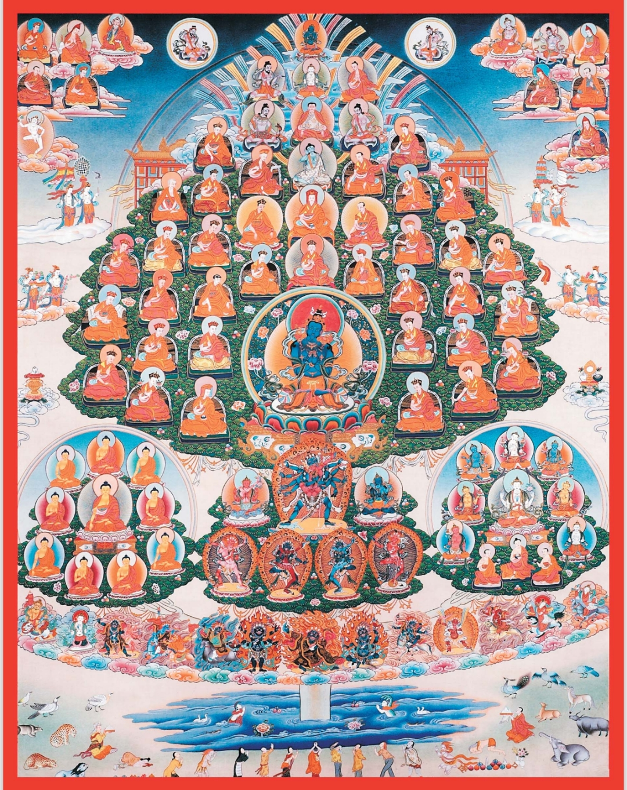

<!DOCTYPE html>
<html lang="en" data-theme="auto">
<head>
<meta charset="UTF-8">
<meta name="viewport" content="width=device-width,initial-scale=1,viewport-fit=cover">
<meta name="theme-color" content="#f7f2e6">
<meta name="description" content="Free, simple tools for daily Buddhist practice, whatever your school: a meditation timer, a mala counter for Ngöndro and mantras, a practice diary, daily prayers and practice-day calendars. No account, no adverts.">
<link rel="canonical" href="https://slicedharma.com/ngondro/">
<meta property="og:type" content="website"><meta property="og:site_name" content="Sliced Dharma">
<meta property="og:title" content="Dharma Practice · Sliced Dharma">
<meta property="og:description" content="Free, simple tools for daily Buddhist practice, whatever your school: a meditation timer, a mala counter for Ngöndro and mantras, a practice diary, daily prayers and practice-day calendars. No account, no adverts.">
<meta property="og:url" content="https://slicedharma.com/ngondro/">
<meta property="og:image" content="https://slicedharma.com/ngondro/og-image.png">
<meta name="twitter:card" content="summary_large_image">
<meta name="mobile-web-app-capable" content="yes">
<meta name="apple-mobile-web-app-capable" content="yes">
<meta name="apple-mobile-web-app-status-bar-style" content="default">
<meta name="apple-mobile-web-app-title" content="Dharma Practice">
<link rel="manifest" href="manifest.json">
<link rel="icon" href="favicon-32.png" sizes="32x32">
<link rel="icon" href="icon-192.png" sizes="192x192">
<link rel="apple-touch-icon" href="apple-touch-icon.png">
<link rel="preload" href="fonts/atkinson-latin.woff2" as="font" type="font/woff2" crossorigin>
<title>Dharma Practice · Sliced Dharma</title>
<style>
/* ═══════════════════════════════════════════════════════════════
   FONTS — self-hosted (SIL Open Font License) so the installed app
   looks right offline. Tibetan loads only when Tibetan text appears.
═══════════════════════════════════════════════════════════════ */
@font-face { font-family:'Atkinson Hyperlegible Next'; font-weight:200 800; font-display:swap; src:url(fonts/atkinson-latin.woff2) format('woff2');
  unicode-range:U+0000-00FF,U+0131,U+0152-0153,U+02BB-02BC,U+02C6,U+02DA,U+02DC,U+0304,U+0308,U+0329,U+2000-206F,U+20AC,U+2122,U+2191,U+2193,U+2212,U+2215,U+FEFF,U+FFFD; }
@font-face { font-family:'Atkinson Hyperlegible Next'; font-weight:200 800; font-display:swap; src:url(fonts/atkinson-latin-ext.woff2) format('woff2');
  unicode-range:U+0100-02BA,U+02BD-02C5,U+02C7-02CC,U+02CE-02D7,U+02DD-02FF,U+0304,U+0308,U+0329,U+1D00-1DBF,U+1E00-1E9F,U+1EF2-1EFF,U+2020,U+20A0-20AB,U+20AD-20C0,U+2113,U+2C60-2C7F,U+A720-A7FF; }
@font-face { font-family:'Fraunces'; font-weight:400 600; font-display:swap; src:url(fonts/fraunces-latin.woff2) format('woff2');
  unicode-range:U+0000-00FF,U+0131,U+0152-0153,U+02BB-02BC,U+02C6,U+02DA,U+02DC,U+0304,U+0308,U+0329,U+2000-206F,U+20AC,U+2122,U+2191,U+2193,U+2212,U+2215,U+FEFF,U+FFFD; }
@font-face { font-family:'Fraunces'; font-weight:400 600; font-display:swap; src:url(fonts/fraunces-latin-ext.woff2) format('woff2');
  unicode-range:U+0100-02BA,U+02BD-02C5,U+02C7-02CC,U+02CE-02D7,U+02DD-02FF,U+0304,U+0308,U+0329,U+1D00-1DBF,U+1E00-1E9F,U+1EF2-1EFF,U+2020,U+20A0-20AB,U+20AD-20C0,U+2113,U+2C60-2C7F,U+A720-A7FF; }
@font-face { font-family:'Noto Serif Tibetan'; font-weight:400 700; font-display:swap; src:url(fonts/noto-serif-tibetan.woff2) format('woff2');
  unicode-range:U+0F00-0FFF,U+200C-200D,U+25CC,U+3008-300B; }

/* ═══════════════════════════════════════════════════════════════
   DESIGN TOKENS — "shrine room": butter-lamp saffron on rice paper
   by day, lamp-lit umber at night. Every component reads these.
═══════════════════════════════════════════════════════════════ */
:root {
  --f-ui:'Atkinson Hyperlegible Next','Atkinson Hyperlegible',system-ui,-apple-system,'Segoe UI',sans-serif;
  --f-display:'Fraunces',Georgia,'Times New Roman',serif;
  --f-tib:'Noto Serif Tibetan','Microsoft Himalaya','Kokonor',serif;
  --scale:1;
  --fs-sm:calc(15px * var(--scale));    /* secondary lines — the smallest reading size */
  --fs:calc(17px * var(--scale));       /* body */
  --fs-lg:calc(19px * var(--scale));    /* row titles */
  --fs-xl:calc(24px * var(--scale));    /* card titles */
  --fs-h:calc(30px * var(--scale));     /* page titles */
  --r:14px; --r-lg:18px; --r-xl:24px;
  --tap:48px;                           /* minimum touch target */
  --gutter:18px; --col-w:720px; --nav-w:190px;
  --safe-b:env(safe-area-inset-bottom,0px); --safe-t:env(safe-area-inset-top,0px);
}
/* Colour themes. "auto" follows the phone's light/dark setting. Any element
   carrying data-theme paints its subtree in that theme (Settings previews). */
:root, [data-theme="light"] {
  --bg:#f7f2e6; --surface:#fffbf2; --sunk:#efe7d6; --ink:#211910; --ink-2:#56463a; --ink-3:#7d6b57; --line:#e2d6bf;
  --accent:#b35e0b; --on-accent:#fffaf0; --accent-ink:#8f4a05; --glow:rgba(214,140,40,.16);
  --info:#2d4c8c; --maroon:#7a2230; --ok:#2f7a45; --bad:#a8402c; --bead-off:rgba(120,90,50,.22); --veil:rgba(20,12,4,.45);
}
[data-theme="dark"] {
  --bg:#15110c; --surface:#1f1a13; --sunk:#110e0a; --ink:#f3e9d7; --ink-2:#cbbb9f; --ink-3:#978770; --line:#352d22;
  --accent:#e3903a; --on-accent:#1b1206; --accent-ink:#f2aa55; --glow:rgba(227,144,58,.13);
  --info:#93b3ee; --maroon:#e0939e; --ok:#79c58f; --bad:#eb8f7b; --bead-off:rgba(240,220,180,.16); --veil:rgba(0,0,0,.6);
}
@media (prefers-color-scheme: dark) { [data-theme="auto"] {
  --bg:#15110c; --surface:#1f1a13; --sunk:#110e0a; --ink:#f3e9d7; --ink-2:#cbbb9f; --ink-3:#978770; --line:#352d22;
  --accent:#e3903a; --on-accent:#1b1206; --accent-ink:#f2aa55; --glow:rgba(227,144,58,.13);
  --info:#93b3ee; --maroon:#e0939e; --ok:#79c58f; --bad:#eb8f7b; --bead-off:rgba(240,220,180,.16); --veil:rgba(0,0,0,.6);
} }
[data-theme="temple"] {
  --bg:#1a0608; --surface:#2a0d10; --sunk:#130405; --ink:#f5e8d0; --ink-2:#d6b58f; --ink-3:#a07c5a; --line:#4a1c1c;
  --accent:#e09020; --on-accent:#1a0608; --accent-ink:#f0b030; --glow:rgba(224,144,32,.14);
  --info:#f0b87a; --maroon:#f08a6a; --ok:#8fcf8f; --bad:#ff9a7a; --bead-off:rgba(245,220,180,.16); --veil:rgba(0,0,0,.6);
}
[data-theme="night"] {
  --bg:#080c1e; --surface:#121a36; --sunk:#050816; --ink:#f0e8ff; --ink-2:#bdb2e0; --ink-3:#8a80b0; --line:#262e52;
  --accent:#d8bc80; --on-accent:#0a0e22; --accent-ink:#e6cc92; --glow:rgba(216,188,128,.12);
  --info:#a8b8ff; --maroon:#c9a0f0; --ok:#8fd8a8; --bad:#ff9a9a; --bead-off:rgba(220,210,255,.16); --veil:rgba(0,0,0,.6);
}
[data-theme="earth"] {
  --bg:#f5ede0; --surface:#fff8f0; --sunk:#ece0cc; --ink:#2c1008; --ink-2:#6a3818; --ink-3:#8a5a3a; --line:#e2cfb4;
  --accent:#a8490a; --on-accent:#fff8f0; --accent-ink:#8a3a06; --glow:rgba(180,80,20,.12);
  --info:#2f5d7a; --maroon:#8a2a1a; --ok:#3d7a3a; --bad:#a83a20; --bead-off:rgba(140,80,30,.22); --veil:rgba(30,10,0,.45);
}
[data-theme="neuro"] {
  --bg:#08101c; --surface:#131d2e; --sunk:#050b14; --ink:#e0eaf8; --ink-2:#a6bfdc; --ink-3:#7090b0; --line:#23324a;
  --accent:#6aa8d8; --on-accent:#08101c; --accent-ink:#8cc2ec; --glow:rgba(88,152,200,.14);
  --info:#9cc8ff; --maroon:#9ab8ff; --ok:#8fd8b0; --bad:#ff9a8a; --bead-off:rgba(200,220,255,.16); --veil:rgba(0,0,0,.6);
}
[data-theme="slate"] {
  --bg:#1c2330; --surface:#263142; --sunk:#151b26; --ink:#e4eef8; --ink-2:#aebccc; --ink-3:#7c8ca0; --line:#34425a;
  --accent:#8fb0d0; --on-accent:#141a24; --accent-ink:#a8c6e4; --glow:rgba(140,176,210,.14);
  --info:#b0d0f0; --maroon:#d8a8b8; --ok:#9ad0a8; --bad:#f0a090; --bead-off:rgba(210,225,240,.16); --veil:rgba(0,0,0,.6);
}
[data-theme="highc"] {
  --bg:#000; --surface:#0a0a0a; --sunk:#000; --ink:#fff; --ink-2:#f0f0f0; --ink-3:#d0d0d0; --line:#9a9a9a;
  --accent:#ffd400; --on-accent:#000; --accent-ink:#ffe04a; --glow:rgba(255,212,0,.18);
  --info:#8fd0ff; --maroon:#ffb0a0; --ok:#7dff9a; --bad:#ff8a70; --bead-off:rgba(255,255,255,.3); --veil:rgba(0,0,0,.75);
}
[data-theme="neon"] {
  --bg:#05060a; --surface:#0e1220; --sunk:#030408; --ink:#eafcff; --ink-2:#9fe8f5; --ink-3:#6bb8cc; --line:#1c3040;
  --accent:#19e6d2; --on-accent:#05060a; --accent-ink:#5cf0e0; --glow:rgba(25,230,210,.14);
  --info:#7fc8ff; --maroon:#ff78ee; --ok:#7dffb0; --bad:#ff7aa0; --bead-off:rgba(180,250,255,.18); --veil:rgba(0,0,0,.7);
}

/* ═══════════════════════════════════════════
   BASE
═══════════════════════════════════════════ */
*,*::before,*::after { box-sizing:border-box; margin:0; padding:0; -webkit-tap-highlight-color:transparent; }
html,body { height:100%; overflow:hidden; background:var(--bg); touch-action:manipulation; }
body { font-family:var(--f-ui); font-size:var(--fs); line-height:1.5; color:var(--ink); -webkit-font-smoothing:antialiased; }
button { font:inherit; color:inherit; cursor:pointer; background:none; border:0; }
a { color:inherit; }
:focus-visible { outline:3px solid var(--info); outline-offset:2px; border-radius:6px; }
input,textarea,select { font:inherit; color:var(--ink); background:var(--bg); border:2px solid var(--line); border-radius:var(--r); padding:12px 14px; width:100%; min-height:var(--tap); }
input:focus,textarea:focus { outline:none; border-color:var(--accent); }
[hidden] { display:none !important; }

/* ═══════════════════════════════════════════
   SHELL
═══════════════════════════════════════════ */
#app { position:fixed; inset:0; display:flex; flex-direction:column; }
#app.immersive #nav { display:none; }
#content { flex:1; position:relative; overflow:hidden; }
#nav { display:grid; grid-template-columns:repeat(4,1fr); border-top:1px solid var(--line); background:var(--surface); padding:6px 4px calc(8px + var(--safe-b)); flex-shrink:0; z-index:20; }
.tab { display:flex; flex-direction:column; align-items:center; gap:2px; padding:6px 2px; min-height:58px; border-radius:12px; color:var(--ink-2); font-size:13px; font-weight:700; }
.tab svg { width:26px; height:26px; }
.tab.on { color:var(--accent-ink); background:var(--glow); }
.page { position:absolute; inset:0; overflow-y:auto; -webkit-overflow-scrolling:touch; }
.col { max-width:var(--col-w); margin:0 auto; padding:calc(20px + var(--safe-t)) var(--gutter) 40px; display:flex; flex-direction:column; gap:16px; }
.col > .gap-s { margin-top:-6px; }

/* ═══════════════════════════════════════════
   TYPE & COMMON PIECES
═══════════════════════════════════════════ */
.h1 { font-family:var(--f-display); font-weight:600; font-size:var(--fs-h); line-height:1.15; text-wrap:balance; }
.h2 { font-size:var(--fs-sm); font-weight:700; letter-spacing:.04em; color:var(--ink-2); margin-top:8px; }
.sub { color:var(--ink-2); }
.small { font-size:var(--fs-sm); color:var(--ink-2); }
.row { display:flex; align-items:center; gap:12px; }
.grow { flex:1; min-width:0; }
.card { background:var(--surface); border:1px solid var(--line); border-radius:var(--r-lg); padding:16px; }
.card.glow { background:var(--glow); border-color:color-mix(in srgb,var(--accent) 35%,transparent); }
.stack { display:flex; flex-direction:column; gap:12px; }
.iconbtn { width:var(--tap); height:var(--tap); border-radius:var(--r); border:1px solid var(--line); background:var(--surface); display:grid; place-items:center; color:var(--ink-2); flex-shrink:0; }
.iconbtn svg { width:24px; height:24px; }
.btn { min-height:54px; border-radius:var(--r); padding:12px 18px; font-weight:700; font-size:var(--fs); display:inline-flex; align-items:center; justify-content:center; gap:8px; text-align:center; }
.btn svg { width:22px; height:22px; flex-shrink:0; }
.btn.primary { background:var(--accent); color:var(--on-accent); }
.btn.soft { background:var(--sunk); color:var(--ink); border:1px solid var(--line); }
.btn.danger { background:var(--bad); color:var(--bg); }
.btn.link { min-height:var(--tap); padding:8px 4px; color:var(--accent-ink); text-decoration:underline; text-underline-offset:3px; font-weight:700; }
.btn.wide { width:100%; }
.btns { display:grid; grid-template-columns:2fr 1fr; gap:10px; }
.btns.even { grid-template-columns:1fr 1fr; }
.btns .btn { white-space:nowrap; padding-inline:12px; }
.bar { height:10px; border-radius:6px; background:var(--sunk); overflow:hidden; }
.bar i { display:block; height:100%; background:var(--accent); border-radius:6px; }
.tag { font-size:13px; font-weight:700; padding:4px 9px; border-radius:9px; background:var(--sunk); color:var(--ink-2); white-space:nowrap; }
.tag.ok { color:var(--ok); }
.note { font-size:var(--fs-sm); color:var(--ink-2); border-left:3px solid var(--accent); padding-left:12px; }

/* Lists of tappable rows */
.list { display:flex; flex-direction:column; background:var(--surface); border:1px solid var(--line); border-radius:var(--r-lg); overflow:hidden; }
.item { display:flex; align-items:center; gap:14px; padding:14px 16px; min-height:64px; border-bottom:1px solid var(--line); text-align:left; width:100%; text-decoration:none; }
.item:last-child { border-bottom:0; }
.item:active { background:var(--glow); }
.item .t { font-weight:700; font-size:var(--fs-lg); display:block; line-height:1.3; }
.item .s { color:var(--ink-2); font-size:var(--fs-sm); display:block; }
.item .chev { color:var(--ink-3); flex-shrink:0; }
.item .chev svg, .daycard .chev svg { width:20px; height:20px; display:block; }
.item .ico { width:40px; height:40px; border-radius:12px; background:var(--sunk); display:grid; place-items:center; color:var(--accent-ink); flex-shrink:0; }
.item .ico svg { width:24px; height:24px; }
.dot { width:14px; height:14px; border-radius:50%; flex-shrink:0; background:var(--acc,var(--accent)); }
.minibar { height:6px; border-radius:4px; background:var(--sunk); overflow:hidden; margin-top:6px; }
.minibar i { display:block; height:100%; background:var(--accent); }

/* ═══════════════════════════════════════════
   TODAY
═══════════════════════════════════════════ */
.greet { font-family:var(--f-display); font-weight:600; font-size:calc(28px * var(--scale)); line-height:1.2; }
.daycard { display:block; width:100%; text-align:left; background:var(--surface); border:1px solid var(--line); border-radius:var(--r-lg); overflow:hidden; }
.daycard .top { display:flex; align-items:center; gap:14px; padding:14px 16px; }
.daycard .top b { display:block; font-size:var(--fs-lg); }
.daycard .chev { margin-left:auto; color:var(--ink-3); }
.tibnum { font-family:var(--f-tib); color:var(--accent-ink); }
.hairline { display:flex; flex-direction:column; gap:2px; padding:12px 16px; border-top:1px solid var(--line); background:var(--sunk); }
.hairline .lbl { font-size:var(--fs-sm); color:var(--ink-2); }
.hairline b { font-size:var(--fs); }
.good { color:var(--ok); } .avoid { color:var(--bad); } .neutral { color:var(--ink-2); }
.special b { display:block; font-size:var(--fs-lg); color:var(--accent-ink); }
.special p { color:var(--ink-2); margin-top:4px; }
.pname { font-family:var(--f-display); font-weight:600; font-size:var(--fs-xl); line-height:1.15; }
.pnum { color:var(--ink-2); }
.pnum b { color:var(--ink); font-size:calc(22px * var(--scale)); }
.week { display:grid; grid-template-columns:repeat(7,1fr); gap:4px; text-align:center; }
.week span { font-size:13px; color:var(--ink-3); font-weight:700; }
.week i { display:block; margin:4px auto 0; width:30px; height:30px; border-radius:50%; border:2px solid var(--line); }
.week i.y { background:var(--accent); border-color:var(--accent); }
.week i.t { border-color:var(--accent); border-style:dashed; }
.week i.y.t { border-style:solid; }
/* Quote carousel — native horizontal swipe with scroll-snap */
/* Practice diary: each day's circle fills with the colours of what was ticked. */
.wd { display:flex; flex-direction:column; align-items:center; gap:4px; padding:4px 0; border-radius:12px; min-height:var(--tap); }
.wd span { font-size:13px; color:var(--ink-3); font-weight:700; }
.wd i { display:block; width:32px; height:32px; border-radius:50%; border:2px solid var(--line); background:transparent; transition:transform .2s; }
.wd.today span { color:var(--accent-ink); }
.wd.sel { background:var(--glow); }
.wd.sel i { box-shadow:0 0 0 3px var(--bg),0 0 0 5px var(--accent); }
.wd:disabled { opacity:.35; }
.jchips { display:flex; flex-wrap:wrap; gap:8px; }
.jchip { display:inline-flex; align-items:center; gap:8px; min-height:44px; padding:8px 14px; border-radius:22px; border:2px solid var(--line); background:var(--bg); font-weight:700; font-size:var(--fs-sm); }
.jchip i { width:14px; height:14px; border-radius:50%; background:var(--c); flex-shrink:0; }
.jchip.on { border-color:var(--c); background:color-mix(in srgb,var(--c) 18%,var(--bg)); }
.jchip.add { color:var(--ink-2); border-style:dashed; }
.jchip.add svg { width:16px; height:16px; }
.jchip.pop { animation:pop .35s ease-out; }
@keyframes pop { 0% { transform:scale(1); } 40% { transform:scale(1.12); } 100% { transform:scale(1); } }
.jcal .jd { gap:4px; }
.jcal .jd i { width:18px; height:18px; border-radius:50%; border:1.5px solid var(--line); display:block; }
.jcal .jd:disabled { opacity:.35; }
.swatches { display:flex; flex-wrap:wrap; gap:10px; }
.swatch { width:40px; height:40px; border-radius:50%; background:var(--c); border:3px solid transparent; box-shadow:0 0 0 1px var(--line); }
.swatch.on { border-color:var(--bg); box-shadow:0 0 0 3px var(--ink); }
details summary { cursor:pointer; min-height:44px; display:flex; align-items:center; font-weight:700; color:var(--accent-ink); }
/* Words for today: a single quote, sized to its text; swipe sideways to change. */
.qcard { touch-action:pan-y; user-select:none; -webkit-user-select:none; display:flex; flex-direction:column; gap:12px; }
.qcard .quote { min-height:0; flex:none; }
.quote.from-right { animation:qin-r .28s ease-out; }
.quote.from-left { animation:qin-l .28s ease-out; }
@keyframes qin-r { from { opacity:0; transform:translateX(28px); } to { opacity:1; transform:none; } }
@keyframes qin-l { from { opacity:0; transform:translateX(-28px); } to { opacity:1; transform:none; } }
.qcard .qnav { margin-top:0; }
.switchbtn { min-height:44px; padding:6px 12px; font-size:var(--fs-sm); flex-shrink:0; }
.switchbtn svg { width:18px; height:18px; }
.tibdate { font-family:var(--f-tib); color:var(--accent-ink); font-size:calc(17px * var(--scale)); }
/* The card takes the height of the quote showing (set in updQ), so short
   sayings don't sit in a box sized for the longest verse. */
.quotes { display:flex; align-items:flex-start; overflow-x:auto; scroll-snap-type:x mandatory; gap:12px; scrollbar-width:none; overscroll-behavior-x:contain; transition:height .25s; }
.quotes::-webkit-scrollbar { display:none; }
.quote { flex:0 0 100%; scroll-snap-align:center; display:flex; flex-direction:column; justify-content:center; gap:10px; min-height:120px; }
.quote p { font-family:var(--f-display); font-size:calc(20px * var(--scale)); line-height:1.45; text-wrap:pretty; white-space:pre-line; }
.quote.long p { font-size:calc(17px * var(--scale)); }
.quote cite { font-style:normal; color:var(--ink-2); font-size:var(--fs-sm); }
.qnav { display:flex; align-items:center; justify-content:space-between; gap:8px; margin-top:4px; }
.qnav .small { text-align:center; }
.qhead { margin:0; font-size:13px; font-weight:700; letter-spacing:.12em; text-transform:uppercase; color:var(--ink-3); }
.qcard .qnav { padding-top:12px; border-top:1px solid var(--line); }
.qarrows { display:flex; gap:8px; }
.qshare { display:inline-flex; align-items:center; gap:8px; min-height:44px; padding:0 18px 0 12px; border-radius:999px; font-weight:700; color:var(--accent-ink);
  background:var(--glow); border:1px solid color-mix(in srgb,var(--accent) 40%,var(--line)); }
.qshare svg { width:24px; height:24px; }
.qshare:active { transform:scale(.97); }
.mile-ico { width:96px; height:96px; margin:4px auto 0; color:var(--accent); }
.mile-ico svg { width:100%; height:100%; }
.miles { display:flex; flex-direction:column; gap:8px; }
.mile { display:flex; align-items:center; gap:12px; padding:8px 10px; border-radius:var(--r); background:var(--sunk); opacity:.55; }
.mile.on { opacity:1; }
.mile .mi { width:40px; height:40px; flex:none; color:var(--accent); }
.mile .mi svg { width:100%; height:100%; }
.mile b { display:block; }
.milerow { display:flex; align-items:center; flex-wrap:wrap; gap:6px; padding:6px 0; color:var(--accent); background:none; border:0; text-align:left; min-height:44px; }
.milerow > span:not(.small) { width:26px; height:26px; }
.milerow svg { width:100%; height:100%; }
.milerow .small { color:var(--ink-3); margin-left:4px; }
.shqstyles { display:flex; gap:8px; overflow-x:auto; padding:2px 2px 6px; margin:0 -2px; scrollbar-width:none; }
.shqst { flex:none; display:inline-flex; align-items:center; gap:8px; min-height:44px; padding:0 14px 0 8px; border-radius:999px; border:1px solid var(--line); background:var(--surface); font-weight:700; font-size:15px; color:var(--ink); }
.shqst i { width:24px; height:24px; border-radius:50%; border:1px solid var(--line); }
.shqst.on { border-color:var(--accent); background:var(--glow); color:var(--accent-ink); }
.sheet > * { flex-shrink:0; }
.seedthig { position:relative; width:180px; height:180px; margin:0 auto 12px; border-radius:50%;
  background:radial-gradient(circle at 50% 50%,#ffffff 0%,#f3f2ff 22%,#c9c8ff 55%,#9d9cf6 82%,#b9b8ff 100%);
  box-shadow:0 0 0 3px rgba(255,255,255,.85),0 0 0 7px rgba(170,168,255,.55),0 0 26px 10px rgba(150,148,255,.55),inset 0 0 18px rgba(255,255,255,.9); overflow:hidden; }
.seedthig::before { content:''; position:absolute; inset:0; border-radius:50%; opacity:.5;
  background:repeating-conic-gradient(from 20deg,rgba(255,255,255,.55) 0deg 4deg,rgba(255,255,255,0) 4deg 30deg); mix-blend-mode:screen; filter:blur(3px); }
.seedthig span { position:relative; width:100%; height:100%; display:grid; place-items:center; font-family:var(--f-tib); font-size:72px; font-weight:700; line-height:1;
  color:#3a36e8; text-shadow:0 0 6px rgba(255,255,255,.9); padding-top:30px; }
.jlq { border-left:3px solid var(--accent); padding:4px 0 4px 12px; margin:0; }
.jlq p { font-size:var(--fs); }
.sect.hl { border:1px solid color-mix(in srgb,var(--accent) 45%,var(--line)); border-radius:var(--r-lg); padding:0 14px 8px; background:linear-gradient(135deg,var(--glow),transparent 70%); margin:6px 0; }
.sect.hl .sect-t { color:var(--accent-ink); }
.codebox { display:flex; gap:8px; justify-content:center; }
.codebox .cb { width:44px; height:54px; padding:0; text-align:center; font-size:24px; font-weight:700; text-transform:uppercase; border-radius:10px; }
.bigcode { font-size:calc(30px * var(--scale)); font-weight:700; letter-spacing:.12em; text-align:center; margin:2px 0 6px; font-variant-numeric:tabular-nums; }
.bignum small { font-size:.45em; font-weight:600; color:var(--ink-2); }
.card.feature { display:flex; align-items:center; gap:14px; text-align:left; border-color:color-mix(in srgb,var(--accent) 45%,var(--line)); background:linear-gradient(135deg,var(--glow),var(--surface)); }
.card.feature b { display:block; font-size:var(--fs-lg); }
.ftib { font-family:var(--f-tib); font-size:34px; line-height:1; color:var(--accent-ink); width:52px; height:52px; display:grid; place-items:center; border-radius:50%; background:var(--surface); border:1px solid var(--line); flex:none; }
.tourpill { position:absolute; left:50%; bottom:calc(84px + var(--safe-b)); transform:translateX(-50%); z-index:36; display:flex; align-items:center; gap:10px; padding:6px 6px 6px 16px; border-radius:999px;
  background:var(--surface); border:1px solid var(--accent); box-shadow:0 6px 24px rgba(0,0,0,.22); font-weight:700; white-space:nowrap; }
.tourpill .btn { min-height:40px; padding:0 14px; }
.tourpill svg { width:18px; height:18px; }
.sect { border-bottom:1px solid var(--line); padding-bottom:6px; }
.sect > summary { display:flex; align-items:center; gap:10px; list-style:none; min-height:56px; padding:8px 2px; cursor:pointer; color:inherit; font-weight:400; }
.sect > summary::-webkit-details-marker { display:none; }
.sect-h { flex:1; min-width:0; display:flex; flex-direction:column; gap:2px; }
.sect-t { font-size:13px; font-weight:700; letter-spacing:.1em; color:var(--ink-3); }
.sect-s { font-size:var(--fs-sm); color:var(--ink-2); white-space:nowrap; overflow:hidden; text-overflow:ellipsis; }
.sect[open] .sect-s { display:none; }
.sect-c { flex:none; width:32px; height:32px; border-radius:50%; display:grid; place-items:center; background:var(--sunk); color:var(--ink-2); }
.sect-c svg { width:18px; height:18px; transform:rotate(90deg); transition:transform .2s; }
.sect[open] .sect-c svg { transform:rotate(-90deg); }
.sect-b { padding:4px 0 10px; display:flex; flex-direction:column; gap:10px; }
.shqfoot { position:sticky; bottom:calc(-22px - var(--safe-b)); margin:0 -20px; padding:10px 20px calc(14px + var(--safe-b)); background:var(--surface); border-top:1px solid var(--line); display:flex; flex-direction:column; gap:10px; z-index:2; }
.shqimg { max-height:34vh !important; }
.shqimg.loading { filter:blur(2px); opacity:.85; }
.shqimg { touch-action:pan-y; user-select:none; -webkit-user-select:none; }
.shqnav { display:flex; align-items:center; justify-content:space-between; gap:8px; margin-top:-4px; }
.shqnav > span { display:flex; flex-direction:column; align-items:center; text-align:center; }
.shqthumbs { display:flex; gap:10px; overflow-x:auto; padding:2px 2px 8px; scroll-snap-type:x proximity; scrollbar-width:thin; }
.shqth { flex:none; width:78px; display:flex; flex-direction:column; align-items:center; gap:4px; font-size:12px; font-weight:700; color:var(--ink-2); scroll-snap-align:center; background:none; border:0; padding:0; }
.shqth img { width:78px; height:98px; object-fit:cover; border-radius:10px; background:var(--sunk); border:2px solid transparent; }
.shqth.story img { height:138px; }
.shqth.on img { border-color:var(--accent); }
.shqth.on { color:var(--accent-ink); }
.shqth span { line-height:1.2; text-align:center; }
.shqimg { display:block; width:100%; max-height:44vh; object-fit:contain; border-radius:var(--r); border:1px solid var(--line); background:var(--sunk); }

/* ═══════════════════════════════════════════
   PRACTICE
═══════════════════════════════════════════ */
.bigtile { display:flex; gap:16px; align-items:center; text-align:left; width:100%; border-radius:20px; padding:20px 18px; background:var(--accent); color:var(--on-accent); }
.bigtile b { display:block; font-size:calc(21px * var(--scale)); }
.bigtile svg { width:40px; height:40px; flex-shrink:0; }
.bignum { font-size:calc(46px * var(--scale)); font-weight:600; line-height:1; font-variant-numeric:tabular-nums; }
.done-line { font-family:var(--f-display); font-size:var(--fs-lg); color:var(--accent-ink); }
.mantra .sa { font-size:.72em; }
.mantra { font-weight:700; letter-spacing:.14em; color:var(--maroon); font-size:var(--fs-sm); }
.grid-svg { width:100%; display:block; }
.grid-svg circle { fill:none; stroke:var(--accent); stroke-opacity:.35; stroke-width:.8; }
.grid-svg circle.f { fill:var(--accent); stroke:none; opacity:.9; }
.grid-svg circle.p { fill:var(--accent); stroke:none; opacity:.55; }
.opts { display:grid; grid-template-columns:repeat(4,1fr); gap:8px; }
.opt { min-height:54px; border-radius:var(--r); border:2px solid var(--line); background:var(--bg); font-weight:700; }
.opt.on { border-color:var(--accent); background:var(--glow); color:var(--accent-ink); }
.seg { display:grid; grid-template-columns:repeat(3,1fr); gap:8px; }
.seg .opt { font-size:var(--fs); }

/* ═══════════════════════════════════════════
   OVERLAYS (full screen within the content area) & SHEETS
═══════════════════════════════════════════ */
.overlay { position:absolute; inset:0; background:var(--bg); display:flex; flex-direction:column; z-index:30; }
.ovtop { display:flex; align-items:center; gap:10px; padding:calc(12px + var(--safe-t)) 14px 8px; max-width:var(--col-w); width:100%; margin:0 auto; }
.ovtop .title { flex:1; font-weight:700; font-size:var(--fs-lg); text-align:center; line-height:1.25; }
.ovbody { flex:1; overflow-y:auto; }
.ovbody > .col { padding-top:6px; }
.veil { position:absolute; inset:0; background:var(--veil); display:flex; align-items:flex-end; justify-content:center; z-index:40; }
.veil.enter { animation:fade .2s; }
.sheet { width:100%; max-width:560px; background:var(--surface); border-radius:26px 26px 0 0; padding:0 20px calc(22px + var(--safe-b)); display:flex; flex-direction:column; gap:14px; max-height:92%; overflow-y:auto; }
.sheet.enter { animation:up .28s cubic-bezier(.32,.72,0,1); }
/* Top bar of every sheet: drag handle (centre) + Close button (right), stays visible while scrolling */
.sheetbar { position:sticky; top:0; z-index:2; display:flex; align-items:center; justify-content:center; min-height:52px; margin:0 -20px; padding:6px 12px 0; background:var(--surface); touch-action:none; cursor:grab; }
.sheetbar .grab { margin:0; }
.xclose { position:absolute; right:10px; top:8px; width:44px; height:44px; border-radius:50%; display:grid; place-items:center; background:var(--sunk); color:var(--ink-2); border:1px solid var(--line); }
.xclose svg { width:20px; height:20px; }
.sheet .h1 { font-size:calc(25px * var(--scale)); }
.grab { width:44px; height:5px; border-radius:3px; background:var(--line); margin:4px auto 2px; flex-shrink:0; }
.toast { position:absolute; left:14px; right:14px; bottom:14px; max-width:520px; margin:0 auto; background:var(--ink); color:var(--bg); border-radius:var(--r); padding:10px 14px; display:flex; align-items:center; gap:10px; z-index:50; font-weight:700; }
.toast.enter { animation:up .25s; }
.toast button { margin-left:auto; text-decoration:underline; font-weight:700; min-height:40px; padding:0 6px; color:inherit; }
@keyframes up { from { transform:translateY(40px); opacity:0; } to { transform:none; opacity:1; } }
@keyframes fade { from { opacity:0; } to { opacity:1; } }

/* ═══════════════════════════════════════════
   SESSION (counting)
═══════════════════════════════════════════ */
.session { background:var(--bg); }
.session .bgimg { position:absolute; inset:0; background-size:cover; background-position:center 20%; opacity:.22; pointer-events:none; }
.tapzone { flex:1; position:relative; display:flex; flex-direction:column; align-items:center; justify-content:center; gap:10px; user-select:none; -webkit-user-select:none; touch-action:manipulation; cursor:pointer; }
.mala { width:min(76vw,300px,52vh); aspect-ratio:1; position:relative; }
.mala svg { width:100%; height:100%; display:block; }
.mala .n { position:absolute; inset:0; display:grid; place-items:center; text-align:center; pointer-events:none; }
.mala .n b { display:block; font-size:calc(64px * var(--scale)); font-weight:600; line-height:1; font-variant-numeric:tabular-nums; }
.mala .n span { color:var(--ink-2); font-size:var(--fs-sm); }
.mala .halo { position:absolute; inset:14%; border-radius:50%; background:var(--ring,var(--accent)); opacity:.9; box-shadow:0 0 40px var(--ring,var(--accent)); transition:background .15s, box-shadow .15s; }
.pulse { animation:pulse .22s ease-out; }
@keyframes pulse { from { transform:scale(1.04); } to { transform:scale(1); } }
.sess-hint { color:var(--ink-2); font-size:var(--fs-sm); text-align:center; padding:0 20px; }
.sessbar { display:grid; grid-template-columns:1fr 1.3fr 1.6fr; gap:8px; padding:10px 14px calc(14px + var(--safe-b)); max-width:var(--col-w); width:100%; margin:0 auto; position:relative; }
.holdbtn { position:relative; overflow:hidden; line-height:1.2; }
.holdbtn small { display:block; font-weight:400; font-size:13px; color:var(--ink-2); }
.holdbtn .fillbar { position:absolute; left:0; top:0; bottom:0; width:0; background:color-mix(in srgb,var(--bad) 35%,transparent); pointer-events:none; }
.holdbtn.on { border-color:var(--bad); color:var(--bad); }
.sesstools { display:flex; gap:8px; }

/* ═══════════════════════════════════════════
   TEXTS — verse-by-verse chant view
═══════════════════════════════════════════ */
.verse { flex:1; overflow-y:auto; display:flex; flex-direction:column; }
.verse .col { flex:1; justify-content:center; gap:14px; padding-top:10px; }
.vsec { font-weight:700; color:var(--accent-ink); font-size:var(--fs-sm); letter-spacing:.05em; }
.vt { font-family:var(--f-tib); font-size:calc(24px * var(--scale)); line-height:1.9; color:var(--maroon); }
.vp { font-size:calc(24px * var(--scale)); font-weight:700; line-height:1.35; letter-spacing:.01em; }
.ve { font-size:var(--fs-lg); color:var(--ink-2); line-height:1.55; }
.vt, .ve { white-space:pre-line; }
.vins { font-size:var(--fs-sm); color:var(--ink-2); font-style:normal; border-left:3px solid var(--line); padding-left:10px; }
.vx { font-size:calc(20px * var(--scale)); line-height:1.6; white-space:pre-line; max-width:62ch; }
.whole .vblock { padding:14px 0; border-bottom:1px solid var(--line); display:flex; flex-direction:column; gap:6px; }
.whole .vp { font-size:calc(21px * var(--scale)); }
.whole .vt { font-size:calc(21px * var(--scale)); }
.vnav { display:grid; grid-template-columns:1fr 1.6fr; gap:10px; padding:10px 14px calc(14px + var(--safe-b)); max-width:var(--col-w); width:100%; margin:0 auto; }
.vcount { text-align:center; color:var(--ink-3); font-size:14px; }

/* ═══════════════════════════════════════════
   CALENDAR
═══════════════════════════════════════════ */
.cal { display:grid; grid-template-columns:repeat(7,1fr); gap:4px; }
.cal .dow { text-align:center; font-size:13px; font-weight:700; color:var(--ink-3); }
.cday { border-radius:12px; min-height:54px; display:flex; flex-direction:column; align-items:center; justify-content:center; background:var(--surface); border:1px solid var(--line); }
.cday b { font-size:17px; line-height:1.1; }
.cday span { font-size:12px; color:var(--ink-2); }
.cday.sp { background:var(--glow); border-color:var(--accent); }
.cday.sp b { color:var(--accent-ink); }
.cday.today { outline:3px solid var(--info); outline-offset:-2px; }
.cday.blank { background:none; border:0; }
.gcal .cday { position:relative; gap:2px; min-height:60px; padding:4px 0; }
.gcal .cday b { font-size:16px; }
.gcal .cday span { font-size:11px; }
.gcal { gap:5px; }
.gcal .cday { justify-content:flex-start; padding-top:7px; }
.gcal .cday > span { display:flex; align-items:center; gap:3px; min-height:13px; }
.gcal .cday .cm svg { display:block; }
.gcal .cday i { display:block; width:12px; height:12px; border-radius:50%; margin-top:auto; margin-bottom:4px; }
.gcal .cday.fe::after, .gcal .cday.an::after { position:absolute; top:3px; right:5px; font-size:11px; line-height:1; color:var(--accent-ink); }
.gcal .cday.fe::after { content:'★'; }
.gcal .cday.an::after { content:''; width:6px; height:6px; border-radius:50%; background:var(--ink-2); }
.calkey { display:flex; flex-wrap:wrap; justify-content:center; gap:8px 14px; font-size:13px; color:var(--ink-2); padding:4px 4px 0; }
.calkey > span { display:inline-flex; align-items:center; gap:6px; }
.calkey b { font-size:11px; font-weight:400; color:var(--ink-2); }
.calkey em { font-style:normal; color:var(--accent-ink); }
.calkey i { display:inline-block; width:14px; height:14px; border-radius:4px; }
.calkey .k-sp { background:var(--glow); border:1px solid var(--accent); }
.calkey .k-an { width:7px; height:7px; border-radius:50%; background:var(--ink-2); }
.calkey .k-rm { width:0; height:0; border-radius:0; border-top:9px solid var(--info); border-right:9px solid transparent; }
.calkey .k-ring { border-radius:50%; background:conic-gradient(#4a7fd4 0 50%,#c9713c 0); }
.legend .ki { flex:none; width:18px; height:18px; display:inline-grid; place-items:center; font-style:normal; color:var(--accent-ink); }
.legend .ki svg { width:18px; height:18px; }
.legend .ka::before { content:''; width:12px; height:12px; border-radius:4px; background:var(--glow); border:1px solid var(--accent); }
.legend .kn::before { content:''; width:7px; height:7px; border-radius:50%; background:var(--ink-2); }
.legend .kr { color:var(--info); }
.card.legend > div, .calmore .legend > div { align-items:flex-start; gap:10px; }
.card.legend .ki { margin-top:3px; }
.card.legend > div > time, .calmore .legend > div > time { min-width:3.6em; }
.legend time + span { flex:1; min-width:0; }
.calmore { border-top:1px solid var(--line); padding-top:4px; }
.calmore summary { display:flex; justify-content:space-between; gap:8px; list-style:none; }
.calmore summary::-webkit-details-marker { display:none; }
.calmore summary svg { width:20px; height:20px; transform:rotate(90deg); transition:transform .2s; }
.calmore[open] summary svg { transform:rotate(-90deg); }
.calmore .legend { margin-top:8px; }
.list.plain .item { padding-left:0; padding-right:0; }
.tcard { padding:0; overflow:hidden; display:flex; flex-direction:column; }
.tc-top { display:flex; align-items:center; gap:14px; padding:14px 16px; text-align:left; width:100%; }
.tc-top b { display:block; font-size:var(--fs-lg); }
.tc-top .small { display:block; }
.tc-top .chev { color:var(--ink-3); }
.tc-ausp { padding:12px 16px; border-top:1px solid var(--line); }
.tc-ausp.glow { background:var(--glow); }
.tc-ausp b { font-size:var(--fs-lg); }
.tcard > .note { margin:0 16px 10px; }
.tc-ev svg { width:16px; height:16px; vertical-align:-2px; }
.tc-ev { display:flex; flex-direction:column; gap:2px; text-align:left; padding:10px 16px; border-top:1px solid var(--line); width:100%; }
.tc-hair { display:flex; flex-direction:column; gap:2px; padding:10px 16px; border-top:1px solid var(--line); background:var(--sunk); }
.tc-week { display:flex; flex-direction:column; gap:10px; padding:12px 16px 8px; border-top:1px solid var(--line); }
.prog { display:flex; flex-direction:column; gap:6px; text-align:left; width:100%; }
.prog .bar i { background:var(--acc,var(--accent)); }
.prog .dot { background:var(--acc,var(--accent)); }
.mtime { display:flex; align-items:center; justify-content:center; gap:14px; }
.mtime label { display:flex; align-items:baseline; gap:6px; }
.mtime input { width:3.2em; font-size:calc(34px * var(--scale)); font-weight:600; text-align:center; border:0; border-bottom:2px solid var(--line); background:transparent; color:var(--ink); font-variant-numeric:tabular-nums; padding:0; }
.mtime .iconbtn { font-size:26px; font-weight:700; }
.mtime .mtopen { font-size:var(--fs-lg); }
.mtopts { justify-content:center; }
.mstreak { display:flex; flex-direction:column; gap:8px; padding-top:10px; border-top:1px solid var(--line); }
.mstreak .strip { display:grid; grid-template-columns:repeat(14,1fr); gap:3px; }
.mstreak .strip i { aspect-ratio:1; border-radius:3px; border:1.5px solid var(--ink-3); }
.mstreak .strip i.on { background:var(--ink); border-color:var(--ink); }
.mstreak .strip i.t { outline:2px solid var(--ink-2); outline-offset:1px; }
.mquote { margin:0; padding-left:12px; border-left:3px solid var(--line); }
.mquote p { font-family:var(--f-display); }
.mquote cite { font-size:var(--fs-sm); color:var(--ink-2); font-style:normal; }
.sitscreen { position:absolute; inset:0; display:flex; flex-direction:column; background:var(--bg); transition:background .6s; }
.sitscreen.dim { background:#000; color:#777; }
.sitscreen.dim .ovtop { opacity:.35; }
.sitmid { flex:1; display:flex; flex-direction:column; align-items:center; justify-content:center; gap:8px; text-align:center; padding:0 24px; }
.sitbig { font-size:calc(44px * var(--scale)); font-weight:600; font-variant-numeric:tabular-nums; }
.sitscreen.dim .sithint { color:#444; }
@property --sa { syntax:'<angle>'; inherits:false; initial-value:0deg; }
.sphere { width:44px; height:44px; flex-shrink:0; border-radius:50%; background:conic-gradient(from var(--sa),#ff6f91,#ffd54a,#5be37a,#4de1e1,#6fa8ff,#b388ff,#ff6f91); box-shadow:0 0 18px rgba(255,255,255,.35), inset 0 0 10px rgba(0,0,0,.15); animation:spin-sa 14s linear infinite; }
@keyframes spin-sa { to { --sa:360deg; } }
@media (prefers-reduced-motion: reduce) { .sphere { animation:none; } }
.kinds { display:grid; grid-auto-flow:column; grid-auto-columns:82%; gap:10px; overflow-x:auto; scroll-snap-type:x mandatory; padding-bottom:6px; -webkit-overflow-scrolling:touch; }
.kind { scroll-snap-align:start; display:flex; flex-direction:column; gap:6px; text-align:left; padding:16px; border-radius:var(--r-lg); background:var(--surface); border:1px solid var(--line); }
.kind b { font-family:var(--f-display); font-size:var(--fs-lg); }
.kind .more { margin-top:auto; color:var(--accent-ink); font-weight:700; display:flex; align-items:center; gap:4px; }
.kind .more svg { width:16px; height:16px; }
.gcal .cday.rm::before { content:''; position:absolute; top:3px; left:3px; width:0; height:0; border-top:8px solid var(--info); border-right:8px solid transparent; border-top-left-radius:3px; }
input[type=time] { font:inherit; font-size:var(--fs-lg); padding:8px 10px; border-radius:var(--r); border:1px solid var(--line); background:var(--bg); color:var(--ink); }
.legend { display:flex; flex-direction:column; gap:10px; }
.legend > div { display:flex; gap:12px; align-items:baseline; }
.legend time { min-width:6.2em; font-weight:700; flex-shrink:0; }

/* ═══════════════════════════════════════════
   BREATHING GUIDE
═══════════════════════════════════════════ */
.breath { flex:1; min-height:0; overflow-y:auto; display:flex; flex-direction:column; align-items:center; justify-content:flex-start; gap:20px; padding:10px 24px; text-align:center; cursor:pointer; }
/* Centred when there is room; scrolls from the top (never clipped) when there isn't. */
.breath > :first-child { margin-top:auto; } .breath > :last-child { margin-bottom:auto; }
.orb { width:min(52vw,190px); aspect-ratio:1; border-radius:50%; background:radial-gradient(circle at 50% 45%,#fffdf6,#efe3c8 60%,#d9c49a); box-shadow:0 0 60px rgba(255,236,190,.5); transform:scale(.6); transition:transform 5s ease-in-out, filter 1s; }
.orb.in { transform:scale(1); }
.orb.out { transform:scale(.6); transition-duration:6s; filter:grayscale(1) brightness(.55); }
.bstep { font-size:calc(21px * var(--scale)); font-weight:700; }
.bdesc { color:var(--ink-2); max-width:32ch; }
/* White A: a white Tibetan A in a sphere ringed with the five colours;
   it brightens while you sound A, then opens into clear sky. */
.aring { width:var(--aring);  aspect-ratio:1; border-radius:50%; padding:9px; transition:transform 3s ease-out, opacity 3s ease-out;
  /* the five colours as James Low lists them: white, red, blue, green, yellow */
  background:conic-gradient(#f4f1ea,#e2574c,#4a7fd4,#4caf6e,#f2c94c,#f4f1ea);
  box-shadow:0 0 36px rgba(242,201,76,.25),0 0 60px rgba(74,127,212,.18); }
.aorb b.lat { font-family:var(--f-display); font-weight:600; font-size:calc(var(--aring) * .42); transform:none; }
/* Sitting timer */
:root { --aring:min(58vw,220px,28vh); }
.sitbox { display:flex; flex-direction:column; align-items:center; gap:8px; width:100%; max-width:420px; margin:0 auto; text-align:center; }
.sitopts { display:flex; flex-wrap:wrap; justify-content:center; gap:8px; }
.sitopts .opt { min-width:74px; padding:0 12px; }
.sitpill { position:absolute; left:50%; bottom:14px; transform:translateX(-50%); z-index:35; display:flex; align-items:center; gap:8px; max-width:calc(100% - 28px); min-height:44px; padding:8px 16px; border-radius:999px; background:var(--surface); color:var(--ink); border:1px solid var(--line); box-shadow:0 4px 18px rgba(0,0,0,.18); font-weight:700; text-align:left; }
.sitpill svg { width:20px; height:20px; flex-shrink:0; }
.sitpill b { font-variant-numeric:tabular-nums; }
.sitleft { font-size:calc(34px * var(--scale)); font-weight:600; font-variant-numeric:tabular-nums; }
/* Vajra breathing: OM (white), AH (red), HUM (blue) glow as your breath moves */
.vjpad { flex:1; display:flex; flex-direction:column; align-items:center; justify-content:center; gap:14px; padding:10px 24px; text-align:center;
  cursor:pointer; user-select:none; -webkit-user-select:none; touch-action:none; }
/* The syllables sit on a night-sky panel so white OM shows in every theme. */
.syls { display:flex; gap:clamp(10px,5vw,26px); align-items:flex-end; background:radial-gradient(circle at 50% 40%,#2a3458,#12172a 75%); padding:28px 26px 14px; border-radius:24px; }
.syl { display:flex; flex-direction:column; align-items:center; gap:4px; opacity:.35; transition:opacity .5s, transform .5s; }
.syl b { font-family:var(--f-tib); font-weight:400; font-size:calc(46px * var(--scale)); line-height:1.8; color:var(--sc); text-shadow:0 0 0 transparent; transition:text-shadow .5s; }
.syl small { font-weight:700; font-size:14px; letter-spacing:.1em; color:#d6dcea; }
.syl.on { opacity:1; transform:scale(1.12); }
.syl.on b { text-shadow:0 0 22px var(--sc); }
.flame { width:12px; height:18px; border-radius:50% 50% 50% 50% / 60% 60% 40% 40%; background:radial-gradient(circle at 50% 70%,#fff3c4,#f2a33a 55%,#d4502a); opacity:.35; transform:scale(.8); transition:opacity .6s, transform .6s, box-shadow .6s; }
.flame.on { opacity:1; transform:scale(1.35); box-shadow:0 0 18px 6px rgba(242,163,58,.55); }
/* Counting the breath */
.bigcount { font-family:var(--f-display); font-weight:600; font-size:calc(110px * var(--scale)); line-height:1; color:var(--accent-ink); min-height:1.1em; font-variant-numeric:tabular-nums; }
.aorb { width:100%; height:100%; border-radius:50%; display:grid; place-items:center; background:radial-gradient(circle at 50% 42%,#33406a,#141a2e 72%);
  box-shadow:0 0 0 0 rgba(255,255,255,0); transition:box-shadow 6s ease-out; }
.aorb b { font-family:var(--f-tib); font-weight:400; font-size:calc(var(--aring) * .46); line-height:1; color:#fff; text-shadow:0 0 16px rgba(255,255,255,.75); transform:translateY(8%); }
/* The thigle follows the voice: --lv (0–1) comes from the microphone, or a slow swell without it.
   Each Aa starts a little larger (r1–r3); the third melts into rainbow light, then white, then sky. */
@property --lv { syntax:'<number>'; inherits:true; initial-value:0; }
@property --s { syntax:'<number>'; inherits:true; initial-value:1; }
@property --mic { syntax:'<number>'; inherits:true; initial-value:0; }
.aaintro { gap:16px; }
.aaintro .aring.small { --aring:min(34vw,130px); align-self:center; margin-top:6px; }
.aaintro .card p + p { margin-top:8px; }
.aastage { position:absolute; inset:0; z-index:40; display:flex; flex-direction:column; align-items:center; justify-content:center; gap:30px; overflow:hidden;
  background:radial-gradient(circle at 50% 42%,#18234a,#05070f 78%); color:#e9ecf5; cursor:default; user-select:none; -webkit-user-select:none; }
.aastage .aring { --s:1; --lv:.1; transform:scale(calc(var(--s) + var(--base) + var(--mic) * .25)); transition:none; z-index:1; }
.aastage.ph-in .aring { animation:aain 3s ease-in-out forwards; }
.aastage.ph-aa .aring { animation:aaopen 10s ease-in-out forwards; }
@keyframes aain { from { --s:1; --lv:.15; } to { --s:.84; --lv:.04; } }
@keyframes aaopen { 0% { --s:.84; --lv:.04; } 45% { --s:1.3; --lv:.9; } 100% { --s:1; --lv:.15; } }
.aastage .aring .aorb { box-shadow:0 0 calc(30px + var(--lv) * 90px) calc(6px + var(--lv) * 34px) rgba(255,255,255,calc(.25 + var(--lv) * .5)); }
.aastage .aring .aorb b { text-shadow:0 0 calc(16px + var(--lv) * 40px) rgba(255,255,255,.95); }
.aacue { min-height:1.6em; font-size:calc(21px * var(--scale)); letter-spacing:.06em; color:rgba(233,236,245,.82); transition:opacity .65s ease; z-index:1; }
.aacue.fade { opacity:0; }
.aadots { display:flex; gap:10px; z-index:1; transition:opacity 1s; }
.aadots i { width:7px; height:7px; border-radius:50%; background:rgba(233,236,245,.25); transition:background 1s; }
.aadots i.on { background:rgba(233,236,245,.85); }
.aax { position:absolute; top:calc(10px + var(--safe-t)); right:10px; width:48px; height:48px; display:grid; place-items:center; color:rgba(233,236,245,.6); z-index:4; opacity:.25; transition:opacity 2s; }
.aastage.ph-melt .aax, .aastage.ph-dark .aax { opacity:0; pointer-events:none; }
.aastage.ph-sky .aax { opacity:1; transition:opacity 3s 6s; }
.aax svg { width:22px; height:22px; }
.aasky { position:absolute; inset:0; opacity:0; transition:opacity 6s ease; background:radial-gradient(ellipse at 50% 40%,#13213f,#05080f 70%,#000); }
.aablack { position:absolute; inset:0; background:#000; opacity:0; transition:opacity 7s ease; pointer-events:none; z-index:2; }
.aatapnote { position:absolute; bottom:calc(30px + var(--safe-b)); left:0; right:0; text-align:center; font-size:13px; letter-spacing:.08em; color:rgba(255,255,255,.32); opacity:0; transition:opacity 3s 5s; z-index:3; }
.aastage.ph-melt .aring { animation:aamelt 4.4s cubic-bezier(.45,0,.6,1) forwards; }
.aastage.ph-melt .aring::before { animation:aahalo 4.4s ease-in-out forwards; }
.aastage.ph-melt .aorb { position:relative; }
.aastage.ph-melt .aorb::after { content:''; position:absolute; inset:0; border-radius:50%; opacity:0; animation:aaorbw 4.4s ease-in forwards; background:radial-gradient(circle at 50% 45%,#fff 0%,#fffdf6 55%,#f4f1ea 100%); }
.aastage.ph-melt .aorb b { position:relative; z-index:1; animation:aaletter 4.2s ease-in-out forwards; }
.aastage.ph-melt { animation:aabg 4.4s ease-in forwards; }
.aastage.ph-melt::after { content:''; position:absolute; inset:-20%; pointer-events:none; opacity:0; animation:aawhite 4.4s ease-in forwards; background:radial-gradient(circle at 50% 42%,#fff 0%,#fff 30%,rgba(255,255,255,.85) 45%,rgba(255,255,255,0) 72%); }
.aastage.ph-melt .aacue, .aastage.ph-melt .aadots { opacity:0; }
.aastage.ph-sky, .aastage.ph-dark { background:#000; transition:background 2s; }
.aastage.ph-sky .aasky { opacity:1; }
.aastage.ph-sky .aring, .aastage.ph-dark .aring, .aastage.ph-sky .aadots, .aastage.ph-dark .aadots { opacity:0; }
.aastage.ph-dark::after { content:''; position:absolute; inset:0; background:#fff; pointer-events:none; animation:aaclear 2.5s ease-out forwards; z-index:2; }
.aastage.ph-sky .aacue { animation:aafadein 5s ease forwards; opacity:0; }
@keyframes aafadein { to { opacity:1; } }
.aastage.ph-sky .aacue { color:rgba(233,236,245,.85); }
.aastage.ph-dark .aacue { opacity:0; }
.aastage.ph-sky .aatapnote { opacity:1; transition:opacity 3s 8s; }
.aastage.ph-sky, .aastage.ph-dark { cursor:pointer; }
@media (prefers-reduced-motion: reduce) { .aastage .aring { animation:none !important; } }
.aring { position:relative; isolation:isolate; --base:0; transform:scale(calc(1 + var(--base) + var(--lv) * .3));
  filter:saturate(calc(1 + var(--lv) * .8)) brightness(calc(1 + var(--lv) * .2)); transition:transform 1.1s ease-out, filter 1.1s ease-out, opacity 3s ease-out; }
.aring.live { transition:transform .12s linear, filter .12s linear; }
.aring::before { content:''; position:absolute; inset:-22%; border-radius:50%; z-index:-1; pointer-events:none;
  background:conic-gradient(#f4f1ea,#e2574c,#4a7fd4,#4caf6e,#f2c94c,#f4f1ea); filter:blur(36px);
  opacity:calc(.05 + var(--lv) * .7); transform:scale(calc(.65 + var(--lv) * .85)); }
.aring.r2 { --base:.06; } .aring.r3 { --base:.12; }
.aring.swell { animation:aaswell 4.5s ease-in-out infinite alternate; }
@keyframes aaswell { from { --lv:.08; } to { --lv:.7; } }
.aring.sound .aorb { box-shadow:0 0 calc(30px + var(--lv) * 90px) calc(6px + var(--lv) * 34px) rgba(255,255,255,calc(.3 + var(--lv) * .5)); transition:none; }
.aring.sound .aorb b { text-shadow:0 0 calc(16px + var(--lv) * 40px) rgba(255,255,255,.95); }
.breath.wa { position:relative; }
.breath.wa.melt .aring { animation:aamelt 4.4s cubic-bezier(.45,0,.6,1) forwards; }
@keyframes aamelt { 0% { transform:scale(1.3); } 45% { transform:scale(1.9); filter:saturate(1.8) brightness(1.2); }
  80% { transform:scale(3.4); filter:saturate(1.3) brightness(1.5) blur(10px); opacity:1; }
  100% { transform:scale(4.6); filter:brightness(1.8) blur(26px); opacity:0; } }
.breath.wa.melt .aorb { position:relative; }
.breath.wa.melt .aorb::after { content:''; position:absolute; inset:0; border-radius:50%; opacity:0; animation:aaorbw 4.4s ease-in forwards;
  background:radial-gradient(circle at 50% 45%,#fff 0%,#fffdf6 55%,#f4f1ea 100%); }
@keyframes aaorbw { 0%,18% { opacity:0; } 62%,100% { opacity:1; } }
.breath.wa.melt .aorb b { position:relative; z-index:1; animation:aaletter 4.2s ease-in-out forwards; }
@keyframes aaletter {
  0% { text-shadow:0 0 30px #fff; }
  30% { transform:translateY(8%) scale(1.12); text-shadow:0 0 14px #fff,0 0 30px #f2c94c,0 0 48px #4caf6e,0 0 68px #4a7fd4,0 0 90px #e2574c; }
  65% { transform:translateY(6%) scale(1.6); opacity:.85; text-shadow:0 0 20px #fff,0 0 46px #f2c94c,0 0 76px #4caf6e,0 0 106px #4a7fd4,0 0 140px #e2574c; }
  100% { transform:translateY(0) scale(2.4); opacity:0; text-shadow:0 0 40px #fff,0 0 90px #f2c94c,0 0 140px #4caf6e,0 0 190px #4a7fd4,0 0 240px #e2574c; } }
.breath.wa.melt { animation:aabg 4.4s ease-in forwards; }
@keyframes aabg { 0%,35% { background-color:rgba(255,255,255,0); } 100% { background-color:#fff; } }
.breath.wa.melt .aring::before { animation:aahalo 4.4s ease-in-out forwards; }
@keyframes aahalo { 0% { opacity:.4; transform:scale(1); } 55% { opacity:1; transform:scale(2.2); } 100% { opacity:.9; transform:scale(3.4); } }
.breath.wa.melt::after { content:''; position:absolute; inset:-20%; pointer-events:none; opacity:0; animation:aawhite 4.4s ease-in forwards;
  background:radial-gradient(circle at 50% 38%,#fff 0%,#fff 30%,rgba(255,255,255,.85) 45%,rgba(255,255,255,0) 72%); }
@keyframes aawhite { 0%,40% { opacity:0; transform:scale(.25); } 75% { opacity:.85; transform:scale(1.4); } 100% { opacity:1; transform:scale(3); } }
.breath.wa.melt > :not(.aring) { transition:opacity 1.2s; opacity:0; }
.breath.wa.fromwhite::after { content:''; position:absolute; inset:0; pointer-events:none; background:#fff; animation:aaclear 2.8s ease-out forwards; }
@keyframes aaclear { to { opacity:0; } }
@media (prefers-reduced-motion: reduce) { .aring.swell { animation:none; --lv:.3; } }
.aring.open { transform:scale(1.5); opacity:0; }
.breath.wa { gap:14px; }
.breath.wa.sky { background:linear-gradient(180deg,var(--bg),color-mix(in srgb,#8fbbe8 28%,var(--bg))); }
.nost { display:flex; gap:10px; justify-content:center; }
.nost span { padding:6px 14px; border-radius:12px; border:2px solid var(--line); font-weight:700; font-size:14px; color:var(--ink-3); }
.nost span.open { border-color:var(--accent); color:var(--accent-ink); background:var(--glow); }

/* ═══════════════════════════════════════════
   SETTINGS — theme preview cards paint themselves via data-theme
═══════════════════════════════════════════ */
.themes { display:grid; grid-template-columns:repeat(2,1fr); gap:9px; }
.theme-card { background:var(--bg); color:var(--ink); border:2px solid var(--line); border-radius:var(--r); padding:12px; text-align:left; display:flex; flex-direction:column; gap:6px; min-height:var(--tap); }
.theme-card.on { border-color:var(--accent); box-shadow:0 0 0 2px var(--accent); }
.theme-card b { font-size:15px; }
.theme-card .sw { display:flex; gap:5px; }
.theme-card .sw i { width:14px; height:14px; border-radius:50%; background:var(--accent); }
.theme-card .sw i:nth-child(2) { background:var(--ink); }
.theme-card .sw i:nth-child(3) { background:var(--surface); border:1px solid var(--line); }
textarea.backup { min-height:120px; font-size:13px; font-family:ui-monospace,Consolas,monospace; }

/* ═══════════════════════════════════════════
   LEARN — refuge tree (markers/chips/badges set --zc = zone colour)
═══════════════════════════════════════════ */
.rf-tools { flex-shrink:0; border-bottom:1px solid var(--line); background:var(--bg); padding:4px 0 0; }
.rf-tools input { margin:0 var(--gutter); width:calc(100% - 2 * var(--gutter)); }
.fchips { display:flex; gap:6px; overflow-x:auto; padding:8px var(--gutter); scrollbar-width:none; }
.fchips::-webkit-scrollbar { display:none; }
.fchip { display:inline-flex; align-items:center; gap:6px; flex-shrink:0; white-space:nowrap; min-height:40px; background:var(--surface); border:1px solid var(--line); border-radius:20px; padding:6px 12px; font-size:15px; color:var(--ink-2); }
.fchip.on { color:var(--accent-ink); border-color:var(--accent); background:var(--glow); }
.fchip i { width:10px; height:10px; border-radius:50%; background:var(--zc); }
.mtoggle { min-height:var(--tap); padding:6px 12px; border-radius:var(--r); border:1px solid var(--line); background:var(--surface); font-weight:700; font-size:15px; color:var(--ink-2); flex-shrink:0; }
.mtoggle.on { background:var(--glow); border-color:var(--accent); color:var(--accent-ink); }
.thangka { position:relative; width:100%; max-width:calc((100dvh - 190px) * 1080 / 1359); margin:0 auto; aspect-ratio:1080/1359; overflow:hidden; touch-action:pan-y; }
.stage { position:absolute; inset:0; transform-origin:0 0; will-change:transform; }
.stage > img { position:absolute; inset:0; width:100%; height:100%; display:block; object-fit:fill; }
.zbtns { position:absolute; right:8px; bottom:8px; z-index:20; display:flex; flex-direction:column; gap:6px; }
.zbtns button { width:40px; height:40px; border-radius:10px; border:1px solid rgba(255,255,255,.3); background:rgba(0,0,0,.5); color:#fff; font-size:20px; line-height:1; }
.rf-marker { position:absolute; transform:translate(-50%,-50%); width:19px; height:19px; border-radius:50%; background:color-mix(in srgb,var(--zc) 72%,transparent); border:1.5px solid rgba(255,255,255,.75);
  display:flex; align-items:center; justify-content:center; font-size:9px; font-weight:700; color:#fff; z-index:10; transition:transform .2s, opacity .3s;
  animation:fade .3s;
  box-shadow:0 2px 6px rgba(0,0,0,.65),0 0 0 1px rgba(0,0,0,.3); text-shadow:0 1px 3px rgba(0,0,0,.6); }
.rf-marker:hover, .rf-marker:active { transform:translate(-50%,-50%) scale(1.3); opacity:1; }
.rf-marker::before { content:''; position:absolute; inset:-9px; border-radius:50%; }
.rf-marker.hidden-marker { display:none; }
.rf-marker.dim { opacity:.25; }
.rf-marker.highlighted { box-shadow:0 0 12px rgba(255,255,255,.7),0 3px 10px rgba(0,0,0,.7); transform:translate(-50%,-50%) scale(1.15); }
.rf-legend-item.dim { opacity:.3; }
.znum { width:30px; height:30px; border-radius:50%; flex-shrink:0; display:grid; place-items:center; font-size:13px; font-weight:700;
  background:color-mix(in srgb,var(--zc,var(--accent)) 16%,transparent); border:1px solid color-mix(in srgb,var(--zc,var(--accent)) 55%,transparent); color:var(--zc,var(--accent-ink)); }
.refmap svg { width:100%; display:block; background:#f3ecdc; border-radius:10px; }
.drawer { position:absolute; left:0; right:0; bottom:0; z-index:45; max-height:78%; display:flex; flex-direction:column; background:var(--surface); border-radius:26px 26px 0 0; transform:translateY(105%); transition:transform .3s cubic-bezier(.32,.72,0,1); max-width:640px; margin:0 auto; box-shadow:0 -10px 40px rgba(0,0,0,.25); }
.drawer.open { transform:none; }
.drawer .scroll { overflow-y:auto; padding:0 20px calc(20px + var(--safe-b)); display:flex; flex-direction:column; gap:12px; }
.drawer-veil { position:absolute; inset:0; z-index:44; background:var(--veil); opacity:0; pointer-events:none; transition:opacity .3s; }
.drawer-veil.open { opacity:1; pointer-events:auto; }
.dr-name { font-family:var(--f-display); font-weight:600; font-size:var(--fs-xl); line-height:1.15; }
.dr-tib { font-family:var(--f-tib); font-size:calc(19px * var(--scale)); color:var(--maroon); }
.dr-bio { font-size:var(--fs); line-height:1.65; }
.dr-quote { border-left:3px solid var(--accent); padding:4px 0 4px 14px; font-family:var(--f-display); font-size:var(--fs-lg); line-height:1.5; }
.perks { display:flex; flex-direction:column; gap:12px; margin:4px 0 8px; padding:0; list-style:none; }
.perks li { padding-left:14px; border-left:3px solid var(--accent); }
.perks b { display:block; }
.perks span { color:var(--ink-2); font-size:var(--fs-sm); }
.steps { padding-left:1.3em; display:flex; flex-direction:column; gap:8px; }
.links { display:flex; flex-wrap:wrap; gap:8px; }
.linkbtn { display:inline-flex; align-items:center; min-height:var(--tap); padding:8px 14px; border-radius:var(--r); border:1px solid var(--line); background:var(--sunk); color:var(--accent-ink); font-weight:700; text-decoration:none; font-size:var(--fs-sm); }
.prose p { line-height:1.65; margin-bottom:12px; max-width:62ch; }

/* ═══════════════════════════════════════════
   DESKTOP — left sidebar, centred content
═══════════════════════════════════════════ */
@media (min-width: 768px) {
  #app { flex-direction:row; }
  #nav { order:-1; width:var(--nav-w); grid-template-columns:none; grid-auto-rows:min-content; align-content:start; gap:4px; border-top:0; border-right:1px solid var(--line); padding:20px 10px; }
  .tab { flex-direction:row; justify-content:flex-start; gap:12px; padding:12px 14px; font-size:16px; min-height:52px; }
  .veil { align-items:center; }
  .sheet { border-radius:24px; max-height:86%; }
  .fchips { flex-wrap:wrap; justify-content:center; }
  .toast { bottom:20px; }
}
@media (prefers-reduced-motion: reduce) { *,*::before,*::after { animation:none !important; transition:none !important; } }
</style>
</head>
<body>
<div id="app"><main id="content"></main><nav id="nav" aria-label="Main"></nav></div>
<script src="quotes.js"></script>
<script>
'use strict';

// Names shown in the app. To rebrand, change these (plus <title>, the
// apple-mobile-web-app-title meta tag, and manifest.json "name"/"short_name").
const APP_NAME='Dharma Practice';
const BRAND='Sliced Dharma';

// ═══════════════════════════════════════════════════════════
// STORAGE, THEME & TEXT SIZE (applied before anything renders)
// ═══════════════════════════════════════════════════════════
function ls(k,d){try{const v=localStorage.getItem(k);return v!=null?JSON.parse(v):d;}catch{return d;}}
function lsSet(k,v){try{localStorage.setItem(k,JSON.stringify(v));}catch{}}
function setTheme(t){document.documentElement.setAttribute('data-theme',t);lsSet('esm_theme',t);}
function setSize(s){document.documentElement.style.setProperty('--scale',s);lsSet('esm_size',s);}
setTheme(ls('esm_theme','auto'));
setSize(ls('esm_size',1));

// ═══════════════════════════════════════════════════════════
// PRACTICES DATA
// ═══════════════════════════════════════════════════════════
const PR=[
  {id:'refuge',   name:'Short Refuge',    sub:'Short refuge formulas',  target:11000,  cv:100,  bg:0, acc:'#5a9ece', img:'refuge-tree.jpg'},
  {id:'prostr',   name:'Prostrations',    sub:'Full body prostrations', target:111111, cv:1000, bg:1, acc:'#d07850', img:'refuge-tree.jpg'},
  {id:'diamond',  name:'Diamond Mind',    sub:'Vajrasattva mantras',    target:111111, cv:1000, bg:2, acc:'#9070d8', img:'dm.jpg',         mantra:'OM VAJRASATTVA HUNG'},
  {id:'mandala',  name:'Mandala Offering',sub:'Mandala offerings',      target:111111, cv:1000, bg:3, acc:'#40a880', img:'mandala.jpg'},
  {id:'guruyoga', name:'Guru Yoga',       sub:'Guru Yoga mantras',      target:111111, cv:1000, bg:4, acc:'#c89040', img:'guru.jpg',        mantra:'KARMAPA KHENNO'},
  {id:'phowa',    name:'Phowa Prep.',     sub:'Om Ami Dewa Hrih',       target:500000, cv:5000, bg:5, acc:'#5878d8', img:'phowa.jpg',       mantra:'OM AMI DEWA HRIH'},
  {id:'vajraguru',name:'Vajra Guru mantra',sub:'Guru Rinpoche’s mantra',target:1000,cv:10,bg:4,acc:'#b8873a',mantra:'OM AA HUNG BENDZA GURU PEMA SIDDHI HUNG'},
  {id:'loving',   name:'Loving Eyes',     sub:'Om Mani Peme Hung',      target:1000000,cv:10000,bg:6, acc:'#c85880', img:'lovingeyes.jpg',  mantra:'OM MANI PEME HUNG'},
];
const COLS=12;
const PACE_OPTS=[0,21,50,100,108,200,300,500,1000];

// ═══════════════════════════════════════════════════════════
// PRAYERS
// ═══════════════════════════════════════════════════════════
const PRAYERS=[
  {id:'ll_james',group:'longlife',title:'Long-life prayer for James Low',sub:'Written by Chhimed Rigdzin Rinpoche at the request of Etienne Huck',couplets:[
    {t:'མ་མོ་མཁའ་འགྲོ་ཡོངས་ཀྱི་གཙོ་མོ་སྟེ༔\nབར་ཆད་སེལ་མཛད་རྡོ་རྗེ་ཕག་མོ་དང་༔',p:'MA MO KHAN DRO YONG KYI TSO MO TE\nBAR CHAD SEL DZAD DOR JE PHAG MO DANG',e:'Chief of all the goddesses and dakinis,\nThe clearer of obstacles, Dorje Phagmo, and'},
    {t:'རིགས་ཀྱི་བདག་མོ་གསང་བ་ཡེ་ཤེས་ཡུམ༔\nམ་སྲིང་མཁའ་འགྲོའི་ཚོགས་ཀྱི་བདེན་མཐུ་ཡིས༔',p:'RIG KYI DAG MO SANG WA YE SHE YUM\nMA SING KHAN DROI TSOG KYI DEN THU YI',e:'The mistress of the kulas, Sangwa Yeshe Yum,\nBy the power of the fierce goddesses and dakinis,'},
    {t:'ཇེམ་སུ་ལོ་ཡི་ཞབས་པད་བརྟན་གྱུར་ཅིག༔',p:'JEM SU LO YI ZHAB PAE TEN GYUR CHIG',e:'May James Low have a long life!'},
  ]},
  {id:'ll_rabsang',group:'longlife',title:'Long-life prayer for Choje Lama Rabsang',sub:'Written by Mingyur, 13 March 2017, in response to many forceful exhortations',couplets:[
    {t:'མཆོག་གསུམ་རབ་འབྱམས་རྒྱ་མཚོའི་བདེན་བྱིན་གྱིས།\nདཔལ་ལྡན་བླ་མ་རབ་ཏུ་བཟང་པོ་གང་།',p:'CHOKSUM RABJAM JAMTSOI DEN JIN JI\nPALDEN LAMA RABTU ZANGPO GANG',e:'Through the power of the truth of the vast (profound) ocean of three jewels,\nmay the glorious, exceedingly auspicious Lama’s (Lama Rabsang’s)'},
    {t:'སྐུ་ཚེ་བརྟན་ཅིང་ཐུགས་བཞེད་དོན་ཀུན་འགྲུབ།\nམཛད་འཕྲིན་ཕྱོགས་དུས་མཐའ་རུ་ཁྱབ་གྱུར་ཅིག །',p:'KU TSEH TEN CHING TUK SHIN DUN KUN DRUB\nDZEH TRIN CHOK DU TAH RU CHAB JUR CHIK',e:'lifespan remain firm, may his wishes be fulfilled,\nmay his dharma-activities pervade to the very edge of space and time.'},
  ]},
  {id:'ll_situ_palpung',group:'longlife',title:'Long-life prayer for His Eminence Tai Situ Rinpoche',sub:'The short prayer, as chanted at Palpung',couplets:[
    {t:'པདྨའི་རྒྱལ་ཚབ་བསྟན་དང་འགྲོ་བའི་མགོན།\nམ་འོངས་སངས་རྒྱས་རྒྱལ་ཚབ་མ་ཕམ་པ།',p:'PE MAY GYAL TSAB TEN DANG DRO WAY GÖN\nMA ONG SANG GYE GYAL TSAB MA PHAM PA',e:'the Regent of the Lotus, the protector of all beings and the teachings,\nthe Regent of the Future Buddha, the Undefeatable,'},
    {t:'ཏཱའི་སི་ཏུ་པདྨ་དོན་ཡོད་ཀྱི།\nཞབས་པད་བརྟན་ཅིང་མཛད་ཕྲིན་རྒྱས་གྱུར་ཅིག།',p:'TAH YI SI TU PE MA DÖN YÖ GYI\nZHAB PE TEN CHING DZE TRIN GYE GYUR CHIK',e:'Tai Situ Pema Dönyö,\nmay your life be long and your activities be extensive.'},
  ]},
  {id:'kuntuzangpo',group:'other',title:"The Prayer of Kuntuzangpo",sub:"The aspiration of Samantabhadra, the primordial Buddha · revealed by Rigdzin Gödem · tr. Adam Pearcey, 2019 · Lotsawa House, CC BY-NC 4.0",src:'https://www.lotsawahouse.org/tibetan-masters/rigdzin-godem/prayer-of-kuntuzangpo',couplets:[
    {t:"ཧོ༔ སྣང་སྲིད་འཁོར་འདས་ཐམས་ཅད་ཀུན༔\nགཞི་གཅིག་ལམ་གཉིས་འབྲས་བུ་གཉིས༔\nརིག་དང་མ་རིག་ཆོ་འཕྲུལ་ཏེ༔\nཀུན་ཏུ་བཟང་པོའི་སྨོན་ལམ་གྱིས༔\nཐམས་ཅད་ཆོས་དབྱིངས་ཕོ་བྲང་དུ༔\nམངོན་པར་རྫོགས་ཏེ་འཚང་རྒྱ་ཤོག༔",p:"ho, nangsi khordé tamché kün\nzhi chik lam nyi drebu nyi\nrik dang marik chotrul té\nkuntuzangpö mönlam gyi\ntamché chöying podrang du\nngönpar dzok té tsang gya shok",e:"Ho! All that appears and exists, saṃsāra and nirvāṇa,\nHas one ground, two paths and two forms of fruition,\nThe magical displays of awareness and unawareness.\nThrough this, Samantabhadra’s prayer of aspiration,\nMay all attain complete and perfect awakening\nWithin the palace of dharmadhātu, the absolute sphere."},
    {t:"ཀུན་གྱི་གཞི་ནི་འདུས་མ་བྱས༔\nརང་བྱུང་ཀློང་ཡངས་བརྗོད་དུ་མེད༔\nའཁོར་འདས་གཉིས་ཀའི་མིང་མེད་དོ༔\nདེ་ཉིད་རིག་ན་སངས་རྒྱས་ཏེ༔",p:"kün gyi zhi ni dümajé\nrangjung long yang jö du mé\nkhordé nyiké ming mé do\ndenyi rik na sangye té",e:"The basis of everything is uncompounded,\nA self-originating expanse, vast and inexpressible,\nBeyond the names ‘saṃsāra’ and ‘nirvāṇa’.\nThis itself, when seen, is awakening."},
    {t:"མ་རིག་སེམས་ཅན་འཁོར་བར་འཁྱམས༔\nཁམས་གསུམ་སེམས་ཅན་ཐམས་ཅད་ཀྱིས༔\nབརྗོད་མེད་གཞི་དོན་རིག་པར་ཤོག༔",p:"marik semchen khorwar khyam\nkham sum semchen tamché kyi\njömé zhi dön rikpar shok",e:"But in their ignorance beings wander in saṃsāra.\nMay all sentient beings throughout the three realms\nRealise the meaning of the ineffable ground!"},
    {t:"ཀུན་ཏུ་བཟང་པོ་ང་ཡིས་ཀྱང་༔\nརྒྱུ་རྐྱེན་མེད་པ་གཞི་ཡི་དོན༔\nདེ་ཉིད་གཞི་ལ་རང་བྱུང་རིག༔\nཕྱི་ནང་སྒྲོ་སྐུར་སྐྱོན་མ་བཏགས༔\nདྲན་མེད་མུན་པའི་སྒྲིབ་མ་གོས༔",p:"kuntuzangpo nga yi kyang\ngyukyen mepa zhi yi dön\ndenyi zhi la rangjung rik\nchinang drokur kyön matak\ndrenmé münpé drib ma gö",e:"I, Samantabhadra, know the ground’s reality,\nWhich is without cause or condition;\nIt originates by itself within this very ground,\nIs unspoilt by perspective,1 supposition or denial,\nAnd unstained by the darkness of unmindful delusion."},
    {t:"དེ་ཕྱིར་རང་སྣང་སྐྱོན་མ་གོས༔\nརང་རིག་སོ་ལ་གནས་པ་ལ༔\nསྲིད་གསུམ་འཇིག་ཀྱང་དངངས་སྐྲག་མེད༔\nའདོད་ཡོན་ལྔ་ལ་ཆགས་པ་མེད༔\nརྟོག་མེད་ཤེས་པ་རང་བྱུང་ལ༔",p:"dechir rangnang kyön magö\nrangrig so la nepa la\nsi sum jik kyang ngang trakmé\ndöyön nga la chakpamé\ntokmé shepa rangjung la",e:"That which is self-manifest is thus without fault.\nWhen abiding in genuine intrinsic awareness,\nThere is no fear, even at the triple world’s demise.2\nNor is there attachment to the five sensory delights.\nIn self-originating awareness free of concepts,"},
    {t:"རྡོས་པའི་གཟུགས་དང་དུག་ལྔ་མེད༔\nརིག་པའི་གསལ་ཆ་མ་འགགས་པ༔\nངོ་བོ་གཅིག་ལ་ཡེ་ཤེས་ལྔ༔\nཡེ་ཤེས་ལྔ་པོ་སྨིན་པ་ལས༔\nཐོག་མའི་སངས་རྒྱས་རིགས་ལྔ་བྱུང༔",p:"döpé zuk dang duk nga mé\nrigpé salcha magakpa\nngowo chik la yeshe nga\nyeshe ngapo minpa lé\ntokmé sangye rik nga jung",e:"There is neither solid form nor the five poisons.3\nThe unobstructed clarity of awareness\nIs one in essence and fivefold in wisdom.\nThrough the ripening of the five wisdoms,\nThe five original buddha families arise."},
    {t:"དེ་ལས་ཡེ་ཤེས་མཐའ་རྒྱས་པས༔\nསངས་རྒྱས་བཞི་བཅུ་རྩ་གཉིས་བྱུང་༔\nཡེ་ཤེས་ལྔ་ཡི་རྩལ་ཤར་བས༔\nཁྲག་འཐུང་དྲུག་ཅུ་ཐམ་པ་བྱུང་༔\nདེ་ཕྱིར་གཞི་རིག་འཁྲུལ་མ་མྱོང་༔",p:"dé lé yeshe ta gyepé\nsangye zhibchu tsanyi jung\nyeshe nga yi tsal sharwé\ntraktung drukchu tampa jung\ndechir zhi rik trul manyong",e:"And through wisdom’s further expansion\nThe forty-two peaceful buddhas emerge.4\nWith the upsurge of fivefold wisdom’s power,\nThe sixty blood-drinking herukas appear.\nThus, ground awareness has never known delusion."},
    {t:"ཐོག་མའི་སངས་རྒྱས་ང་ཡིན་པས༔\nང་ཡི་སྨོན་ལམ་བཏབ་པ་ཡིས༔\nཁམས་གསུམ་འཁོར་བའི་སེམས་ཅན་གྱིས༔\nརང་བྱུང་རིག་པ་ངོ་ཤེས་ནས༔\nཡེ་ཤེས་ཆེན་པོ་མཐའ་རྒྱས་ཤོག༔",p:"tokmé sangye nga yinpé\nnga yi mönlam tabpa yi\nkham sum khorwé semchen gyi\nrangjung rigpa ngoshé né\nyeshe chenpo ta gyé shok",e:"I am the primordial buddha and therefore\nThrough this, my prayer of aspiration,\nMay beings of saṃsāra’s three realms\nRecognise self-originating awareness,\nSo that vast wisdom may be perfected."},
    {t:"ང་ཡི་སྤྲུལ་པ་རྒྱུན་མི་ཆད༔\nབྱེ་བ་ཕྲག་བརྒྱ་བསམ་ཡས་འགྱེད༔\nགང་ལ་གང་འདུལ་སྣ་ཚོགས་སྟོན༔\nང་ཡི་ཐུགས་རྗེའི་སྨོན་ལམ་གྱིས༔\nཁམས་གསུམ་འཁོར་བའི་སེམས་ཅན་ཀུན༔\nརིགས་དྲུག་གནས་ནས་འཐོན་པར་ཤོག༔",p:"ngayi trulpa gyün miché\njewa trak gya samyé gyé\ngangla gang dul natsok tön\nnga yi tukjé mönlam gyi\nkham sum khorwé semchen kün\nrik druk né né tönpar shok",e:"Continuously my emanations will appear\nIn their many billions, beyond imagining,\nManifest in varied ways according to need.\nThrough this, my compassionate aspiration,\nMay all the beings of saṃsāra’s three realms\nEscape their plight among the six classes."},
    {t:"དང་པོ་སེམས་ཅན་འཁྲུལ་པ་རྣམས༔\nགཞི་ལ་རིག་པ་མ་ཤར་བས༔\nཅི་ཡང་དྲན་མེད་ཐོམ་མེ་བ༔\nདེ་ཀ་མ་རིག་འཁྲུལ་པའི་རྒྱུ༔\nདེ་ལ་ཧད་ཀྱིས་བརྒྱལ་བ་ལས༔",p:"dangpo semchen trulpa nam\nzhi la rigpa masharwé\nchiyang drenmé tomme wa\ndeka marik trulpé gyu\ndé la hé kyi gyalwa lé",e:"From the very first, since awareness does not dawn\nFor deluded beings within the ground,\nThey are entirely mindless and confused.\nThis itself is unawareness, delusion’s cause.\nAnd then, as if out of a sudden daze,"},
    {t:"དངངས་སྐྲག་ཤེས་པ་ཟ་ཟི་འགྱུས༔\nདེ་ལས་བདག་གཞན་དགྲར་འཛིན་སྐྱེས༔\nབག་ཆགས་རིམ་བཞིན་བརྟས་པ་ལས༔\nའཁོར་བ་ལུགས་སུ་འཇུག་པ་བྱུང་༔\nདེ་ལས་ཉོན་མོངས་དུག་ལྔ་རྒྱས༔",p:"ngang trak shepa za zi gyü\ndé lé dakzhen drar dzin kyé\nbakchak rimzhin tepa lé\nkhorwa luk su jukpa jung\ndé lé nyönmong duk nga gyé",e:"There is anxiety and mental disquiet,\nFrom which notions of self and other and enmity appear.\nAs this habitual tendency is then reinforced,\nSaṃsāra unfolds in its regular progression.\nThus, mind’s afflictions, the five poisons, develop,"},
    {t:"དུག་ལྔའི་ལས་ལ་རྒྱུན་ཆད་མེད༔\nདེ་ཕྱིར་སེམས་ཅན་འཁྲུལ་པའི་གཞི༔\nདྲན་མེད་མ་རིག་ཡིན་པའི་ཕྱིར༔\nསངས་རྒྱས་ང་ཡི་སྨོན་ལམ་གྱིས༔\nཀུན་གྱི་རིག་པ་རང་ཤེས་ཤོག༔",p:"duk ngé lé la gyün chemé\ndechir semchen trulpé zhi\ndrenmé marik yinpé chir\nsangye nga yi mönlam gyi\nkün gyi rigpa rang shé shok",e:"And actions born of these five poisons never end.\nTherefore, since the basis for beings’ delusion\nIs a lack of mindfulness, an absence of awareness,\nThrough this, my aspiration as a buddha,\nMay all beings recognise their own awareness."},
    {t:"ལྷན་ཅིག་སྐྱེས་པའི་མ་རིག་པ༔\nཤེས་པ་དྲན་མེད་ཡེངས་པ་ཡིན༔\nཀུན་ཏུ་བཏགས་པའི་མ་རིག་པ༔\nབདག་གཞན་གཉིས་སུ་འཛིན་པ་ཡིན༔\nལྷན་ཅིག་ཀུན་བཏགས་མ་རིག་གཉིས༔\nསེམས་ཅན་ཀུན་གྱི་འཁྲུལ་གཞི་ཡིན༔",p:"lhenchik kyepé marikpa\nshepa drenmé yengpa yin\nküntu takpé marikpa\ndakzhen nyisu dzinpa yin\nlhenchik küntak marik nyi\nsemchen kün gyi trul zhi yin",e:"The unawareness that is co-emergent\nIs a state of mindlessness, distraction.\nThe unawareness that designates\nIs dualistic clinging to self and other.\nThese two, co-emergent and designating unawareness,\nProvide the basis for the delusion of all beings."},
    {t:"སངས་རྒྱས་ང་ཡི་སྨོན་ལམ་གྱིས༔\nའཁོར་བའི་སེམས་ཅན་ཐམས་ཅད་ཀྱི༔\nདྲན་མེད་འཐིབ་པའི་མུན་པ་སངས༔\nགཉིས་སུ་འཛིན་པའི་ཤེས་པ་དྭངས༔\nརིག་པའི་རང་ངོ་ཤེས་པར་ཤོག༔",p:"sangye nga yi mönlam gyi\nkhorwé semchen tamché kyi\ndrenmé tibpé münpa sang\nnyi su dzinpé shepa dang\nrigpé rang ngoshepar shok",e:"Now through this, my aspiration as a buddha,\nMay the dark and murky gloom of mindlessness\nAmong all sentient beings in saṃsāra be dispelled;\nMay their dualistic perceptions be purified;\nAnd may they recognise their very own awareness."},
    {t:"གཉིས་འཛིན་བློ་ནི་ཐེ་ཚོམ་སྟེ༔\nཞེན་པ་ཕྲ་མོ་སྐྱེས་པ་ལས༔\nབག་ཆགས་འཐུག་པོ་རིམ་གྱིས་བརྟས༔\nཟས་ནོར་གོས་དང་གནས་དང་གྲོགས༔\nའདོད་ཡོན་ལྔ་དང་བྱམས་པའི་གཉེན༔\nཡིད་འོང་ཆགས་པའི་འདོད་པས་གདུངས༔",p:"nyidzin lo ni tetsom té\nzhenpa tramo kyepa lé\nbakchak tukpo rimgyi té\nzé nor gö dang né dang drok\ndöyön nga dang jampé nyen\nyi ong chakpé döpé dung",e:"A mind of dualistic clinging is one of doubt.\nFrom subtle attachment, once it has arisen,\nHabitual tendencies gradually gain strength.\nFood, wealth, clothing, home and companions,\nThe pleasures of the five senses, or dear relations—\nWhatever is attractive brings the torment of desire."},
    {t:"དེ་དག་འཇིག་རྟེན་འཁྲུལ་པ་སྟེ༔\nགཟུང་འཛིན་ལས་ལ་ཟད་མཐའ་མེད༔\nཞེན་པའི་འབྲས་བུ་སྨིན་པའི་ཚེ༔\nརྐམ་ཆགས་གདུང་བའི་ཡི་དྭགས་སུ༔\nསྐྱེས་ནས་བཀྲེས་སྐོམ་ཡ་རེ་ང་༔\nསངས་རྒྱས་ང་ཡི་སྨོན་ལམ་གྱིས༔",p:"dedak jikten trulpa té\nzungdzin lé la zé tamé\nzhenpé drebu minpé tsé\nkam chak dungwé yidak su\nkyé né trekom ya re nga\nsangye nga yi mönlam gyi",e:"These are the delusions of the world.\nActions based on dualistic clinging are unending.\nWhen the fruits of attachment come to ripen,\nThey bring birth as a preta tormented by desire.\nHow wretched are the pains of hunger and thirst!\nNow through this, my aspiration as a buddha,"},
    {t:"འདོད་ཆགས་ཞེན་པའི་སེམས་ཅན་རྣམས༔\nའདོད་པའི་གདུང་བ་ཕྱིར་མ་སྤངས༔\nའདོད་ཆགས་ཞེན་པ་ཚུར་མ་བླང་༔\nཤེས་པ་རང་སོར་ཀློད་པ་ཡིས༔\nརིག་པ་རང་སོ་ཟིན་གྱུར་ནས༔\nཀུན་རྟོག་ཡེ་ཤེས་ཐོབ་པར་ཤོག༔",p:"döchak zhenpé semchen nam\ndöpé dungwa chir mapang\ndöchak zhenpa tsur malang\nshepa rang sor löpa yi\nrigpa rang so zin gyur né\nküntok yeshe tobpar shok",e:"May beings beset by craving and attachment\nNeither cast aside the torment of desire\nNor pursue the craving of attachment.\nBut by allowing the mind to relax just as it is,\nMay they capture the natural state of awareness\nAnd gain the wisdom of perfect discernment."},
    {t:"ཕྱི་རོལ་ཡུལ་གྱི་སྣང་བ་ལ༔\nའཇིགས་སྐྲག་ཤེས་པ་ཕྲ་མོ་འགྱུས༔\nསྡང་བའི་བག་ཆགས་བརྟས་པ་ལས༔\nདགྲར་འཛིན་བརྡེག་གསོད་ཧྲག་པ་སྐྱེས༔\nཞེ་སྡང་འབྲས་བུ་སྨིན་པའི་ཚེ༔\nདམྱལ་བའི་བཙོ་བསྲེག་སྡུག་རེ་བསྔལ༔",p:"chirol yul gyi nangwa la\njiktrak shepa tramo gyü\ndangwé bakchak tepa lé\ndrar dzin dek sö hrakpa kyé\nzhedang drebu minpé tsé\nnyalwé tso sek duk ré ngal",e:"Through the subtle stirrings of anxiety and fear\nTowards the appearance of external objects\nHabitual tendencies of aversion are reinforced,\nOpening the way to enmity, injury and slaughter.\nWhen the fruits of aggression come to ripen,\nHow harrowing will be the boilings and burnings of hell!"},
    {t:"སངས་རྒྱས་ང་ཡིས་སྨོན་ལམ་གྱིས༔\nའགྲོ་དྲུག་སེམས་ཅན་ཐམས་ཅད་ཀྱི༔\nཞེ་སྡང་དྲག་པོ་སྐྱེས་པའི་ཚེ༔\nསྤང་བླང་མི་བྱ་རང་སོར་ཀློད༔\nརིག་པ་རང་སོ་ཟིན་གྱུར་ནས༔\nགསལ་བའི་ཡེ་ཤེས་ཐོབ་པར་ཤོག༔",p:"sangye nga yi mönlam gyi\ndro druk semchen tamché kyi\nzhedang drakpo kyepé tsé\npanglang mija rang sor lö\nrigpa rang so zin gyur né\nsalwé yeshe tobpar shok",e:"Now through this, my aspiration as a buddha,\nMay all the sentient beings of the six realms\nWhenever they are beset by intense aggression,\nNeither reject nor indulge it, but relax therein,\nCapture the natural state of their own awareness,\nAnd gain the wisdom of lucid clarity."},
    {t:"རང་སེམས་ཁེངས་པར་གྱུར་པ་ལ༔\nགཞན་ལ་འགྲན་སེམས་སྨད་པའི་བློ༔\nང་རྒྱལ་དྲག་པོའི་སེམས་སྐྱེས་པས༔\nབདག་གཞན་འཐབ་རྩོད་སྡུག་བསྔལ་མྱོང༔\nལས་དེའི་འབྲས་བུ་སྨིན་པའི་ཚེ༔\nའཕོ་ལྟུང་མྱོང་བའི་ལྷ་རུ་སྐྱེ༔",p:"rangsem khengpar gyurpa la\nzhen la drensem mepé lo\nngagyal drakpö sem kyepé\ndakzhen tabtsö dukngal nyong\nlé dé drebu minpé tsé\npo tung nyongwé lha ru kyé",e:"When the mind grows conceited\nIt brings thoughts of rivalry and disdain,\nAnd the arising of intense pride\nLeads to the suffering of quarrels and disputes.\nWhen the fruits of such karma come to ripen\nThey bring birth as a deva subject to passage and fall."},
    {t:"སངས་རྒྱས་ང་ཡི་སྨོན་ལམ་གྱིས༔\nཁེངས་སེམས་སྐྱེས་པའི་སེམས་ཅན་རྣམས༔\nདེ་ཚེ་ཤེས་པ་རང་སོར་ཀློད༔\nརིག་པ་རང་སོ་ཟིན་གྱུར་ནས༔\nམཉམ་པ་ཉིད་ཀྱི་དོན་རྟོགས་ཤོག༔",p:"sangye nga yi mönlam gyi\nkhengsem kyepé semchen nam\ndetsé shepa rang sor lö\nrigpa rang so zin gyur né\nnyampa nyi kyi dön tok shok",e:"Now through this, my aspiration as a buddha,\nMay all sentient beings in whom conceit is born\nRelax their minds there and then,\nCapture the natural state of their own awareness\nAnd realise the true meaning of equality.5"},
    {t:"གཉིས་འཛིན་བརྟས་པའི་བག་ཆགས་ཀྱིས༔\nབདག་བསྟོད་གཞན་སྨོད་ཟུག་རྔུ་ལས༔\nའཐབ་རྩོད་འགྲན་སེམས་བརྟས་པ་ལས༔\nགསོད་གཅོད་ལྷ་མིན་གནས་སུ་སྐྱེ༔\nའབྲས་བུ་དམྱལ་བའི་གནས་སུ་ལྟུང་༔",p:"nyidzin tepé bakchak kyi\ndak tö zhen mö zuk ngu lé\ntabtsö drensem tepa lé\nsö chö lhamin né su kyé\ndrebu nyalwé né su tung",e:"Habitual tendencies of intense dualistic clinging\nBring about the pain of self-flattery and contempt,\nAnd by inflaming conflict, dispute and competition,\nLead to birth in the asura realm of slaughter and mutilation,\nWhich in turn results in descent to the domains of hell."},
    {t:"སངས་རྒྱས་ང་ཡི་སྨོན་ལམ་གྱིས༔\nའགྲན་སེམས་འཐབ་རྩོད་སྐྱེས་པ་རྣམས༔\nདགྲར་འཛིན་མི་བྱ་རང་སོར་ཀློད༔\nཤེས་པ་རང་སོ་ཟིན་གྱུར་ནས༔\nཕྲིན་ལས་ཐོགས་མེད་ཡེ་ཤེས་ཤོག༔",p:"sangye nga yi mönlam gyi\ndrensem tabtsö kyepa nam\ndrar dzin mija rang sor lö\nshepa rang so zin gyur né\ntrinlé tokmé yeshe shok",e:"Now through this, my aspiration as a buddha,\nMay those in whom rivalry and antagonism take root\nNot regard them as enemies but relax there and then,\nCapture the natural state of their own awareness\nAnd gain the wisdom of unimpeded activity."},
    {t:"དྲན་མེད་བཏང་སྙོམས་ཡེངས་པ་ཡིས༔\nའཐིབས་དང་རྨུགས་དང་བརྗེད་པ་དང་༔\nབརྒྱལ་དང་ལེ་ལོ་གཏི་མུག་པས༔\nའབྲས་བུ་སྐྱབས་མེད་བྱོལ་སོང་འཁྱམས༔",p:"drenmé tangnyom yengpa yi\ntib dang muk dang jepa dang\ngyal dang lelo timukpé\ndrebu kyabmé jolsong khyam",e:"Mindlessness, indifference, distraction,\nDullness, drowsiness, oblivion,\nInsensibility, laziness and stupidity\nResult in helpless animal wandering."},
    {t:"སངས་རྒྱས་ང་ཡི་སྨོན་ལམ་གྱིས༔\nགཏི་མུག་བྱིང་པའི་མུན་པ་ལ༔\nདྲན་པ་གསལ་བའི་མདངས་ཤར་བས༔\nརྟོག་མེད་ཡེ་ཤེས་ཐོབ་པར་ཤོག༔",p:"sangye nga yi mönlam gyi\ntimuk jingpé münpa la\ndrenpa salwé dang sharwé\ntokmé yeshe tobpar shok",e:"Now through this, my aspiration as a buddha,\nMay the light of clear cognizance arise\nIn those plunged into stupidity’s gloom,\nAnd may they gain wisdom free of thought."},
    {t:"ཁམས་གསུམ་སེམས་ཅན་ཐམས་ཅད་ཀུན༔\nཀུན་གཞི་སངས་རྒྱས་ང་དང་མཉམ༔\nདྲན་མེད་འཁྲུལ་པའི་གཞི་རུ་སོང་༔\nད་ལྟ་དོན་མེད་ལས་ལ་སྤྱོད༔\nལས་དྲུག་རྨི་ལམ་འཁྲུལ་པ་འདྲ༔",p:"kham sum semchen tamché kün\nkünzhi sangye nga dang nyam\ndrenmé trulpé zhi ru song\ndanta dönmé lé la chö\nlé druk milam trulpa dra",e:"All sentient beings throughout the three realms\nAre equal to me, the buddha, in the ground of all,\nYet for them it is but a base of mindless delusion.\nAnd now they engage in meaningless pursuits,\nWith sixfold karma as if deceived by a dream."},
    {t:"ང་ནི་སངས་རྒྱས་ཐོག་མ་ཡིན༔\nའགྲོ་དྲུག་སྤྲུལ་པས་འདུལ་བའི་ཕྱིར༔\nཀུན་ཏུ་བཟང་པོའི་སྨོན་ལམ་གྱིས༔\nསེམས་ཅན་ཐམས་ཅད་མ་ལུས་པ༔\nཆོས་ཀྱི་དབྱིངས་སུ་འཚང་རྒྱ་ཤོག༔",p:"nga ni sangye tokma yin\ndro druk trulpé dulwé chir\nkuntuzangpö mönlam gyi\nsemchen tamché malüpa\nchö kyi ying su tsang gya shok",e:"Yet I am the primordial buddha,\nGuide to the six classes through my emanations.\nThrough this, Samantabhadra’s prayer of aspiration,\nMay all sentient beings without exception\nAwaken within the dharmadhātu, the absolute sphere."},
    {t:"ཨ་ཧོ༔",p:"a ho"},
    {x:"Aho!"},
    {t:"ཕྱིན་ཆད་རྣལ་འབྱོར་སྟོབས་ཅན་གྱིས༔\nའཁྲུལ་མེད་རིག་པ་རང་གསལ་ནས༔\nསྨོན་ལམ་སྟོབས་ཅན་འདི་བཏབ་པས༔\nའདི་ཐོས་སེམས་ཅན་ཐམས་ཅད་ཀུན༔\nསྐྱེ་བ་གསུམ་ནས་མངོན་འཚང་རྒྱ༔",p:"chinché naljor tobchen gyi\ntrulmé rigpa rangsal né\nmönlam tobchen di tabpé\ndi tö semchen tamché kün\nkyewa sum né ngön tsang gya",e:"Henceforth, whenever a powerful yogi,\nWith naturally clear, undeluded awareness,\nRecites this powerful aspiration,\nAll sentient beings who hear it\nWill awaken within the course of three lives."},
    {t:"ཉི་ཟླ་གཟའ་ཡིས་ཟིན་པའམ༔\nསྒྲ་དང་ས་གཡོས་བྱུང་བའམ༔\nཉི་མ་ལྡོག་འགྱུར་ལོ་འཕོ་དུས༔\nརང་ཉིད་ཀུན་ཏུ་བཟང་པོར་བསྐྱེད༔\nཀུན་གྱིས་ཐོས་སར་འདི་བརྗོད་ན༔",p:"nyida za yi zinpa am\ndra dang sayö jungwa am\nnyima dok gyur lopo dü\nrangnyi kuntuzangpor kyé\nkün gyi tö sar di jö na",e:"When Rāhu seizes the sun or moon,6\nWhenever the earth rumbles or quakes,\nAt the solstices or close of the year,\nVisualize yourself as Samantabhadra,\nAnd chant this aloud so all may hear."},
    {t:"ཁམས་གསུམ་སེམས་ཅན་ཐམས་ཅད་ལ༔\nརྣལ་འབྱོར་དེ་ཡི་སྨོན་ལམ་གྱིས༔\nསྡུག་བསྔལ་རིམ་བཞིན་གྲོལ་ནས་ཀྱང་༔\nམཐའ་རུ་སངས་རྒྱས་ཐོབ་པར་འགྱུར༔",p:"kham sum semchen tamché la\nnaljor dé yi mönlam gyi\ndukngal rimzhin drol né kyang\nta ru sangye tobpar gyur",e:"Then all the beings of the three realms\nWill, through the yogi’s prayer of aspiration,\nGradually be freed from their suffering\nAnd ultimately awaken as a buddha.7"},
    {x:"This was extracted from the nineteenth chapter of the Tantra of the Great Perfection that Reveals the All-Penetrating Wisdom Mind of Samantabhadra, which teaches that through making a powerful prayer of aspiration all sentient beings cannot but awaken."},
  ]},
  {id:'garab_three',group:'patrul',title:"The Three Statements That Strike the Vital Point",sub:"Garab Dorje’s final testament · tr. Adam Pearcey, 2025 · Lotsawa House, CC BY-NC 4.0",src:'https://www.lotsawahouse.org/indian-masters/garab-dorje/three-statements-that-strike-vital-point',couplets:[
    {x:"Namo śrī guruye."},
    {x:"Homage to the confidence of realizing intrinsic awareness!"},
    {x:"This awareness, which has no concrete identity,\n\nIs totally unconfined in its modes of manifestation.\n\nAll that appears and exists thus arises as the dharmakāya field,\n\nAnd this very arising is liberated directly upon itself."},
    {x:"Encapsulating the wise intent of all the sugatas,\n\nThis resuscitating instruction in three statements\n\nBring a decisive resolution of saṃsāra and ṇirvāṇa,\n\nSo store this final testament deep within your heart.\n\nA! Ithi!"},
    {x:"The instruction that fully reveals awareness is:\n\nIntroducing directly the face of rigpa itself.\n\nDeciding upon one thing and one thing only.\n\nConfidence directly in the liberation of rising thoughts.\n\nOne’s own essence and apparent otherness merge in recognition.\n\nIthi!"},
    {x:"Whatever appears is one’s own nature;\n\nThere is greater power in identity—\n\nLike recognizing like.\n\nThe mother recognizes the mother itself.\n\nThe child recognizes itself.\n\nThe very same thing recognizes itself.\n\nAwareness alone connects to itself—\n\nConnection with itself alone.\n\nIt is connection with freedom alone.\n\nDetermine that the apparent is one’s own nature.\n\nDetermine that your own experience is oneness.\n\nDetermine that doubt is resolved in liberation.\n\nIthi!"},
    {x:"To have self-mastery brings such confidence as a rich person’s wealth might afford.\n\nTo have mastery over ‘other’ brings confidence like that of a universal emperor.\n\nTo have mastery of the site of freedom brings confidence like space into which space dissolves.\n\nIthi!"},
    {x:"Freeing itself by itself.\n\nFreeing one within unity.\n\nUniting mother and child.\n\nIthi!"},
    {x:"In recognizing your own nature, you are introduced to the ground. As in the meeting of mother and child, therefore, there is recognition that the site of freedom is unity. In the knowledge that freedom is self-effectuating, you decide upon rigpa itself. You decide that the stains will cleanse the stains, that thoughts will take care of themselves without having to employ some other remedy. Since freedom comes from the ground itself, this is what instils confidence. Therefore, just as the snake itself uncoils its own knots, as the tendency for awareness to be directed elsewhere fades away, you establish a foundation upon the ground itself.\n\nIthi!"},
    {x:"When Garab Dorje demonstrated passing into parinirvāṇa, Mañjuśrīmitra fell faintingly to the ground and cried out in anguish, “Kyema kyihü! Alas! Alas!” Rolang Dewa’s right arm then emerged from a circle of light. To restore him to full consciousness, this secret testament of Striking the Vital Point in Three Statements, spontaneously inscribed in molten lapis lazuli, fell into the palm of Mañjuśrīmitra’s right hand. To contain it, there also fell a casket of precious crystal the size of a fingernail. Through this, Mañjuśrīmitra recovered from his fainting and gained the confidence of realization."},
    {x:"Conceal this message, therefore, within the maṇḍala of your heart. This parting advice in three statements, which draws upon the essence of all the tantras and which reveals the golden meaning of the view, which alighted in the great charnel ground of Śītavana, this sacred instruction that came to light at the source of the river Danatika, this path that brings relief to all sentient beings, this instruction that instantly liberates within the realm of the buddhas, is hereby complete."},
    {sec:"TIBETAN EDITIONS"},
    {sec:"SECONDARY SOURCES"},
  ]},
  {id:'garab_mind',group:'patrul',title:"Mind’s Nature",sub:"Garab Dorje · tr. Adam Pearcey, 2004 · Lotsawa House, CC BY-NC 4.0",src:'https://www.lotsawahouse.org/indian-masters/garab-dorje/minds-nature',couplets:[
    {x:"attributed to Garab Dorje"},
    {x:"སེམས་ཀྱི་རང་བཞིན་ཡེ་ནས་བུདྡྷ་སྟེ༔\n\nསེམས་ལ་སྐྱེ་འགག་མེད་པ་ནམ་མཁའ་འདྲ༔\n\nཆོས་ཀུན་མཉམ་ཉིད་ཡང་དག་དོན་རྟོགས་ནས༔\n\nདེ་ཉིད་མ་བཙལ་བཞག་ན་སྒོམ་པ་ཡིན༔"},
    {x:"Mind’s nature is and always has been Buddha.\n\nIt has neither birth nor cessation, like space.\n\nWhen you realize the real meaning of the equal nature of all things,\n\nTo remain in that state without searching is meditation."},
    {x:"Cited in: Dharmaśrī. “rdor sems thugs kyi sgrub pa’i khrid yig rab gsal snang ba/.” In rin chen gter mdzod chen mo. New Delhi: Shechen Publications, 2007–2008. Vol. 3: 234."},
  ]},
  {id:'patrul_tsiksum',group:'patrul',title:"The Special Teaching of the Wise and Glorious King",sub:"Patrul Rinpoche’s root verses on Garab Dorje’s three statements · Rigpa Translations · Lotsawa House, CC BY-NC 4.0",src:'https://www.lotsawahouse.org/tibetan-masters/patrul-rinpoche/tsik-sum-nedek-root-in-verse',couplets:[
    {t:"བླ་མ་ལ་ཕྱག་འཚལ་ལོ། །\nལྟ་བ་ཀློང་ཆེན་རབ་འབྱམས་ཡིན། །\nསྒོམ་པ་མཁྱེན་བརྩེའི་འོད་ཟེར་ཡིན། །\nསྤྱོད་པ་རྒྱལ་བའི་མྱུ་གུ་ཡིན། །\nདེ་ལྟར་ཉམས་སུ་ལེན་པ་ལ། །\nཚེ་གཅིག་སངས་རྒྱས་ལ་ཐང་མེད། །",p:"lama la chaktsal lo\ntawa longchen rabjam yin\ngompa khyentsé özer yin\nchöpa gyalwé nyugu yin\ndetar nyam su lenpa la\ntsé chik sangye la tangmé",e:"Homage to the master!\nThe view is Longchen Rabjam: infinite, vast expanse.\nMeditation is Khyentse Özer: rays of wisdom and love.\nAction is Gyalwé Nyugu, that of the bodhisattvas.\nOne who practises in such a way,\nMay well attain enlightenment in this very life."},
    {t:"མིན་ཀྱང་བློ་བདེ་ཨ་ལ་ལ། །\nལྟ་བ་ཀློང་ཆེན་རབ་འབྱམས་ནི། །\nཚིག་གསུམ་དོན་གྱི་གནད་དུ་བརྡེག །\nདང་པོ་རང་སེམས་ལྷོད་དེ་བཞག །\nམི་སྤྲོ་མི་བསྡུ་རྣམ་རྟོག་མེད། །\nངང་ལ་ཕྱམ་གནས་ལྷོད་དེའི་ངང༌། །",p:"min kyang lo dé a la la\ntawa longchen rabjam ni\ntsik sum dön gyi né du dek\ndangpo rangsem lhödé zhak\nmi tro mi du namtok mé\nngang la cham né lhödé ngang",e:"And even if not, what happiness! What joy! A la la!\nAs for the view, Longchen Rabjam,\nThree statements strike the vital point.\nFirst, relax and release your mind,\nNeither scattered, nor concentrated, without thoughts.\nWhile resting in this even state, at ease,"},
    {t:"ཐོལ་བྱུང་བློ་རྡེག་ཕཊ་ཅིག་རྒྱབ། །\nདྲག་ལ་ངར་ཐུང་ཨེ་མ་ཧོ། །\nཅི་ཡང་མ་ཡིན་ཧད་དེ་བ། །\nཧད་དེ་བ་ལ་ཟང་ཐལ་ལེ། །\nཟང་མ་ཐལ་བྱུང་བརྗོད་དུ་མེད། །\nཆོས་སྐུའི་རིག་པ་ངོས་ཟུངས་ཤིག །",p:"toljung lo dek pé chik gyab\ndrak la ngar tung emaho\nchiyang mayin hé dewa\nhé dewa la zangtal lé\nzangma tal jung jö du mé\nchökü rigpa ngö zung shik",e:"Suddenly let out a mind-shattering ‘phat!’,\nFierce, forceful and abrupt. Amazing!\nThere is nothing there: transfixed in wonder,\nStruck by wonder, and yet all is transparent and clear.\nFresh, pure and sudden, so beyond description:\nRecognize this as the pure awareness of dharmakāya."},
    {t:"ངོ་རང་ཐོག་ཏུ་སྤྲད་པ་སྟེ་གནད་དང་པོའོ། །\nདེ་ནས་འཕྲོའམ་གནས་ཀྱང་རུང༌། །\nཁྲོའམ་ཆགས་སམ་སྐྱིད་དམ་སྡུག །\nདུས་དང་གནས་སྐབས་ཐམས་ཅད་དུ། །\nངོ་ཤེས་ཆོས་སྐུ་ངོས་བཟུང་ལ། །\nསྔར་འདྲིས་འོད་གསལ་མ་བུ་སྤྲད། །",p:"ngo rang tok tu trepa té né dangpo o\ndené tro’am né kyang rung\ntro’am chak sam kyi dam duk\ndü dang nekab tamché du\nngoshé chöku ngö zung la\nngar dri ösal ma bu tré",e:"The first vital point is:  introducing directly the face of rigpa in itself.\nThen, whether in a state of movement or stillness,\nOf anger or attachment, happiness or sorrow,\nAll the time, in any situation,\nRecognize that dharmakāya you recognized before,\nAnd mother and child clear light, already acquainted, will reunite."},
    {t:"བརྗོད་མེད་རིག་ཆའི་ངང་ལ་བཞག །\nགནས་བདེ་གསལ་འཕྲོ་ཡང་ཡང་བཤིག །\nཐབས་ཤེས་ཡི་གེ་གློ་བུར་འབེབས། །\nམཉམ་གཞག་རྗེས་ཐོབ་ཐ་དད་མེད། །\nཐུན་དང་ཐུན་མཚམས་དབྱེ་བ་མེད། །\nདབྱེར་མེད་ངང་དུ་རྒྱུན་དུ་གནས། །",p:"jömé rikché ngang la zhak\nné dé sal tro yang yang shik\ntabshé yigé lobur beb\nnyam zhak jetob tadé mé\ntün dang tüntsam yewa mé\nyermé ngang du gyündu né",e:"Rest in the aspect of awareness, beyond all description.\nStillness and bliss, clarity and thinking: disrupt them, again and again,\nSuddenly striking with the syllable of skilful means and wisdom.\nWith no difference between meditation and post-meditation,\nNo division between sessions and breaks,\nAlways remain in this indivisible state."},
    {t:"འོན་ཀྱང་བརྟན་པ་མ་ཐོབ་པར། །\nའདུ་འཛི་སྤངས་ནས་སྒོམ་པ་གཅེས། །\nམཉམ་གཞག་ཐུན་དུ་བཅད་ལ་བྱ། །\nདུས་དང་གནས་སྐབས་ཐམས་ཅད་དུ། །\nཆོས་སྐུ་གཅིག་པོའི་ཡོ་ལངས་བསྐྱང༌། །\nདེ་ལས་གཞན་མེད་ཁོ་ཐག་བཅད། །",p:"önkyang tenpa matobpar\ndudzi pang né gompa ché\nnyam zhak tün du ché la ja\ndü dang nekab tamché du\nchöku chikpö yolang kyang\ndé lé zhenmé kho takché",e:"But, until stability is attained,\nIt is vital to meditate, away from all distractions and busyness,\nDividing the practice into proper meditation sessions.\nAll the time, in any situation,\nAbide by the flow of what is just dharmakāya.\nDecide with absolute conviction that there is nothing other than this—"},
    {t:"ཐག་གཅིག་ཐོག་ཏུ་བཅད་པ་སྟེ་གནད་པ་གཉིས་པའོ། །\nདེ་ཚེ་ཆགས་སྡང་དགའ་སྡུག་དང༌། །\nགློ་བུར་རྣམ་རྟོག་མ་ལུས་པ། །\nངོ་ཤེས་ངང་ལ་རྗེས་མཐུད་མེད། །\nགྲོལ་ཆའི་ཆོས་སྐུ་ངོས་བཟུང་བས། །\nདཔེར་ན་ཆུ་ཡི་རི་མོ་བཞིན། །",p:"tak chik tok tu chepa té nepa nyipa o\ndetsé chakdang ga duk dang\nlobur namtok malüpa\nngoshé ngang la jetü mé\ndrol ché chöku ngözungwé\nper na chu yi rimo zhin",e:"The second vital point is: deciding upon one thing, and one thing only.\nAt that point, whether attachment or aversion, happiness or sorrow—\nAll momentary thoughts, each and every one,\nUpon recognition, leave not a trace behind.\nFor recognize the dharmakāya in which they are freed,\nAnd just as writing vanishes on water,"},
    {t:"རང་ཤར་རང་གྲོལ་རྒྱུན་ཆད་མེད། །\nཅི་ཤར་རིག་སྟོང་རྗེན་པའི་ཟས། །\nཇི་འགྱུ་ཆོས་སྐུ་རྒྱལ་པོའི་རྩལ། །\nརྗེས་མེད་རང་དག་ཨ་ལ་ལ། །\nའཆར་ལུགས་སྔར་དང་འདྲ་བ་ལ། །\nགྲོལ་ལུགས་ཁྱད་པར་གནད་དུ་ཆེ། །",p:"rangshar rangdrol gyünché mé\nchi shar riktong jenpé zé\nji gyu chöku gyalpö tsal\njemé rang dak a la la\nchar luk ngar dang drawa la\ndrol luk khyepar né du ché",e:"Arising and liberation become natural and continuous.\nAnd whatever arises is food for the bare rigpa emptiness,\nWhatever stirs in the mind is the inner power of the dharmakāya king,\nLeaving no trace, and innately pure. What joy!\nThe way things arise may be the same as before,\nBut the difference lies in the way they are liberated: that’s the key."},
    {t:"འདི་མེད་སྒོམ་པ་འཁྲུལ་པའི་ལམ། །\nའདི་ལྡན་མ་བསྒོམས་ཆོས་སྐུའི་ངང༌། །\nགདེང་གྲོལ་ཐོག་ཏུ་བཅའ་བ་སྟེ་གནད་གསུམ་པའོ། །\nགནད་གསུམ་ལྡན་པའི་ལྟ་བ་ལ། །\nམཁྱེན་བརྩེ་འབྲེལ་བའི་སྒོམ་པ་དང༌། །\nརྒྱལ་སྲས་སྤྱི་ཡི་སྤྱོད་པ་གྲོགས། །",p:"dimé gompa trulpé lam\ndiden ma gom chökü ngang\ndeng drol tok tu chawa té né sumpa o\nné sum denpé tawa la\nkhyentsé drelwé gompa dang\ngyalsé chi yi chöpa drok",e:"Without this, meditation is but the path of delusion,\nWith it, even without meditating, there’s the state of dharmakāya—\nThe third vital point is: confidence directly in the liberation of rising thoughts.\nFor the View which has the three vital points,\nMeditation, the union of wisdom and love,\nIs accompanied by the Action common to all the bodhisattvas."},
    {t:"དུས་གསུམ་རྒྱལ་བའི་ཞལ་བསྡུར་ཀྱང༌། །\nའདི་ལས་ལྷག་པའི་གདམས་ངག་མེད། །\nརིག་རྩལ་ཆོས་སྐུའི་གཏེར་སྟོན་གྱིས། །\nཤེས་རབ་ཀློང་ནས་གཏེར་དུ་བླངས། །\nས་རྡོའི་བཅུད་དང་འདི་མི་འདྲ། །\nདགའ་རབ་རྡོ་རྗེའི་ཞལ་ཆེམས་ཡིན། །",p:"dü sum gyalwé zhal dur kyang\ndi lé lhakpé damngak mé\nriktsal chökü tertön gyi\nsherab long né ter du lang\nsa dö chü dang di mi dra\ngarab dorje zhal chem yin",e:"Were all the buddhas to confer,\nNo instruction would they find greater than this,\nBrought out as a treasure from the depth of transcendental insight,\nBy the tertön of dharmakāya, the inner power of rigpa,\nNothing like ordinary treasures of earth and stone,\nFor it is the final testament of Garab Dorje,"},
    {t:"བརྒྱུད་པ་གསུམ་གྱི་ཐུགས་བཅུད་ཡིན། །\nསྙིང་གི་བུ་ལ་གཏད་དོ་རྒྱ། །\nཟབ་དོན་ཡིན་ནོ་སྙིང་གི་གཏམ། །\nསྙིང་གཏམ་ཡིན་ནོ་དོན་གྱི་གནད། །\nདོན་གནད་ཡལ་བར་མ་དོར་ཅིག །\nགདམས་ངག་ཟགས་སུ་མ་འཇུག་ཅིག །",p:"gyüpa sum gyi tuk chü yin\nnying gi bu la té do gya\nzab dön yin no nying gi tam\nnying tam yin no dön gyi né\ndön né yalwar ma dor chik\ndamngak zak su ma juk chik",e:"The essence of the wisdom mind of the three transmissions.\nIt is entrusted to my heart disciples, sealed to be secret.\nIt is profound in meaning, my heart’s words.\nIt is the words of my heart, the crucial key point.\nThis crucial point: never hold it cheap.\nNever let this instruction slip away from you."},
    {t:"མཁས་པ་ཤྲཱི་རྒྱལ་པོའི་ཁྱད་ཆོས་སོ། །",p:"khepa shri gyalpö khyechö so",e:"This is the special teaching of the wise and glorious king."},
  ]},
  {id:'patrul_me',group:'patrul',title:"Advice from Me to Myself",sub:"Patrul Rinpoche · tr. Constance Wilkinson · Lotsawa House, CC BY-NC 4.0",src:'https://www.lotsawahouse.org/tibetan-masters/patrul-rinpoche/advice-from-me-to-myself',couplets:[
    {x:"Vajrasattva, sole deity, Master,\n\nYou sit on a full-moon lotus-cushion of white light\n\nIn the hundred-petalled full bloom of youth."},
    {x:"Think of me, Vajrasattva,\n\nYou who remain unmoved within the manifest display\n\nThat is Mahamudra, pure bliss-emptiness."},
    {x:"Listen up, old bad-karma Patrul,\n\nYou dweller-in-distraction."},
    {x:"For ages now you’ve been\n\nBeguiled, entranced, and fooled by appearances.\n\nAre you aware of that? Are you?\n\nRight this very instant, when you’re\n\nUnder the spell of mistaken perception\n\nYou’ve got to watch out.\n\nDon’t let yourself get carried away by this fake and empty life."},
    {x:"Your mind is spinning around\n\nAbout carrying out a lot of useless projects:\n\nIt’s a waste! Give it up!\n\nThinking about the hundred plans you want to accomplish,\n\nWith never enough time to finish them,\n\nJust weighs down your mind.\n\nYou’re completely distracted\n\nBy all these projects, which never come to an end,\n\nBut keep spreading out more, like ripples in water.\n\nDon’t be a fool: for once, just sit tight."},
    {x:"Listening to the teachings—you’ve already heard hundreds of teachings,\n\nBut when you haven’t grasped the meaning of even one teaching,\n\nWhat’s the point of more listening?"},
    {x:"Reflecting on the teachings—even though you’ve listened,\n\nIf the teachings aren’t coming to mind when needed,\n\nWhat’s the point of more reflection? None."},
    {x:"Meditating according to the teachings—\n\nIf your meditation practice still isn’t curing\n\nThe obscuring states of mind—forget about it!"},
    {x:"You’ve added up just how many mantras you’ve done—\n\nBut you aren’t accomplishing the kyerim visualization.\n\nYou may get the forms of deities nice and clear—\n\nBut you’re not putting an end to subject and object.\n\nYou may tame what appear to be evil spirits and ghosts,\n\nBut you’re not training the stream of your own mind."},
    {x:"Your four fine sessions of sadhana practice,\n\nSo meticulously arranged—\n\nForget about them."},
    {x:"When you’re in a good mood,\n\nYour practice seems to have lots of clarity—\n\nBut you just can’t relax into it.\n\nWhen you’re depressed,\n\nYour practice is stable enough\n\nBut there’s no brilliance to it.\n\nAs for awareness,\n\nYou try to force yourself into a rigpa-like state,\n\nAs if stabbing a stake into a target!"},
    {x:"When those yogic positions and gazes keep your mind stable\n\nOnly by keeping mind tethered—\n\nForget about them!"},
    {x:"Giving high-sounding lectures\n\nDoesn’t do your mind-stream any good.\n\nThe path of analytical reasoning is precise and acute—\n\nBut it’s just more delusion, good-for-nothing goat-shit.\n\nThe oral instructions are very profound\n\nBut not if you don’t put them into practice."},
    {x:"Reading over and over those dharma texts\n\nThat just occupy your mind and make your eyes sore—\n\nForget about it!"},
    {x:"You beat your little damaru drum—ting, ting—\n\nAnd your audience thinks it’s charming to hear.\n\nYou’re reciting words about offering up your body,\n\nBut you still haven’t stopped holding it dear.\n\nYou’re making your little cymbals go cling, cling—\n\nWithout keeping the ultimate purpose in mind."},
    {x:"All this dharma-practice equipment\n\nThat seems so attractive—\n\nForget about it!"},
    {x:"Right now, those students are all studying so very hard,\n\nBut in the end, they can’t keep it up."},
    {x:"Today, they seem to get the idea,\n\nBut later on, there’s not a trace left.\n\nEven if one of them manages to learn a little,\n\nHe rarely applies his “learning” to his own conduct."},
    {x:"Those elegant dharma disciples—\n\nForget about them!"},
    {x:"This year, he really cares about you,\n\nNext year, it’s not like that.\n\nAt first, he seems modest,\n\nThen he grows exalted and pompous.\n\nThe more you nurture and cherish him,\n\nThe more distant he grows."},
    {x:"These dear friends\n\nWho show such smiling faces to begin with—\n\nForget about them!"},
    {x:"Her smile seems so full of joy—\n\nBut who knows if that’s really the case?\n\nOne time, it’s pure pleasure,\n\nThen it’s nine months of mental pain.\n\nIt might be fine for a month,\n\nBut sooner or later, there’s trouble."},
    {x:"People teasing; your mind embroiled—\n\nYour lady-friend—\n\nForget about her!"},
    {x:"These endless rounds of conversation\n\nAre just attachment and aversion—\n\nIt’s just more goat-shit, good for nothing at all.\n\nAt the time it seems marvellously entertaining,\n\nBut really, you’re just spreading around stories about other people’s mistakes.\n\nYour audience seems to be listening politely,\n\nBut then they grow embarrassed for you."},
    {x:"Useless talk that just make you thirsty—\n\nForget about it!"},
    {x:"Giving teachings on meditation texts\n\nWithout yourself having\n\nGained actual experience through practice,\n\nIs like reciting a dance-manual out loud\n\nAnd thinking that’s the same as actually dancing."},
    {x:"People may be listening to you with devotion,\n\nBut it just isn’t the real thing."},
    {x:"Sooner or later, when your own actions\n\nContradict the teachings, you’ll feel ashamed."},
    {x:"Just mouthing the words,\n\nGiving dharma explanations that sound so eloquent—\n\nForget about it!"},
    {x:"When you don’t have a text, you long for it;\n\nThen when you’ve finally gotten it, you hardly look at it."},
    {x:"The number of pages seems few enough,\n\nBut it’s a bit hard to find time to copy them all.\n\nEven if you copied down all the dharma texts on earth,\n\nYou wouldn’t be satisfied."},
    {x:"Copying down texts is a waste of time\n\n(Unless you get paid)—\n\nSo forget about it!"},
    {x:"Today, they’re happy as clams—\n\nTomorrow, they’re furious.\n\nWith all their black moods and white moods,\n\nPeople are never satisfied.\n\nOr even if they’re nice enough,\n\nThey may not come through when you really need them,\n\nDisappointing you even more."},
    {x:"All this politeness, keeping up a\n\nCourteous demeanor—\n\nForget about it!"},
    {x:"Worldly and religious work\n\nIs the province of gentlemen.\n\nPatrul, old boy—that’s not for you."},
    {x:"Haven’t you noticed what always happens?\n\nAn old bull, once you’ve gone to the trouble of borrowing him for his services,\n\nSeems to have absolutely no desire left in him at all—\n\n(Except to go back to sleep)."},
    {x:"Be like that—desireless."},
    {x:"Just sleep, eat, piss, shit.\n\nThere’s nothing else in life that has to be done."},
    {x:"Don’t get involved with other things:\n\nThey’re not the point."},
    {x:"Keep a low profile,\n\nSleep."},
    {x:"In the triple universe\n\nWhen you’re lower than your company\n\nYou should take the low seat."},
    {x:"Should you happen to be the superior one,\n\nDon’t get arrogant."},
    {x:"There’s no absolute need to have close friends;\n\nYou’re better off just keeping to yourself."},
    {x:"When you’re without any worldly or religious obligations,\n\nDon’t keep on longing to acquire some!"},
    {x:"If you let go of everything—\n\nEverything, everything—\n\nThat’s the real point!"},
    {x:"This advice was written by the practitioner Trimé Lodro (Patrul Rinpoche) for his intimate friend Abu Shri (Patrul Rinpoche), in order to give advice that is tailored exactly to his capacities."},
    {x:"This advice should be put into practice."},
    {x:"Even though you don’t know how to practice, just let go of everything—that’s what I really want to say. Even though you aren’t able to succeed in your dharma practice, don’t get angry."},
    {x:"May it be virtuous."},
    {x:"Many questions about the text were clarified according to the extremely kind explanations of the Chogyal Namkhai Norbu Rinpoche, during his stay in New York City, and according to the detailed explanations of Khenpo, Rigdzin Dorje of the Nyingmapa Shedra, Bansbari, Kathmandu, Nepal."},
    {x:"Thanks to Matthieu Ricard of Shechen Tennyi Dargyeling, and to Anne Burchardi of the Marpa Institute of Translation for their advice toward trying to make this translation faithful to both the letter and spirit of the original Tibetan."},
    {x:"All errors and misunderstandings are those of the translator. May this poem, despite all shortcomings of its translation, serve to benefit beings."},
    {x:"Sarva Mangalam."},
  ]},
  {id:'patrul_heart',group:'patrul',title:"Heart Advice for Practitioners",sub:"Patrul Rinpoche · tr. Lama Chönam and Timothy Hinkle (Light of Berotsana). · Lotsawa House, CC BY-NC 4.0",src:'https://www.lotsawahouse.org/tibetan-masters/patrul-rinpoche/heart-advice-for-practitioners',couplets:[
    {x:"Namo Guru"},
    {x:"I bow to the one who can be relied upon to destroy all negativities,\n\nthe ground from which the ocean of all virtue, goodness, and qualities spring,\n\nthe Lord of Dharma, embodiment of the three refuges,\n\nmy teacher, my spiritual master."},
    {x:"If this beneficial advice is given to you,\n\nconnected as it is with the teachings of the Protector,\n\nthe Lord of Sages, the Sun of Dharma, the Eyes of the World [the Buddha],\n\nI beg you, if you really love yourself, take it to heart."},
    {x:"Beings have long been singularly deceived\n\nby the dance of happiness and gain that’s possible in saṃsāra;\n\neven if you spend your whole life associating with them,\n\nwhen you set out on the road of death, you’ll do so alone."},
    {x:"Fame and renown are like a sandcastle—\n\ndifficult to build and easily destroyed.\n\nEven if, through exhaustive effort, you acquire these things that deceive the immature,\n\nsooner or later their illusory faults will show."},
    {x:"No matter how well you treat your friends in these evil times,\n\nit’s difficult to please them as you intend.\n\nThey don’t appreciate the nice things you do,\n\nand, unable to handle even the slightest adversity, their aggression will show.\n\nEven if you treat them well, with laughter and love, with pleasing conversation,\nand supply them with necessary things,\n\nwhen you’re down and out,\n\nsuch friends will abandon you like a rotting corpse.\n\nHow could you trust them?"},
    {x:"Don’t you see the people traveling with great difficulty between China and Tibet,\n\nin pursuit of accumulating wealth at great peril to their lives,\n\nignoring the many hardships without avoiding evil deeds,\n\noften dying of hunger or by the sword?"},
    {x:"The lion’s share of the wealth that we horde out of our stinginess—\n\nunable to offer to the Three Jewels, give to poor beggars,\n\nor even enjoy for our self—will be useless when death comes.\n\nDon’t you see how others will fight and struggle,\n\nusing many deceitful methods to carry away your things,\n\nand leave you with the evil deeds and karmic results?"},
    {x:"Although generally you cannot trust conditioned phenomena,\n\nmore urgently, in these degenerate times,\n\neven parents cannot trust their children.\n\nThe best of friends can become the worst of enemies.\n\nWhat you said yesterday in truth can become a lie today.\n\nTrust someone with a secret, and that person will tell the world.\n\nIf that person praises you to your face,\n\nthey will slander you behind your back.\n\nPeople even get irritated when you offer heartfelt advice.\n\nAlas, you must be crazy to try to keep up relations\n\nwith the appalling people of these evil times.\n\nYou’ll be unable to keep it up, so just let go."},
    {x:"Entrust your heart to the guru—that’s all you need.\n\nHowever, these days some so-called “teachers”\n\nfavor only the rich and powerful and certain high-status people.\n\nWithout anyone asking, they advertise their teachings on the oral instructions,\n\nand chase after students, brandishing the dharma like a gift.\n\nIf a faithful student is not wealthy enough,\n\nthey forget about giving the student any dharma.\n\nA kind glance from the lama is as rare as sunshine on a cloudy day."},
    {x:"If you can, think about all this and do not grow disenchanted.\n\nYou say you want the dharma, but your thoughts and deeds contradict each other,\n\nand your faithless prostrations do nothing but kick up dust.\n\nLacking in devotion, you make pleasantries with the lama,\n\nbut your eyes act as spies seeking his mistaken actions.\n\nPeople take gurus without checking whether they have even an ounce of dharma qualities.\n\nBowing and scraping, making an appearance of being humble,\n\nthey’re not satisfied with general teachings on the sūtras and tantras,\n\nbut complain that they want teachings on the development and completion stages,\n\nand on meditation and the Great Perfection.\n\nIt’s like they are buying root downfalls of the samayas with great effort,\n\nand intentionally flinging themselves into hell.\n\nIn the midst of dharma teachings, they seek the hidden flaws\n\nof the teacher and ignore the samaya commitments."},
    {x:"What’s the point of dharma like this?\n\nIt would be better to just hang out and relax all day,\n\nfor ethically neutral actions don’t carry such risk."},
    {x:"Yet for issues of such grave importance,\n\ntheir deepest guidance comes from the eight worldly concerns.\n\nThey’re at fault because their expectations are\n\nfor increased status or the fame of expertise."},
    {x:"They take up the five mistaken perceptions\n\nof the lama as a musk deer, the dharma as its musk, and\n\nthemselves as hunters armed with bow and arrow.\n\nThe dharma they accomplish is lost with nothing gained."},
    {x:"In these evil times, there is just no point\n\nin pretending to teach dharma or rely on a lama."},
    {x:"But it’s not too late!\n\nIf you take to solitude and pray with unwavering faith,\n\nremembering the buddhas of the past,\n\nlike a reflection of the moon on a body of clear water,\n\ntheir compassion will reveal itself."},
    {x:"When you meet a genuine and qualified spiritual teacher, don’t become jaded.\n\nRegard the teacher as the actual Buddha.\n\nDon’t seek out the teacher’s mistaken actions; think positively about what the teacher does.\n\nDon’t disrespect the teacher; hold whatever the teacher says as authentic.\n\nDon’t shield yourself, and you’ll be able to keep the samayas."},
    {x:"If you act like this for your own sake,\n\nyou’ll become a vessel fit for the profound teachings—not just to impress the guru.\n\nIf you aren’t a fit vessel, both you and the teacher will be destroyed.\n\nWho but a madman would be willing to give the secret teachings under these conditions?\n\nTherefore, if you yearn to receive the profound Vajrayāna,\n\nrely upon the teacher, as the tantras advise."},
    {x:"Once you have received the oral instructions,\n\nit won’t do for you to be someone who grasps after teachings too high for you.\n\nRather, the way to practice is to apply yourself to something appropriate to your abilities.\n\nWhatever your aims are, get clear on the crucial points of your practice.\n\nFor if you spend many months or years practicing vaguely,\n\nit is unlikely that warmth and good signs will dawn in your being."},
    {x:"Whether you practice the dharma of sūtra, tantra, terma, or pure vision,\n\ntrain in every part, from beginning to the end, until you achieve confidence."},
    {x:"Look how some meditators who think of study and contemplation as enemies\n\nThereby cut themselves off from the chance to attain supreme and common siddhis.\n\nThe root of all siddhi is samaya,\n\nso you need to avoid breaking the three vows.\n\nTherefore, guard your vows and samaya like you do your eyes.\n\nFor if you break your samaya commitments,\n\nno matter how much you exert yourself\n\nin generation, completion, and recitation,\n\nyour exertion will not protect you.\n\nRather, the Lord of Sages has said\n\nthat it will send you off to the lower realms."},
    {x:"The singular life force of the excellent paths of sūtra and tantra\n\nis the union of great compassion and emptiness\n\nthat destroys the objectification of phenomena.\n\nDon’t content yourself with a mere intellectual understanding of these."},
    {x:"When cultivating the generation stage,\n\neverything from the protection sphere\n\nto the wisdom being in the heart of the principal deity\n\nshould be visualized instantaneously,\n\nwith the support and supported arising in your mind all at once rather than sequentially.\n\nIt won’t work to let it all be hazy and unclear—\n\nRather, the white and black of the eyes, the shape of the lips,\n\nthe details of the hands and feet must be vivid,\n\nand the aspects of the major and minor marks all complete.\n\nThe nine peaceful expressions, the nine kinds of wrathful dance,\n\nthe thirteen ornaments, the ten charnel-ground accoutrements of the wrathful herkuas,\n\neach deity’s unique attributes, and the way they wear the silk ribbons and knots\n\nmust be brought into the visualization precisely as they should appear.\n\nAll this is not like a colorfully painted clay statue made of material substances—\n\nrather, it is the expression of enlightened wisdom, love, and power.\n\nYou should visualize this as the embodiment of wisdom qualities,\n\nsuch as the twenty-five forms of clairvoyance."},
    {x:"Whether you cultivate the elaborate or inelaborate completion stage,\n\nyou must strike the key points of the channels, winds, and bindus in the particular approach,\n\nand bring the profound pith instructions for arousing wisdom onto the path."},
    {x:"In our tradition, the emphasis is on the unelaborate approach,\n\nsuch as the profound nondual clarity and meditation within the View.\n\nAnyway, by relying on the skillful methods of the completion stage,\n\nyou will end fixation on the deity and conceptual characteristics, and bring forth Great Exaltation.\n\nYou must have confidence that this covers everything:\n\nAll the key points of the path spoken of in the tantras for purifying the cognitive obscurations,\n\njoining in union with genuine wisdom, and purifying the wind-mind—\n\nthey’re not just empty words."},
    {x:"The unique feature of this approach\n\nis that the skillful means\n\nof whichever of the four types of enlightened activity you perform,\n\ndo not contradict the sharp points of the causal intention\n\nthat is the great path of the victors and the situational, temporal intention.\n\nIf you understand this,\n\nwhenever and wherever you perform these enlightened activities,\n\nif you do not connect them with the conduct of vast samādhi,\n\nwhich engages the activity of infinite victors\n\nthrough skillful means in whatever way will benefit beings in countless realms,\n\nthen to open a serious mandala only to address\n\nthe trivial adversities of ordinary laypeople\n\nis as inappropriate and sinful as assigning cleanup duty\n\nto a king with power over the law."},
    {x:"The Victor has said that,\n\nwhen you are invited to do pujas to help sick people or the dead,\n\nthe Secret Mantra can be of benefit\n\nif your motivation is one of immeasurable compassion\n\nbrought together with the two stages.\n\nHowever, if you are arrogantly boasting\n\nthat you are clairvoyant when, in fact, you are not,\n\nyou are just lying to get the material payment.\n\nYou savor the flesh of slaughtered animals\n\nwhile still prattling on about the dharma, about karma and its effects—\n\ndeceiving simpletons like this is the path to the lower realms.\n\nDon’t befriend people like this—think about what you’re doing."},
    {x:"Essentially, whether you live by yourself,\n\nor your life is very public,\n\nconstantly investigate your own mind,\n\nfor both virtue and evil deeds are your own mental creations.\n\nIt will not matter whether you succeed in pleasing untamed ordinary beings\n\nor you are praised or insulted by such fools.\n\nYou don’t need to accomplish any dharma more than\n\nthat which will allow you to die without regrets."},
    {x:"When someone requested some helpful advice, I spoke whatever came to my mind. Though I may not be concerned about finding nice words or be highly skilled in composition, I pray that this may be beneficial to me and to others.\nAuspiciousness!"},
    {sec:"TIBETAN EDITION"},
    {sec:"SECONDARY SOURCES"},
  ]},
  {id:'patrul_eko',group:'patrul',title:"Self-Liberating Meditation",sub:"Patrul Rinpoche · tr. Adam Pearcey, 2018 · Lotsawa House, CC BY-NC 4.0",src:'https://www.lotsawahouse.org/tibetan-masters/patrul-rinpoche/self-liberating-meditation',couplets:[
    {x:"Have you heard, have you heard\n\nThis heart advice of Ragged Abu arranged in verse?"},
    {x:"Emaho!\n\nWithout straying from the state of utterly pure dharmakāya,\n\nYou cut delusion at its root and realize primordial awakening:"},
    {x:"Samantabhadra, may I swiftly gain your realization,\n\nExactly in the same way, without any error.\n\nFortunate children, if you seek to attain enlightenment,\n\nThen I, the wandering vagabond, the old dog Patrul,\n\nShall explain my unerring heart advice in just a few words:\n\nPut this into practice, my determined children, I beg you."},
    {x:"What we call “emptiness dharmakāya” is the heart-practice of all the gurus and accomplished siddhas. It is the wisdom-mind of all the buddhas of the past, present and future; the life-vein of all yidam deities, the heart-blood of all ḍākinīs, the supporting abode of all dharma-protectors, the essence of all sūtras and tantras, and the refined quintessence of all the secret mantras and vidyā mantras. It is Mahāmudrā, Madhyamaka and Dzogchen combined into a single teaching: introducing the indivisibility of the dharmakāya and one’s own mind. It is knowing the one thing that liberates all. It is the universal, king-like solution. It is the Great Seal (Mahāmudrā) of reality. When realized in the morning, it brings enlightenment in the morning. When realized at night, it brings enlightenment at night."},
    {x:"These labels are magnificent, and the meaning is magnificent too: allowing your own mind, empty and uncontrived, to settle into whatever is naturally occurring."},
    {x:"Practitioners, male and female, who wish to realize the genuine view without mistake should allow the mind to rest with vivid clarity in an unaltered, empty state of mind. When the mind is still, then settle into that stillness, without trying to alter it in any way. When it is not thinking, settle directly into that non-thinking, without trying to alter it. In short, do not alter the mind, but settle directly within whatever occurs."},
    {x:"Don’t try to adjust or improve or to block or cultivate anything. Allow whatever occurs to unfold and settle into it directly."},
    {x:"Don’t draw the mind inwards. And don’t search for any external focus for meditation. Simply settle, without altering, in the very mind that seeks or thinks."},
    {x:"Don’t draw the mind inwards. And don’t search for any external focus for meditation. Simply settle, without altering, in the very mind that meditates."},
    {x:"You won’t find the mind by searching for it. Mind has always been empty. There is no need to search. It is the very one who searches. Simply settle, without distraction, directly into the searcher."},
    {x:"“Have I understood or not?” “Is there something to observe or not?” “Is this it or not?” No matter what occurs in the mind, simply settle, without altering, in the very mind that thinks."},
    {x:"No matter what kind of thoughts arise — be they good or bad, positive or negative, happy or sad — don’t indulge them or reject them, but settle, without altering, in the very mind that thinks."},
    {x:"Whether what arises is desirable or undesirable, simply settle upon the arising, without altering it."},
    {x:"In the Oral Transmission (Nyengyü) it is said:"},
    {x:"The ground, unaltered, is Mahāmudrā, the Great Seal.\n\nThe path, unaltered, is Madhyamaka, the Great Middle Way.\n\nThe fruition, unaltered, is Dzogpachenpo, the Great Perfection."},
    {sec:"DISPELLING HINDRANCES TO UNALTERED NATURALNESS"},
    {x:"When the mind is agitated, thinking of everything under the sun, allow your body, speech and mind to settle in total relaxation. Then remain in this state, keeping a close watch over the restless, thinking mind, without slipping into distraction."},
    {x:"When the mind has only subtle, barely perceptible thoughts, focus your awareness completely and settle in vivid clarity. Rest in that vibrant lucidity."},
    {x:"When the mind is sinking, dull or drowsy, then, without becoming attached to any experiences of bliss or clarity, settle naturally without trying to correct or adjust anything, and simply rest."},
    {x:"When the mind feels happy or sad, settle without distraction into the very one who feels happiness or sadness, and rest."},
    {x:"When you feel excited or joyfully satisfied, or are honoured and respected, avoid falling prey to the “demon of excitation” and becoming deliriously elated. Bow your head, calm your feelings, and rest with your body and mind totally at ease."},
    {x:"Whenever you are sick or suffering, or you fall victim to robbery or theft, or are insulted, slandered or physically abused, or whenever you experience adversity or hunger, don’t become downcast and despondent, turning pale and shedding tears. Remain cheerful, inspired and in good spirits."},
    {sec:"REVEALING THE MIND’S HIDDEN FAULTS"},
    {x:"Some ‘great meditators’, male and female, think they cannot recognise the nature of mind. They might even become depressed and tearful. But there is no need for sadness: recognition is not at all impossible. Simply settle directly in the very thinker, the one who thinks it is impossible to recognise the nature of mind — and that is it!"},
    {x:"Some ‘great meditators’ say that it is difficult to sustain the nature of mind. It is not difficult at all. The fault lies in not knowing how to meditate. There is no need to search for meditation. You don’t need to buy it. You don’t need to create it, or to go somewhere else in search of it. Nor do you need to work for it. It is enough simply to settle in an experience of whatever is arising or taking place within your mind."},
    {x:"Your mind has always been with you, throughout time immemorial. It is not something that can be lost and then found. It is not something one has and then does not have. The mind you have always had is what thinks when you are thinking, and rests without thoughts when you are not thinking. No matter what the mind might be thinking, it is enough simply to relax directly in whatever arises, without trying to alter or adjust anything, and then to sustain that experience without becoming distracted."},
    {x:"This makes everything very simple and easy. To feel that practising the Dharma is difficult is a sign that you have accumulated heavy misdeeds or obscurations."},
    {x:"Some ‘great meditators’ don’t allow the mind to settle in itself, as it should. Instead, they mistakenly use the mind to look outside or to search within. This is a fault based on the failure to understand that looking outside or searching within will never lead to seeing or finding the mind. There is no need whatsoever to look outside yourself or search within. Instead, settle directly into the mind that looks outside or searches within — and that is it!"},
    {x:"Some ‘great meditators’ don’t allow the mind to settle in thinking when there is thinking or in non-thought when there is no thinking. They believe that meditation must come from elsewhere, and so they search for it here and there. This means they don’t recognise or realize the essence of mind. There is no reason to search hither and thither. Simply allow the mind to rest directly in thought whenever there is thinking, and in non-thought whenever there is no thinking — and that is it!"},
    {x:"Some ‘great meditators’ don’t trust that the mind is empty. They wonder whether it is or not, and they remain in doubt. This is a fault based on a failure to understand the real meaning. There is no reason to doubt. The mind has always been empty, right from the very beginning, so simply settle into its empty condition, and that is it. If you feel doubt, then settle directly into the nature of the one who doubts — and that is it!"},
    {x:"Some ‘great meditators’ don’t look into the thinking mind, but constantly look at the objects of their thoughts: their belongings, or the earth and stones, and so on. This is not the genuine view; it is a dualistic view. You must settle into the very one who is thinking, and look."},
    {x:"Some ‘great meditators’ don’t settle into the inseparability of perceptions and mind, but chase after and pursue what they perceive.\nThat is not the genuine view; it is a dualistic view. Don’t chase outwardly after perceptions. And don’t draw things inwards. Simply settle in the inseparability of perceptions and mind."},
    {x:"Some ‘great meditators’ don’t allow the mind to settle naturally in its own place, but anticipate each rising thought like a cat lying in wait for a mouse. That is not the genuine view; it is just inviting thoughts. Instead, simply settle directly in thoughts whenever they arise and in non-arising whenever they do not."},
    {x:"Some ‘great meditators’ don’t know how to let the mind settle upon itself. They keep watching and following past thoughts. That is not the genuine view; it is simply chasing thoughts. Instead of chasing thoughts, settle directly in the one who is chasing."},
    {x:"Some ‘great meditators’ don’t settle their minds in whatever arises for as long as it can remain. They crave ‘good’ meditation, and so they squeeze and force their minds, while staring intensely. This is not the genuine view; it is altering the mind. Without altering or manipulating the mind in any way, let it rest by itself and settle in the experience of whatever arises."},
    {x:"Some ‘great meditators’ don’t allow thoughts to arise, but try to push them aside and take hold of their minds. This is not the genuine view; it is suppressing mental states. Instead, allow your mind to settle in stillness whenever it is still and in movement whenever it stirs."},
    {x:"Some ‘great meditators’ make their minds vacant, almost oblivious. This is not the genuine view; it is spacing out. Settle instead in an experience of emptiness with vivid clarity."},
    {x:"Some ‘great meditators’ think the mind is empty, and then meditate upon that. This is not the genuine view; it is fabricated meditation on emptiness. Settle instead in the very one who thinks, “This is emptiness!”"},
    {x:"Some ‘great meditators’ look whenever they feel at ease, open or clearly focused, but don’t look whenever they feel agitated, ill at ease, vacant, or lacking in focus. This is not the genuine view; it is accepting and rejecting. Instead of accepting or rejecting anything, simply settle directly in whatever arises."},
    {x:"Some ‘great meditators’ look whenever they have positive thoughts, but don’t look whenever they have negative or impure thoughts. This is not the genuine view; it is favouring the good and rejecting the bad. Instead of favouring the good and rejecting the bad, settle without distraction directly in whatever is arising, be it good or bad."},
    {x:"Some ‘great meditators’ are delighted whenever the mind is at ease, but feel frustration whenever agitated thoughts arise. This is not the genuine view; the fault lies in not knowing how to sustain the essence of whatever arises. When agitated thoughts arise, settle out of a state of relaxation directly in the one who feels the agitation."},
    {x:"Some ‘great meditators’ do not alert themselves or relax regardless of whether it is necessary or not. This is not the genuine view; it is being slightly too contrived. The fault lies in not knowing how the mind abides. Alert yourself and relax whenever there is a need for it, but don’t do so when there is no need. Simply settle with vivid clarity in naturalness."},
    {x:"Some ‘great meditators’ are unable to meditate when the thought of delicious food or drink arises. They get up and try to find something nice to eat or drink, then spend time enjoying whatever they find. Carrying on like this, they will never arrive at the excellent meditation which savours the sustenance of concentration. An excessive appetite like this only turns one into a stubborn practitioner, so don’t become attached to pleasant-tasting food and drink. Feast instead on the sustenance of concentration."},
    {x:"Some ‘great meditators’ are unable to meditate whenever they are pampered, prosperous, powerful or respected, because they become too content or excited. They are also unable to meditate whenever they suffer, face difficulties, sickness, abuse or disagreement. They assume an expression as gloomy as a storm-cloud, exclaim profanities, and even shed a tear or two. Acting like this, they will never become excellent Dharma practitioners capable of realizing the equal taste of joy and sorrow. They will remain only ordinary, stubborn Dharma-less individuals ruled by passions and sorrows and the eight worldly concerns. You must therefore recognize the equal taste of joy and sorrow and bring them both onto the path."},
    {sec:"THE LIFE AND LIBERATION OF THE MIND"},
    {x:"Emaho!\n\nMind itself has always been without substance.\n\nIt is not seen by looking, but is emptiness.\n\nIt is not a void, but is cognizant and clear.\n\nThis inseparable awareness and emptiness is pervasive like space.\n\nYou can steady it, but it moves aimlessly and unimpededly.\n\nYou can set it in motion, but it returns to its own natural state.\n\nEven without arms and legs, it runs about everywhere.\n\nIn motion, it does not disappear but returns to its own place.\n\nEven without eyes, it sees everything.\n\nBut the experience of seeing turns into emptiness.\n\nYou cannot pinpoint any essence of mind,\n\nAnd yet thoughts and impressions still arise.\n\nIt is not existent because it turns into emptiness.\n\nIt is not non-existent because it thinks, sees and experiences.\n\nThe radiance of the union of appearance and emptiness blazes.\n\nThe self-radiance of empty yet cognizant dharmakāya is clear.\n\nComplete with the five wisdoms, it radiates fully.\n\nThe primordially pure natural state is spontaneously present,\n\nThe kāyas and pure realms appear without obstruction,\n\nAnd the mother and child luminosities merge as one."},
    {x:"The natural state of mind, which is like this,\n\nHave you realized it, all you realized ones?\n\nHave you understood it, all you great meditators?\n\nPut this into practice, all you yogis!"},
    {sec:"INSTRUCTION ON THE SELF-LIBERATION OF DELUSION, WHICH IS LIK"},
    {x:"In emptiness there is no miserliness.\n\nIt is through delusion that miserliness arises.\n\nWithout delusion, look into the one who feels miserly.\n\nLook, and sustain that without distraction.\n\nMiserliness is cleared away and becomes emptiness.\n\nRest without distraction in this emptiness experience.\n\nThat is the total purification of miserliness.\n\nThere is no generosity higher than this —\n\nFor the yogi who realizes it: Emaho, how amazing!"},
    {x:"In emptiness there is no attachment.\n\nIt is through delusion that attachment arises.\n\nWithout delusion, look into the one who feels attached.\n\nLook, and sustain that without distraction.\n\nAttachment is cleared away and becomes emptiness.\n\nRest without distraction in this emptiness experience.\n\nThat is the total purification of attachment.\n\nThere is no discipline higher than this —\n\nFor the yogi who realizes it: Emaho, how amazing!"},
    {x:"In emptiness there is no anger.\n\nIt is through delusion that anger arises.\n\nWithout delusion, look into the one who feels angry.\n\nLook, and sustain that without distraction.\n\nAnger is cleared away and becomes emptiness.\n\nRest without distraction in this emptiness experience.\n\nThat is the total purification of anger.\n\nThere is no patience higher than this —\n\nFor the yogi who realizes it: Emaho, how amazing!"},
    {x:"In emptiness there is no laziness.\n\nIt is through delusion that laziness arises.\n\nWithout delusion, look into the one who feels lazy.\n\nLook, and sustain that without distraction.\n\nLaziness is cleared away and becomes emptiness.\n\nRest without distraction in this emptiness experience.\n\nThat is the total purification of laziness.\n\nThere is no diligence higher than this —\n\nFor the yogi who realizes it: Emaho, how amazing!"},
    {x:"In emptiness there is no distraction.\n\nIt is through delusion that distraction arises.\n\nWithout delusion, look into the one who feels distracted.\n\nLook, and sustain that without distraction.\n\nDistraction is cleared away and becomes emptiness.\n\nRest without distraction in this emptiness experience.\n\nThat is the total purification of distraction.\n\nThere is no concentration higher than this —\n\nFor the yogi who realizes it: Emaho, how amazing!"},
    {x:"In emptiness there is no confusion.\n\nIt is through delusion that confusion arises.\n\nWithout delusion, look into the one who feels confused.\n\nLook, and sustain that without distraction.\n\nConfusion is cleared away and becomes emptiness.\n\nRest without distraction in this emptiness experience.\n\nThat is the total purification of confusion.\n\nThere is no wisdom higher than this —\n\nFor the yogi who realizes it: Emaho, how amazing!"},
    {x:"In emptiness there is no conceit.\n\nIt is through delusion that conceit arises.\n\nWithout delusion, look into the one who feels conceited.\n\nLook, and sustain that without distraction.\n\nConceit is cleared away and becomes emptiness.\n\nRest without distraction in this emptiness experience.\n\nThat is the total purification of conceit.\n\nThere is no contentment higher than this —\n\nFor the yogi who realizes it: Emaho, how amazing!"},
    {sec:"INSTRUCTION ON THE SELF-LIBERATION OF DESTRUCTIVE EMOTIONS: "},
    {x:"In the undistracted state there is no suffering.\n\nIt is through the power of delusion that suffering arises.\n\nWithout distraction, look into the essence of suffering.\n\nLook and sustain that, without distraction.\n\nSuffering is no more: it turns into emptiness.\n\nSettle into that empty and clear state, without distraction —\n\nThat is the total purification of suffering.\n\nIt is called the dharmakāya of great bliss."},
    {x:"In the undistracted state there are no destructive emotions.\n\nIt is through the fault of distraction that destructive emotions arise.\n\nWithout distraction, look into the essence of destructive emotions.\n\nLook and sustain that, without distraction.\n\nDestructive emotions are no more: they turn into emptiness.\n\nSettle into that empty and clear state, without distraction —\n\nThat is the total purification of destructive emotions.\n\nIt is called the dharmakāya of non-arising."},
    {x:"In the undistracted state there is no anger.\n\nIt is through the fault of distraction that anger arises.\n\nWithout distraction, look into the essence of anger.\n\nLook and sustain that, without distraction.\n\nAnger is no more: it turns into emptiness.\n\nSettle into that empty and clear state, without distraction —\n\nThat is the total purification of anger.\n\nIt is called the mirror-like wisdom."},
    {x:"In the undistracted state there is no pride.\n\nIt is through the fault of distraction that pride arises.\n\nWithout distraction, look into the essence of pride.\n\nLook and sustain that, without distraction.\n\nPride is no more: it turns into emptiness.\n\nSettle into that empty and clear state, without distraction —\n\nThat is the total purification of pride.\n\nIt is called the equalizing wisdom."},
    {x:"In the undistracted state there is no attachment.\n\nIt is through the fault of distraction that attachment arises.\n\nWithout distraction, look into the essence of attachment.\n\nLook and sustain that, without distraction.\n\nAttachment is no more: it turns into emptiness.\n\nSettle into that empty and clear state, without distraction —\n\nThat is the total purification of attachment.\n\nIt is called the wisdom of discernment."},
    {x:"In the undistracted state there is no jealousy.\n\nIt is through the fault of distraction that jealousy arises.\n\nWithout distraction, look into the essence of jealousy.\n\nLook and sustain that, without distraction.\n\nJealousy is no more: it turns into emptiness.\n\nSettle into that empty and clear state, without distraction —\n\nThat is the total purification of jealousy.\n\nIt is called the all-accomplishing wisdom."},
    {x:"In the undistracted state there is no confusion.\n\nIt is through the fault of distraction that confusion arises.\n\nWithout distraction, look into the essence of confusion.\n\nLook and sustain that, without distraction.\n\nConfusion is no more: it turns into emptiness.\n\nSettle into that empty and clear state, without distraction —\n\nThat is the total purification of confusion.\n\nIt is called the wisdom of dharmadhatu."},
    {x:"In the undistracted state there is no dullness.\n\nIt is through the fault of distraction that dullness arises.\n\nWithout distraction, look into the essence of dullness.\n\nLook and sustain that, without distraction.\n\nDullness is no more: it turns into emptiness.\n\nSettle into that empty and clear state, without distraction —\n\nThat is the total purification of dullness.\n\nIt is called the wisdom of emptiness and clarity."},
    {x:"In the undistracted state there is no agitation.\n\nIt is through the fault of distraction that agitation arises.\n\nWithout distraction, look into the essence of agitation.\n\nLook and sustain that, without distraction.\n\nAgitation is no more: it turns into emptiness.\n\nSettle in that state that is empty and clear, without distraction —\n\nThat is the total purification of agitation.\n\nIt is called the unchanging wisdom."},
    {x:"In the undistracted state there are no three poisons.\n\nIt is through the fault of distraction that the three poisons arise.\n\nWithout distraction, look into the essence of the three poisons.\n\nLook and sustain that, without distraction.\n\nThe three poisons are no more: they turn into emptiness.\n\nSettle into that empty and clear state, without distraction —\n\nThat is the total purification of the three poisons.\n\nIt is called the wisdom of the three kāyas."},
    {sec:"FOR GENERATING CERTAINTY: AN EXPLANATION OF HOW MIND REVEALS"},
    {x:"Sometimes there are no thoughts in the mind of a great meditator, just a blank or vacant state. When this happens, don’t try to correct or adjust anything; simply settle in it, directly and vividly."},
    {x:"Sometimes the mind is vividly clear and blissfully at ease. When this happens, simply settle the mind in vivid clarity."},
    {x:"Sometimes the mind feels foggy or spaced out, incapable of clarity. When this happens, bring out the clear quality of your awareness, and settle in naked alertness."},
    {x:"Sometimes the mind is totally depressed. When this happens, rest in a state that is inspired, joyful and at ease."},
    {x:"Sometimes the mind can remain at rest for no longer than a moment or two as subtle undercurrent thoughts come and go. When this happens, tighten the mind at its surface and allow it to relax from within."},
    {x:"Sometimes it seems as if the mind is neither quite aware nor unaware. When this happens, draw out the penetrative clarity of mind, as if extracting a hair from a slab of butter, and settle in undistracted alertness."},
    {x:"Sometimes the mind busily thinks of everything imaginable, jumping from one thought to the next, and is incapable of remaining still for even a moment. When this happens, relax both body and mind, and without becoming distracted, allow the mind to keep watch in all areas and directions."},
    {x:"Sometimes you have no desire to meditate. You feel disheartened and cannot continue. When this happens, pray sincerely to the lama and settle in clear, vivid feelings of happiness and well-being."},
    {x:"Sometimes the mind is so blissful and clear you feel like getting up and dancing for joy. When this happens, don’t allow grasping to enter your mind, but remain totally relaxed."},
    {x:"These ways in which the mind reveals itself occur only for beginners who haven’t yet determined the natural state of mind. They do not arise to those who have already determined it, so now I shall briefly explain how it is for them:"},
    {x:"When the natural state of mind is clearly determined,\n\nThere’s no need to look, because clear light dawns naturally.\n\nThere’s no need to meditate, because the nature of the mind naturally retains its hold.\n\nEven in distraction, there is no distraction, because the nature of mind is sufficiently strong.\nEven in change there is no change, because awareness is as pervasive as space.\n\nThere’s no need to correct or to alter anything, because you remain in the state of clear light."},
    {x:"The dharmakāya of your own undistracted mind\n\nAnd the dharmakāya of the buddhas’ wisdom mind\n\nAre inseparably united in the experience of clear light.\n\nAnd even as you maintain that state without distraction,\n\nOut of the experience of dharmakāya-emptiness\n\nThere dawns the clear light of spontaneous presence.\n\nYour own mind then is inseparable from the Buddha,\n\nThe kayas and pure realms manifest inseparably.\n\nThere’s no hope or fear, no self-clinging, joy or sorrow.\n\nThere’s no acceptance or rejection and no form of doubt.\n\nThat is how it is when the nature of mind is determined."},
    {sec:"HOW TO CARRY OUT THE FOUR TYPES OF ACTION"},
    {x:"A great meditator, when walking around,\n\nDoes not race or leap about like a fool,\n\nBut moves with both body and mind at ease,\n\nWhile guarding the mind from wandering."},
    {x:"A great meditator, when sitting down,\n\nDoes not set a chain of thoughts in motion,\n\nBut sits straight, applying the key points of posture,\n\nAnd rests with the mind laid bare."},
    {x:"A great meditator, when falling asleep,\n\nDoes not slip into oblivion like a corpse,\n\nBut adopts the posture of the sleeping lion,\n\nAnd, without distraction, merges into luminosity."},
    {x:"A great meditator, when eating and drinking,\n\nBlesses the substances, transforming them into nectar,\n\nAnd visualizes the body as hosts of deities,\n\nThen feasts in the undistracted nature of mind."},
    {x:"Whether walking, sitting, sleeping, or acting in any other way,\n\nBe sure to do so within a state that is inseparable from emptiness,\n\nAnd your own mind will be inseparable from the Buddha."},
    {x:"If you wish to have no regrets at the time of death,\n\nThis is how you must practise."},
    {x:"You must know how to follow a qualified teacher.\n\nYou must be a renunciant, free from worldly activity.\n\nYou must have the fortitude to remain alone in isolated retreat.\n\nYou must have the self-discipline to eliminate attachment to food and clothing.\n\nYou must have the diligence to avoid even a moment’s distraction.\n\nYou must have the view that is free from the slightest trace of dualistic perception.\n\nYou must have a meditation that is continuous, uninterrupted clear light.\n\nYou must have a form of action that is effortless, without acceptance or rejection.\n\nYou must have the fruition of your own mind’s inseparability from the\nBuddha.\n\nYou must uphold the samaya commitment that is free from attachment and hypocrisy.\n\nAnd you must be free from vain longings for anything at all.\n\nPractise these, the foremost of necessities, all you fortunate Dharma practitioners!"},
    {x:"Should you wish for an excellent armour to assist you in your meditation,\npractise the following:"},
    {x:"Avoid acting as a lord with many attendants and a great circle of followers.\n\nAvoid hoarding vast wealth and property.\n\nAvoid keeping many horses and cattle.\n\nAvoid being the head of a large family.\n\nAvoid being hostile to enemies and attached to friends.\n\nAvoid arduous labour, farming and handicrafts.\n\nAvoid the search for idle pleasures, profit or fame.\n\nAnd avoid all schemes for achieving greatness or enhancing your reputation.\n\nUnless you avoid these things, your mind will be carried away by distractions.\n\nBut should you avoid them, you will secure the stronghold of the nature of mind,\n\nAnd, by securing that, truly become a buddha."},
    {x:"These days, at this moment in time,\n\nThere are masters skilled in teaching and students adept at meditation,\n\nAnd there are many who have realized the nature of mind,\n\nMany who have realized the genuine meaning."},
    {x:"The nature of mind, empty and clear in its essence,\n\nMay dawn to everyone just as it dawns to a single person.\n\nAsk those who know and it will become clear.\n\nConsult the wise and understanding will follow.\n\nFree yourself from any doubt, and practise."},
    {x:"There is another crucial point, further advice for great meditators, which I shall now impart:"},
    {x:"These days, at this moment in time,\n\nThere are some masters and students:\n\nMasters who teach incorrectly and students who err in meditation.\n\nThere are many who meditate for seventy or eighty years,\n\nWithout ever gaining experience or realization.\n\nThere are many who have not realized the genuine meaning,\n\nMany for whom what is not so appears to be so,\n\nMany who lack understanding and practise foolish meditation,\n\nMany who diligently pursue what is futile.\n\nMasters skilled in teaching, students adept at meditation:\n\nDon’t self-aggrandize: seek advice from the learned.\n\nDon’t improvise: reach certainty within the mind itself.\n\nDon’t deceive yourselves: eliminate your doubts."},
    {x:"This is now complete."},
    {x:"Then again, it is also said:"},
    {x:"Aho!\n\nFrom the natural state of the ground of your own mind, (view)\n\nThe maṇḍalas of deities arise as unceasing compassionate energy, (meditation)\n\nTransforming into the playful dance of the various wrathful ones, male and female: (action)\n\nMay this bring about the glory of guiding all beings, who pervade the whole of space!"},
    {sec:"TIBETAN EDITION"},
    {sec:"SECONDARY SOURCES"},
  ]},
  {id:'patrul_natural',group:'patrul',title:"The Meaning of the Natural Great Perfection",sub:"Patrul Rinpoche · tr. Adam Pearcey, 2018 · Lotsawa House, CC BY-NC 4.0",src:'https://www.lotsawahouse.org/tibetan-masters/patrul-rinpoche/meaning-of-natural-great-perfection',couplets:[
    {x:"Homage to the guru!"},
    {x:"To you, who reveal directly the nature of primordial liberation,\n\nWhich is the meaning of the inconceivable Great Perfection,\n\nOmniscient father and son, together with the heirs of your lineage,\n\nAnd the guru, who is the glorious protector — at your feet I bow!"},
    {x:"One’s own present awareness, left as it is, in natural ease,\n\nBeyond qualities and flaws to be added or removed, accepted or rejected,\n\nIs the unaltered, unchanging wisdom of pure awareness;\n\nAnd to rest in this experience is to unite view and meditation."},
    {x:"To know how to meditate but not how to liberate\n\nIs akin to the concentration of the devas, it is said.\n\nSo it’s crucial that you have full confidence in liberation."},
    {x:"The concentration that calms and stills an active mind\n\nMight temporarily suppress the mental afflictions,\n\nBut unless you know the secret key that is self-liberation,\n\nCircumstances will still trigger old maladies of thought!"},
    {x:"If you understand the point of naturally occurring self-liberation,\n\nThoughts of acceptance and rejection will be like writing on water:\n\nThey’ll arise all of a sudden, then, failing to take hold, disappear.\n\nWhen arising and liberation occur simultaneously,\n\nNegative thoughts cannot remain: they arise but amass no karma.\n\nWith instant realization, who is there to be benefitted or harmed?"},
    {x:"If you lack the crucial point of instantaneous liberation,\n\nUndercurrent thoughts and afflictions will proliferate,\n\nAnd although you might simply notice them through mindfulness,\n\nGood and bad thoughts will still generate hopes and fears,\n\nAccumulate karma, and become causes for saṃsāra."},
    {x:"Thus, far greater than a thousand experiences of mental stillness\n\nIs but a single instant of naturally liberating pure awareness.\n\nPrimordial liberation, natural liberation, liberation upon arising, direct liberation and so on\n\nInclude all the keys to view, meditation and conduct,\n\nSo train in this crucial point of realizing self-liberation."},
    {x:"If you realize this point, there’s no need for other views or meditations.\n\nAll positive thoughts will continue to arise without attachment,\n\nAnd even as you apply yourself to virtue, you’ll not feel superior or conceited.\n\nAll negative thoughts will vanish, just like the snake’s own knots uncoiled;\n\nThe five poisons will arise, but they’ll be liberated naturally in an instant.\n\nAnd neutral thoughts will subside by themselves in the awareness-expanse,\n\nNaturally arising and naturally freed, like the path of a bird in flight."},
    {x:"The source of saṃsāra is discursive thought.\n\nIf you’re confident in taking thoughts on the path through liberation,\n\nThen, it is said, saṃsāra is freed within nirvāṇa’s sphere."},
    {x:"But if you lack this key to bringing adversity upon the path\n\nThrough full confidence in liberation,\n\nThen even though you make empty, theoretical pronouncements,\n\nYour own flaws and negative character will be plain to see,\n\nYour stubborn five poisons worse than those of an ordinary person.\n\nWhy so? It is the fault of not understanding liberation.\n\nTherefore, since the crux of view, meditation and conduct\n\nComes down to confidence in the modes of liberation,\n\nIt’s vital that you apply your realization to circumstances."},
    {x:"Although I lack these points in my own mind,\n\nBy relying on the words of the omniscient guru,\n\nWho was truly a buddha in person, I have written this without error.\n\nSince it contains the crucial points of practice, keep it in your heart."},
    {x:"Sarva maṅgalam."},
    {x:"Bibliography"},
    {sec:"TIBETAN EDITIONS"},
  ]},
  {id:'patrul_aspiration',group:'patrul',title:"An Aspiration",sub:"Patrul Rinpoche · view, meditation and action · tr. Adam Pearcey, 2022 · Lotsawa House, CC BY-NC 4.0",src:'https://www.lotsawahouse.org/tibetan-masters/patrul-rinpoche/aspiration-prayer',couplets:[
    {t:"སྐྱབས་གནས་བསླུ་བ་མེད་པའི་དཀོན་མཆོག་གསུམ། །\nཐུགས་རྗེ་མཚུངས་མེད་རྩ་བརྒྱུད་བླ་མའི་ཚོགས། །\nསྙིང་ནས་གསོལ་བ་འདེབས་སོ་བྱིན་གྱིས་རློབས། །\nརྟག་ཏུ་གཡེལ་བ་མེད་པར་ཐུགས་རྗེས་ཟུངས། །",p:"kyabné luwa mepé könchok sum\ntukjé tsungmé tsa gyü lamé tsok\nnying né solwa deb so jingyi lob\ntaktu yelwa mepar tukjé zung",e:"Unfailing sources of refuge, the Three Jewels,\nAnd hosts of root and lineage gurus, whose kindness is beyond compare,\nI pray to you from the depths of my heart: inspire me with your blessings.\nAlways hold me in your compassion without ever wavering."},
    {t:"མོས་གུས་ལམ་གྱི་རྩ་བར་ཤེས་པ་ཡིས། །\nབྱམས་དང་སྙིང་རྗེས་ལམ་གྱི་གཞི་བཟུང་ནས། །\nབསྐྱེད་རྫོགས་རིམ་གཉིས་བརྩོན་པས་ལྷུར་ལེན་ཚེ། །\nམཆོག་གསུམ་བླ་མས་རྟག་ཏུ་ཐུགས་རྗེས་གཟིགས། །",p:"mögü lam gyi tsawar shepa yi\njam dang nyingjé lam gyi zhi zung né\nkyedzok rim nyi tsönpé lhurlen tsé\nchok sum lamé taktu tukjé zik",e:"In the knowledge that devotion lies at the root of the path,\nAs I take love and compassion as the path’s foundation,\nAnd diligently apply myself to the twin stages of generation and completion,\nMay the Three Jewels and the gurus always watch over me with compassion."},
    {t:"དབེན་པ་གསུམ་གྱི་རྣལ་འབྱོར་གཞིར་བཟུང་ནས། །\nརྡོ་རྗེ་གསུམ་གྱི་ཉམས་ལེན་ལེགས་བརྩོན་ཚེ། །\nའགལ་རྐྱེན་ཀུན་ཞི་མཐུན་རྐྱེན་ཕུན་ཚོགས་ནས། །\nཉམས་དང་རྟོགས་པའི་ཡོན་ཏན་འཕེལ་བར་ཤོག །",p:"wenpa sum gyi naljor zhir zung né\ndorjé sum gyi nyamlen lek tsön tsé\ngalkyen kün zhi tünkyen püntsok né\nnyam dang tokpé yönten pelwar shok",e:"As I take the yoga of threefold solitude as a foundation,\nAnd thoroughly exert myself in the practice of the three vajras,\nMay all adversity be pacified and favourable conditions abound,\nAnd may I develop the qualities of experience and realization."},
    {t:"ལྟ་བ་ཟབ་མོའི་གནས་ལུགས་རྟོགས་པ་དང་། །\nབསྒོམ་པ་ཟབ་མོའི་ཉམས་མྱོང་ཕུན་སུམ་ཚོགས། །\nསྤྱོད་པ་བཟང་པོ་ཕྱིན་དྲུག་ལ་བརྟེན་ནས། །\nརྒྱལ་བ་དགྱེས་པའི་ལམ་ལ་སློབ་པར་ཤོག །",p:"tawa zabmö neluk tokpa dang\ngompa zabmö nyamnyong pün sum tsok\nchöpa zangpo chin druk la ten né\ngyalwa gyepé lam la lobpar shok",e:"With the profound view of realizing the natural state,\nProfound meditation in which experience is plentiful,\nAnd excellent conduct of the six transcendent perfections,\nMay I train in the path that delights the victorious ones."},
    {t:"ཆོས་རྗེ་བླ་མ་ཀུན་མཁྱེན་ཡབ་སྲས་ཀྱིས། །\nམཛད་པ་བཟང་པོའི་དགེ་ལེགས་གོང་འཕེལ་ནས། །\nབཤད་དང་སྒྲུབ་པའི་བསྟན་པ་རིན་པོ་ཆེ། །\nཡར་ངོའི་ཟླ་ལྟར་གོང་དུ་འཕེལ་བར་ཤོག །",p:"chöjé lama künkhyen yabsé kyi\ndzepa zangpö gelek gongpel né\nshé dang drubpé tenpa rinpoche\nyar ngö da tar gong du pelwar shok",e:"May the virtue and excellence that spring from the noble deeds\nOf the guru, lord of Dharma, the omniscient one and his heirs, increase.\nAnd may the precious teachings, in explanation and in practice,\nFlourish and increase ever further just like the waxing moon!"},
    {x:"May virtue abound!"},
  ]},
  {id:'patrul_solitude',group:'patrul',title:"Yearning for Solitude",sub:"Patrul Rinpoche · tr. Ane Ngawang Tsöndrü and Adam Pearcey, 2020 · Lotsawa House, CC BY-NC 4.0",src:'https://www.lotsawahouse.org/tibetan-masters/patrul-rinpoche/yearning-for-solitude',couplets:[
    {x:"Having seen the bewildering scope of never-ending activities,\n\nAll so unnecessary and frivolous,\n\nWithin delusory perception of this world, this city of saṃsāra,\n\nAbu’s attention turns to the solitude of the mountains."},
    {x:"Having seen the constant frenzy of actitvity,\n\nThe futile clamour of busyness and distraction\n\nIn the dealings of the monastic community,\n\nAbu’s attention turns to the solitude of the mountains."},
    {x:"Anyone I look at is inexorably approaching death;\n\nAnything I consider involves a denial of mortality.\n\nHaving seen such disenchanting extravagance,\n\nAbu’s attention turns to the solitude of the mountains."},
    {x:"Any friends I make increase my attachment and aversion;\n\nAny form of interaction involves dishonesty and deception.\n\nHaving seen how companions lack the conditions for virtue,\n\nAbu’s attention turns to the solitude of the mountains."},
    {x:"Throughout the three realms, the hostile kleśas go on deceiving;\n\nAmong the six classes, the wheel of distraction continues to turn.\n\nHaving seen these means of engendering further suffering,\n\nAbu’s attention turns to the solitude of the mountains."},
    {x:"O Guru, unfailing protector, and Three Jewels,\n\nWhen I reach a place of retreat, inspire me with the fortitude to remain there.\n\nGrant your blessings and enable me to settle in the solitude of the mountains,\n\nSomewhere that provides physical and vocal isolation,\n\nAnd thereby inspire a true solitude of the mind."},
    {sec:"TIBETAN SOURCE"},
    {sec:"SECONDARY SOURCES"},
  ]},
  {id:'patrul_bardo',group:'patrul',title:"A Short Introduction to the Bardos",sub:"Patrul Rinpoche · tr. Adam Pearcey, 2010 · Lotsawa House, CC BY-NC 4.0",src:'https://www.lotsawahouse.org/tibetan-masters/patrul-rinpoche/bardo-introduction',couplets:[
    {x:"Generally, whenever physically embodied beings die, they first experience the twenty phases of coarse dissolution, which are as follows:"},
    {x:"As the aggregate of form dissolves, the limbs twitch, and the body loses its strength and power."},
    {x:"As the mirror-like wisdom dissolves, the mind grows unclear and hazy."},
    {x:"As the earth element dissolves, the body grows dry."},
    {x:"As the eye faculty dissolves, sight becomes unclear and the eye takes on a rounder shape."},
    {x:"As the object form dissolves, the body loses its vitality and weakens."},
    {x:"As the aggregate of sensations dissolves, the dying person can no longer detect feelings."},
    {x:"As the wisdom of equality dissolves, there is no longer any awareness of the three types of sensation (i.e., pleasant, painful or neutral)."},
    {x:"As the water element dissolves, the lips, sweat, urine, semen and ovum all dry up."},
    {x:"As the ear faculty dissolves, external and internal sounds can no longer be heard."},
    {x:"As the object sound dissolves, the sounds of the body itself can no longer be heard."},
    {x:"As the aggregate of perception dissolves, it is no longer possible to distinguish between different creatures."},
    {x:"As the wisdom of discernment dissolves, the dying person forgets the names of his or her own parents, siblings or children."},
    {x:"As the fire element dissolves, proper digestion of food is no longer possible."},
    {x:"As the nose faculty dissolves, upper respiration slows."},
    {x:"As the object smell dissolves, the person can no longer detect the odours of their own body."},
    {x:"As the aggregate of formations dissolves, the person is unable to carry out physical activities."},
    {x:"As the all-accomplishing wisdom dissolves, the person can no longer remember ordinary mundane tasks or their purpose."},
    {x:"As the wind element dissolves, the ten internal winds shift from their usual locations."},
    {x:"As the tongue faculty dissolves, the tongue feels thicker and shorter than usual and turns blue at its base."},
    {x:"As the object taste dissolves, the person can no longer detect the six kinds of taste."},
    {x:"Following the twenty coarse forms of dissolution, which unfold in this way, comes the process of subtle inner dissolution:"},
    {x:"As earth dissolves into water, the person is unable to move the body and can no longer maintain its strength. It feels as if the body is sinking into the ground. As an inner sign, there is a shimmering expanse of blue, and the impression of softly drizzling rain and flowing water."},
    {x:"As water dissolves into fire, the mouth and nostrils dry up, and the tongue becomes lodged against the palate. As an inner sign, there is an appearance of a smoky haze swirling on a plain."},
    {x:"As fire dissolves into wind, the body loses heat in its extremities, and the stomach’s digestive energy grows weaker. As an inner sign, shimmering red sparks crackle and flicker like fireflies."},
    {x:"As wind dissolves into consciousness, exhalations become longer, and, as the coarse outer breathing ceases, the person is unable to inhale. As an inner sign, there is a vision of a burning lamp, and many torches arranged in a row."},
    {x:"As consciousness dissolves into space, as an inner sign, awareness is very clear, and as an outer sign, there is an experience like the sky devoid of clouds."},
    {x:"Then, as space dissolves into luminosity, four visions gradually unfold:"},
    {x:"The white essence obtained from the father descends from the crown, and when it reaches the heart there is what is called ‘appearance’. As an outer sign, this is accompanied by an experience of whiteness, as when moonlight fills a completely clear sky that is entirely free from clouds. As an inner sign, there is a clear experience of the self-clarity of consciousness devoid of any coarse thought states focused on perceived objects."},
    {x:"As the subtle red element of the mother ascends from the base of the central channel, the wisdom of appearance fades into ‘increase’. As an outer sign, a red vision unfolds like a cloudless sky pervaded by sunlight. As an inner sign, there is an extremely clear state of mind devoid of any coarse thought states focused on the perceiving subject."},
    {x:"As the subtle white and red essences meet at the heart, the wisdom of increase dissolves into ‘attainment’. Through this, as an outer sign, there is an experience of blackness, like the thick darkness which falls when the sky turns completely black. As an inner sign, extremely subtle thoughts involving perceived objects and perceiving subject become completely absent, and all distinct concepts based on the appearance aspect of mind fade away, so that, as the ordinary dualistic mind ceases, the wisdom of attainment dawns."},
    {x:"When the subtle essences of blood and breath, the bindus A and HAṂ and so on, which are inside the white, silken thread-like channel in the heart, all dissolve completely, the ground luminosity of the moment of death arises. As an outer sign, there is an experience of emptiness and clarity without centre or periphery, like a cloudless sky when it is completely clear. As an inner sign, you remain in co-emergent, non-conceptual wisdom that is entirely without elaboration. If, having recognized this, you can settle into an ongoing experience of the present moment, mother and child luminosities will meet together, and you will be liberated in the first bardo."},
    {x:"In this context, empty luminosity is explained according to the general approach of the tantras, whereas how the forms of the deities arise out of clear light, how the tikles of light and so on appear are explained in the Dzogchen tantras. Nevertheless, it would seem to be rare for these to unfold in a way that provides an opportunity for liberation."},
    {x:"Next, out of the luminosity into which the three visions dissolved, appearances unfold gradually once again, and the body of the bardo of becoming is formed. For the first half of this bardo, however long that might be, you have the form of your preceding life, and for the second half you take on the appearance of your eventual rebirth. All sensory faculties are intact, and you can travel anywhere but the mother’s womb, miraculously and without obstruction. You are invisible to all except those of the same class (i.e. other bardo beings) and those who have obtained divine vision. Since you have taken on something like a body in a dream, for example, which is generated in an instant, and knows neither light nor complete darkness, this is known as the ‘bardo of semi-darkness’."},
    {x:"It is difficult at this time to realize that you have died, so certain indications that you are in the bardo have been taught. For instance, you do not see the sun or moon when looking into the sky, and you leave no footprints and cast no shadow."},
    {x:"All manner of experiences, both positive and negative, arise at this stage, as a result of both good and bad karma. In particular, there are the four so-called ‘fear-inducing sounds’, which are:"},
    {x:"The so-called ‘three terrifying abysses’ are the three white, red and black abysses which are the spontaneous forms of the three poisons. When seeing them and falling into them, you enter the womb."},
    {x:"This is also the stage at which you undertake a search for a birthplace, feel craving for a home and a body, and so on. Various visions, which are indications of the entrance to a birthplace can occur, with appearances such as wheels of light, caves, empty hollows, male and female animals, male and female human beings and so on."},
    {x:"At these times, the crucial points of practice are as follows:"},
    {x:"At first, when you are certain that you are going to die, you must cut all ties and attachment to this life. Confess from the depths of your heart any downfalls and breakages of samaya, harmful actions and so on. Devote not even so much as a single moment to feeling guilty about your own negative actions, fearing death, or being attached to this life. Instead, feel happiness and joy, and say to yourself: “Now I shall recognize the clear light at death. Or, if that is not possible, since I shall certainly use the bardo as an opportunity to travel to a pure realm such as Akaniṣṭha, Zangdokpalri or Sukhāvatī, I shall be joyful.” Maintain, without ever letting it slip away, the strong intention and thought “I shall travel to the pure realms!”"},
    {x:"Gently, in a relaxed way, as you settle into an experience of whichever practice is the clearest and most vivid for you, let go of the constituents of this life. Since you will be unable to practise any unfamiliar pith instructions, rely only on those practices which are clearest for you at the moment. These two points—settling into a practice in this way, and aspiring to travel to a pure land such as Zangdokpalri—are unsurpassable. In particular, it is absolutely crucial that you repeatedly form the intention to travel to the pure land of your choosing. It is exceptionally important to understand that even now, both day and night, you must never let go of this thought."},
    {sec:"TIBETAN EDITION"},
    {sec:"OTHER TIBETAN SOURCES"},
    {sec:"SECONDARY SOURCES"},
  ]},
  {id:'ll_mingyur',group:'longlife',title:'Long-life prayer for Mingyur Rinpoche',sub:'by the Tai Situpa · Lotsawa House, CC BY-NC 4.0',couplets:[
    {t:"ཨོཾ་བདེ་ལེགས་སུ་གྱུར་ཅིག",p:"om delek su gyur chik",e:"Oṃ! May there be happiness and well-being!"},
    {t:"རབ་འབྱམས་རྒྱལ་བའི་ཐུགས་བསྐྱེད་ལས་འཁྲུངས་པ། །\nསྙིགས་དུས་འགྲོ་བའི་མགོན་པོ་ཆོས་ཀྱི་རྗེ། །\nགསང་ཆེན་བསྟན་པའི་མེས་པོ་བཀའ་དྲིན་ཅན། །\nཨོ་རྒྱན་སངས་རྒྱས་གཉིས་པས་དགེ་ལེགས་སྩོལ། །",p:"rabjam gyalwé tukkyé lé trungpa\nnyikdü drowé gönpo chö kyi jé\nsangchen tenpé mepo kadrinchen\norgyen sangye nyipé gelek tsol",e:"Born from the aspirations of countless victorious buddhas,\nThe leader of beings in this degenerate age, the lord of Dharma,\nAnd kind patriarch of the great secret teachings\nIs Orgyen, the second Buddha: grant us virtue and auspiciousness!"},
    {t:"ཁྱོད་ཀྱི་རྣམ་པར་རོལ་པ་མཐའ་ཡས་ཀྱང༌། །\nཡོང༵ས་ཀྱི་དགེ༵་བའི་བཤེས་གཉེན་ཡོངས་ཀྱི་མགོན། །\nམི༵་འགྱུར༵་རྟག་པ་དམ་པའི་མཛོད་འཛིན་པ། །\nརྡོ༵་རྗེ༵་གསུམ་གྱི་ངོ་བོར་ཞབས་བརྟན་གསོལ། །",p:"khyö kyi nampar rolpa tayé kyang\nyong kyi gewe shényen yong kyi gön\nmingyur takpa dampé dzö dzinpa\ndorjé sum gyi ngowor zhabten sol",e:"Although your emanations are beyond limit,\nYou appear as the universal spiritual friend and the lord of all.\nKeeper of the unchanging and everlasting spiritual treasures—\nMay your life remain secure as the essence of the three vajras!"},
    {t:"འགྱུར་མེད་ཟབ་མོའི་ཐ་ཚིག་རིན་པོ་ཆེ། །\nངེས་གསང་བསྟན་འཛིན་དམ་པ་ཆོས་ཀྱི་རྗེ། །\nརྨད་བྱུང་མཆོག་གི་སྤྲུལ་སྐུ་འགྲོ་བའི་མགོན། །\nརྡོ་རྗེ་གསུམ་གྱི་ངོ་བོར་ཞབས་བརྟན་གསོལ། །",p:"gyurmé zabmö tatsik rinpoche\nngé sang tendzin dampa chö kyi jé\nmejung chok gi tulku drowé gön\ndorjé sum gyi ngowor zhabten sol",e:"Precious statements, unchanging and profound—\nThe definitive and secret teachings are held by this lord of Dharma,\nThis marvellous and sublime nirmāṇakāya, and leader of beings,\nMay your life remain secure as the essence of the three vajras!"},
    {t:"བསླུ་མེད་སྐྱབས་གནས་དཀོན་མཆོག་རིན་ཆེན་གསུམ། །\nརྩ་གསུམ་དམ་ཅན་རྒྱ་མཚོའི་བདེན་སྟོབས་ཀྱིས། །\nབླ་མའི་ཞབས་པད་ཡུན་དུ་བརྟན་པ་དང༌། །\nམཛད་འཕྲིན་ཕྱོགས་མཐར་ཁྱབ་ཅིང་རྒྱས་གྱུར་ཅིག །",p:"lumé kyabné könchok rinchen sum\ntsa sum damchen gyatsö den tob kyi\nlamé zhabpé yündu tenpa dang\ndzetrin chok tar khyab ching gyé gyur chik",e:"By the power and truth of the unfailing objects of refuge—the three most precious jewels—\nAnd also the Three Roots and infinite oath-bound protectors,\nMay this teacher’s life remain secure long into the future,\nAnd may his activity flourish and extend to the very limits of space!"},
    {x:'In response to the students who requested a long-life prayer for Yongey Mingyur Rinpoche, Tai Situpa made this aspiration. May it be fulfilled! May virtue and goodness increase!'},
  ]},
  {id:'ll_situ',group:'longlife',title:'Padma’s Melodious Song: long-life prayer for the Tai Situpa',sub:'Padma’s Melodious Song · by Jamyang Khyentse Chökyi Lodrö · tr. Adam Pearcey, Lotsawa House, CC BY-NC 4.0',couplets:[
    {t:"ཨོཾ་སྭསྟི།\nརབ་འབྱམས་ཕྱོགས་བཅུའི་ཞིང་ན་བཞུགས་པ་ཡི།    །\nབླ་མ་རྩ་གསུམ་རྒྱལ་བ་རྒྱ་མཚོ་ཡི།    །\nཐུགས་རྗེ་མཐུ་སྟོབས་བདེན་པའི་རྩལ་ཕྱུངས་ཏེ།    །\nབཀྲ་ཤིས་ངོ་མཚར་མེ་ཏོག་ཆར་དུ་བསྙིལ།    །",p:"om svasti\nrabjam chok chü zhing na zhukpa yi\nlama tsa sum gyalwa gyatso yi\ntukjé tutob denpé tsal chung té\ntashi ngotsar metok char du nyil",e:"Oṃ svasti!\nThrough invoking the compassion, power and truth\nOf all the gurus and oceanic Three Roots\nThroughout the infinite realms of the ten directions,\nMay a flowery rain of wondrous auspiciousness descend!"},
    {t:"ཀརྨ་པ་ཡི་བསྟན་འཛིན་ཁྱུ་མཆོག་ཆེ།    །\nབྱམས་ཆེན་དངོས་སྣང་པདྨ་དབང་ཆེན་གྱི།    །\nཟློས་གར་མཐོང་བ་དོན་ཡོད་སྤྲུལ་པའི་སྐུ།    །\nཉིན་བྱེད་དབང་པོ་བཞིན་དུ་ཞབས་བརྟན་གསོལ།    །",p:"karma pa yi tendzin khyuchok ché\njamchen ngö nang pema wangchen gyi\ndögar tongwa dön yö trulpé ku\nnyinjé wangpo zhindu zhabten sol",e:"Great leader among those who uphold the Karmapas’ teachings,\nThe great Maitreya in person, emanation of Pema Wangchen,\nNirmāṇakāya who is meaningful to behold,\nMay you live long like a mighty sun, I pray."},
    {t:"མཁས་བཙུན་བཟང་པོའི་རྣམ་ཐར་ཡོངས་རྫོགས་ནས།    །\nངེས་དོན་གྲུབ་པ་ཡོངས་ཀྱི་རྗེ་བོར་གྱུར།    །\nམདོ་སྔགས་ཟབ་དོན་སྨྲ་བའི་སེངྒེ་ཆེ།    །\nཞབས་པད་བསྐལ་པ་རྒྱ་མཚོར་རྟག་བཞུགས་གསོལ།    །",p:"khé tsün zangpö namtar yongdzok né\nngedön drubpa yong kyi jewor gyur\ndo ngak zab dön mawé senggé ché\nzhabpé kalpa gyatsor tak zhuk sol",e:"May your liberating qualities of learning, ethics and kindness fully mature,\nSo that you become the foremost of all adepts of definitive meaning.\nA great lion among those who explain the profound meaning of sūtra and mantra—\nMay your lotus feet remain steadfast for a hundred aeons, I pray."},
    {t:"ཕྱི་ནང་བར་ཆད་བདུད་སྡེའི་གཡུལ་ལས་རྒྱལ།    །\nའཆི་མེད་ཚེ་དང་མཁྱེན་སྟོབས་རབ་རྒྱས་ཤིང་།    །\nསྲིད་ཞིའི་དགེ་མཚན་དབང་དུ་འདུ་བ་དང་།    །\nདོན་གཉིས་འབད་མེད་ལྷུན་གྱིས་གྲུབ་པར་ཤོག  །",p:"chi nang barché dü dé yul lé gyal\nchimé tsé dang khyen tob rabgyé shing\nsizhi getsen wang du duwa dang\ndön nyi bemé lhün gyi drubpar shok",e:"May you be victorious in the battle with demonic forces and obstacles, outer and inner,\nMay your deathless longevity and strength of wisdom bloom,\nMay you gain control of the marks of virtue in existence and quiescence,\nAnd may you effortlessly and spontaneously accomplish your own and others’ aims!"},
  ]},
  {id:'seven_line',title:'Seven-Line Prayer',sub:'TSHIG BDUN GSOL \'DEBS — the heart prayer to Guru Rinpoche',about:'sevenline',couplets:[
    {seed:'ཧཱུྃ',p:'HUNG',e:''},
    {t:'ཨུ་རྒྱན་ཡུལ་གྱི་ནུབ་བྱང་མཚམས།',p:'ORJEN YULJI NUPJANG TAM',e:'At the north-western border of Orgyen,'},
    {t:'པདྨ་གེ་སར་སྡོང་པོ་ལ།',p:'PEMA GESAR DONGPO LA',e:'upon the heart of a lotus flower,'},
    {t:'ཡ་མཚན་མཆོག་གི་དངོས་གྲུབ་བརྙེས།',p:'YATSEN CHO GI NGODRUP NYE',e:'endowed with the most marvellous attainments,'},
    {t:'པདྨ་འབྱུང་གནས་ཞེས་སུ་གྲགས།',p:'PEMA JUNGNEY SHESU DRAG',e:'you are renowned as the Lotus-born,'},
    {t:'འཁོར་དུ་མཁའ་འགྲོ་མང་པོར་བསྐོར།',p:'KHORDU KHANDRO MANGPUR KOR',e:'surrounded by many hosts of ḍākinīs.'},
    {t:'ཁྱེད་ཀྱི་རྗེས་སུ་བདག་སྒྲུབ་ཀྱི།',p:'CHERCHI JESU DAGDRUP CHI',e:'Following in your footsteps I practise —'},
    {t:'བྱིན་གྱིས་རླབས་ཕྱིར་གཤེགས་སུ་གསོལ།',p:'JINJI LABCHIR SHEG SU SOL',e:'please come and bestow your blessing!'},
    {t:'གུ་རུ་པདྨ་སིདྡྷི་ཧཱུྃ།',p:'GURU PEMA SIDDHI HUNG',e:'Guru Padma, grant accomplishment!',seed:'ཧཱུྃ'},
  ]},
  // Order and English follow the Palpung Changchub Dargyeling Prayer Book, p.2.
  {id:'refuge_bodhi',title:'Refuge & Bodhicitta',sub:'Refuge ×3, then the Four Immeasurables ×3',couplets:[
    {sec:'REFUGE AND BODHICITTA  (×3)'},
    {t:'སངས་རྒྱས་ཆོས་དང་ཚོགས་ཀྱི་མཆོག་རྣམས་ལ།',p:'SANG GYE CHO DANG TSOK KYI CHOK NAM LA',e:'Until enlightenment I take refuge,'},
    {t:'བྱང་ཆུབ་བར་དུ་བདག་ནི་སྐྱབས་སུ་མཆི།',p:'JANG CHUB BAR DU DAK NI KYAB SU CHI',e:'in the Buddha, Dharma and the Supreme Assembly.'},
    {t:'བདག་གིས་སྦྱིན་སོགས་རྒྱས་པའི་བསོད་ནམས་ཀྱིས།',p:'DAK GI JIN SOK GYI PAY SO NAM KYI',e:'May the merits from my generosity and other good deeds'},
    {t:'འགྲོ་ལ་ཕན་ཕྱིར་སངས་རྒྱས་གྲུབ་པར་ཤོག།',p:'DRO LA PEN CHIR SANG GYE DRUP PAR SHOK',e:'result in Buddhahood for the benefit of all beings.'},
    {sec:'THE FOUR IMMEASURABLES  (×3)'},
    {t:'སེམས་ཅན་ཐམས་ཅད་བདེ་བ་དང་བདེ་བའི་རྒྱུ་དང་ལྡན་པར་གྱུར་ཅིག།',p:'SEM CHEN TAM CHE DE WA DANG DE WAY GYU DANG DEN PAR GYUR CHIK',e:'May all beings have happiness and the causes of happiness,'},
    {t:'སྡུག་བསྔལ་དང་སྡུག་བསྔལ་གྱི་རྒྱུ་དང་བྲལ་བར་གྱུར་ཅིག།',p:'DUK NGAL DANG DUK NGAL GYI GYU DANG DREL WAR GYUR CHIK',e:'May all beings be free from suffering and the causes of suffering,'},
    {t:'སྡུག་བསྔལ་མེད་པའི་བདེ་བ་དམ་པ་དང་མི་འབྲལ་བར་གྱུར་ཅིག།',p:'DUK NGAL ME PAY DE WA DAM PA DANG MI DRAL WAR GYUR CHIK',e:'May all beings never be separate from the supreme bliss which is free from all suffering,'},
    {t:'ཉེ་རིང་ཆགས་སྡང་གཉིས་དང་བྲལ་བའི་བཏང་སྙོམས་ཆེན་པོ་ལ་གནས་པར་གྱུར་ཅིག།',p:'NYE RING CHAK DANG NYI DANG DREL WAY TANG NYOM CHEN PO LA NAY PAR GYUR CHIK',e:'May all beings live in the Great Equanimity free from all attachment and aversion.'},
  ]},
  {id:'root_lama',title:'Prayer to the Root Lama',sub:'RTSA BA\'I BLA MA\'I GSOL \'DEBS',couplets:[
    {t:'དཔལ་ལྡན་རྩ་བའི་བླ་མ་རིན་པོ་ཆེ།',p:'PAL DEN TSAWI LAMA RINPOCHE',e:'Wonderful, precious Root Guru,'},
    {t:'དག་གི་སྤྱི་བོར་པདྨའི་གདན་མཆོག་ལ།',p:'DA KI CHI WOR PE DE DEN CHU LA',e:'seated on a lotus and moon seat above my head,'},
    {t:'བཀའ་དྲིན་ཆེན་པོས་ཐུགས་རྗེས་འཛིན་གྱུར་ནས།',p:'KA DRIN CHEN PEU GO NAY JAY ZUNG TAY',e:'I pray that you take me into your care with your vast kindness,'},
    {t:'སྐུ་གསུང་ཐུགས་ཀྱི་དངོས་གྲུབ་སྩལ་དུ་གསོལ།',p:'KU SUNG TUK JI NGO DRUP TSAL DU SOL',e:'and give me the siddhis of body, speech and mind.'},
  ]},
  {id:'seven_branch',title:'Seven Branch Prayer',sub:'YAN LAG BDUN PA',couplets:[
    {t:'ཕྱག་འཚལ་བ་དང་མཆོད་ཅིང་བཤགས་པ་དང།',p:'CHANG TSAL WA TANG CHURSHING SHAG PA DANG',e:'We prostrate, make offerings, and confess,'},
    {t:'འཕགས་པ་རྣམས་ཀྱི་དགེ་ལ་རྗེས་ཡི་རང།',p:'JESU YIR ANG KULCHI SOL WA YI',e:'and rejoice in the virtues of all beings.'},
    {t:'དགེ་བ་ཆུང་ཟད་བདག་གིས་ཅི་བསགས་པ།',p:'GEWA CHUNG ZEY DAGI CHI SAGPA',e:'We ask for the wheel of Dharma to be turned,'},
    {t:'ཐམས་ཅད་རྫོགས་པའི་བྱང་ཆུབ་ཆེན་པོར་བསྔོ།',p:'TAN CHE DZOG PEY CHANG CHUP CHEN POR NGO',e:'and dedicate all merit to enlightenment for all beings.'},
  ]},
  {id:'mandala_pr',title:'Mandala Offering',sub:'DKYIL \'KHOR — once with mudra',couplets:[
    {t:'ས་ཞི་སྤོས་ཀྱིས་བྱུགས་ཤིང་མེ་ཏོག་བཀྲམ།',p:'SA SHI PURCHU JUG SHING ME TOG TRAM',e:'This base perfumed with scent and sprinkled with flowers,'},
    {t:'རི་རབ་གླིང་བཞི་ཉི་ཟླ་རྒྱན་པ་འདི།',p:'RI RAB LING SHI NYIDA YJEN PA DI',e:'adorned with Mount Meru, the four continents, sun and moon,'},
    {t:'སངས་རྒྱས་ཞིང་དུ་དམིགས་ཏེ་འབུལ་བར་ཡི།',p:'SANG GYE SHING DU MIG TE PUL WAR YI',e:'I visualize as a Buddha realm and offer to you.'},
    {t:'འགྲོ་ཀུན་རྣམ་དག་ཞིང་ལ་སྤྱོད་པར་ཤོག།',p:'DROKUN NAM DAG SHING LA CHO PAR SHO',e:'May all beings enjoy a pure realm.'},
  ]},
  {id:'dorje_chang',title:'Dorje Chang Tungma',sub:'Kagyu Lineage Supplication',couplets:[
    {p:'OM',e:''},
    {t:'རྡོ་རྗེ་འཆང་ཆེན་ཏི་ལོ་ནཱ་རོ་དང།',p:'DORJE CHANG CHEN TELO NARO DANG',e:'Great Vajradhara, Tilopa, Naropa,'},
    {t:'མར་པ་མི་ལ་ཆོས་རྗེ་སྒམ་པོ་པ།',p:'MARPA MILA CHOJE GAMPOPA',e:'Marpa, Milarepa, Lord of Dharma Gampopa,'},
    {t:'དུས་གསུམ་ཤེས་བྱ་ཀུན་མཁྱེན་ཀརྨ་པ།',p:'DUSUM SHE JA KUN KHYEN KARMAPA',e:'Knower of the three times, omniscient Karmapa,'},
    {t:'ཆེ་བཞི་ཆུང་བརྒྱད་རྒྱུད་པ་འཛིན་རྣམས་དང།',p:'CHE ZHI CHUNG GYE GYU PA DZIN NAM DANG',e:'Lineage holders of the four great and eight lesser schools,'},
    {t:'མཉམ་མེད་འགྲོ་དབང་དྭགས་པོ་བཀའ་བརྒྱུད་ལ།',p:'NYAM ME DRO GON DAKPO KAGUYLA',e:'Unrivalled protectors of beings, the Dakpo Kagyu —'},
    {t:'གསོལ་བ་འདེབས་སོ་བཀའ་བརྒྱུད་བླ་མ་རྣམས།',p:'SOLWA DEPSO KAGYU LAMA NAM',e:'I pray to you, the Kagyu Lamas.'},
    {t:'རྒྱུད་པ་འཛིན་ནོ་རྣམ་སྨིན་བྱིན་གྱིས་རློབས།',p:'GYU PA DZIN NO NAM TAR JIN GYI LOB',e:'Grant your blessing that we may follow your example.'},
    {p:'ZHEN LOK GOM GYI KANGPAR SUNGPA ZHIN\nZE NOR KUN LA CHAK ZHEN ME PA DANG\nNYE KUR ZHEN PA ME PAR JIN GYI LOB',e:'Detachment is the foot of meditation. To the meditator who abandons attachment to wealth and honour — grant your blessing.'},
    {p:'MO GO GOM GYI NGO WOR SUNG PA ZHIN\nCHO MIN MO GU KYE WAR JIN JI LOB',e:'Devotion is the head of meditation — grant your blessing that genuine devotion be born.'},
    {p:'YENG ME GOM GYI NGO ZHIR SUNG PA ZHIN\nGOM JA LO DANG DRAL WAR JIN GYI LOB',e:'Unwavering attention is the body of meditation — grant that it be free from intellectualisation.'},
    {p:'NAM TOK NGOWO CHO KUR SUNG PA ZHIN\nKHOR DE JER ME TOK PAR JIN GYI LOB',e:'The essence of thought is Dharmakāya — grant realisation of the inseparability of samsāra and nirvāṇa.'},
    {p:'KYE WA KUN TU YANG DAK LAMA DANG\nDRAL ME DORJE CHANG GYI GO PHANG NYUR TOP SHOK',e:'Through all my births may I not be separated from the perfect Lama. May I quickly attain the state of Vajradhara.'},
  ]},
  // Order and English follow the Palpung Prayer Book, pp.6-7: the first dedication
  // verse, the Aspiration for Bodhicitta, then the Dedication Prayer (as Gareth practises it).
  {id:'dedication',title:'Dedication of Merit',sub:'Dedication, aspiration for bodhicitta, and the dedication prayer',couplets:[
    {sec:'DEDICATION OF MERIT'},
    {t:'བསོད་ནམས་འདི་ཡིས་ཐམས་ཅད་གཟིགས་པ་ཉིད།',p:'SONAM DI YI TAM CHAY ZIK PA NYI',e:'Through this virtue, may omniscience be attained,'},
    {t:'ཐོབ་ནས་ཉེས་པའི་དགྲ་རྣམས་ཕམ་མཛད་ནས།',p:'THOB NE NYE PAY DRA NAM PAM CHAY NAY',e:'and thereby may every enemy (mental defilement) be overcome.'},
    {t:'སྐྱེ་རྒ་ན་འཆི་བ་ལང་གྲུགས་པ་ཡི།',p:'JAY GA NA JI BA LAP DRUK PA YI',e:'May beings be liberated from the ocean of samsāra,'},
    {t:'སྲིད་པའི་མཚོ་ལས་འགྲོ་བ་སྒྲོལ་བར་ཤོག།',p:'SI PAY TSO LE DRO WA DROL WAR SHOK',e:'which is troubled by waves of birth, old age, sickness and death.'},
    {sec:'ASPIRATION FOR BODHICITTA'},
    {t:'བྱང་ཆུབ་སེམས་ནི་རིན་པོ་ཆེ།',p:'CHANG CHUB SEM NI RINPOCHE',e:'May the precious bodhicitta'},
    {t:'མ་སྐྱེས་པ་རྣམས་སྐྱེ་འགྱུར་ཅིག།',p:'MACHAY PA NAM CHAY JUR CHIK',e:'take birth where it is not existing,'},
    {t:'སྐྱེས་པ་ཉམས་པ་མེད་པ་དང།',p:'CHAYPA NYAMPA MAY PA DANG',e:'where it exists may it never wane,'},
    {t:'གོང་ནས་གོང་དུ་འཕེལ་བར་ཤོག།',p:'KONGNAY KONGDU PELWAR SHO',e:'but continuously increase.'},
    {sec:'DEDICATION PRAYER'},
    // Tibetan script for this verse isn't in the prayer book, so it is left out rather than guessed.
    {p:'KYI NA DEWA THOK SU NGO',e:'When I am happy, may my merit flow to others.'},
    {p:'PHEN DEY NAM KHA KHAB PAR SHOK',e:'May its blessings fill the sky.'},
    {p:'DUK NA DUK NYAL DAK GYI KHUR',e:'When I am unhappy, may the sorrows of all beings be mine.'},
    {p:'KHOR WA DUK NYAL GYI GYA TSO TONG PAR SHOK',e:'May the ocean of suffering run dry.'},
  ]},
  {id:'four_dharmas',title:'Four Dharmas of Gampopa',sub:'CHOS BZHI',couplets:[
    {p:'LO CHÖSU DROWAR JINGI LABTU SOL',e:'Grant your blessings so that my mind may be one with the Dharma.'},
    {p:'CHÖ LAMDU DROWAR JINGI LABTU SOL',e:'Grant your blessings so that Dharma may progress along the path.'},
    {p:'LAM TRULPA SELWAR JINGI LABTU SOL',e:'Grant your blessings so that the path may clarify confusion.'},
    {p:'TRÜLPA YESHE SU CHARWAR JINGI LABTU SOL',e:'Grant your blessings so that confusion may dawn as wisdom.'},
  ]},
  {id:'vajrasattva',title:'100-Syllable Vajrasattva Mantra',sub:'OM BENZA SATO — purification',couplets:[
    {t:'ཨོཾ་བཛྲ་སཏྭ་ས་མ་ཡ།',p:'OM BENZA SATO SAMAYA MANU PALAYA',e:''},
    {p:'BENZA SATO TENOPA TRITA DRITO MEBHAWA',e:''},
    {p:'SUTO KAYA MEBHAWA SUPO KAYA MEBHAWA ANU RAKTO MEBHAWA',e:''},
    {p:'SARWA SIDDHI MENTRA YATSA SARWA KARMA SUTSAME',e:''},
    {p:'TSITAM SHIRI YAM GURU HUNG HA HA HA HA HO',e:''},
    {p:'BHAGAWAN SARWA TATHAGATA BENZA MAME MUNTSA BENZA BAWA MAHA SAMAYA SATO AH',e:''},
  ]},
  {id:'meal',title:'Meal Prayer',sub:'Recite once before meals',couplets:[
    {t:'སྟོན་པ་བླ་མེད་སངས་རྒྱས་རིན་པོ་ཆེ།',p:'TONPA LAMEY SANGYE RINPOCHE',e:'The Supreme Teacher, the precious Buddha,'},
    {t:'སྐྱོབ་པ་བླ་མེད་དམ་ཆོས་རིན་པོ་ཆེ།',p:'KYOPA LAMEY TAMCHO RINPOCHE',e:'The Supreme Protection, the precious Dharma,'},
    {t:'དྲེང་བ་བླ་མེད་དགེ་འདུན་རིན་པོ་ཆེ།',p:'DRENGPA LAMAY GENDUN RINPOCHE',e:'The Supreme Guide, the precious Sangha —'},
    {t:'སྐྱབས་གནས་དཀོན་མཆོག་གསུམ་ལ་མཆོད་པ་འབུལ།',p:'KYABNEY KONCHOG SUM LA CHOPA PUL',e:'To these Three Jewels I make this offering.'},
  ]},
];

// ═══════════════════════════════════════════════════════════
// SADHANAS — prayer book first
// ═══════════════════════════════════════════════════════════
const SAD=[
  {name:'Palpung Prayer Book',sub:'Complete Palpung Changchub Dargyeling',sym:'☸',links:[{l:'Full PDF',u:'https://www.palpung.org.uk/s/PALPUNG-CHANGCHUB-DARGYE-LING-PRAYER-BOOK-3j9f.pdf'}]},
  {name:'Chenrezig',sub:'Bodhisattva of Compassion',sym:'⊙',links:[{l:'A4 Puja Text',u:'https://www.palpung.org.uk/s/Chenrezig-A4-final-online-copy.pdf'},{l:'Pecha Text',u:'https://www.palpung.org.uk/s/Chenrezig-TEXT.pdf'}]},
  {name:'Medicine Buddha',sub:'Sangye Menla',sym:'⊕',links:[{l:'A4 Puja Text',u:'https://www.palpung.org.uk/s/Medicine-Buddha-A4-online-copy.pdf'},{l:'Pecha Text',u:'https://www.palpung.org.uk/s/Medicine-Buddha-TEXT-cbye.pdf'}]},
  {name:'Guru Rinpoche — Konchog Chidu',sub:'Jewel Assembly Puja',sym:'◈',links:[{l:'A4 Puja Text',u:'https://www.palpung.org.uk/s/KONCHOG-CHINDU-PUJA-online-copy.pdf'},{l:'Pecha Text',u:'https://www.palpung.org.uk/s/Kunchog-Chidu-TEXT.pdf'}]},
  {name:'Guru Rinpoche — Shower of Blessings',sub:'Barchey Kunsel',sym:'◈',links:[{l:'Pecha Text',u:'https://www.palpung.org.uk/s/Shower-of-Blessings-TEXT.pdf'}]},
  {name:'White Tara',sub:'Dolkar — longevity',sym:'✦',links:[{l:'A4 Puja Text',u:'https://www.palpung.org.uk/s/White-Tara-FINAL-online-copy.pdf'},{l:'Pecha Text',u:'https://www.palpung.org.uk/s/White-Tara-TEXT.pdf'}]},
  {name:'Green Tara',sub:'Drolma — swift liberation',sym:'✦',links:[{l:'Pecha Text',u:'https://www.palpung.org.uk/s/Green-Tara-Puja-TEXT.pdf'}]},
  {name:'21 Taras',sub:'Atisha\'s complete praises',sym:'✦',links:[{l:'Pecha Text',u:'https://www.palpung.org.uk/s/21-Taras-Prayers-Atisha.pdf'}]},
  {name:'16th Karmapa Guru Yoga',sub:'Rangjung Rigpai Dorje',sym:'◎',links:[{l:'Pecha Text',u:'https://www.palpung.org.uk/s/16-Karmapa-Guru-Yoga-TEXT.pdf'}]},
  {name:'Four-Session Guru Yoga',sub:'Tunshi Lama Naljor',sym:'◎',links:[{l:'A4 Text',u:'https://www.palpung.org.uk/s/TunshiLamainaljor-FINAL-wcbl.pdf'}]},
  {name:'Karma Pakshi Guru Yoga',sub:'2nd Karmapa practice',sym:'◎',links:[{l:'Text with Instructions',u:'https://www.palpung.org.uk/s/PakshiwithInstructions.pdf'}]},
];

// ═══════════════════════════════════════════════════════════
// REFUGE TREE FIGURES (numbered 1–N)
// ═══════════════════════════════════════════════════════════
const FIGS=[
  // ═══ MAIN REFUGE TREE — global lineage sequence (1–46) ═══
  {n:1,  id:'dorje-chang',     name:'Dorje Chang',       sub:'Vajradhara — Primordial Buddha',          tib:'རྡོ་རྗེ་འཆང་', x:49.7,y:4.8, tags:['lineage','buddhas'],
   role:'Dharmakāya source of the entire Kagyu lineage',
   bio:'Vajradhara is the primordial Buddha at the heart of the Kagyu refuge field — deep blue, holding vajra and bell in union, representing the dharmakāya itself. He transmitted the complete Mahamudra teachings directly to Tilopa.',
   teaching:'The nature of mind is originally pure. Recognising it directly — that is Mahamudra.'},
  {n:2,  id:'lodro-rinchen',   name:'Lodro Rinchen',     sub:'Indian lineage holder',                   x:49.8,y:9.6, tags:['mahasiddhas','lineage'],
   role:'Early Indian holder of the Mahamudra transmission'},
  {n:3,  id:'saraha',          name:'Saraha',            sub:'Mahāsiddha — Dohā master',                tib:'ས་ར་ཧ།', x:42.6,y:9.8, tags:['mahasiddhas','lineage'],
   role:'Author of the Three Dohās — earliest Mahamudra songs',
   bio:'Saraha, often considered the fountainhead of the Mahamudra tradition, composed the Three Dohās — spontaneous songs of realization among the earliest and most celebrated Mahamudra teachings.',
   teaching:'Where the mind goes, there is no Mahamudra. Where mind does not go — that is Mahamudra.'},
  {n:4,  id:'nagarjuna',       name:'Nāgārjuna',         sub:'Madhyamaka master',                       tib:'ཀླུ་སྒྲུབ།', x:57.5,y:9.7, tags:['mahasiddhas','lineage'],
   role:'Founder of Madhyamaka; honoured as a Mahamudra lineage holder'},
  {n:5,  id:'nagarjuna-2',     name:'Nāgārjuna',         sub:'Lineage holder (labelled as on the map)', x:42,y:15.6, tags:['mahasiddhas','lineage'],
   role:'Second figure labelled Nāgārjuna on the source map — identity to confirm'},
  {n:6,  id:'maitripa',        name:'Maitripa',          sub:'Mārpa’s teacher',                    tib:'མཻ་ཏྲི་པ།', x:57.6,y:15.6, tags:['mahasiddhas','lineage'],
   role:'Transmitted Mahamudra and the Dohās to Mārpa'},
  {n:7,  id:'tilopa',          name:'Tilopa',            sub:'Indian Mahāsiddha — 1st human holder',    tib:'ཏི་ལོ་པ།', x:30.6,y:6, tags:['mahasiddhas','lineage'],
   role:'Received the Four Special Transmissions directly from Vajradhara',
   bio:'Tilopa worked as a sesame pounder by day and practised ceaselessly at night. He received the complete Vajrayāna transmission directly from Vajradhara — Mahamudra, Illusory Body, Dream Yoga and Clear Light — and passed the full lineage to Nāropa.',
   teaching:'Do not imagine, do not think, do not analyse, do not meditate, do not reflect. Rest in natural awareness.'},
  {n:8,  id:'naropa',          name:'Nāropa',            sub:'Indian Mahāsiddha — Six Yogas',           tib:'ནཱ་རོ་པ།', x:68.9,y:5.7, tags:['mahasiddhas','lineage'],
   role:'Transmitted the Six Yogas of Nāropa to Tibet through Mārpa',
   bio:'A celebrated scholar at Nālandā, Nāropa left everything to find Tilopa. After twelve great ordeals he received the complete transmission. The Six Yogas — tummo, illusory body, dream yoga, clear light, phowa and bardo — remain central to Karma Kagyu practice today.',
   teaching:'The supreme teacher is one’s own mind resting in its natural state.'},
  {n:9,  id:'marpa',           name:'Mārpa Lotsāwa',     sub:'"The Translator" — 1st Tibetan holder',   tib:'མར་པ།', x:49.7,y:15.2, tags:['teachers','lineage'],
   role:'Brought the complete Kagyu transmission from India to Tibet',
   bio:'Mārpa made three journeys to India to receive teachings from Nāropa and Maitripa. A fierce householder-teacher and father of the Tibetan Kagyu, he made Milarepa build and demolish stone towers as purification before granting transmission.'},
  {n:10, id:'milarepa',        name:'Milarepa',          sub:'Greatest Yogi of Tibet',                  tib:'མི་ལ་རས་པ།', x:50,y:20.5, tags:['teachers','lineage'],
   role:'Attained full Buddhahood in one lifetime',
   bio:'After committing grave deeds through black magic, Milarepa purified all karma through years of hardship under Mārpa and attained complete enlightenment in a single lifetime. His songs of realisation are beloved across Tibet.',
   teaching:'Driven by fear I sought the mountains. Having seen the nature of mind, I no longer fear even death.'},
  {n:11, id:'gampopa',         name:'Gampopa',           sub:'Founder of Monastic Kagyu — 1079–1153',   tib:'སྒམ་པོ་པ།', x:49.9,y:27.1, tags:['teachers','lineage'],
   role:'Unified Mahamudra with the graduated path; founded the monastic Kagyu',
   bio:'A physician and Kadampa monk before becoming Milarepa’s chief student, Gampopa united Mahamudra with the Kadampa Lam Rim. His "Jewel Ornament of Liberation" is a masterpiece; all four Kagyu schools trace through him.',
   teaching:'The basis is Buddha nature. The path is bodhichitta. The fruition is Buddhahood for all beings.'},
  {n:12, id:'dusum-khyenpa',   name:'Düsum Khyenpa',     sub:'1st Karmapa — 1110–1193',                 tib:'དུས་གསུམ་མཁྱེན་པ།', x:49.8,y:33, tags:['karmapas','lineage'],
   role:'First Karmapa; first deliberately recognised tulku in Tibet',
   bio:'Gampopa’s principal student and the first deliberately recognised reincarnate lama in Tibetan history. He founded Tsurphu Monastery, which remains the seat of the Karmapas.'},
  {n:13, id:'drogon-rechen',   name:'Drogön Rechen',     sub:'Lineage holder after the 1st Karmapa',    x:41.4,y:21.7, tags:['lineage','teachers'],
   role:'Held the transmission between the 1st and 2nd Karmapas'},
  {n:14, id:'pomdrakpa',       name:'Pomdrakpa',         sub:'Lineage holder',                          x:58.2,y:21.9, tags:['lineage'],
   role:'Recognised and transmitted the lineage to the 2nd Karmapa'},
  {n:15, id:'karma-pakshi',    name:'Karma Pakshi',      sub:'2nd Karmapa — 1204–1283',                 tib:'ཀར་མ་པ་ཀྵི།', x:41.7,y:28.3, tags:['karmapas','lineage'],
   role:'First Karmapa to wear the Black Crown',
   bio:'Famous for his miraculous powers and travels across Asia, Karma Pakshi was the first Karmapa presented with the Black Crown, which he wore on a cord around his neck.'},
  {n:16, id:'ogyenpa',         name:'Orgyenpa',          sub:'Disciple of the 2nd Karmapa',             x:58.3,y:28.3, tags:['lineage','teachers'],
   role:'Great traveller; teacher of the 3rd Karmapa'},
  {n:17, id:'rangjung-dorje',  name:'Rangjung Dorje',    sub:'3rd Karmapa — 1284–1339',                 tib:'རང་བྱུང་རྡོ་རྗེ།', x:41.7,y:34.4, tags:['karmapas','lineage'],
   role:'Great scholar; synthesised Kālachakra and Mahamudra',
   bio:'One of the most brilliant Karmapas, Rangjung Dorje synthesised the Kālachakra and Dzogchen with Kagyu Mahamudra and composed fundamental texts still studied today.'},
  {n:18, id:'yungtonpa',       name:'Yungtönpa',         sub:'Disciple of the 3rd Karmapa',             x:58.3,y:34.7, tags:['lineage','teachers'],
   role:'Principal disciple and lineage holder of the 3rd Karmapa'},
  {n:19, id:'rolpai-dorje',    name:'Rolpai Dorje',      sub:'4th Karmapa — 1340–1383',                 tib:'རོལ་པའི་རྡོ་རྗེ།', x:34.3,y:18.7, tags:['karmapas','lineage'],
   role:'Teacher of the 1st Dalai Lama'},
  {n:20, id:'khachod-wangpo',  name:'Khachö Wangpo',     sub:'2nd Shamarpa',                            x:65.3,y:18.8, tags:['lineage','teachers'],
   role:'Shamarpa lineage holder; disciple of the 4th Karmapa'},
  {n:21, id:'deshin-shekpa',   name:'Deshin Shekpa',     sub:'5th Karmapa — 1384–1415',                 tib:'དེ་བཞིན་གཤེགས་པ།', x:34,y:24.4, tags:['karmapas','lineage'],
   role:'Visited the Chinese Emperor Yongle'},
  {n:22, id:'ratnabhadra',     name:'Ratnabhadra',       sub:'Lineage holder',                          x:66.3,y:24.8, tags:['lineage'],
   role:'Held the transmission among the early Karmapas'},
  {n:23, id:'thongwa-dondhen', name:'Thongwa Dönden',    sub:'6th Karmapa — 1416–1453',                 tib:'མཐོང་བ་དོན་ལྡན།', x:33.3,y:31.2, tags:['karmapas','lineage'],
   role:'Noted for miraculous signs at his recognition'},
  {n:24, id:'jampal-zangpo',   name:'Jampal Zangpo',     sub:'Lineage holder',                          x:65.9,y:31.1, tags:['lineage','teachers'],
   role:'Transmitted the lineage to the 6th Karmapa'},
  {n:25, id:'paljor-dhondrup', name:'Paljor Döndrup',    sub:'1st Gyaltsab Rinpoche',                   x:34.3,y:37.8, tags:['lineage','teachers'],
   role:'Gyaltsab lineage holder of the Karma Kagyu'},
  {n:26, id:'chodrak-jamtso',  name:'Chödrak Gyatso',    sub:'7th Karmapa — 1454–1506',                 tib:'ཆོས་གྲགས་རྒྱ་མཚོ།', x:65,y:37.4, tags:['karmapas','lineage'],
   role:'Encyclopaedic scholar of grammar, logic and philosophy'},
  {n:27, id:'tashi-paljor',    name:'Tashi Paljor',      sub:'Lineage holder',                          x:27.1,y:25.8, tags:['lineage','teachers'],
   role:'Held the Kagyu transmission among the mid Karmapas'},
  {n:28, id:'mikyod-dorje',    name:'Mikyö Dorje',       sub:'8th Karmapa — 1507–1554',                 tib:'མི་བསྐྱོད་རྡོ་རྗེ།', x:72.7,y:25.3, tags:['karmapas','lineage'],
   role:'Prolific scholar; founder of the Karma Gadri painting style',
   bio:'One of the most brilliant Karmapas, Mikyö Dorje wrote extensive Madhyamaka commentaries and established the Karma Gadri art tradition. His Mahamudra aspiration prayers are still widely recited.'},
  {n:29, id:'konchok-yanlak',  name:'Könchok Yenlak',    sub:'5th Shamarpa',                            x:26.2,y:31.6, tags:['lineage','teachers'],
   role:'Shamarpa lineage holder; teacher of the 9th Karmapa'},
  {n:30, id:'wangchuk-dorje',  name:'Wangchuk Dorje',    sub:'9th Karmapa — 1556–1603',                 tib:'དབང་ཕྱུག་རྡོ་རྗེ།', x:73.2,y:31.7, tags:['karmapas','lineage'],
   role:'Author of foundational Mahamudra texts'},
  {n:31, id:'choki-wangchuk',  name:'Chökyi Wangchuk',   sub:'6th Shamarpa',                            x:19,y:33.7, tags:['lineage','teachers'],
   role:'Shamarpa lineage holder and scholar'},
  {n:32, id:'choying-dorje',   name:'Chöying Dorje',     sub:'10th Karmapa — 1604–1674',                tib:'ཆོས་དབྱིངས་རྡོ་རྗེ།', x:80.8,y:33, tags:['karmapas','lineage'],
   role:'Renowned for his extraordinary artistic skill'},
  {n:33, id:'yeshi-nyingpo',   name:'Yeshe Nyingpo',     sub:'Lineage holder',                          x:25,y:38.3, tags:['lineage','teachers'],
   role:'Held the transmission to the 11th Karmapa'},
  {n:34, id:'yeshi-dorje',     name:'Yeshe Dorje',       sub:'11th Karmapa — 1676–1702',                tib:'ཡེ་ཤེས་རྡོ་རྗེ།', x:74,y:37.8, tags:['karmapas','lineage'],
   role:'Maintained the lineage despite a short life'},
  {n:35, id:'chokey-dhondrup', name:'Chökyi Döndrup',    sub:'Lineage holder',                          x:33.5,y:44.7, tags:['lineage','teachers'],
   role:'Transmitted the lineage to the 12th Karmapa'},
  {n:36, id:'jangchup-dorje',  name:'Jangchub Dorje',    sub:'12th Karmapa — 1703–1732',                tib:'བྱང་ཆུབ་རྡོ་རྗེ།', x:66,y:43.9, tags:['karmapas','lineage'],
   role:'Held the lineage through difficult times'},
  {n:37, id:'chokey-jungney',  name:'Situ Chökyi Jungne',sub:'8th Tai Situpa',                          x:17.3,y:40.4, tags:['lineage','teachers'],
   role:'Great Situ master; transmitter to the 14th Karmapa'},
  {n:38, id:'duddul-dorje',    name:'Düddul Dorje',      sub:'13th Karmapa — 1733–1797',                tib:'བདུད་འདུལ་རྡོ་རྗེ།', x:82.7,y:39.7, tags:['karmapas','lineage'],
   role:'Upheld the full transmission through the 18th century'},
  {n:39, id:'chodrup-jamtso',  name:'Chödrup Gyatso',    sub:'Lineage holder',                          x:24.8,y:45.1, tags:['lineage','teachers'],
   role:'Held the Kagyu transmission among the later Karmapas'},
  {n:40, id:'pema-nyinjed',    name:'Pema Nyinje',       sub:'9th Tai Situpa',                          x:74.9,y:43.6, tags:['lineage','teachers'],
   role:'Situ master and lineage holder'},
  {n:41, id:'thegchok-dorje',  name:'Thekchok Dorje',    sub:'14th Karmapa — 1798–1868',                tib:'ཐེག་མཆོག་རྡོ་རྗེ།', x:17.2,y:48, tags:['karmapas','lineage'],
   role:'Upheld the lineage through the turbulent 19th century'},
  {n:42, id:'lodrey-thaye',    name:'Jamgön Kongtrul',   sub:'Lodrö Thaye — Rime master',               tib:'བློ་གྲོས་མཐའ་ཡས།', x:82.8,y:47.3, tags:['lineage','teachers'],
   role:'Great 19th-century Rime master and encyclopaedist',
   bio:'Jamgön Kongtrul Lodrö Thaye was the greatest encyclopaedist of Tibetan Buddhism and a founder of the non-sectarian Rime movement, compiling the enormous Five Treasuries.'},
  {n:43, id:'khachap-dorje',   name:'Khakhyab Dorje',    sub:'15th Karmapa — 1871–1922',                tib:'མཁའ་ཁྱབ་རྡོ་རྗེ།', x:23.8,y:51.3, tags:['karmapas','lineage'],
   role:'Renewed and strengthened the lineage in the early 20th century'},
  {n:44, id:'pema-wangchok',   name:'Pema Wangchok',     sub:'Lineage holder',                          x:75.8,y:50, tags:['lineage','teachers'],
   role:'Transmitted the lineage to the 16th Karmapa'},
  {n:45, id:'khyentse-ozer',   name:'Khyentse Özer',     sub:'Lineage holder',                          tib:'མཁྱེན་བརྩེའི་འོད་ཟེར།', x:32.4,y:53, tags:['lineage','teachers'],
   role:'Helped preserve the Kagyu lineage in the early 20th century'},
  {n:46, id:'rigpai-dorje',    name:'Rigpai Dorje',      sub:'16th Karmapa — 1924–1981',                tib:'རིག་པའི་རྡོ་རྗེ།', x:66.8,y:52.6, tags:['karmapas','lineage'],
   role:'Brought the Kagyu lineage to the West after 1959',
   bio:'Rangjung Rigpai Dorje fled Tibet in 1959 and established Rumtek Monastery in Sikkim, sending teachers to Europe and America and inaugurating the Kagyu presence in the West.',
   teaching:'Watch your mind.'},

  // ═══ CENTRAL ROOT FIGURE ═══
  {n:47, id:'dorje-chang-root',name:'Dorje Chang',       sub:'Central root figure — Vajradhara',        tib:'རྡོ་རྗེ་འཆང་', x:50,y:47.2, tags:['lineage','buddhas'],
   role:'The large central Vajradhara at the heart of the refuge field'},

  // ═══ SPECIAL LINEAGES — upper-left medallions ═══
  {n:48, id:'guru-rinpoche',   name:'Guru Rinpoche',     sub:'Padmasambhava — Second Buddha',           tib:'གུ་རུ་རིན་པོ་ཆེ།', x:18.6,y:4.9, tags:['mahasiddhas','teachers'],
   role:'Brought Vajrayāna to Tibet in the 8th century',
   bio:'Padmasambhava brought Vajrayāna to Tibet at the invitation of King Trisong Detsen, bound local spirits as protectors, and concealed terma teachings for future generations.',
   teaching:'My father is intrinsic awareness. My mother is the vastness of space.'},
  {n:49, id:'atisha',          name:'Atisha',            sub:'Dipankara — Kadampa founder',             tib:'ཨ་ཏི་ཤ།', x:11.8,y:5.9, tags:['teachers','lineage'],
   role:'Revived Buddhism in Tibet; founded the Kadampa tradition',
   teaching:'If you cannot practise compassion towards one who makes you angry, who else is there to practise it on?'},
  {n:50, id:'phagmo-drupa',    name:'Phagmo Drupa',      sub:'Gampopa’s disciple — 4 great schools',tib:'ཕག་མོ་གྲུ་པ།', x:5.7,y:5.9, tags:['teachers','lineage'],
   role:'Principal disciple of Gampopa; source of the Four Greater Kagyu schools'},
  {n:51, id:'zhang-tsalpa',    name:'Zhang Tsalpa',      sub:'Founder of the Tsalpa Kagyu',             x:13.3,y:11.6, tags:['teachers','lineage'],
   role:'Founder of one of the four greater Kagyu schools'},
  {n:52, id:'choje-barompa',   name:'Barompa',           sub:'Founder of the Barom Kagyu',              x:6,y:11.6, tags:['teachers','lineage'],
   role:'Founder of one of the four greater Kagyu schools'},
  {n:53, id:'machig-labdron',  name:'Machig Labdrön',    sub:'Tibetan ḍākinī — founder of Chöd',         tib:'མ་གཅིག་ལབ་སྒྲོན།', x:5.4,y:17.7, tags:['teachers','female-masters'],
   role:'Creator of the Chöd practice',
   bio:'Machig Labdrön created the Chöd practice — cutting through ego by fearlessly offering the body to all beings — one of the few Tibetan traditions to spread back to India.',
   teaching:'The greatest harm is the fixation on a self. The supreme precept is non-attachment to anything.'},

  // ═══ SHANGPA & RIME — upper-right medallions ═══
  {n:54, id:'sukhasiddhi',     name:'Sukhasiddhi',       sub:'Ḍākinī — Shangpa lineage',                 tib:'སུ་ཁ་སིདྡྷི།', x:81.2,y:5.2, tags:['dakinis','female-masters'],
   role:'Indian ḍākinī; co-source of the Shangpa Kagyu'},
  {n:55, id:'niguma',          name:'Niguma',            sub:'Ḍākinī — Shangpa lineage',                 tib:'ནི་གུ་མ།', x:88,y:6.1, tags:['dakinis','female-masters'],
   role:'Enlightened Indian ḍākinī; source of the Six Yogas of Niguma',
   bio:'Niguma, said to be the sister or consort of Nāropa, transmitted the complete Six Yogas of Niguma to Khyungpo Naljor, founding the Shangpa Kagyu.'},
  {n:56, id:'khyungpo-naljor', name:'Khyungpo Naljor',   sub:'Founder of the Shangpa Kagyu',             tib:'ཁྱུང་པོ་རྣལ་འབྱོར།', x:94.3,y:5.9, tags:['teachers','lineage'],
   role:'Founded the Shangpa Kagyu from teachings of Niguma and Sukhasiddhi'},
  {n:57, id:'kunkhen-dolpopa', name:'Kunkhyen Dolpopa',  sub:'Jonang master',                           x:86.7,y:12.4, tags:['teachers','lineage'],
   role:'Great Jonang master of the Shentong view'},
  {n:58, id:'kunga-nyingpo',   name:'Kunga Nyingpo',     sub:'Tāranātha — Jonang/Shangpa',              x:94.2,y:11.6, tags:['teachers','lineage'],
   role:'Tāranātha; great Jonang and Shangpa lineage holder'},
  {n:59, id:'jamyang-khyentse',name:'Jamyang Khyentse Wangpo',sub:'Rime master — 1820–1892',            x:94,y:18.2, tags:['teachers','lineage'],
   role:'Co-founder of the Rime non-sectarian movement'},

  // ═══ YIDAMS — centre below the root ═══
  {n:60, id:'khorlo-dechok',   name:'Khorlo Dechok & Dorje Phagmo',sub:'Chakrasamvara & Vajravārāhī',   tib:'འཁོར་ལོ་བདེ་མཆོག', x:50.2,y:61.7, tags:['yidams'],
   role:'Principal yidam of the Karma Kagyu — bliss-emptiness in union',
   bio:'Chakrasamvara in union with Vajravārāhī is the principal tantric deity of the Karma Kagyu, representing the inseparability of bliss and emptiness — the very nature of Mahamudra.'},
  {n:61, id:'gyalwa-gyatsho',  name:'Gyalwa Gyatso',     sub:'Red Chenrezig — yidam',                   tib:'རྒྱལ་བ་རྒྱ་མཚོ།', x:39.2,y:63.7, tags:['yidams'],
   role:'Tantric form of Avalokiteśvara practised in the Karma Kagyu'},
  {n:62, id:'sangwa-duepa',    name:'Sangwa Düpa',       sub:'Guhyasamāja',                             x:60.6,y:63, tags:['yidams'],
   role:'"Secret Assembly" — a principal father tantra yidam'},
  {n:63, id:'tadrin',          name:'Tamdrin',           sub:'Hayagrīva',                               x:36.8,y:72.5, tags:['yidams'],
   role:'Wrathful horse-headed yidam, a form of Avalokiteśvara'},
  {n:64, id:'mahamaya',        name:'Mahāmāyā',          sub:'Mother tantra yidam',                     x:45.8,y:72.7, tags:['yidams'],
   role:'A principal mother tantra deity'},
  {n:65, id:'hevajra',         name:'Hevajra',           sub:'Kye Dorje — yidam',                        x:54.5,y:72.1, tags:['yidams'],
   role:'A principal non-dual tantra yidam'},
  {n:66, id:'dorje-phagmo',    name:'Dorje Phagmo',      sub:'Vajravārāhī — principal ḍākinī',           tib:'རྡོ་རྗེ་ཕག་མོ།', x:62.9,y:71.7, tags:['yidams','dakinis','female-masters'],
   role:'Principal female tantric deity — pure awareness'},

  // ═══ BUDDHAS OF THE TEN DIRECTIONS — left of centre ═══
  {n:67, id:'ten-directions',  name:'Buddhas of the Ten Directions',sub:'Buddhas of the three times',   x:16.7,y:64.6, tags:['buddhas'],
   role:'Assembly of all the Buddhas of the ten directions and three times'},

  // ═══ BODHISATTVAS & GREAT DISCIPLES — right of centre ═══
  {n:68, id:'chenrezig',       name:'Chenrezig',         sub:'Avalokiteśvara — Compassion',             tib:'སྤྱན་རས་གཟིགས།', x:82.6,y:63.9, tags:['bodhisattvas','yidams'],
   role:'Compassion of all Buddhas — OM MANI PEME HUNG',
   bio:'Chenrezig embodies the compassion of all Buddhas. His mantra OM MANI PEME HUNG is the most widely recited in the world. The Loving Eyes practice in this app is dedicated to him.',
   teaching:'May all beings be happy. May they be free from suffering.'},
  {n:69, id:'kuntu-zangpo',    name:'Kuntu Zangpo',      sub:'Samantabhadra',                           x:72.8,y:69.4, tags:['buddhas','bodhisattvas'],
   role:'Bodhisattva of aspiration and offering'},
  {n:70, id:'dripa-namsel',    name:'Dripa Namsel',      sub:'Sarvanīvaraṇaviṣkambhin',                 x:74.4,y:64.4, tags:['bodhisattvas'],
   role:'Bodhisattva who clears away all obscurations'},
  {n:71, id:'jampa',           name:'Jampa',             sub:'Maitreya — Future Buddha',                tib:'བྱམས་པ།', x:76.2,y:59.1, tags:['bodhisattvas','buddhas'],
   role:'The next Buddha to appear in this world'},
  {n:72, id:'namkhai-nyingpo', name:'Namkhai Nyingpo',   sub:'Ākāśagarbha',                             x:82,y:57.3, tags:['bodhisattvas'],
   role:'"Essence of Space" bodhisattva'},
  {n:73, id:'sayi-nyingpo',    name:'Sayi Nyingpo',      sub:'Kṣitigarbha',                             x:88.5,y:58, tags:['bodhisattvas'],
   role:'"Essence of Earth" bodhisattva'},
  {n:74, id:'chagna-dorje',    name:'Chagna Dorje',      sub:'Vajrapāṇi — Power',                       tib:'ཕྱག་ན་རྡོ་རྗེ།', x:90.1,y:63.9, tags:['bodhisattvas'],
   role:'Power and energy of all Buddhas'},
  {n:75, id:'jampal-yang',     name:'Jampal Yang',       sub:'Mañjuśrī — Wisdom',                       tib:'འཇམ་དཔལ་དབྱངས།', x:92.5,y:69.2, tags:['bodhisattvas'],
   role:'Wisdom of all Buddhas — the flaming sword of insight'},
  {n:76, id:'kungawo',         name:'Kungawo',           sub:'Ānanda — chief disciple',                 x:82.7,y:71, tags:['teachers'],
   role:'Foremost in hearing; the Buddha’s attendant'},
  {n:77, id:'mougal-bu',       name:'Mougalbu',          sub:'Maudgalyāyana — disciple',                x:87.2,y:72.6, tags:['teachers'],
   role:'Chief disciple foremost in miraculous power'},
  {n:78, id:'shari-bu',        name:'Sharibu',           sub:'Śāriputra — disciple',                    x:77.8,y:72.1, tags:['teachers'],
   role:'Chief disciple foremost in wisdom'},

  // ═══ PROTECTORS — bottom row ═══
  {n:79, id:'namse',           name:'Namse',             sub:'Vaiśravaṇa — wealth protector',           x:6,y:78.8, tags:['protectors'],
   role:'Guardian king of the north; protector of wealth'},
  {n:80, id:'ngag-dag',        name:'Ngak Dak',          sub:'Dharma protector',                        x:12.6,y:80.1, tags:['protectors'],
   role:'Protector of the secret mantra teachings'},
  {n:81, id:'singon',          name:'Si Ngön',           sub:'Dharma protector',                        x:18.5,y:81.4, tags:['protectors'],
   role:'Guardian of the teachings'},
  {n:82, id:'zhing-chong',     name:'Zhing Kyong',       sub:'Dharma protector',                        x:25.5,y:81.9, tags:['protectors'],
   role:'Guardian of the teachings'},
  {n:83, id:'damchan',         name:'Damchen Dorje Lekpa',sub:'Vajrasādhu — protector',                 tib:'རྡོ་རྗེ་ལེགས་པ།', x:34.5,y:82.1, tags:['protectors'],
   role:'Oath-bound protector of the Kagyu and Nyingma teachings'},
  {n:84, id:'chagdrukpa',      name:'Chakdrukpa',        sub:'Six-armed Mahākāla',                      x:41.7,y:82.6, tags:['protectors'],
   role:'Six-armed form of Mahākāla, emanation of Avalokiteśvara'},
  {n:85, id:'bernagchen',      name:'Dorje Bernakchen',  sub:'Black-Cloaked Mahākāla',                  tib:'བེར་ནག་ཅན།', x:49.5,y:83, tags:['protectors'],
   role:'Principal Dharmapāla of the Karma Kagyu',
   bio:'The Black-Cloaked Mahākāla is the principal protector of the Karma Kagyu — a fierce emanation of Avalokiteśvara who guards practitioners and the teachings, cloaked in black amid wisdom flames.'},
  {n:86, id:'chagzhipa',       name:'Chakzhipa',         sub:'Four-armed Mahākāla',                     x:58,y:82.3, tags:['protectors'],
   role:'Four-armed form of Mahākāla'},
  {n:87, id:'palden-lhamo',    name:'Palden Lhamo',      sub:'Śrī Devī — Dharmapāla',                   tib:'དཔལ་ལྡན་ལྷ་མོ།', x:65.9,y:81.3, tags:['protectors','female-masters'],
   role:'Principal female protector of Tibet and the lineages',
   bio:'Palden Lhamo is the only female among the Eight Great Dharmapālas and special protector of Tibet and both the Karmapa and Dalai Lama lineages.'},
  {n:88, id:'ekajati',         name:'Aekadzati',         sub:'Ekajati — protectress',                   tib:'ཨེ་ཀ་ཛཱ་ཊི།', x:72.6,y:80.8, tags:['protectors','female-masters'],
   role:'Fierce protectress of the highest teachings'},
  {n:89, id:'remati',          name:'Remati',            sub:'Mahākālī — protectress',                  x:80.2,y:80, tags:['protectors','female-masters'],
   role:'Wrathful protectress; a form of Śrī Devī'},
  {n:90, id:'tseringma',       name:'Tshering Ma',       sub:'Tseringma — protectress',                 x:86.7,y:78.6, tags:['protectors','female-masters'],
   role:'Chief of the Five Long-Life Sisters; bound by Milarepa'},
  {n:91, id:'aachi-chodron',   name:'Achi Chödrön',      sub:'Achi Chökyi Drölma',                      x:94,y:76.9, tags:['protectors','female-masters'],
   role:'Female protector and enlightened ḍākinī'},

  // ═══ OFFERINGS — margins ═══
  {n:92, id:'offering-1',      name:'Offering Goddess',  sub:'Outer offering',                          x:12.9,y:26.7, tags:['offerings'],
   role:'Offering goddess presenting outer offerings to the refuge field'},
  {n:93, id:'offering-2',      name:'Offering Goddess',  sub:'Outer offering',                          x:6.6,y:37.6, tags:['offerings'],
   role:'Offering goddess presenting outer offerings to the refuge field'},
  {n:94, id:'eight-symbols',   name:'Eight Auspicious Symbols',sub:'Tashi Tagye',                       x:5.5,y:50, tags:['offerings'],
   role:'The eight auspicious symbols offered to the refuge field'},
  {n:95, id:'offering-3',      name:'Offering Goddess',  sub:'Outer offering',                          x:87.8,y:27.2, tags:['offerings'],
   role:'Offering goddess presenting outer offerings to the refuge field'},
  {n:96, id:'offering-4',      name:'Offering Goddess',  sub:'Outer offering',                          x:93,y:37.4, tags:['offerings'],
   role:'Offering goddess presenting outer offerings to the refuge field'},
  {n:97, id:'eight-substances',name:'Eight Auspicious Substances',sub:'Tashi Dze',                      x:93.9,y:49.4, tags:['offerings'],
   role:'The eight auspicious substances offered to the refuge field'},
];

// ═══════════════════════════════════════════════════════════
// TIBETAN HAIR-CUTTING PREDICTIONS (per lunar day 1–30)
// Source: tibetanbuddhistcalendar.org (Edward Henning's Kālacakra data),
// matched verbatim so the app agrees with the reference calendar.
// GOOD days:  3,4,5,6,8,9,10,11,13,14,15,17,19,20,22,23,24,26,27,30
// AVOID days: 1,2,7,12,16,18,21,25,28,29
// ═══════════════════════════════════════════════════════════
const HAIR_DATA={
  1: {rec:'Avoid', result:'Short life'},
  2: {rec:'Avoid', result:'Slander'},
  3: {rec:'Good',  result:'Wealth'},
  4: {rec:'Good',  result:'Increase in virtue'},
  5: {rec:'Good',  result:'Increase in wealth'},
  6: {rec:'Good',  result:'Increased sensory clarity'},
  7: {rec:'Avoid', result:'Lawsuit'},
  8: {rec:'Good',  result:'Long life'},
  9: {rec:'Good',  result:'Attractive energy'},
  10:{rec:'Good',  result:'Greater wang tang'},
  11:{rec:'Good',  result:'Intelligence'},
  12:{rec:'Avoid', result:'Poverty'},
  13:{rec:'Good',  result:'Increase in longevity'},
  14:{rec:'Good',  result:'Increase in comfort and wealth'},
  15:{rec:'Good',  result:'Auspiciousness'},
  16:{rec:'Avoid', result:'Obstacles'},
  17:{rec:'Good',  result:'Virtue'},
  18:{rec:'Avoid', result:'Loss'},
  19:{rec:'Good',  result:'Increase in longevity'},
  20:{rec:'Good',  result:'Wealth'},
  21:{rec:'Avoid', result:'Fear of sickness'},
  22:{rec:'Good',  result:'Gaining clothes and food'},
  23:{rec:'Good',  result:'Increase in comfort and wealth'},
  24:{rec:'Good',  result:'Happiness'},
  25:{rec:'Avoid', result:'Sickness'},
  26:{rec:'Good',  result:'Wellbeing'},
  27:{rec:'Good',  result:'Joy and happiness'},
  28:{rec:'Avoid', result:'Strife and quarrels'},
  29:{rec:'Avoid', result:'Bad food'},
  30:{rec:'Good',  result:'Purification of negative actions and obscurations'},
};
function hairRec(td){return HAIR_DATA[td]||{rec:'Neutral',result:'No strong indication'};}

// ═══════════════════════════════════════════════════════════
// AUSPICIOUS DAYS
// ═══════════════════════════════════════════════════════════
const AUSP={
  8: {name:'Medicine Buddha Day',col:'#4080b0',desc:'A sacred day of the Medicine Buddha, Sangye Menla, and a day for the one-day vows. A day for healing prayers and his mantra: OM BEKANDZE BEKANDZE MAHA BEKANDZE RADZA SAMUGATE SOHA.'},
  10:{name:'Guru Rinpoche Day', col:'#a07830', desc:'Guru Rinpoche promised to come on the tenth day to all who pray to him. A day for Guru Yoga, the Seven-Line Prayer, and feast offerings.'},
  15:{name:'Full Moon — Amitābha',col:'#c0a840',desc:'The full moon is always a sacred day of Buddha Amitābha, and practice is said to be greatly multiplied. A day for Dewachen aspiration prayers, offerings, and renewing vows.'},
  25:{name:'Ḍākinī Day',        col:'#b06080', desc:'The tenth day of the waning moon, when the ḍākinīs are said to gather where people practise. A day for feast offerings and ḍākinī practice such as Vajravārāhī.'},
  29:{name:'Dharmapāla Day',    col:'#706098', desc:'The day of the Dharma protectors. A day for cleaning the shrine, smoke offerings, and asking for obstacles to practice to be cleared.'},
  30:{name:'New Moon',          col:'#504870', desc:'The last day of the lunar month, a sacred day of Buddha Śākyamuni. A day for purification and renewing vows, such as Vajrasattva practice and sojong.'},
};


// ═══════════════════════════════════════════════════════════
// LUNAR CALENDAR
// ═══════════════════════════════════════════════════════════
const SYN=29.530588853;
// ── Moon (astronomical) ──
// Elongation of the Moon from the Sun in degrees (0 = new, 180 = full), from
// Meeus "Astronomical Algorithms" ch.48 low-precision terms. Checked against
// all 48 US Naval Observatory phase times for 2026: max error 0.8h (the old
// mean-month method was out by up to 26h). Uses UTC, so it's timezone-safe.
function moonElong(date){
  const R=Math.PI/180,T=(date.getTime()/86400000+2440587.5-2451545)/36525;
  const D=297.8501921+445267.1114034*T,M=357.5291092+35999.0502909*T,Mp=134.9633964+477198.8675055*T;
  const i=180-D-6.289*Math.sin(Mp*R)+2.100*Math.sin(M*R)-1.274*Math.sin((2*D-Mp)*R)
    -0.658*Math.sin(2*D*R)-0.214*Math.sin(2*Mp*R)-0.110*Math.sin(D*R);
  return(((180-i)%360)+360)%360;
}
// "Age" in days since new moon (elongation scaled to the synodic month).
function moonAge(d){return moonElong(d)/360*SYN;}
// ── Tibetan date (Phugpa system) ──
// Svante Janson's "Tibetan Calendar Mathematics", same algorithm and constants
// as github.com/eszthoff/tibetan-date-calculator. Verified 2026-09-30:
// identical day numbers to that library for every day 2000–2060 (21,915 days,
// incl. 838 skipped and 487 doubled days), and to tibetanbuddhistcalendar.org
// for Aug–Nov 2026 incl. the skipped 24th (5 Oct) and doubled 9th (19–20 Oct).
const PH_M0=2015501+4783/5656, PH_M1=167025/5656, PH_M2=(167025/5656)/30;
const PH_S0=743/804, PH_S1=65/804, PH_S2=(65/804)/30;
const PH_A0=475/3528, PH_A1=253/3528, PH_A2=1/28;
const MOON_TAB=[0,5,10,15,19,22,24,25], SUN_TAB=[0,6,10,11];
const phFrac=x=>x-Math.floor(x);
const phMoonInt=i=>{const m=((i%28)+28)%28;return m<=7?MOON_TAB[m]:m<=14?MOON_TAB[14-m]:m<=21?-MOON_TAB[m-14]:-MOON_TAB[28-m];};
const phSunInt=i=>{const m=((i%12)+12)%12;return m<=3?SUN_TAB[m]:m<=6?SUN_TAB[6-m]:m<=9?-SUN_TAB[m-6]:-SUN_TAB[12-m];};
const phMoonTab=i=>{const a=phMoonInt(Math.floor(i)),x=phFrac(i);return x?a+(phMoonInt(Math.floor(i)+1)-a)*x:a;};
const phSunTab=i=>{const a=phSunInt(Math.floor(i)),x=phFrac(i);return x?a+(phSunInt(Math.floor(i)+1)-a)*x:a;};
const phTrueDate=(d,n)=>n*PH_M1+d*PH_M2+PH_M0 + phMoonTab(28*(n*PH_A1+d*PH_A2+PH_A0))/60 - phSunTab(12*(n*PH_S1+d*PH_S2+PH_S0-0.25))/60;
const phJdFromN=n=>{const mc=Math.floor((n-1)/30),d=(n%30)||30;return Math.floor(phTrueDate(d,mc));};
const gregJDN=(y,m,d)=>{const a=Math.floor((14-m)/12),yy=y+4800-a,mm=m+12*a-3;return d+Math.floor((153*mm+2)/5)+365*yy+Math.floor(yy/4)-Math.floor(yy/100)+Math.floor(yy/400)-32045;};
// Lunar-day count n (day + 30 × month count) for a civil date: the lunar day
// current at daybreak, i.e. the first one ending on or after this civil day.
// When two lunar days end on the same civil day the second number is skipped;
// when none ends, the number repeats on the next civil day (doubled).
function tibCount(date){
  const jd=gregJDN(date.getFullYear(),date.getMonth()+1,date.getDate());
  const mc=Math.round((jd-PH_M0)/PH_M1);
  let lo=30*(mc-2),hi=30*(mc+3);
  while(phJdFromN(lo)>=jd)lo-=30;
  while(phJdFromN(hi)<jd)hi+=30;
  while(lo+1<hi){const mid=(lo+hi)>>1;phJdFromN(mid)<jd?lo=mid:hi=mid;}
  return hi;
}
function tibDay(date){return(tibCount(date)%30)||30;}
const YEAR_ELEMENTS=['Wood','Fire','Earth','Iron','Water'];
const YEAR_ANIMALS=['Mouse','Ox','Tiger','Rabbit','Dragon','Snake','Horse','Sheep','Monkey','Bird','Dog','Pig'];
// Full Tibetan date: day, month (1–12, maybe a leap month), year + element/animal.
function tibDate(date){
  const n=tibCount(date),mc=Math.floor((n-1)/30);
  const x=Math.ceil((65*mc+123)/67);                       // Janson p.8 (β=123)
  const year=Math.ceil(x/12)-1+806+127;
  return{day:(n%30)||30,month:((x-1)%12)+1,leap:Math.ceil((65*(mc+1)+123)/67)===x,
    year,element:YEAR_ELEMENTS[Math.floor(((year-1)/2)%5)],animal:YEAR_ANIMALS[(year+1)%12]};
}
const ordinal=n=>n+(n%100>10&&n%100<14?'th':['th','st','nd','rd'][n%10]||'th');
function moonIllum(age){return(1-Math.cos((age/SYN)*2*Math.PI))/2;}
// Phase name for a whole civil day: a principal phase (new/quarter/full) is
// named only on the day its exact moment falls; otherwise the in-between name.
function moonPhaseOn(date){
  const a=new Date(date);a.setHours(0,0,0,0);
  const b=new Date(a);b.setDate(b.getDate()+1);
  const e0=moonElong(a),e1=moonElong(b)+(moonElong(b)<e0?360:0);
  for(const[deg,name]of[[0,'New Moon'],[90,'First Quarter'],[180,'Full Moon'],[270,'Last Quarter'],[360,'New Moon']])
    if(e0<=deg&&deg<e1)return name;
  const e=moonElong(date);
  return e<90?'Waxing Crescent':e<180?'Waxing Gibbous':e<270?'Waning Gibbous':'Waning Crescent';
}
function moonSVG(age,sz){
  sz=sz||30;const il=moonIllum(age),wax=age<SYN/2,cx=sz/2,cy=sz/2,r=sz/2-1;
  const dark='#1a1828',lit='#f0e8c0';
  // One lit shape over a dark disc: the lit half-disc (right when waxing, left
  // when waning) closed by the terminator ellipse, which bulges into the dark
  // half for a gibbous moon and into the lit half for a crescent.
  let inner='';
  if(il>0.98)inner=`<circle cx="${cx}" cy="${cy}" r="${r}" fill="${lit}"/>`;
  else if(il>=0.02){
    const rx=r*Math.abs(2*il-1),gib=il>0.5;
    inner=`<path d="M${cx} ${cy-r}A${r} ${r} 0 0 ${wax?1:0} ${cx} ${cy+r}A${rx} ${r} 0 0 ${wax===gib?1:0} ${cx} ${cy-r}Z" fill="${lit}"/>`;
  }
  return`<svg width="${sz}" height="${sz}" viewBox="0 0 ${sz} ${sz}" xmlns="http://www.w3.org/2000/svg"><circle cx="${cx}" cy="${cy}" r="${r}" fill="${dark}"/>${inner}<circle cx="${cx}" cy="${cy}" r="${r}" fill="none" stroke="rgba(240,220,160,0.2)" stroke-width="0.8"/></svg>`;}

// Which civil day keeps an auspicious day whose number is skipped or doubled. Calendars disagree
// (docs/calendar-research.md), so it's the user's choice (esm_cal_rule):
//   'after'  (default, as tibetanbuddhistcalendar.org): skipped → the day after; doubled → the first day.
//   'before' (as the FPMT calendar): skipped → the day before; doubled → the second day.
const calRule=()=>{try{return localStorage.getItem('esm_cal_rule')==='"before"'?'before':'after';}catch{return'after';}};
const altSkip=()=>calRule()==='after'?'Some calendars (e.g. FPMT’s) keep it the day before instead.':'Some calendars (e.g. tibetanbuddhistcalendar.org) keep it the day after instead.';
const altDouble=()=>calRule()==='after'?'Some calendars (e.g. FPMT’s) keep it on the second of the two days instead.':'Some calendars (e.g. tibetanbuddhistcalendar.org) keep it on the first of the two days instead.';
// Auspicious days kept on a civil date. Returns [{td, a, note}].
function observedAusp(date){
  const d=noonOf(date),td=tibDay(d),tn=tibDay(plusDays(d,1)),ty=tibDay(plusDays(d,-1)),out=[],after=calRule()==='after';
  const dbl=k=>`Day ${k} falls twice this month; it is kept on the ${after?'first':'second'} of the two days. ${altDouble()}`;
  const skip=k=>`Day ${k} is skipped this month, so it is kept today. ${altSkip()}`;
  if(after){
    if(ty===td)return out;                      // second of a doubled pair: kept yesterday
    if(AUSP[td])out.push({td,a:AUSP[td],note:tn===td?dbl(td):''});
    for(let k=ty%30+1;k!==td;k=k%30+1)          // numbers skipped since yesterday: kept today
      if(AUSP[k])out.push({td:k,a:AUSP[k],note:skip(k)});
  }else{
    if(tn===td)return out;                      // first of a doubled pair: kept tomorrow
    if(AUSP[td])out.push({td,a:AUSP[td],note:ty===td?dbl(td):''});
    for(let k=td%30+1;k!==tn;k=k%30+1)          // numbers skipped before tomorrow: kept today
      if(AUSP[k])out.push({td:k,a:AUSP[k],note:skip(k)});
  }
  return out;
}
// Tibetan day repeats tomorrow (first of a doubled pair)?
function doubledToday(date){const d=new Date(date);d.setHours(12,0,0,0);const nx=new Date(d);nx.setDate(nx.getDate()+1);return tibDay(d)===tibDay(nx);}
function nextAusp(from,n){
  const out=[];const d=new Date(from);d.setHours(12,0,0,0);
  for(let i=0;i<90&&out.length<n;i++){
    d.setDate(d.getDate()+1);
    observedAusp(d).forEach(o=>out.push({date:new Date(d),...o}));}
  return out.slice(0,n);}
function doy(d){return Math.floor((d-new Date(d.getFullYear(),0,0))/86400000);}


// ═══════════════════════════════════════════════════════════
// PRACTICE EXPLAINERS — short, plain-English "what is this?"
// ═══════════════════════════════════════════════════════════
const NGONDRO=['refuge','prostr','diamond','mandala','guruyoga'];
// Shown under Prostrations (practice page and Learn → The practices). Gareth: "people can do whatever they can";
// sources: Lama Zopa Rinpoche (lamayeshe.com/advice/prostrations), Lion's Roar (Carlo Carranza, "Understanding the Ngöndro").
const PROSTR_NOTE=`<p><b>Prostrations for every body.</b> Do what your body allows. Many teachers allow modified prostrations when full ones aren’t possible: on the knees, or bowing with the hands on a table or chair. If even that is too much, you can visualise. Lama Zopa Rinpoche advises imagining countless bodies, vast as mountains, all prostrating with you, while you recite with your hands joined in the prostration mudra; done with a good visualisation, he says, it can bring even more merit than the physical prostration.</p>
  <p class="small" style="margin-top:6px">Ask your own teacher what they advise.</p>
  <div class="links" style="margin-top:8px"><a class="linkbtn" href="https://www.lamayeshe.com/advice/prostrations" target="_blank" rel="noopener">Lama Zopa Rinpoche’s advice ↗</a></div>`;
const ABOUT_PR={
  refuge:'Taking refuge in the Buddha, the Dharma and the Sangha, with a short refuge formula recited as its own accumulation.',
  prostr:'The first of the four special preliminaries. Full-length prostrations while reciting the refuge prayer, with the refuge tree before you. Body, speech and mind go for refuge together.',
  diamond:'Purification. Meditating on Diamond Mind (Dorje Sempa, Vajrasattva) above your head and reciting his mantra, so that harmful actions and their imprints are cleansed.',
  mandala:'Gathering merit. Offering the whole universe, arranged as a mandala, to the refuge field: generosity at its fullest.',
  guruyoga:'Receiving blessing. Meditating on the lama, here as the 16th Karmapa, and receiving the blessing of body, speech and mind while reciting KARMAPA KHENNO.',
  phowa:'Preparation for phowa, the practice of conscious dying, reciting the mantra of Buddha Amitābha.',
  loving:'Loving Eyes (Chenrezig, Avalokiteśvara), the Buddha of compassion, and his six-syllable mantra.',
  vajraguru:'The mantra of Guru Rinpoche (Padmasambhava). The words are written as they are often taught; if your teacher says them differently, change them to match.',
};

// ═══════════════════════════════════════════════════════════
// QUOTES — swipe through them on Today. Add more here: one line each.
// Only words that can be traced to a text: the practice liturgy used in
// this app, the Dhammapada (tr. F. Max Müller, 1881, public domain), the
// Mahāparinibbāna Sutta (tr. T. W. Rhys Davids, 1881), Śāntideva (tr. Barnett 1909)
// and Lotsawa House translations (CC BY-NC 4.0, credited in About). Only clear sayings of named teachers
// or well-known texts (cryptic slogans and app-written lines were removed).
// (Removed 2026-09-30: sayings whose source couldn't be traced.)
// ═══════════════════════════════════════════════════════════
// QUOTES lives in quotes.js (loaded before this script; the service worker uses it too).

// The Thirty-Seven Practices of All the Bodhisattvas, by Gyalsé Tokmé Zangpo.
// Translated by Adam Pearcey, 2006 (Lotsawa House, v1.6). Licensed CC BY-NC 4.0:
// https://www.lotsawahouse.org/tibetan-masters/gyalse-thogme-zangpo/37-practices-all-bodhisattvas
const THIRTY_SEVEN={id:"thirty_seven",group:"other",title:"The Thirty-Seven Practices of Bodhisattvas",sub:"Gyalsé Tokmé Zangpo · tr. Adam Pearcey (Lotsawa House, CC BY-NC 4.0)",couplets:[{"sec": "Homage"}, {"x": "Namo Lokeśvarāya!"}, {"x": "You see that all things are beyond coming and going,\nYet still you strive solely for the sake of living beings—\nTo you, my precious guru inseparable from Lord Avalokita,\nI offer perpetual homage, respectfully, with body, speech and mind."}, {"x": "The perfect buddhas, who are the source of all benefit and joy,\nCome into being through accomplishing the sacred Dharma.\nAnd since this in turn depends on knowing how to practise,\nI shall now describe the practices of all the buddhas’ heirs."}, {"sec": "The thirty-seven practices"}, {"x": "The practice of all the bodhisattvas is to study, reflect and meditate,\nTirelessly, both day and night, without ever straying into idleness,\nIn order to free oneself and others from this ocean of saṃsāra,\nHaving gained this supreme vessel—a free, well-favoured human life, so difficult to find.", "n": 1}, {"x": "The practice of all the bodhisattvas is to leave behind one’s homeland,\nWhere our attachment to family and friends overwhelms us like a torrent,\nWhile our aversion towards enemies rages inside us like a blazing fire,\nAnd delusion’s darkness obscures what must be adopted and abandoned.", "n": 2}, {"x": "The practice of all the bodhisattvas is to take to solitary places,\nAvoiding the unwholesome, so that destructive emotions gradually fade away,\nAnd, in the absence of distraction, virtuous practice naturally gains strength;\nWhilst, with awareness clearly focused, we gain conviction in the teachings.", "n": 3}, {"x": "The practice of all the bodhisattvas is to renounce this life’s concerns,\nFor friends and relatives, long acquainted, must all go their separate ways;\nWealth and prized possessions, painstakingly acquired, must all be left behind;\nAnd consciousness, the guest who lodges in the body, must in time depart.", "n": 4}, {"x": "The practice of all the bodhisattvas is to avoid destructive friends,\nIn whose company the three poisons of the mind grow stronger,\nAnd we engage less and less in study, reflection and meditation,\nSo that love and compassion fade away until they are no more.", "n": 5}, {"x": "The practice of all the bodhisattvas is to cherish spiritual friends,\nBy regarding them as even more precious than one’s own body,\nSince they are the ones who will help to rid us of all our faults,\nAnd make our virtues grow ever greater just like the waxing moon.", "n": 6}, {"x": "The practice of all the bodhisattvas is to take refuge in the Three Jewels,\nSince they will never fail to provide protection for all who call upon them,\nFor whom are the ordinary gods of this world ever capable of helping,\nAs long as they themselves are trapped within saṃsāra’s vicious cycle?", "n": 7}, {"x": "The practice of all the bodhisattvas is never to commit a harmful act,\nEven though not to do so might put one’s very life at risk,\nFor the Sage himself has taught how negative actions will ripen\nInto the manifold miseries of the lower realms, so difficult to endure.", "n": 8}, {"x": "The practice of all the bodhisattvas is to strive towards the goal,\nWhich is the supreme state of changeless, everlasting liberation,\nSince all the happiness of the three realms lasts but a moment,\nAnd then is quickly gone, just like dewdrops on blades of grass.", "n": 9}, {"x": "The practice of all the bodhisattvas is to arouse bodhicitta,\nSo as to bring freedom to all sentient beings, infinite in number.\nFor how can true happiness ever be found while our mothers,\nWho have cared for us throughout the ages, endure such pain?", "n": 10}, {"x": "The practice of all the bodhisattvas is to make a genuine exchange\nOf one’s own happiness and well-being for all the sufferings of others.\nSince all misery comes from seeking happiness for oneself alone,\nWhilst perfect buddhahood is born from the wish for others’ good.", "n": 11}, {"x": "Even if others, in the grips of great desire, should steal,\nOr encourage others to take away, all the wealth that I possess,\nTo dedicate to them entirely my body, possessions and all my merits\nFrom the past, present and future— this is the practice of all the bodhisattvas.", "n": 12}, {"x": "Even if others should seek to cut off my head,\nThough I’ve done them not the slightest wrong,\nTo take upon myself, out of compassion,\nAll the harms they have amassed—this is the practice of all the bodhisattvas.", "n": 13}, {"x": "Even if others should declare before the world\nAll manner of unpleasant things about me,\nTo speak only of their qualities in return,\nWith a mind that’s filled with love—this is the practice of all the bodhisattvas.", "n": 14}, {"x": "Even if others should expose my hidden faults or deride me\nWhen speaking amidst great gatherings of many people,\nTo conceive of them as spiritual friends and to bow\nBefore them in respect—this is the practice of all the bodhisattvas.", "n": 15}, {"x": "Even if others whom I have cared for like children of my own\nShould turn upon me and treat me as an enemy,\nTo regard them only with special fondness and affection,\nAs a mother would her ailing child—this is the practice of all the bodhisattvas.", "n": 16}, {"x": "Even if others, equal or inferior to me in status,\nShould, out of arrogance, disparage me,\nTo honour them, as I would my teacher,\nBy bowing down my head before them—this is the practice of all the bodhisattvas.", "n": 17}, {"x": "Even though I may be destitute and despised by all,\nBeset with terrible illness and plagued by evil spirits,\nStill to take upon myself all beings’ ills and harmful actions,\nWithout ever losing heart—this is the practice of all the bodhisattvas.", "n": 18}, {"x": "Even though I may be famous and revered by all,\nAnd as rich as Vaiśravaṇa, the god of wealth himself,\nTo see the futility of all the glory and riches of this world\nAnd to remain without conceit—this is the practice of all the bodhisattvas.", "n": 19}, {"x": "The practice of all the bodhisattvas is to subdue the mind\nWith the forces of loving kindness and compassion.\nFor unless the real adversary—my own anger—is defeated,\nOuter enemies, though I may conquer them, will continue to appear.", "n": 20}, {"x": "The practice of all the bodhisattvas is to turn away immediately\nFrom those things which bring desire and attachment.\nFor the pleasures of the senses are just like salty water:\nThe more we taste of them, the more our thirst increases.", "n": 21}, {"x": "The practice of all the bodhisattvas is never to entertain concepts,\nWhich revolve around dualistic notions of perceiver and perceived,\nIn the knowledge that all these appearances are but the mind itself,\nWhilst mind’s own nature is forever beyond the limitations of ideas.", "n": 22}, {"x": "The practice of all the bodhisattvas is to let go of grasping\nWhen encountering things one finds pleasant or attractive,\nConsidering them to be like rainbows in the summer skies—\nBeautiful in appearance, yet in truth devoid of any substance.", "n": 23}, {"x": "The practice of all the bodhisattvas is to recognize delusion\nWhenever one is confronted by adversity or misfortune.\nFor these sufferings are just like the death of a child in a dream,\nAnd it’s so exhausting to cling to delusory perceptions as real.", "n": 24}, {"x": "The practice of all the bodhisattvas is to give out of generosity,\nWith no hopes of karmic recompense or expectation of reward.\nFor if those who seek awakening must give even their own bodies,\nWhat need is there to mention mere outer objects and possessions?", "n": 25}, {"x": "The practice of all the bodhisattvas is to observe ethical restraint,\nWithout the slightest intention of continuing in saṃsāric existence.\nFor lacking discipline one will never secure even one’s own well-being,\nAnd so any thought of bringing benefit to others would be absurd.", "n": 26}, {"x": "The practice of all the bodhisattvas is to cultivate patience,\nFree from any trace of animosity towards anyone at all,\nSince any potential source of harm is like a priceless treasure\nTo the bodhisattva who is eager to enjoy a wealth of virtue.", "n": 27}, {"x": "The practice of all the bodhisattvas is to strive with enthusiastic diligence—\nThe source of all good qualities—when working for the sake of all who live;\nSeeing that even śrāvakas and pratyekabuddhas, who labour for themselves alone,\nExert themselves as if urgently trying to extinguish fires upon their heads.", "n": 28}, {"x": "The practice of all the bodhisattvas is to cultivate concentration,\nWhich utterly transcends the four formless absorptions,\nIn the knowledge that mental afflictions are overcome entirely\nThrough penetrating insight suffused with stable calm.", "n": 29}, {"x": "The practice of all the bodhisattvas is to cultivate wisdom,\nBeyond the three conceptual spheres, alongside skilful means,\nSince it is not possible to attain the perfect level of awakening\nThrough the other five pāramitās alone, in wisdom’s absence.", "n": 30}, {"x": "The practice of all the bodhisattvas is to scrutinize oneself\nContinually and to rid oneself of faults whenever they appear.\nFor unless one checks carefully to find one’s own confusion,\nOne might appear to be practising Dharma, but act against it.", "n": 31}, {"x": "The practice of all the bodhisattvas is never to speak ill\nOf others who have embarked upon the greater vehicle,\nFor if, under the influence of destructive emotions,\nI speak of other bodhisattvas’ failings, it is I who am at fault.", "n": 32}, {"x": "The practice of all the bodhisattvas is to let go of attachment\nTo the households of benefactors and of family and friends,\nSince one’s study, reflection and meditation will all diminish\nWhen one quarrels and competes for honours and rewards.", "n": 33}, {"x": "The practice of all the bodhisattvas is to avoid harsh words,\nWhich others might find unpleasant or distasteful,\nSince abusive language upsets the minds of others,\nAnd thereby undermines a bodhisattva’s conduct.", "n": 34}, {"x": "The practice of all the bodhisattvas is to slay attachment\nAnd the rest—mind’s afflictions—at once, the very moment they arise,\nTaking as weapons the remedies held with mindfulness and vigilance.\nFor once the kleshas have become familiar, they’ll be harder to avert.", "n": 35}, {"x": "In short, no matter what one might be doing,\nBy examining always the status of one’s mind,\nWith continuous mindfulness and alertness,\nTo bring about the good of others—this is the practice of all the bodhisattvas.", "n": 36}, {"x": "The practice of all the bodhisattvas is to dedicate towards enlightenment\nAll the virtue to be gained through making effort in these ways,\nWith wisdom that is purified entirely of the three conceptual spheres,\nSo as to dispel the sufferings of the infinity of beings.", "n": 37}, {"sec": "Conclusion"}, {"x": "Here I have set down for those who wish to follow the bodhisattva path,\nThirty-seven practices to be adopted by all the buddhas’ heirs,\nBased on what is taught in the sūtras, tantras and treatises,\nAnd following the instructions of the great masters of the past."}, {"x": "Since my intellect is only feeble and I have studied but a little,\nThis is not a composition likely to delight the connoisseurs,\nYet since I’ve relied upon the sūtras and what the saints have taught\nI feel these are indeed the genuine trainings of the buddhas’ heirs."}, {"x": "Still, the tremendous waves of activity of the bodhisattvas\nAre difficult for simple-minded folk like me to comprehend,\nAnd I must therefore beg the indulgence of all the perfect saints\nFor any contradictions, irrelevancies or other flaws this may contain."}, {"x": "Through whatever merit has here been gained, may all beings\nGenerate sublime bodhicitta, both relative and absolute,\nAnd through this, come to equal Lord Avalokiteśvara,\nTranscending the extremes of existence and quiescence."}, {"x": "This was composed in Jewel Cave (Rinchen Puk) in Ngulchu by the monk Tokme, a teacher of scripture and reasoning, for his own and others’ benefit."}]};
PRAYERS.push(THIRTY_SEVEN);
// Smoke offerings (sang). Both from Lotsawa House, CC BY-NC 4.0:
// Mipham Rinpoche, Brief Sang Offering, tr. Adam Pearcey 2019 — https://www.lotsawahouse.org/tibetan-masters/mipham/brief-sang-offering
// Riwo Sangchö arranged by Dudjom Rinpoche, Rigpa Translations rev. 2016 — https://www.lotsawahouse.org/tibetan-masters/lhatsun-namkha-jigme/riwo-sangcho
PRAYERS.push({id:"sang_brief",group:"sang",title:"Brief Sang Offering",sub:"Mipham Rinpoche · tr. Adam Pearcey (Lotsawa House, CC BY-NC 4.0)",couplets:[{"t": "ཧོ། བསང་མཆོད་ཀུན་བཟང་མཆོད་པའི་སྤྲིན་ཆེན་པོས། །\nབླ་མ་ཡི་དམ་སངས་རྒྱས་བྱང་སེམས་བསང་། །\nདཔའ་བོ་མཁའ་འགྲོ་ཆོས་སྐྱོང་ནོར་ལྷ་བསང་། །\nདགྲ་བླ་ཝེར་མ་གནས་གཞི་གཏེར་བདག་བསང་། །", "p": "ho, sang chö kunzang chöpé trin chenpö\nlama yidam sangye changsem sang\npawo khandro chökyong norlha sang\ndrala werma né zhi terdak sang", "e": "Ho! With this smoke offering, in great clouds like those of Samantabhadra,\nWe sanctify the guru, yidam deity, buddhas and bodhisattvas,\nWe sanctify the vīras, ḍākinīs, dharma protectors and wealth deities,\nWe sanctify the warrior spirits, wermas, regional deities and treasure-keepers,"}, {"t": "འགོ་བའི་ལྷ་མགོན་གཉན་པོ་ཐམས་ཅད་བསང་། །\nཕྱི་སྣོད་ནང་བཅུད་དག་པ་ཆེན་པོར་བསང་། །\nའདོད་ཡོན་མི་ཟད་ནམ་མཁའ་མཛོད་ཀྱིས་མཆོད། །\nགེགས་ཞི་བསམ་དོན་ལྷུན་གྲུབ་བཀྲ་ཤིས་ཤོག །", "p": "gowé lha gön nyenpo tamché sang\nchi nö nangchü dakpa chenpor sang\ndöyön mizé namkha dzö kyi chö\ngek zhi samdön lhündrub tashi shok", "e": "We sanctify all the personal gods and powerful guardians,\nWe sanctify the outer environment and its inhabitants into vast purity.\nAnd we offer a sky-treasury of inexhaustible sensory delights.\nLet everything be auspicious so that hindrances are pacified and all our wishes spontaneously fulfilled!"}, {"t": "ཨོཾ་ཨཱཿ་ཧཱུྃ་ཞེས་བཟླ།", "p": "om ah hung", "e": "Recite “Oṃ āḥ hūṃ!”"}, {"ins": "The one called Mipham composed this in Thrangu hermitage on the fourth day of the seventh month of the Wood Snake year (1905). May virtue abound!"}]});
PRAYERS.push({id:"riwo_sangcho",group:"sang",title:"Riwo Sangchö · Mountain Smoke Offering",sub:"Arranged by Dudjom Rinpoche · Rigpa Translations (Lotsawa House, CC BY-NC 4.0)",couplets:[{"t": "ཨོཾ་སྭ་སྟི།", "e": "Oṃ svasti."}, {"ins": "For the practice of Riwo Sangchö, the mengak, ‘secret instruction’, from Lhatsün Namkha Jikmé’s Rigdzin Sokdrub, having made an auspicious fire in a clean vessel or burner, burn aromatic woods, resins, medicinal plants, the three white and three sweet substances (yogurt, milk and butter; sugar, molasses and honey), and all kinds of incense and powder—whatever you have available, and sprinkle it with pure water."}, {"sec": "1. Taking Refuge"}, {"t": "ཨོཾ་ཨཱཿཧཱུྂ༔ མཁའ་མཉམ་སྲིད་ཞིའི་སྐྱབས་ཀུན་སྙིང་པོའི་བཅུད༔\nདབང་དྲག་རིག་འཛིན་པདྨ་ཐོད་ཕྲེང་རྩལ༔\nཁྱེད་སྐུར་སྣང་སྲིད་རྒྱལ་བའི་དཀྱིལ་འཁོར་རྫོགས༔\nའགྲོ་ཀུན་སྲིད་ལས་བསྒྲལ་ཕྱིར་སྐྱབས་སུ་མཆི༔", "p": "om ah hung, kha nyam sizhi kyab kün nyingpö chü\nwang drak rigdzin pema tötreng tsal\nkhyé kur nangsi gyalwé kyilkhor dzok\ndro kün si lé dral chir kyab su chi", "e": "Oṃ āḥ hūṃ. The heart essence of all sources of refuge of saṃsāra and nirvāṇa, who are as vast as space,\nPowerful and wrathful vidyādhara, Padma Tötreng Tsal;\nWithin your body, all that appears and exists is the perfect buddha maṇḍala:\nIn order to liberate all beings from saṃsāra, I take refuge in you!"}, {"ins": "Three times"}, {"sec": "2. Generating Bodhicitta"}, {"t": "གསང་མཆོག་ཡེ་ཤེས་འོད་གསལ་ཐིག་ལེའི་གཞིར༔\nའགྲོ་ཀུན་སྒྲིབ་གསུམ་དག་ནས་སྐུ་དང་གསུང༌༔\nཐུགས་ཀྱི་ཐིག་ལེར་ལྷུན་གྲུབ་སྣང་བཞིའི་ངང༌༔\nགཞོན་ནུ་བུམ་སྐུར་གྲོལ་བར་སེམས་བསྐྱེད་དོ༔", "p": "sang chok yeshe ösal tiklé zhir\ndro kün drib sum dak né ku dang sung\ntuk kyi tikler lhündrub nang zhi ngang\nzhönnu bumkur drolwar semkyé do", "e": "In the ground of the luminous tiklé of supremely secret wisdom,\nMay the three obscurations of all beings be purified, and\nWith the four visions spontaneously perfected in the tiklé of the wisdom body, speech and mind,\nMay all beings be liberated into the youthful vase body! For this, I generate the heart and mind of bodhicitta."}, {"ins": "Three times"}, {"sec": "3. The Seven Branches"}, {"t": "གཤིས་རིག་མ་བཅོས་གཉུག་མར་ཕྱག་འཚལ་ཞིང༌༔\nགཏིང་མཐའ་བྲལ་བའི་འོད་གསལ་མཆོད་པ་འབུལ༔\nའཁོར་བ་མྱང་འདས་མཉམ་ཉིད་ཀློང་དུ་བཤགས༔\nབློ་བྲལ་ཆོས་ཟད་ཆེན་པོར་རྗེས་ཡི་རང༌༔", "p": "shi rik machö nyukmar chaktsal zhing\nting ta dralwé ösal chöpa bul\nkhorwa nyangdé nyamnyi long du shak\nlodral chö zé chenpor jé yi rang", "e": "To the primordial, unaltered nature of rigpa, I pay homage!\nThe luminosity, transcending limits and dimensions, I offer!\nIn the expanse of sameness of saṃsāra and nirvāṇa, I confess!\nIn the great exhaustion of all dharmas, beyond the ordinary mind, I rejoice!"}, {"t": "ལྷུན་གྲུབ་རྫོགས་པ་ཆེན་པོའི་ཆོས་འཁོར་བསྐོར༔\nའཁོར་བ་དོང་ནས་སྤྲུགས་པར་གསོལ་བ་འདེབས༔\nའཁོར་གསུམ་དམིགས་མཐའ་བྲལ་བའི་ཕ་མཐའ་བསྔོ༔", "p": "lhündrub dzogpachenpö chökhor kor\nkhorwa dong né trukpar solwa deb\nkhor sum mik ta dralwé pata ngo", "e": "Turn the wheel of the teachings of the spontaneously perfect Dzogpachenpo!\nStir the depths of saṃsāra, I pray!\nIn the absolute state, free of subject, object or activity, I dedicate!"}, {"sec": "4. Self-Visualization"}, {"t": "ཀ་དག་ཆོས་སྐུའི་དབྱིངས་ལས་འགགས་མེད་རྩལ། །\nཔདྨ་ཐོད་ཕྲེང་དཀར་དམར་གཞོན་ཚུལ་མཛེས། །\nམཚན་དཔེའི་གཟི་འབར་རྡོ་རྗེ་ཐོད་པ་བསྣམས། །\nམཛེས་བརྗིད་རྒྱན་དང་ཆ་བྱད་ཡོངས་སུ་རྫོགས། །", "p": "kadak chökü ying lé gakmé tsal\npema tötreng kar mar zhön tsul dzé\ntsenpé zibar dorjé töpa nam\ndzé ji gyen dang chajé yongsu dzok", "e": "From the dharmakāya space of primordial purity, arising as its unobstructed play, is\nPadma Tötreng Tsal, white with a tinge of red, in the full beauty of youth,\nIn dazzling splendour, with the major and minor marks, holding a vajra and skull cup,\nMajestic, complete with all ornaments and robes,"}, {"t": "དམ་ཡེ་གཉིས་མེད་རྒྱལ་ཀུན་འདུས་པའི་གཟུགས། །\nའཁོར་འདས་ཀུན་གྱི་སྤྱི་དཔལ་ཆེན་པོར་གྱུར། །\nཨོཾ་ཨཱཿཧཱུྂ་བཛྲ་གུ་རུ་པདྨ་སིདྡྷི་ཧཱུྂ༔", "p": "damyé nyimé gyal kün düpé zuk\nkhordé kün gyi chi pal chenpor gyur\nom ah hung benza guru pema siddhi hung", "e": "Samayasattva and jñānasattva indivisible, his form is all the buddhas in one\nThe great embodiment of all saṃsāra and nirvāṇa.\noṃ āḥ hūṃ vajra guru padma siddhi hūṃ"}, {"ins": "108 times"}, {"sec": "5. Purification and Blessing of the Sang Offering"}, {"ins": "Purify the ingredients of the sang offering with:"}, {"t": "དེ་ནས་བསང་རྫས་རྣམས་རཾ་ཡཾ་ཁཾ་གིས་བསང་སྦྱང༌།\nསྟོང་པའི་ངང་ལས་བསང་རྫས་ཟག་པ་མེད་པའི་ཡེ་ཤེས་ཀྱི་བདུད་རྩི་འདོད་ཡོན་རྒྱ་མཚོའི་སྤྲིན་ཕུང་མཁའ་ཁྱབ་ཏུ་འཕྲོ་བར་གྱུར།", "p": "ram yam kham\ntongpé ngang lé sangdzé zakpa mepé yeshe kyi dütsi döyön gyatsö trinpung khakhyab tu trowar gyur", "e": "raṃ yaṃ khaṃ\nOut of emptiness appear the ingredients of the sang offering, transformed into the wisdom nectar free of any impurity, from which arises an ocean-like cloud of sensual stimulants, spreading out to fill the whole of space."}, {"ins": "Bless the sang offering with the three syllables oṃ āḥ hūṃ and the sky-treasury mantra:"}, {"t": "ཨོཾ་ཨཱཿཧཱུྂ།", "p": "om ah hung", "e": "oṃ āḥ hūṃ"}, {"ins": "Three times"}, {"t": "ན་མཿསརྦ་ཏ་ཐཱ་ག་ཏེ་བྷྱོ་བི་ཤྭ་མུ་ཁེ་བྷྱཿསརྦ་ཐཱ་ཁཾ་ཨུདྒ་ཏེ་སྥ་ར་ཎ་ཨི་མཾ་ག་ག་ན་ཁཾ་སྭཱ་ཧཱ།", "p": "nama sarva tatagaté bayo bisho mukhebé sarva takham udgaté saparana imam gagana kham soha", "e": "namaḥ sarva tathāgatebhayo viśva mukhebhyaḥ sarvathākhaṃ udgate spharaṇa imaṃ gagana khaṃ svāhā"}, {"ins": "Three times"}, {"sec": "6. The Sang Offering"}, {"t": "བྷྲཱུྃ༔ རིན་ཆེན་སྣ་ཚོགས་དྭངས་མའི་སྣོད་ཡངས་སུ༔\nའཇིག་རྟེན་སྲིད་པའི་འདོད་རྒུ་དམ་ཚིག་རྫས༔\nའབྲུ་གསུམ་ཡེ་ཤེས་བདུད་རྩིར་བྱིན་བརླབས་པས༔\nསྣང་སྲིད་མཆོད་པའི་འདོད་རྒུར་འཁྲིགས་པ་འདི༔", "p": "droom, rinchen natsok dangmé nö yang su\njikten sipé dögu damtsik dzé\ndru sum yeshe dütsir jinlabpé\nnangsi chöpé dögur trikpa di", "e": "Bhrūṃ. In the vast lustrous vessel, made of the essence of various jewels,\nThe samaya substances, all the desirable objects in worldly existence, are\nTransformed into the nectar of wisdom through the blessing of the three seed-syllables oṃ āḥ hūṃ,\nSo that all that appears and exists becomes an offering of all that is desirable."}, {"t": "བླ་མ་ཡི་དམ་ཌཱ་ཀི་ཆོས་སྲུང་དང༌༔\nཕྱོགས་བཅུ་རྒྱལ་བའི་དཀྱིལ་འཁོར་ཇི་སྙེད་དང༌༔\nའཛམ་གླིང་གཞི་བདག་རིགས་དྲུག་ལན་ཆགས་མགྲོན༔\nཁྱད་པར་བདག་གི་ཚེ་འཕྲོག་སྲོག་རྐུ་ཞིང༌༔", "p": "lama yidam daki chösung dang\nchok chu gyalwé kyilkhor jinyé dang\ndzamling zhidak rik druk lenchak drön\nkhyepar dak gi tsé trok sok ku zhing", "e": "This I offer to the lamas, yidams, ḍākinīs, dharmapālas and\nAll the mandalas of the buddhas of the ten directions,\nTo the local deities of this world, beings of the six realms and the guests to whom I owe karmic debts,\nAnd especially to those who would steal my life and deplete my life force,"}, {"t": "ནད་གཏོང་བར་ཆད་རྩོམ་པའི་འབྱུང་པོ་དང༌༔\nརྨི་ལམ་རྟགས་མཚན་ངན་དང་ལྟས་ངན་རིགས༔\nསྡེ་བརྒྱད་མ་རུང་ཆོ་འཕྲུལ་བདག་པོ་དང༌༔\nཟས་དང་གནས་དང་ནོར་གྱི་ལན་ཆགས་ཅན༔", "p": "né tong barché tsompé jungpo dang\nmilam taktsen ngen dang té ngen rik\ndé gyé marung chotrul dakpo dang\nzé dang né dang nor gyi lenchak chen", "e": "To the malicious jungpo demons who inflict sickness and obstacles,\nBad signs in dreams and all types of evil omens,\nThe eight classes of negative spirits, the masters of magical illusions,\nAnd those to whom I owe karmic debts of food, place and wealth,"}, {"t": "གྲིབ་བདག་སྨྱོ་འདྲེ་ཕོ་གཤིན་མོ་གཤིན་དང༌༔\nགྲི་བོ་ཐེ་རང་གྲོང་སྲིན་འདྲེ་མོ་བཅས༔\nལན་ཆགས་དམར་པོའི་མེ་ལ་འཇལ་ཏེ་བསྲེག༔\nརང་རང་ཡིད་ལ་གང་འདོད་འདོད་རྒུའི་ཆར༔", "p": "drib dak nyodré poshin moshin dang\ndriwo terang drong sin dremo ché\nlenchak marpö mé la jal té sek\nrang rang yi la gang dö dögü char", "e": "To forces that bring obscuration and madness, to the shades of men and women dead,\nTo all the spirits, terangs, ghouls and female ghosts!\nNow all my karmic debts are paid, burnt in the scarlet flames.\nWhatever each one desires, may the objects of their desires rain down:"}, {"t": "ཇི་སྲིད་ནམ་མཁའ་གནས་ཀྱི་བར་ཉིད་དུ༔\nའདོད་པའི་ཡོན་ཏན་ཟད་པ་མེད་པར་བསྔོ༔\nབདག་གི་དུས་གསུམ་བསགས་པའི་སྡིག་སྒྲིབ་དང༌༔\nདཀོན་མཆོག་དད་གཤིན་དཀོར་ལ་སྤྱད་པ་རྣམས༔", "p": "jisi namkha né kyi bar nyi du\ndöpé yönten zepa mepar ngo\ndak gi dü sum sakpé dikdrib dang\nkönchok dé shinkor la chepa nam", "e": "For as far and as long as space exists,\nI dedicate an inexhaustible amount of sensual stimulants!\nMay my negative actions and obscurations accumulated in past, present and future,\nAnd misuse of the offerings made to the Three Jewels, in devotion and for the dead,"}, {"t": "སྦྱིན་སྲེག་མེ་མཆོད་འདི་ཡིས་དག་གྱུར་ཅིག༔\nམེ་ལྕེ་སྣང་སྲིད་གང་བའི་རྡུལ་ཕྲན་རེས༔\nཀུན་བཟང་མཆོད་པའི་སྤྲིན་ཕུང་མི་ཟད་པ༔\nརྒྱལ་བའི་ཞིང་ཁམས་ཡོངས་ལ་ཁྱབ་གྱུར་ཅིག༔", "p": "jinsek mechö di yi dak gyur chik\nmeché nangsi gangwé dultren ré\nkunzang chöpé trinpung mizepa\ngyalwé zhingkham yong la khyab gyur chik", "e": "Be purified in the fire of this sang offering!\nLet its flames fill the entire universe and every minute particle of flame\nBecome an inexhaustible cloud of offerings like Samantabhadra’s\nPervading throughout all the buddha realms!"}, {"t": "མེ་ལྕེ་ཡེ་ཤེས་འོད་ལྔའི་མཆོད་སྦྱིན་ཟེར༔\nརིགས་དྲུག་མནར་མེད་གནས་སུ་ཁྱབ་གྱུར་པས༔\nཁམས་གསུམ་འཁོར་བ་འཇའ་ལུས་འོད་སྐུར་གྲོལ༔\nའགྲོ་ཀུན་བྱང་ཆུབ་སྙིང་པོར་སངས་རྒྱས་ཤོག༔", "p": "meché yeshe ö ngé chöjin zer\nrik druk narmé né su khyab gyurpé\nkham sum khorwa jalü ökur drol\ndro kün changchub nyingpor sangye shok", "e": "May these flames, offering-rays of five-coloured lights of wisdom,\nPervade throughout the six classes of beings, down to the Avīci Hells,\nThe three realms of saṃsāra be liberated into the rainbow body,\nAnd all sentient beings awaken into the heart of enlightenment!"}, {"t": "ཨོཾ་ཨཱཿཧཱུྂ༔", "p": "om ah hung", "e": "oṃ āḥ hūṃ"}, {"ins": "100 times, 1000 times, or more—as many as you can"}, {"sec": "7. Conclusion"}, {"t": "སྐུ་གསུམ་དག་པ་སྣོད་ཀྱི་གཞལ་ཡས་སུ༔\nཆོས་ལོངས་སྤྲུལ་གསུམ་སྣང་སྲིད་གཟུགས་ཕུང་རྣམས༔\nབདུད་རྩིར་ཞུ་བས་འཇའ་འོད་བར་སྣང་གང༌༔\nའཁོར་བ་མྱང་འདས་ཟག་མེད་བདུད་རྩིའི་བཅུད༔", "p": "ku sum dakpa nö kyi zhalyé su\nchö long trul sum nangsi zukpung nam\ndütsir zhuwé ja ö barnang gang\nkhorwa nyangdé zakmé dütsi chü", "e": "All is purified into the three kāyas: the environment, a heavenly palace where\nDharmakāya, saṃbhogakāya and nirmāṇakāya—the forms and aggregates of phenomenal existence,\nMelt into nectar, flooding the whole expanse of the sky with rainbow light.\nSaṃsāra is liberated into nirvāṇa; this essence of immaculate nectar"}, {"t": "ཐོག་མེད་དུས་ནས་ད་ལྟ་ཡན་ཆད་དུ༔\nསྣང་སྲིད་མགྲོན་དུ་གྱུར་པ་ཡོངས་ལ་བསྔོ༔\nས་ལམ་འབྲས་བུའི་ཡོན་ཏན་མཐར་ཕྱིན་ཞིང༌༔\nལྟ་སྒོམ་སྤྱོད་པའི་བར་ཆད་ཀུན་བསལ་ནས༔", "p": "tokmé dü né danta yenché du\nnangsi drön du gyurpa yong la ngo\nsa lam drebü yönten tarchin zhing\nta gom chöpé barché kün sal né", "e": "I share with all those who, from beginningless time until now,\nHave been guests in worldly existence.\nHaving attained all the noble qualities of the stages, paths and fruition,\nAnd dispelled all obstacles in view, meditation and action,"}, {"t": "རྨད་བྱུང་ཀུན་བཟང་ཐུགས་ཀྱི་མཁའ་དབྱིངས་སུ༔\nགཞོན་ནུ་བུམ་སྐུར་གཏན་སྲིད་ཟིན་པར་ཤོག༔\nའཁོར་བའི་རྒྱ་མཚོ་ཆེན་པོ་སྟོངས་པའི་མཐར༔\nའོག་མིན་པདྨ་དྲྭ་བར་སངས་རྒྱས་ཤོག༔", "p": "mejung kunzang tuk kyi khaying su\nzhönnu bumkur tensi zinpar shok\nkhorwé gyatso chenpo tongpé tar\nwomin pema drawar sangye shok", "e": "Within the sky-like space of Samantabhadra’s wondrous wisdom mind,\nMay we seize the stronghold of the youthful vase body!\nAnd when at last the great ocean of saṃsāra is emptied;\nMay all beings attain buddhahood in the Lotus Net of Akaniṣṭha!"}, {"t": "ཕུང་ཁམས་བསྲེག་རྫས་བཀྲག་མདངས་གཟི་བརྗིད་འབར༔\nདཀར་དམར་བྱང་སེམས་བསྲེག་རྫས་བདེ་སྟོང་འབར༔\nསྟོང་ཉིད་སྙིང་རྗེའི་བསྲེག་རྫས་ཆོས་དབྱིངས་གང༌༔\nསྣང་སྲིད་འཁོར་འདས་རྡོ་རྗེའི་འོད་ལྔའི་གཞིར༔", "p": "pung kham sekdzé trakdang ziji bar\nkar mar changsem sekdzé detong bar\ntongnyi nyingjé sekdzé chöying gang\nnangsi khordé dorjé ö ngé zhir", "e": "The sang offerings of the aggregates and elements blaze in vivid, brilliant splendour!\nThe sang offerings of red and white bodhicitta blaze in bliss and emptiness!\nThe sang offerings of emptiness and compassion fill the dharmadhātu!\nUpon the ground of five-coloured vajra light of phenomenal existence, saṃsāra and nirvāṇa,"}, {"t": "ལྷུན་གྲུབ་རྫོགས་སངས་རྒྱས་པའི་བསྲེག་རྫས་འབུལ༔\nསྔོན་གྱི་ལན་ཆགས་ཐམས་ཅད་བྱང་གྱུར་ཅིག༔\nད་ལྟ་རྒྱུད་ལ་མི་གནས་མཐོལ་ལོ་བཤགས༔\nམ་འོངས་སྒྲིབ་པའི་འཁོར་ལོར་མ་གྱུར་ཅིག༔", "p": "lhündrub dzok sangyepé sekdzé bul\nngön gyi lenchak tamché jang gyur chik\ndanta gyü la miné tol lo shak\nma ong dribpé khorlor magyur chik", "e": "I offer the sang offering of spontaneously accomplished perfect buddhahood.\nMay all my karmic debts from the past be purified!\nIn the present so they do not remain in my mindstream, I confess them!\nAnd in the future, may I never be drawn into the wheel of obscuration!"}, {"t": "སོ་ཐར་བྱང་སེམས་རིག་པ་འཛིན་པ་ཡི༔\nསྡོམ་བཅས་བསླབ་པ་གསང་སྔགས་དམ་ཚིག་རིགས༔\nཚོར་དང་མ་ཚོར་ཉམས་པ་མཐོལ་ལོ་བཤགས༔\nནད་གདོན་གྲིབ་དང་མི་གཙང་དག་གྱུར་ཅིག༔", "p": "sotar changsem rigpa dzinpa yi\ndom ché labpa sang ngak damtsik rik\ntsor dang matsor nyampa tol lo shak\nne dön drib dang mitsang dak gyur chik", "e": "All impairments of the vows of individual liberation, bodhisattva precepts,\nAnd samayas of the vidyādharas,\nConscious or unwitting, I openly admit.\nMay illness, harmful influence, obscurations and impurities be purified!"}, {"t": "ནད་མུག་མཚོན་གྱི་བསྐལ་པ་ཞི་གྱུར་ཅིག༔\nམཐའ་མི་དབུས་སུ་འོང་བའི་བསུན་མ་ཟློག༔\nཆོས་མཛད་བླ་མ་གདན་འདྲེན་བར་ཆད་ཟློག༔\nབོད་ཡུལ་བཀྲ་མི་ཤིས་པའི་ལྟས་ངན་ཟློག༔", "p": "né muk tsön gyi kalpa zhi gyur chik\ntami ü su ongwé sünma dok\nchödzé lama dendren barché dok\nböyul trami shipé te ngen dok", "e": "May this age of plague, famine and warfare be pacified!\nMay the attacks of invaders be repelled!\nMay obstructing forces that cause the spiritual teacher to depart be averted!\nMay inauspicious bad omens for the whole world and the land of Tibet be averted!"}, {"t": "གཟའ་ཀླུ་རྒྱལ་པོས་སྲོག་དབུགས་སྡུད་པ་ཟློག༔\nའཇིགས་པ་ཆེན་པོ་བརྒྱད་དང་བཅུ་དྲུག་ཟློག༔\nབདག་ཅག་འཁོར་བཅས་བཀྲ་མི་ཤིས་པ་ཟློག༔\nདམ་སྲི་འགོང་པོའི་མཐུ་སྟོབས་ནུས་པ་ཟློག༔", "p": "za lu gyalpö sok uk düpa dok\njikpa chenpo gyé dang chudruk dok\ndakchak khor ché trami shipa dok\ndamsi gongpö tutob nüpa dok", "e": "May the planetary forces, nāgas and arrogant king-like spirits, who cut short the breath of life, be repelled!\nMay the eight great fears and sixteen lesser fears be overcome!\nFor me and all those round me, may all that is inauspicious be averted!\nMay the powers and strength of samaya-breakers and gongpo demons be averted!"}, {"ins": "Samaya!"}, {"t": "གྲངས་གསོག་ཚེ་སླར་ཡང༌། བྷྲཱུྃ༔ རིན་ཆེན་སྣ་ཚོགས་སོགས་ནས། འབྲུ་གསུམ་གང་མང་དང༌། སྐུ་གསུམ་དག་པ་སོགས་ཅི་རིགས་མཐར།", "e": "When counting the number of recitations of Riwo Sangchö, return to “droom, rinchen natsok...”, then say the three syllables “oṃ āḥ hūṃ” as much as possible, then “ku sum dakpa...” and so on."}, {"sec": "8. Dedication"}, {"t": "རྒྱལ་བ་མཆོད་པས་མཉེས་གྱུར་ཅིག །\nདམ་ཅན་ཐུགས་དམ་སྐོང་གྱུར་ཅིག །\nརིགས་དྲུག་འདོད་པ་ཚིམས་གྱུར་ཅིག །\nལན་ཆགས་ཤ་མཁོན་སྦྱང་གྱུར་ཅིག །", "p": "gyalwa chöpé nyé gyur chik\ndamchen tukdam kong gyur chik\nrik druk döpa tsim gyur chik\nlenchak shakhön jang gyur chik", "e": "May all the buddhas be pleased with this offering!\nMay the solemn promise of the protectors be fulfilled!\nMay the wishes of the six classes of beings be satisfied!\nMay the enmity of karmic debtors be assuaged!"}, {"t": "ཚོགས་གཉིས་ཡོངས་སུ་རྫོགས་གྱུར་ཅིག །\nསྒྲིབ་གཉིས་བག་ཆགས་དག་གྱུར་ཅིག །\nདམ་པ་སྐུ་གཉིས་ཐོབ་གྱུར་ཅིག །\nསྦྱིན་པ་རྒྱ་ཆེན་གྱུར་པ་འདི་ཡི་མཐུས། །", "p": "tsok nyi yongsu dzok gyur chik\ndrib nyi bakchak dak gyur chik\ndampa ku nyi tob gyur chik\njinpa gyachen gyurpa di yi tü", "e": "May we complete the accumulation of merit and wisdom!\nMay we purify cognitive and emotional defilements, and karmic traces!\nMay we attain the dharmakāya and rūpakāya, for the benefit of self and others!\nThrough the power of this vast act of generosity"}, {"t": "འགྲོ་བའི་དོན་དུ་རང་བྱུང་སངས་རྒྱས་ཤོག །\nསྔོན་གྱི་རྒྱལ་བ་རྣམས་ཀྱིས་མ་གྲོལ་བའི། །\nསྐྱེ་བོའི་ཚོགས་རྣམས་སྦྱིན་པས་གྲོལ་གྱུར་ཅིག །\nའབྱུང་པོ་གང་དག་འདིར་ནི་ལྷགས་གྱུར་ཏམ། །", "p": "drowé döndu rangjung sangye shok\nngön gyi gyalwa nam kyi madrolwé\nkyewö tsok nam jinpé drol gyur chik\njungpo gangdak dir ni lhak gyur tam", "e": "May we spontaneously attain buddhahood for the benefit of beings!\nAll those who were not liberated by the buddhas of the past,\nThrough this act of generosity, may they be liberated!\nMay all the spirits gathered in this place,"}, {"t": "ས་འམ་འོན་ཏེ་བར་སྣང་འཁོད་ཀྱང་རུང་། །\nསྐྱེ་རྒུ་རྣམས་ལ་རྟག་ཏུ་བྱམས་བྱེད་ཅིང་། །\nཉིན་དང་མཚན་དུ་ཆོས་ལ་སྤྱོད་པར་ཤོག །\nདགེ་བ་འདི་ཡིས་སྐྱེ་བོ་ཀུན། །", "p": "sa am önté barnang khö kyang rung\nkyegu nam la taktu jamjé ching\nnyin dang tsen du chö la chöpar shok\ngewa di yi kyewo kün", "e": "Be it on the earth or in the water or in the sky,\nAlways show goodwill and kindness to all beings,\nAnd practise Dharma day and night!\nThrough the positivity and merit of this, may all beings"}, {"t": "བསོད་ནམས་ཡེ་ཤེས་ཚོགས་རྫོགས་ཤིང་། །\nབསོད་ནམས་ཡེ་ཤེས་ལས་བྱུང་བའི། །\nདམ་པ་སྐུ་གཉིས་ཐོབ་པར་ཤོག །\nའབད་དང་རྩོལ་བས་མ་གོས་པ། །", "p": "sönam yeshe tsok dzok shing\nsönam yeshe lé jungwé\ndampa ku nyi tobpar shok\nbé dang tsolwé magöpa", "e": "Complete the accumulation of merit and wisdom,\nAnd from this merit and wisdom,\nMay they attain the dharmakāya and rūpakāya, for the benefit of self and others!\nUntainted by effort and exertion,"}, {"t": "ཡིད་བཞིན་ནོར་བུ་དཔག་བསམ་ལྟར་། །\nསེམས་ཅན་རེ་བ་སྐོང་མཛད་པ། །\nབསམ་པ་འགྲུབ་པའི་བཀྲ་ཤིས་ཤོག །", "p": "yizhin norbu paksam tar\nsemchen rewa kong dzepa\nsampa drubpé tashi shok", "e": "Like a wish-fulfilling jewel, a wish-granting tree,\nMay I fulfil the hopes of sentient beings\nAnd may all be auspicious to accomplish their desires!"}, {"ins": "Make everything positive and well with auspicious prayers such as these."}, {"ins": "From the many ways, elaborate or condensed, of doing this practice, I Jñāna (Dudjom Rinpoche), an old and decrepit village yogin, composed this abbreviated version for daily practice."}]});
// Each practice as its own quote (full verse), so any day may show, say, practice 9.
QUOTES.push(...THIRTY_SEVEN.couplets.filter(c=>c.n).map(c=>({t:c.x,a:`The 37 Practices of Bodhisattvas · ${c.n}`,cr:'Gyalsé Tokmé Zangpo · tr. Adam Pearcey · Lotsawa House · CC BY-NC 4.0'})));

// Nine-Round Breathing — Gareth's verbatim text (also in content/nine-round-breathing.md).
const NINE_ROUND_TEXT=[
  'Adopt a stable and sustainable meditation posture, either seated on the floor (cross-legged) or on a chair with the soles of both feet firmly placed on the floor.',
  'Left arm: Place the thumb of your left hand so that the nail is resting at the root of the ring finger and then make a fist with the hand. Place the left arm across the body so that the fist rests under the right arm.',
  'Right arm: With your right hand, make the same gesture as with the left; however, in addition, keep the index finger upright. The index finger will be used to close each nostril in turn.',
  'With the nail side of your right index finger, close your left nostril and breathe in through your right nostril. Do this slowly, deeply, and evenly, avoiding jerkiness. Visualize breathing in pure, clean, white light and inhaling purifying energy into your body.',
  'Hold your breath until you start to feel a little uncomfortable. While doing this, feel the purifying energy pervading your body.',
  'As you start to feel uncomfortable, move your finger to close your right nostril and breathe out through your left nostril, again making sure you breathe in a smooth, even, and steady manner. Visualize that you are breathing out all of the negative emotions and thoughts that you have accumulated in the form of black smoke, which disappears into the universe. Pause for a short time, until you start to feel uncomfortable, then repeat the process starting with step 4. Do this three times.',
  'Then, keeping the right nostril closed, breathe in, visualizing white, purifying light entering your body through your left nostril, energizing the whole of your body. After holding the breath briefly, close the left nostril and breathe out through the right nostril, visualizing all your negativities being exhaled in the form of black smoke, which disperses into the universe. Repeat this three times.',
  'Place your hands in your lap, with the right one resting in the palm of the left, and the thumbs slightly touching, and breathe in through both nostrils, visualizing white light entering and filling your body, giving a very subtle and pervasive light energy pervading the whole of your body.',
  'Hold your breath for a short while until you start to feel a little uncomfortable, then breathe out, visualizing your negativities being expelled in the form of black smoke. Pause. Then repeat this process, doing it three times in all.',
  'Having completed the nine-round breathing meditation, just rest in stillness, feeling your body and mind purified of all negativity and pervaded by lightness (visual and physical), letting go of all thoughts and images (all mental objects).',
];
// The same practice as guided steps (condensed from the text above).
const NINE_ROUND=(()=>{const s=[
  {k:'prep',t:'Sit comfortably',d:'Cross-legged on a cushion, or on a chair with both feet flat on the floor.'},
  {k:'prep',t:'Hands',d:'Thumbs rest at the root of the ring fingers, hands in loose fists. The right index finger stays up, ready to close each nostril in turn.'}];
  const round=(r,inS,outS,both)=>[
    {k:'in',r,inS,t:both?'Breathe in through both nostrils':`Breathe in through the ${inS} nostril`,d:'Slowly, deeply and evenly. Pure white light fills your whole body.'},
    {k:'hold',r,t:'Hold',d:'Feel the purifying energy pervade your body. When it starts to feel a little uncomfortable, tap to breathe out.'},
    {k:'out',r,outS,t:both?'Breathe out through both nostrils':`Breathe out through the ${outS} nostril`,d:'Negative emotions and thoughts leave as black smoke, which disappears into the universe.'}];
  for(let r=1;r<=3;r++)s.push(...round(r,'right','left'));
  s.push({k:'prep',t:'Change sides',d:'Keep the right nostril closed. Breathe in on the left, and out on the right.'});
  for(let r=4;r<=6;r++)s.push(...round(r,'left','right'));
  s.push({k:'prep',t:'Hands in your lap',d:'Right hand resting in the palm of the left, thumbs slightly touching. Breathe through both nostrils.'});
  for(let r=7;r<=9;r++)s.push(...round(r,'both','both',true));
  s.push({k:'rest',t:'Rest',d:'Rest in stillness, body and mind purified and light, letting go of all thoughts and images.'});
  return s;})();

// ═══════════════════════════════════════════════════════════
// MEDITATION TEXTS — written in plain words for this app from the teachers'
// instructions (see the links in each "About"). Breath practices follow YOUR
// breath: nothing here sets a pace you have to keep up with.
// ═══════════════════════════════════════════════════════════

// Three Aa guru yoga — after James Low (Simply Being, "The Happy Twins"
// retreat, 2019). Signed off by Gareth 2026-09-30 (notes: content/three-aa-draft.md).
const THREE_AA_INFO=[
  'The Three Aa is a guru yoga from the Dzogchen teachings, which trace back to Garab Dorje. This guide follows James Low’s instructions, given at his 2019 retreat “The Happy Twins”. The guru yoga of the white A was also taught widely by Chögyal Namkhai Norbu.',
  'The white Aa stands for emptiness: the open ground of everything. The five-coloured light streaming from it is everything that can arise from that ground. Guru yoga is also about trust: the guru is the one awake to that ground, and so is inseparable from your own nature.',
  'Sounding Aa lets everything dissolve back into its source. It is not an antidote to thoughts, and it is not a formal ritual that has to be done perfectly. It simply helps you slip out of holding on.',
  'If you practise on your own, James Low suggests doing the Three Aa, sitting for about five minutes, taking a short break, and then doing it again. “If you get very lost after a few minutes you can just say another Aa.”',
  'It can be done over and over, in short bursts through the day. In recent retreats at Emerson College, James Low has encouraged moving between sits, even putting on energetic music to get the body moving, and then sitting and doing it again.',
  'Breath: let it rise from low in the belly, so the Aa can be long and open. If the breath feels tight, James Low suggests some yoga breathing exercises.',
];
const THREE_AA=[
  {k:'prep',t:'Sit comfortably',d:'Sit upright and relaxed. Let the breath come and go by itself, from low in the belly.'},
  {k:'see',t:'The white Aa',d:'About two arms’ length in front of you, imagine a white Aa. It stands for emptiness, the open ground of everything. Streaming from it is light of five colours (white, red, blue, green and yellow): everything that can arise.'},
  {k:'sound',r:1},{k:'sound',r:2},{k:'sound',r:3},
  {k:'rest',t:'Sky to sky',d:'The Aa dissolves. Inner space and outer space: just sit, sky to sky. Thoughts, feelings and sensations come and go like clouds and rainbows. Don’t follow them, don’t wait for them, don’t push them away. If you get lost, sound Aa again.'},
];
const THREE_AA_SOUND={t:'Sound Aa',d:'Let a long, open “Aaa” rise from low in the belly, aloud or silently. With the sound, let memories, plans, thoughts and fixations dissolve back into their source. Tap when the sound has finished.'};

// Vajra recitation (OM AH HUM) — as taught by H.E. Garchen Rinpoche.
const VAJRA_INFO=[
  'The vajra recitation joins the three syllables with the breath, so that mind and breath come together. It is taught often by His Eminence Garchen Rinpoche.',
  'Breathing in, think OM. As the breath rests for a moment at the navel, think AH. Breathing out, think HUM. Rinpoche stresses that this is gentle: the breath rests easily and comfortably, never forcefully held.',
  'OM is enlightened body: all forms, empty by nature. AH is enlightened speech: all sound, empty by nature. HUM is enlightened mind: empty awareness.',
  'Once it is familiar, it goes with your ordinary breath all through the day, and even as you fall asleep. Some teachings add a small flame at the navel, or a gentle holding of the breath (vase breathing). Please learn those from a teacher.',
];
// Garchen Rinpoche's teaching on the vajra recitation, complete and verbatim from
// drikungdharmasurya.org/2014/04/vajra-recitation/ (checked word for word 2026-10-03).
// "© 2007 The Gar Chöding Trust. All rights reserved. It is free for verbatim reproduction and distribution."
// Blocks: [kind, text, italic?]; kinds: intro, p, step (numbered), q (question), a (answer).
const GARCHEN_WORDS=[["intro", "This instruction on the vajra recitation of the syllables Om, Ah, Hum was given by Drigung Kyabje Garchen Rinpoche in commentary on Mahasiddha Tilopa’s Pith Instructions on Mahamudra (Skt. Mahamudra Upadesha). Specifically, it is in reference to the line, “If people of inferior intelligence [can] not abide in the ultimate meaning, they [should] hold the vital point of wind energies and give up exerting [themselves] in awareness.”"], ["p", "Now the text refers to people of inferior intelligence. That means all of us. [laughter]"], ["p", "It continues, “…cannot abide in the ultimate meaning…” What is this inability to abide in the ultimate meaning? When the mind follows after thoughts and the wind energies follow after karmic winds, the mind and winds separate. The text refers to the “vital point of wind energies.” This is the vital point at which mind and wind energies are brought together."], ["p", "Among the myriad wind energies of the body, there are five principal winds."], ["p", "The navel, where the fire-equalizing wind abides, is like the royal seat of all the winds. The practice of vase breathing is to hold awareness there. In its pure aspect, the fire-equalizing wind abides as Vajravarahi. This is the perspective of the Six Yogas of Naropa."], ["p", "In general, there are three principal channels, the left and right channel and, between them, the central channel. The central channel, or wisdom channel, is the principal among all the channels. When we draw the wind and mind energies into the central channel at the navel, we practice the methods for merging mind and wind energies into one point."], ["p", "There are two modes of practice for focusing on the energies at the navel – with visualization and without meditating on any visualization. The latter involves the vajra recitation of the syllables Om Ah Hum."], ["p", "This recitation is combined with focus on the subtle wind energies."], ["step", "At the level of the navel is a flame the size of a lentil. As we breathe in through the nostrils, we should mentally recite the syllable Om. The wind energies descend the right and left channels and then enter the central channel below the navel chakra."], ["step", "At this time we should hold the breath for a short period of time, mentally reciting the syllable Ah. As we do so, we should imagine that those winds slightly fan the ball of flame that is abiding at the navel, causing it to burn brighter."], ["step", "We then breathe out, mentally reciting the syllable Hum."], ["p", "Within this exercise, look at the empty nature of mind itself. This will be of great benefit to stabilizing the practice of mahamudra."], ["p", "There are many among you senior students who know this practice. Yet for all of you I would request that right now you practice it briefly in the manner I just described."], ["p", "In order to do this practice, we should maintain an erect bodily posture. We can leave the rest of the body however it is at the time, but the spine should be straight. In the beginning, hold some of the visualizations given. Breathe in, mentally reciting the syllable Om. Then, while holding the breath mixed with the wind energies in the central channel at the navel, briefly meditate and mentally recite the syllable Ah. Then, breathe out with the syllable Hum."], ["p", "The breath should be held gently. When pressing the breath downward, do not expand the belly. Bind the lower wind upward and press the upper wind downward. This is called ‘the union of the winds.’ When the upper wind is pressed down and the lower wind is pulled up, that is called ‘the vase breath.’"], ["p", "This breathing instruction is a very abbreviated mode of practicing the yoga of tummo, or inner fire, that was taught by Lord Jitgen Sumgön. Having practiced this myself, I have personally experienced its benefit. You will not hear this instruction from others who teach many elaborate key points of channels and winds. I am offering it based on my own experience."], ["p", "When the wind energies are abiding at the navel and we leave the mind in its unfabricated, natural state, sometimes warmth will instantaneously arise in the navel. If we meditate in this way for a while, say one week, warmth will arise. Then, without needing to hold the breath again and again, awareness will naturally abide at the navel because of the warmth. That is to say, on the basis of warmth, mind abides in stillness. This method of causing the mind to abide on the basis of warmth and bliss is extremely beneficial. As for the time, one should train in this each morning at daybreak."], ["p", "If, in this way, the winds abide through mindful awareness, later there will be no need to hold the breath. Through mindfulness, the winds will remain at the navel. Then, even though we breathe in and out, the place where the wind energies will stay is the navel. There we will accumulate the vital essences of wind, or prana, which will abide together with the wind energies."], ["p", "When we conjoin the in and out breath with the Om Ah Hum vajra recitation, the wind and mind will always be mingled. Thus, we will be free of obstacles – that is, obstacles arisen from distraction."], ["p", "At present, the winds and mind are separate. The winds naturally go where they will. The consciousness wanders elsewhere. But, through training in this way, we bring mind and wind energies together as one."], ["p", "Regarding that which is to be meditated on, it is alright to meditate on the form of the guru. But, for the most part, we should meditate on Vajravarahi. The form is like a lamp flame and its nature is that of fire. Otherwise, it is alright to meditate on the form of a seed syllable or whatever form is convenient for us."], ["p", "In this [practice], there is no need to think about the gross physical body at all. The three channels – left, right, and central – are visualized. Each breath descends through the left and right channels. Then, without expanding the belly, the wind energies enter and naturally abide at the navel with the mental recitation of Ah. At that juncture we should remain in equipoise for a few moments. Afterwards, we breathe out with the mental recitation of Hum. Then in the future, when this practice has become habituated, there is no need even to hold on to the visualization. Simply through the power of mindfulness, the winds will gather and abide at the navel chakra."], ["p", "When I explain this, I utilize very few words to do so. But when it comes to actually doing the practice, we need to engage the pith instructions on the Fivefold Mahamudra combined with the pith instructions on the Six Yogas of Naropa. The experiences that arise from that must be undergone and habituated over a long period of time."], ["p", "When we speak of the blessings of the Dharma, people give rise to faith and belief from the bottom of their hearts. Thus, they may think that, when we practice, the results will be quickly and easily realized. However, there is a bit of a contradiction in that. For example, when we plant a seed, we only see the fruit after five or six months of watering and cultivating it. Similarly, if we do not practice, the blessings of Dharma cannot enter our mind-streams. Thus, it is necessary to make a bit of effort."], ["p", "So now for anywhere between one and three minutes – we will see what happens – we should meditate together, holding the breath as Rinpoche has described."], ["p", "Rinpoche says that it is an [occurrence of] auspicious interdependence for us to do this practice together."], ["p", "What follows are questions and responses relevant to the vajra recitation.", 1], ["p", "There are a number of similar questions regarding the vajra recitation of the syllables Om Ah Hum, which we also referred to as a brief instruction for how to practice tummo at the navel.", 1], ["q", "When engaging in the vajra recitation for a period of time, first warmth, then the sensation of bliss arises. What is the proper way to work with the sensation of bliss?"], ["a", "Within the experience of bliss, we need to look directly at its nature. It is a mental arising. When we look at the nature of bliss, we will recognize its emptiness.It isn’t necessary to ‘meditate on’ emptiness. Rather, if we just leave the mind in the nature of bliss itself, that nature is empty. The experience of bliss becomes empty; thus, there is no fixation on it.By the way, if at any juncture the question perhaps was not understood or the answer was not understood or was incomplete, please shout out that you need clarification and we will go from there."], ["q", "As I follow the breath in and out with the recitation of Om Ah Hum, various sensations arise in the body and central channel. How should I integrate these into the practice?"], ["a", "There are two points here. First, although we are aware of the natural flow of the breath in and out, we are not following it with the mind."], ["a", "In this practice, we maintain the focus of concentration at all times on the ball of flame at the navel. Only a small fraction of our awareness is diverted to the breath, the left and right channels, and so forth."], ["a", "Second, although diverse experiences, thoughts and sensations can arise in the practice, we should not be distracted by them."], ["a", "Again and again we should return to the flame of awareness at the navel, thus liberating mental and physical arisings through awareness."], ["q", "During the tummo practice you gave, what is visualized during the exhalation when one mentally recites the Hum?"], ["a", "When we are engaged in the trainings based on Mahamudra practice, there is no visualization at all. The winds are all that is meditated on. It is sufficient to recall with the mind the sound of Hum as we exhale."], ["q", "Is the wind expelled through the left and right channels or through the central channel?"], ["a", "Rinpoche says it is expelled through the left and right channels."], ["q", "One direction was to bring the energies from the two side channels into the central channel, but another direction was about bringing down-energies up and other energies down. How do these two directions fit together?"], ["a", "So let’s do this in two parts. Rinpoche said that when we are engaged in Mahamudra meditation and the various trainings that stabilize it, we really are not focusing on objects of visualization – objects endowed with color, shape and so forth. When doing practices such as tonglen or rasayana, for example, there will be various visualizations. But in the context of Mahamudra, there is no visualization at all. Rather, the focus is abiding of the mind."], ["a", "The whole point of this vajra recitation is that it is a method to unite mind and wind energies."], ["q", "In addition to that, I had asked Rinpoche, if this is the case that there is no visualized object does that mean that we are not visualizing the left, right, and central channels? And he said:", 1], ["a", "No, you are visualizing those. Actually, this will depend on your own experience."], ["a", "If you choose to visualize them as the pathways through which the energies travel, then that’s fine. If choose not to visualize them, that’s also fine. So you can do whichever is more suitable for you. The important point is to merge mind and winds as you mentally recall the Om, Ah and Hum."], ["a", "Then with regard to the subtle form of the vase breathing, in this practice, we are binding the two lower orifices to draw the lower winds up and also pressing the upper wind energies down. Thus, we merge the winds together at the navel, forming a sealed, spherical reliquary."], ["a", "We are thus refining the focus of our awareness on a tiny ball of flame abiding at the navel, at the meeting place of these two compressed winds. I hope that addresses the question. This vajra recitation is in the context of Mahamudra practice."], ["a", "When we continuously maintain the recitation, it preserves the secret mantra samayas. Although there are various visualizations that can be done with the wind energies, in the context of Mahamudra, there is no visualization at all. It is only a method to merge wind energies with mind as we recall the syllables Om, Ah, Hum and to cause the mind to abide at the navel. When we hold the breath, we should do so gently, not engaging in forceful training. Allow the breath to easily and comfortably abide for as long as it will. When first we begin the meditation, we should focus on the three channels: the left, right and central. But once we have become habituated to this, and particularly habituated to the central channel, we should understand that this is the single root of all of the other channels – this is the basis from which all of the other channels arise. So to focus our attention completely on the central channel will suffice, as it encompasses all the other channels. It is like the [single] trunk of a great tree. Now, in the same way that a tree has many branches that spread out, so too the central channel has limbs that branch out at the level of the five channel wheels. These then further branch out into subsidiary and further subsidiary channels, which reach out to all of the pores of the skin – and they are innumerable. Now we should not be visualizing all of this. It is just important to understand it. So as we focus on the central channel, we should also have just a general, approximate awareness that from this central channel branch off countless others that pervade the entire body. Then when we engage in the practice of tummo through the vajra recitation, the warmth that is generated at the navel will spontaneously arise and pervade the body."], ["a", "We don’t need to cause it to pervade the body, rather we should understand that it naturally does so – just as, if you water a tree, all of the tiny roots, all of the branches, twigs, leaves, and so forth are naturally pervaded by that water. By meditating in this way on the warmth at the navel, the seed essence is regenerated."], ["a", "When someone is new to the training, then the results that will be attained, and the length of time that it takes for them to be attained, will correspond to the degree of effort that one puts into the practice. The student of highest capacity will give rise to the experience of warmth within a week. Others will give rise to signs of accomplishment within one month, six months, and so forth."], ["a", "In any case, once the warmth has been generated, eventually we will reach the point where it is not necessary for us to engage in the meditation in order to give rise to the experience. The warmth will naturally abide as the mind abides. Then, during daily activities, as we naturally breathe in and out, awareness of the continual cycle of Om Ah Hum will pervade our minds. We will be aware of the natural ‘Om’ sound of the inhalation. The sound of ‘Ah’ will immediately be recalled at the navel. The ‘Hum’ sound will accompany exhalation. Each time we breathe in, the flame will be renewed, as when one blows on live coals."], ["a", "Later, when this has been habituated, the mind will abide without effort. Then, warmth will be achieved in the body; the mind will abide in stillness; awareness will be clear; cold-based illnesses will be cleared away. Thus, there are many great benefits from this practice."], ["a", "Various concepts, negative emotions such as attachment and aversion, and emotional experiences like suffering are all thoughts. Thoughts themselves are obstacles. The Tibetan term for obstacle is “barche”. Rinpoche has said, what this really means is “interruptions” in practice. For example, if we are trying to cultivate love and compassion, anger is an obstacle – an interruption in the continuity of love."], ["a", "When we are engaging this practice of tummo and we focus on the Ah syllable, all thoughts and negative emotions of attachment and aversion and so forth are transformed into the fire. They are burnt by the fire."], ["a", "Likewise, all of our illness, pain, and suffering are burnt away. This is of great benefit. It is suitable to burn all bad dreams and diverse thoughts with the flame of awareness."], ["q", "You mentioned that the vajra recitation of Om Ah Hum corresponded with the stage of Fivefold Mahamudra practice associated with the Six Yogas of Naropa. By that I assume you are referring to the deity practice of Chakrasamvara and the visualization associated with that. Is the purpose of that visualization also the stabilization of one’s meditation and awareness of the natural state? What is the difference between working with visualizing oneself as the deity, and working with the channels in that visualization, and visualizing and working with one’s own channels?Ari: So for those who don’t clearly hear the question, Rinpoche had mentioned that vajra recitation of the syllables Om Ah Hum has some connection with the Six Yogas, which are practiced in the context of the Fivefold Mahamudra, and the question was about what that connection is."], ["a", "In general, the Six Yogas of Naropa deal only with the subtle channels and wind energies. Although the teachings of the Six Yogas are numerous and diverse, they all deal with channels and winds. When we engage the vajra recitation of the syllables Om Ah Hum, in a similar way we are working with the subtle channels and even more so with the subtle wind energies. So that, in a very simplified way, is the connection between the two."], ["q", "When one is engaged in deity yoga and visualizing one’s own form as the deity and meditating on the channels in the body of the deity, and when one is meditating on the channels in the vajra recitation of Om Ah Hum, is this basically the same thing – for the same purpose?"], ["a", "Yes it is. To engage meditation on the channels and winds, one must generate bodhicitta in one’s mindstream. Having done so, the body is the nature of the deity. It is pure from the very basis."], ["q", "Earlier you said that it could take between one week and a few months to experience warmth in the practice. But as soon as I hold the vase breath, I immediately experience heat in the body."], ["a", "Each individual’s channels and physical constitution is unique. In general, though, heat that is experienced immediately is unstable, changeable and not particularly blissful. In this practice we are cultivating a stable, consistent experience of bliss-warmth that gradually develops together with clear awareness of mind’s nature."], ["q", "Although you have mentioned visualizing the central channel and the ball of flame at the navel, I am not quite certain where the central channel and the exact point of the navel are located."], ["a", "It is not necessary to be concerned with the exact locations of the channels and the channel wheels since they are immaterial and cannot be found in the gross physical body. The channels and chakras are created through the power of meditation; thus, they abide wherever you imagine them."], ["p", "This transcript was excerpted from teachings given by Kyabje Garchen Triptrül Rinpoche at Drikung Namgyal Ling in Tucson, Arizona in 2005 and supplemented with other pith instructions on the vajra recitation by Garchen Rinpoche. The teachings were interpreted into English by Ari-ma. Transcription of the recorded teachings was done by John Blum, with editing and re-translation by Ari-ma.", 1], ["p", "© 2007 The Gar Chöding Trust. All rights reserved. It is free for verbatim reproduction and distribution"]];
function garchenHTML(){let h='',ol=[];const flush=()=>{if(ol.length){h+=`<ol class="steps" style="margin-top:8px">${ol.join('')}</ol>`;ol=[];}};
  for(const[k,t,i]of GARCHEN_WORDS){const x=esc(t);if(k==='step'){ol.push(`<li>${x}</li>`);continue;}flush();
    h+=k==='q'?`<p style="margin-top:14px"><b>Question: ${x}</b></p>`:k==='intro'?`<p class="small" style="margin-top:8px">${x}</p>`:`<p style="margin-top:8px">${i?`<i>${x}</i>`:x}</p>`;}
  flush();return h;}
const SYL={om:{tib:'ཨོཾ',lat:'OM',c:'#f4f1ea'},ah:{tib:'ཨཱཿ',lat:'AH',c:'#e2574c'},hum:{tib:'ཧཱུྃ',lat:'HUM',c:'#4a7fd4'}};

// The beautiful breath — after Ajahn Brahm, "The Basic Method of Meditation".
const BRAHM_INFO=[
  'Ajahn Brahm teaches meditation as a series of stages, each resting on the one before. Build them slowly: in his words, careful patience is the fastest way.',
  'Throughout, let the breath breathe itself. You are a passenger, not the driver: just watch, without controlling it.',
  'Beyond the beautiful breath he describes the nimitta and jhāna. His short book The Basic Method of Meditation explains every stage, and is free from the Buddhist Society of Western Australia.',
];
const BRAHM=[
  {t:'Present moment awareness',d:'Let go of the past and the future. No plans and no memories: just this moment, here and now.',sign:'You lose track of the day and the time.'},
  {t:'Silent present moment awareness',d:'Let the inner commentary fall quiet. Know things directly, without describing them to yourself, like watching a match with the commentary turned off.',sign:'Thoughts only come when they are needed.'},
  {t:'Silent awareness of the breath',d:'Now let that silent awareness rest on just one thing: the breath. Simply know the breath coming in and going out, moment to moment. Don’t control it.',sign:'You can follow around a hundred breaths in a row without missing one.'},
  {t:'Full attention on the breath',d:'Know every moment of the breath: the very start of the in-breath, all the way through, the little gaps, and the whole out-breath. No forcing and no effort; attention simply stays.',sign:'The breath is followed easily, without effort, for a long time.'},
  {t:'The beautiful breath',d:'The breath calms by itself and becomes smooth and peaceful, and the mind enjoys it. Do nothing at all. Just let the breath be beautiful.',sign:'The peace and beauty carry on by themselves.'},
];

// Counting the breath — a traditional way to settle the mind, found in many schools.
const COUNT_INFO=[
  'Counting the breath is one of the oldest ways to settle the mind, taught in many schools of Buddhism.',
  'Breathe naturally. At the end of each out-breath, count one, then two, up to ten, and then begin again at one.',
  'If you lose count, or find you have gone past ten, just start again at one. Noticing that you drifted is the practice working, not failing.',
];

// ═══════════════════════════════════════════════════════════
// STATE & STORAGE
// Existing esm_* keys are kept exactly as before (installs upgrade with
// no data loss). New keys: esm_custom, esm_current, esm_log, esm_tap_hide,
// esm_sess_img, esm_tib, esm_whole, esm_snapshots.
// ═══════════════════════════════════════════════════════════
const PACE_CHOICES=[21,50,100,108,200,300,500,1000];
const TR=['#ff6f91','#5be37a','#6fa8ff','#ffd54a','#b388ff','#4de1e1','#ffbf5a','#ff8a65'];  // hidden-count ring colours
let ST={
  tab:'today', ov:null, arg:null, sheet:null, sarg:null,
  prData:ls('esm_pr_data',{}), tap:ls('esm_tap',{count:0,ci:0}),
  hideCount:ls('esm_tap_hide',false), showImg:ls('esm_sess_img',false),
  showTib:ls('esm_tib',true), whole:ls('esm_whole',false),
  verse:0, calOff:0, br:0, moreThemes:false, qi:null, toast:null, discardArm:false, restore:null,
  // meditation: Three Aa step + letter form, vajra breathing, Ajahn Brahm stage, breath count, sitting timer
  wa:0, aForm:ls('esm_a_form','tib'), vj:{mode:ls('esm_vj_mode','hold'),phase:'',count:0,lastHold:0},
  bb:ls('esm_bb',0), cnt:{n:0,rounds:0}, sit:ls('esm_sit',null),
};
const pad2=n=>String(n).padStart(2,'0');
const dayKey=(d=new Date())=>`${d.getFullYear()}-${pad2(d.getMonth()+1)}-${pad2(d.getDate())}`;
const fmt=n=>Number(n).toLocaleString('en-GB');
const fmtD=d=>d?new Date(d).toLocaleDateString('en-GB',{day:'numeric',month:'short',year:'numeric'}):'';
const esc=s=>String(s??'').replace(/&/g,'&amp;').replace(/</g,'&lt;').replace(/>/g,'&gt;').replace(/"/g,'&quot;');
const noonOf=d=>{const x=new Date(d);x.setHours(12,0,0,0);return x;};
const plusDays=(d,k)=>{const x=noonOf(d);x.setDate(x.getDate()+k);return x;};

function customPR(){return ls('esm_custom',[]);}
function allPR(){
  return[...PR.map(p=>({...p,group:NGONDRO.includes(p.id)?'ngondro':'other'})),
    ...customPR().map(c=>({...c,group:'custom',custom:true,acc:c.acc||'#9a7a52',cv:Math.max(1,Math.ceil(c.target/111))}))];
}
const findPR=id=>allPR().find(p=>p.id===id);
// The words of a practice's mantra, as the person prefers them (esm_mantra = {id: text}).
const mantraOf=p=>(ls('esm_mantra',{})[p.id])??p.mantra??'';
// Written in capitals; in a word "AA" the second A is set smaller (as in OM AA HUNG).
const mantraHTML=m=>esc(m).replace(/\bAA\b/g,'A<span class="sa">A</span>');
function getPD(id){return ST.prData[id]||{counter:0,pace:100,lastDate:null,undo:[]};}
function savePD(id,d){ST.prData={...ST.prData,[id]:d};lsSet('esm_pr_data',ST.prData);}
const paceOf=id=>{const p=getPD(id).pace;return p>0?p:100;};
function currentId(){
  const c=ls('esm_current',null);if(c&&findPR(c))return c;
  // Otherwise the most recently practised, else Prostrations.
  let best='prostr',t=0;for(const p of allPR()){const d=getPD(p.id).lastDate;if(d&&+new Date(d)>t){t=+new Date(d);best=p.id;}}
  return best;
}
// One place that changes a total: keeps undo (last 20), last-practised date and the daily log.
function addTo(id,n,{log=true}={}){
  const p=findPR(id),pd=getPD(id),c=pd.counter||0,nc=Math.max(0,Math.min(p.target,c+n));
  savePD(id,{...pd,counter:nc,lastDate:n>0?new Date().toISOString():pd.lastDate,undo:[...(pd.undo||[]).slice(-19),{counter:c,lastDate:pd.lastDate}]});
  if(log&&n>0){const L=ls('esm_log',{}),k=dayKey(),got=nc-c;L[k]=(L[k]||0)+got;lsSet('esm_log',L);
    // Daily amount per practice, and tick its diary activity (if one is linked to this counter).
    const P=ls('esm_plog',{});P[k]={...(P[k]||{}),[id]:((P[k]||{})[id]||0)+got};lsSet('esm_plog',P);
    const a=acts().find(x=>x.pr===id);if(a&&got>0)addActAmount(k,a.id,got);
    if(got>0)pushDone();
    keepStorage();}
  return nc-c;
}
function setTotal(id,v){const p=findPR(id),pd=getPD(id);
  savePD(id,{...pd,counter:Math.max(0,Math.min(p.target,v)),undo:[...(pd.undo||[]).slice(-19),{counter:pd.counter||0,lastDate:pd.lastDate}]});}
function undoLast(id){const pd=getPD(id),u=pd.undo||[];if(!u.length)return;const prev=u[u.length-1];
  // Take an undone addition back off today's log too.
  const diff=(pd.counter||0)-prev.counter;if(diff>0){const L=ls('esm_log',{}),k=dayKey();if(L[k]){L[k]=Math.max(0,L[k]-diff);if(!L[k])delete L[k];lsSet('esm_log',L);}
    const P=ls('esm_plog',{});if(P[k]&&P[k][id]){P[k][id]=Math.max(0,P[k][id]-diff);if(!P[k][id])delete P[k][id];if(!Object.keys(P[k]).length)delete P[k];lsSet('esm_plog',P);}
    const a=acts().find(x=>x.pr===id),v=a&&dayActs(k)[a.id];if(typeof v==='number')setAct(k,a.id,v-diff>0?v-diff:null);}
  savePD(id,{...pd,counter:prev.counter,lastDate:prev.lastDate,undo:u.slice(0,-1)});}
function saveTap(){lsSet('esm_tap',ST.tap);}
// Projected finish at `pace` a day; today counts unless you've already practised today.
function proj(c,pace,tgt,lastDate){if(pace<=0||c>=tgt)return null;
  const doneToday=lastDate&&new Date(lastDate).toDateString()===new Date().toDateString();
  const d=new Date();d.setDate(d.getDate()+Math.ceil((tgt-c)/pace)-(doneToday?0:1));return d;}
function paceFromDate(c,ds,tgt){const rem=tgt-c;if(rem<=0)return 0;
  const days=Math.max(1,Math.round((new Date(ds+'T12:00')-noonOf(new Date()))/86400000)+1);return Math.ceil(rem/days);}

// ═══════════════════════════════════════════════════════════
// BACKUP — a dated file you keep, plus automatic copies on this phone
// ═══════════════════════════════════════════════════════════
function collectData(){const d={};for(let i=0;i<localStorage.length;i++){const k=localStorage.key(i);if(k&&k.startsWith('esm_')&&k!=='esm_snapshots')d[k]=localStorage.getItem(k);}return d;}
const stamp=(d=new Date())=>`${pad2(d.getFullYear()%100)}-${pad2(d.getMonth()+1)}-${pad2(d.getDate())}-${pad2(d.getHours())}-${pad2(d.getMinutes())}`;
function backupJSON(){return JSON.stringify({app:'dharma-practice',version:1,created:new Date().toISOString(),data:collectData()},null,1);}
function snapshot(reason){try{
  const snaps=ls('esm_snapshots',[]),data=collectData(),js=JSON.stringify(data);
  if(snaps.length&&JSON.stringify(snaps[snaps.length-1].data)===js)return;
  snaps.push({at:new Date().toISOString(),reason,data});lsSet('esm_snapshots',snaps.slice(-5));}catch{}}
function dailySnapshot(){const s=ls('esm_snapshots',[]),last=s[s.length-1];if(!last||dayKey(new Date(last.at))!==dayKey())snapshot('Daily copy');}
function parseBackup(text){
  try{const o=JSON.parse(text);if(o&&o.app==='dharma-practice'&&o.data&&typeof o.data==='object')return o;
    if(o&&o.esm_pr_data)return{app:'dharma-practice',created:null,data:o};}catch{}
  return null;}
function summarise(data){try{const pd=JSON.parse(data.esm_pr_data||'{}');
  return allPR().filter(p=>(pd[p.id]||{}).counter).map(p=>`${p.name}: ${fmt(pd[p.id].counter)}`);}catch{return[];}}
// ── Keeping data safe, for people who aren't "techy" ──
// 1) Ask the browser to keep our storage permanently (no prompt on most phones).
// 2) A gentle reminder on Today when it's been a while since a copy was sent.
// 3) "Send a copy to myself" opens the phone's share menu (email, WhatsApp,
//    Drive, Files) with the backup file attached; falls back to a download.
function hasPracticeData(){return Object.values(ST.prData||{}).some(p=>p&&p.counter>0)||Object.keys(ls('esm_journal',{})).length>0;}
async function keepStorage(){try{if(navigator.storage&&navigator.storage.persist&&!(await navigator.storage.persisted()))lsSet('esm_persist',await navigator.storage.persist());}catch{}}
function markBackedUp(){lsSet('esm_last_backup',Date.now());lsSet('esm_backup_snooze',0);}
const daysSince=t=>t?Math.floor((Date.now()-t)/86400000):Infinity;
function lastBackupText(){const t=ls('esm_last_backup',0);return t?`You last sent a copy ${daysSince(t)===0?'today':daysSince(t)===1?'yesterday':daysSince(t)+' days ago'} (${fmtD(t)}).`:'You haven’t sent yourself a copy yet.';}
function backupDue(){const every=ls('esm_backup_every',14),t=ls('esm_last_backup',0),snooze=ls('esm_backup_snooze',0);
  return every>0&&hasPracticeData()&&daysSince(t)>=every&&Date.now()>snooze;}
function backupFile(){return new File([backupJSON()],`dharma-backup-${stamp()}.json`,{type:'application/json'});}
function downloadBackup(){const f=backupFile(),u=URL.createObjectURL(f),a=document.createElement('a');
  a.href=u;a.download=f.name;document.body.appendChild(a);a.click();a.remove();setTimeout(()=>URL.revokeObjectURL(u),4000);markBackedUp();snapshot('Backup saved');}
async function shareBackup(){const f=backupFile();
  if(navigator.canShare&&navigator.canShare({files:[f]})){
    try{await navigator.share({files:[f],title:`${APP_NAME} backup`,text:`My ${APP_NAME} backup from ${fmtD(Date.now())}. Keep this safe: open it in the app to restore.`});
      markBackedUp();snapshot('Backup sent');ST.sheet=null;render();toast('Copy sent. Your practice is safe.');}
    catch(e){if(e&&e.name!=='AbortError'){downloadBackup();ST.sheet=null;render();toast('Saved the copy to your downloads');}}
    return;}
  downloadBackup();ST.sheet=null;render();toast('Saved the copy to your downloads. Keep it somewhere safe.');}
function applyBackup(o){snapshot('Before restoring a backup');
  Object.keys(collectData()).forEach(k=>localStorage.removeItem(k));
  for(const[k,v]of Object.entries(o.data))if(k.startsWith('esm_')&&k!=='esm_snapshots')localStorage.setItem(k,v);
  ST.prData=ls('esm_pr_data',{});ST.tap=ls('esm_tap',{count:0,ci:0});setTheme(ls('esm_theme','auto'));setSize(ls('esm_size',1));}

// ═══════════════════════════════════════════════════════════
// INSTALL (add to home screen)
// ═══════════════════════════════════════════════════════════
let installPrompt=null;
const isStandalone=()=>matchMedia('(display-mode: standalone)').matches||navigator.standalone===true;
const isIOS=()=>/iphone|ipad|ipod/i.test(navigator.userAgent)||(navigator.platform==='MacIntel'&&navigator.maxTouchPoints>1);
window.addEventListener('beforeinstallprompt',e=>{e.preventDefault();installPrompt=e;if(ST.sheet==='install'||ST.tab==='today')render();});
window.addEventListener('appinstalled',()=>{installPrompt=null;toast('Installed. Open it from your home screen.');});

// ═══════════════════════════════════════════════════════════
// DOM HELPER (used by the refuge tree) + ICONS
// ═══════════════════════════════════════════════════════════
function h(tag,at,...kids){
  const el=document.createElement(tag);
  if(at)for(const[k,v]of Object.entries(at)){
    if(v==null||v===false)continue;
    if(k==='cls')el.className=v;
    else if(k==='sty')for(const[p,x]of Object.entries(v)){if(p.startsWith('--'))el.style.setProperty(p,x);else el.style[p]=x;}
    else if(k.startsWith('on'))el.addEventListener(k.slice(2).toLowerCase(),v);
    else if(k==='html')el.innerHTML=v;
    else el.setAttribute(k,v);
  }
  for(const c of kids.flat(Infinity)){if(c==null||c===false||c==='')continue;el.appendChild(typeof c==='string'?document.createTextNode(c):c);}
  return el;}
const I={
  today:'<path d="M12 3v2M12 19v2M4.2 7.5l1.7 1M18.1 15.5l1.7 1M3 12h2M19 12h2M4.2 16.5l1.7-1M18.1 8.5l1.7-1"/><circle cx="12" cy="12" r="4"/>',
  practice:'<circle cx="12" cy="6.5" r="2.4"/><path d="M5 19c1.2-4.3 3.8-6.6 7-6.6s5.8 2.3 7 6.6"/><path d="M3.5 19.5h17"/>',
  texts:'<path d="M12 6.5C10.3 5.3 8 4.8 5.5 4.8v12.7c2.5 0 4.8.5 6.5 1.7 1.7-1.2 4-1.7 6.5-1.7V4.8C16 4.8 13.7 5.3 12 6.5z"/><path d="M12 6.5v12.7"/>',
  learn:'<path d="M12 3c-2.6 0-4.4 2-4.4 4.3 0 .5.1 1 .3 1.4C6.6 9.4 6 10.6 6 12c0 2.2 1.9 3.9 4.2 3.9h3.6c2.3 0 4.2-1.7 4.2-3.9 0-1.4-.6-2.6-1.9-3.3.2-.4.3-.9.3-1.4C16.4 5 14.6 3 12 3z"/><path d="M12 15.9V21M9.5 21h5"/>',
  gear:'<path d="M4 7h9M17 7h3M4 17h3M11 17h9"/><circle cx="15" cy="7" r="2.2"/><circle cx="9" cy="17" r="2.2"/>',
  chev:'<path d="M9 5l7 7-7 7"/>',back:'<path d="M15 5l-7 7 7 7"/>',close:'<path d="M6 6l12 12M18 6L6 18"/>',
  mala:'<circle cx="12" cy="12" r="7.5" stroke-dasharray="1.6 2.2" stroke-width="2.6"/><circle cx="12" cy="3.6" r="1.6" fill="currentColor"/>',
  breath:'<path d="M4 9c3 0 3-3 6-3s3 3 6 3 3-3 4-3M4 15c3 0 3-3 6-3s3 3 6 3 3-3 4-3"/>',
  plus:'<path d="M12 5v14M5 12h14"/>',cal:'<rect x="4" y="5" width="16" height="15" rx="2"/><path d="M4 10h16M9 3v4M15 3v4"/>',
  info:'<circle cx="12" cy="12" r="8.5"/><path d="M12 11v5.5"/><circle cx="12" cy="8" r=".8" fill="currentColor"/>',
  save:'<path d="M12 4v11M7.5 10.5 12 15l4.5-4.5M5 19h14"/>',restore:'<path d="M12 20V9M7.5 13.5 12 9l4.5 4.5M5 5h14"/>',
  edit:'<path d="M4 20h4L19 9l-4-4L4 16v4z"/><path d="M13.5 6.5l4 4"/>',undo:'<path d="M9 7 4 12l5 5"/><path d="M4 12h10a6 6 0 0 1 0 12"/>',
  eye:'<path d="M2.5 12S6 5.5 12 5.5 21.5 12 21.5 12 18 18.5 12 18.5 2.5 12 2.5 12z"/><circle cx="12" cy="12" r="3"/>',
  eyeoff:'<path d="M3 3l18 18M10.6 5.6c.5-.1.9-.1 1.4-.1 6 0 9.5 6.5 9.5 6.5a17 17 0 0 1-3 3.8M6.6 6.6A16.7 16.7 0 0 0 2.5 12S6 18.5 12 18.5c1.6 0 3-.4 4.2-1"/>',
  image:'<rect x="3" y="5" width="18" height="14" rx="2"/><circle cx="8.5" cy="10" r="1.6"/><path d="M21 16l-5-5-6 6"/>',
  tree:'<path d="M12 21v-5"/><circle cx="12" cy="9" r="5.5"/>',star:'<path d="M12 4l2.3 5 5.2.5-3.9 3.5 1.1 5.2L12 15.6 7.3 18.2l1.1-5.2L4.5 9.5 9.7 9z"/>',
  phone:'<rect x="7" y="2.5" width="10" height="19" rx="2.2"/><path d="M11 18.5h2"/>',link:'<path d="M10 14l4-4M8.5 11.5l-2 2a3.5 3.5 0 0 0 5 5l2-2M15.5 12.5l2-2a3.5 3.5 0 0 0-5-5l-2 2"/>',
  trash:'<path d="M5 7h14M9 7V4.5h6V7M7 7l1 13h8l1-13"/>',
  swap:'<path d="M5 8h13l-3.5-3.5M19 16H6l3.5 3.5"/>',
  hands:'<path d="M11.4 3.5 8.8 9.6l-.4 5L5 18l2 2.5 4.4-3.4zM12.6 3.5l2.6 6.1.4 5L19 18l-2 2.5-4.4-3.4z"/>',
  sitter:'<circle cx="12" cy="5.3" r="2.2"/><path d="M12 8.6v4.6M7.2 11.2c1.4 1.4 3 2 4.8 2s3.4-.6 4.8-2M4.5 18.6c2-2.2 4.5-2.8 7.5-2.8s5.5.6 7.5 2.8z"/>',
  sprout:'<path d="M12 20v-8M12 12c0-3-2-5-6-5 0 3 2 5 6 5zM12 14.5c0-3 2-5.5 6-5.5 0 3-2 5.5-6 5.5zM7 20h10"/>',
  bigtree:'<path d="M12 21v-6M12 16.5l-2.6-1.8M12 17.5l2.6-2"/><path d="M12 3c-3 0-5 2.2-5 4.6-1.6.6-2.5 2-2.5 3.5 0 2.2 1.8 3.9 4 3.9h7c2.2 0 4-1.7 4-3.9 0-1.5-.9-2.9-2.5-3.5C17 5.2 15 3 12 3z"/>',
  heart:'<path d="M12 20s-7.5-4.6-7.5-10A4.3 4.3 0 0 1 12 7.3 4.3 4.3 0 0 1 19.5 10c0 5.4-7.5 10-7.5 10z"/>',
  sun:'<circle cx="12" cy="12" r="4"/><path d="M12 2.5V5M12 19v2.5M2.5 12H5M19 12h2.5M5.3 5.3l1.8 1.8M16.9 16.9l1.8 1.8M5.3 18.7l1.8-1.8M16.9 7.1l1.8-1.8"/>',
  hearts:'<path d="M9 18s-5.5-3.4-5.5-7.4A3.2 3.2 0 0 1 9 8.7a3.2 3.2 0 0 1 5.5 1.9"/><path d="M15 20s-5-3.1-5-6.7a2.9 2.9 0 0 1 5-1.8 2.9 2.9 0 0 1 5 1.8c0 3.6-5 6.7-5 6.7z"/>',
  mountain:'<path d="M3 19 9.5 8l3.5 6 2-3 6 8z"/><path d="M7.9 10.7l1.6 1.1 1.5-1"/>',
  timer:'<circle cx="12" cy="13" r="7.5"/><path d="M12 9v4l2.5 2M10 2.5h4"/>',
  share:'<path d="M12 15V4M8 8l4-4 4 4M6 11v8h12v-8"/>',
  lotusup:'<path d="M12 6.5c1.9 2 2.5 4.2 2.5 6s-1 3.4-2.5 4.7c-1.5-1.3-2.5-2.9-2.5-4.7s.6-4 2.5-6z"/><path d="M12 17.2c-2.7.4-5.6-.5-7.7-3.3 2.5-1 5.2-.7 7.7 3.3zM12 17.2c2.7.4 5.6-.5 7.7-3.3-2.5-1-5.2-.7-7.7 3.3z"/><path d="M7 20.3h10M16.8 3.2h4v4M20.8 3.2l-4.2 4.2"/>',
};
const ico=(n,w)=>`<svg viewBox="0 0 24 24" fill="none" stroke="currentColor" stroke-width="${w||1.8}" stroke-linecap="round" stroke-linejoin="round" aria-hidden="true">${I[n]||''}</svg>`;

// ═══════════════════════════════════════════════════════════
// SMALL TEMPLATE PIECES
// ═══════════════════════════════════════════════════════════
const chev=`<span class="chev">${ico('chev')}</span>`;
const topbar=(title,{back='closeov',right=''}={})=>`<div class="ovtop"><button class="iconbtn" data-act="${back}" aria-label="Back">${ico('back')}</button><div class="title">${title}</div>${right||'<span style="width:48px"></span>'}</div>`;
const item=(act,t,s,{ico:ic='',right=chev,attrs=''}={})=>`<button class="item" data-act="${act}" ${attrs}>${ic?`<span class="ico">${ico(ic)}</span>`:''}<span class="grow"><span class="t">${t}</span>${s?`<span class="s">${s}</span>`:''}</span>${right}</button>`;
const linkItem=(href,t,s)=>`<a class="item" href="${href}" target="_blank" rel="noopener"><span class="grow"><span class="t">${t}</span>${s?`<span class="s">${s}</span>`:''}</span><span class="chev">${ico('link')}</span></a>`;
function greeting(){const h=new Date().getHours();return h<5?'Good evening':h<12?'Good morning':h<18?'Good afternoon':'Good evening';}
const phaseText=d=>`${moonPhaseOn(d)} · ${Math.round(moonIllum(moonAge(d))*100)}% lit`;
const TIBDIG='༠༡༢༣༤༥༦༧༨༩',tibNum=n=>String(n).split('').map(c=>TIBDIG[c]).join('');
function nextSpecial(from){for(let i=1;i<60;i++){const d=plusDays(from,i),o=observedAusp(d);if(o.length)return{d,i,o:o[0]};}}
const when=i=>i===0?'today':i===1?'tomorrow':`in ${i} days`;

// ═══════════════════════════════════════════════════════════
// TODAY — one calendar card, progress, and the meditation timer
// ═══════════════════════════════════════════════════════════
// The day in one card: date and Tibetan date, today's (or the next) auspicious day, festivals and
// anniversaries, hair cutting, and this week's practice diary.
function todayCard(now){const T=calTib(),C=uses().includes('cal'),t=tibDate(now),obs=T&&C?observedAusp(now):[],ev=T&&C?eventsOn(now):[],hr=hairRec(t.day),oth=C?otherDays(now):[];
  const sel=ST.jday||dayKey(now),di=(now.getDay()+6)%7,mon=plusDays(now,-di),days=[...Array(7)].map((_,i)=>plusDays(mon,i));
  const selDate=noonOf(new Date(sel+'T12:00')),label=sel===dayKey(now)?'today':selDate.toLocaleDateString('en-GB',{weekday:'long'});
  const n=days.filter(x=>Object.keys(dayActs(dayKey(x))).length).length;
  let ausp='';
  if(obs.length)ausp=obs.map(o=>`<div class="tc-ausp glow"><b>Today is ${o.a.name}</b><p>${o.a.desc}</p>${o.note?`<p class="note" style="margin-top:6px">${o.note}</p>`:''}
    ${DAY_INFO[o.td]?`<button class="btn link" data-act="aday" data-v="${o.td}" style="padding-left:0">About this day ${ico('chev')}</button>`:''}</div>`).join('');
  else if(T&&C){const ns=nextSpecial(now);if(ns){const w=SPECIAL_WHY[ns.o.td];ausp=`<div class="tc-ausp"><span class="small">Next auspicious day · ${ns.d.toLocaleDateString('en-GB',{weekday:'long',day:'numeric',month:'long'})} · ${when(ns.i)}</span>
    <b style="display:block">${ns.o.a.name}</b>${w?`<p>${w.t}</p>`:''}${DAY_INFO[ns.o.td]?`<button class="btn link" data-act="aday" data-v="${ns.o.td}" style="padding-left:0">About this day ${ico('chev')}</button>`:''}</div>`;}}
  let dbl=oth.map(o=>`<div class="tc-ausp${o.major?' glow':''}"><b>Today: ${esc(o.name)}</b><p>${o.t}</p><a class="btn link" href="${o.u}" target="_blank" rel="noopener" style="padding-left:0">Read more ↗</a></div>`).join('');
  if(C&&!T&&!oth.length){const no=nextOther(now);if(no)dbl=`<div class="tc-ausp"><span class="small">Next · ${no.d.toLocaleDateString('en-GB',{weekday:'long',day:'numeric',month:'long'})} · ${when(no.i)}</span><b style="display:block">${esc(no.o.name)}</b></div>`;}
  const evs=ev.length?`<button class="tc-ev" data-act="day" data-d="${dayKey(now)}">${ev.filter(e=>e.kind==='fest').map(e=>`<b>★ ${esc(e.name)}</b>`).join('')}${ev.some(e=>e.kind!=='fest')?`<span class="small">Anniversary: ${ev.filter(e=>e.kind!=='fest').map(e=>esc(e.name.replace(/\s*\(.*\)$/,''))).join(', ')}</span>`:''}</button>`:'';
  return`<div class="card tcard">
    <button class="tc-top" data-act="cal" aria-label="Open the calendar">${moonSVG(moonAge(now),48)}<span class="grow"><b>${now.toLocaleDateString('en-GB',{weekday:'long',day:'numeric',month:'long'})}</b>
      ${T?`<span class="small">Tibetan day ${t.day} · ${ordinal(t.month)} month${t.leap?' (leap)':''} · ${t.element} ${t.animal} year</span>
      <span class="small tibdate" lang="bo" title="The date and weekday in Tibetan">${tibDateScript(now,t.day)}</span>`:''}<span class="small">${phaseText(now)}</span></span>${chev}</button>
    ${ausp}${dbl}${evs}${bardoOn(now).map(b=>`<button class="tc-ev" data-act="tab" data-v="texts"><b>Week ${b.week} of 7${b.name?` for ${esc(b.name)}`:''}</b><span class="small">A day for prayers and dedication · Texts → When someone has died</span></button>`).join('')}${reminders().filter(r=>r.date===dayKey(now)).map(r=>`<button class="tc-ev" data-act="day" data-d="${r.date}"><b>${ico('cal')} ${r.time} · ${esc(r.title)}</b>${r.friend?'<span class="small">Practising with a friend</span>':''}</button>`).join('')}
    ${T&&C?`<div class="tc-hair"><span class="small">Hair cutting today · Tibetan astrology</span><span><b class="${hr.rec.toLowerCase()}">${hr.rec}</b> <span class="small">· ${esc(hr.result.toLowerCase())}</span></span></div>`:''}
    <div class="tc-week"><div class="week">${days.map((x,i)=>{const k=dayKey(x),fut=x>now;return`<button class="wd${k===sel?' sel':''}${k===dayKey(now)?' today':''}" data-act="jday" data-v="${k}" ${fut?'disabled':''} aria-label="${x.toDateString()}"><span>${'MTWTFSS'[i]}</span><i style="${dayRing(k)}"></i></button>`;}).join('')}</div>
      <p class="small">Tap what you practised ${label}:</p>${jChips(sel)}
      <div class="row" style="justify-content:space-between;flex-wrap:wrap"><span class="small">${n?`${n} day${n>1?'s':''} of practice this week.`:'Your practice days will show here.'}</span><button class="btn link" data-act="cal">Open calendar</button></div></div>
  </div>`;}

// Progress: this month's count against what the chosen pace needs this month, for each practice
// counted in the last two months (or the current one). Gentle: no streaks for counts.
function monthSum(id,y,m){const P=ls('esm_plog',{}),pre=`${y}-${pad2(m+1)}-`;let s=0;for(const k in P)if(k.startsWith(pre))s+=P[k][id]||0;return s;}
function progressCard(now){const P=ls('esm_plog',{}),cut=dayKey(plusDays(now,-60)),y=now.getFullYear(),m=now.getMonth(),dim=new Date(y,m+1,0).getDate();
  const recent=new Set();for(const k in P)if(k>=cut)Object.keys(P[k]).forEach(id=>recent.add(id));
  let ids=allPR().filter(p=>recent.has(p.id)&&(getPD(p.id).counter||0)<p.target).map(p=>p.id);if(!ids.length)ids=[currentId()];
  const rows=ids.slice(0,4).map(id=>{const p=findPR(id),pd=getPD(id),c=pd.counter||0,pace=paceOf(id),need=pace*dim,got=monthSum(id,y,m),pct=Math.min(100,Math.round(got/need*100)),fin=proj(c,pace,p.target,pd.lastDate);
    return`<button class="prog" data-act="practice" data-id="${id}" style="--acc:${p.acc}"><span class="row"><span class="dot"></span><b class="grow">${esc(p.name)}</b><span class="small">${fmt(got)} of ${fmt(need)} this month</span></span>
      <span class="bar"><i style="width:${Math.max(pct,got?2:0)}%"></i></span>
      <span class="small">${fmt(c)} of ${fmt(p.target)} in all${fin?` · at ${fmt(pace)} a day, done around ${fin.toLocaleDateString('en-GB',{month:'short',year:'numeric'})}`:''}</span></button>`;}).join('');
  const med=medStats(now);
  return`<p class="h2">YOUR PROGRESS</p><div class="card stack">${rows}
    ${med.monthDays?`<div class="prog" style="--acc:#4a7fd4"><span class="row"><span class="dot"></span><b class="grow">Meditation</b><span class="small">${med.monthDays} day${med.monthDays>1?'s':''}${med.monthMin?` · ${fmt(med.monthMin)} min`:''} this month</span></span></div>`:''}
    ${mileRow()}<button class="btn primary" data-act="tab" data-v="practice">${ico('mala')} Practise</button></div>`;}

// ── Meditation timer ──
// Settings in esm_medtimer. Uses the shared sitting timer (esm_sit, the pill, the bell, diary minutes).
const MT_DEF={min:20,settle:15,interval:0,bell:'bowl',dim:true,motiv:true,dedic:true,presets:[]};
const mt=()=>({...MT_DEF,...ls('esm_medtimer',{})});
const mtSave=o=>lsSet('esm_medtimer',{...mt(),...o});
const BELLS={bowl:'Tibetan singing bowl',bowlsmall:'Small singing bowl',bell:'Japanese rin',temple:'Temple bell',gong:'Gong'};
// Meditation days and minutes from the diary's "Meditation" ticks (the timer adds minutes there).
function medStats(now){const j=journal(),days=Object.keys(j).filter(k=>j[k].meditation).sort(),pre=dayKey(now).slice(0,8);
  const min=k=>typeof j[k].meditation==='number'?j[k].meditation:0;
  let run=0;for(let d=noonOf(now);;d=plusDays(d,-1)){const k=dayKey(d);if(j[k]&&j[k].meditation)run++;else if(k===dayKey(now))continue;else break;}
  const last=days[days.length-1],since=last?Math.round((noonOf(now)-noonOf(new Date(last+'T12:00')))/86400000):null;
  return{total:days.length,minutes:days.reduce((s,k)=>s+min(k),0),run,since,monthDays:days.filter(k=>k.startsWith(pre)).length,monthMin:days.filter(k=>k.startsWith(pre)).reduce((s,k)=>s+min(k),0),j};}
// A plain strip of the last 14 days, filled where you sat. A missed day is just a gap, never "broken".
function medStreak(now){const s=medStats(now);if(!s.total)return'';
  const cells=[...Array(14)].map((_,i)=>{const d=plusDays(now,i-13),k=dayKey(d),on=s.j[k]&&s.j[k].meditation;return`<i class="${on?'on':''}${k===dayKey(now)?' t':''}" title="${d.toDateString()}"></i>`;}).join('');
  const line=s.since===0?`${s.run} day${s.run>1?'s':''} of meditation in a row · ${s.total} day${s.total>1?'s':''} in all${s.minutes?` · ${fmt(s.minutes)} minutes`:''}`
    :`${s.run||s.total} day${(s.run||s.total)>1?'s':''} of meditation complete · ${s.since} day${s.since>1?'s':''} since your last sit`;
  const q=s.since>0?contQuote(now):null;
  return`<div class="mstreak" aria-label="Meditation in the last 14 days"><div class="strip">${cells}</div><p class="small">${line}</p>
    ${q?`<figure class="mquote"><p>${esc(q.t)}</p><cite>${esc(q.a)}</cite></figure>`:''}</div>`;}
function contQuote(now){const C=QUOTES.filter(q=>q.cont);return C[doy(now)%C.length];}
function medTimerCard(now){const o=mt(),s=ST.sit&&ST.sit.ov==='sit'?ST.sit:null;
  if(s)return`<p class="h2">MEDITATION TIMER</p><div class="card stack"><b>${s.done?'Your sitting has ended':'You are sitting'}</b>
    <button class="btn primary" data-act="sitback">${ico('timer')} ${s.done?'See it':'Return'}</button>${medStreak(now)}</div>`;
  const chips=[5,10,20,30,45].map(m=>`<button class="opt${!o.open&&o.min===m?' on':''}" data-act="mtset" data-v="${m}">${m}</button>`).join('')+`<button class="opt${o.open?' on':''}" data-act="mtopen">Open</button>`;
  const pre=o.presets.map((p,i)=>`<button class="jchip" data-act="mtpre" data-v="${i}" style="--c:var(--accent)"><i></i>${esc(p.name)}</button>`).join('');
  const sum=[o.settle?`Settle ${o.settle} s`:'',o.interval?`bell every ${o.interval} min`:'',BELLS[o.bell]].filter(Boolean).join(' · ');
  return`<p class="h2">MEDITATION TIMER</p><div class="card stack">
    <div class="mtime">${o.open?`<b class="mtopen">Open sitting</b><span class="small">No end time. Stop when you’re ready.</span>`
      :`<button class="iconbtn" data-act="mtstep" data-v="-1" aria-label="One minute less">−</button><label><input id="mtmin" type="number" inputmode="numeric" min="1" max="240" value="${o.min}" aria-label="Minutes" data-act="mtnum"><span>min</span></label><button class="iconbtn" data-act="mtstep" data-v="1" aria-label="One minute more">+</button>`}</div>
    <div class="sitopts mtopts">${chips}</div>
    ${pre?`<div class="jchips">${pre}</div>`:''}
    <button class="btn primary wide" data-act="mtstart">Begin</button>
    <button class="btn link" data-act="mtsettings" style="align-self:center">${esc(sum)} · Change</button>
    ${medStreak(now)}</div>`;}
function sheetMT(){const o=mt(),seg=(act,cur,opts)=>`<div class="sitopts">${opts.map(([v,l])=>`<button class="opt${cur===v?' on':''}" data-act="${act}" data-v="${v}">${l}</button>`).join('')}</div>`,
  sw=(act,on,l)=>`<button class="item" data-act="${act}" role="switch" aria-checked="${on}"><span class="grow"><span class="t">${l}</span></span><span class="tag${on?' ok':''}">${on?'On':'Off'}</span></button>`;
  return`<div class="grab"></div><h2 class="h1">Timer settings</h2>
  <p class="h2" style="margin:0">SETTLING IN</p><p class="small">Time to sit down and settle before the first bell.</p>${seg('mtsettle',o.settle,[[0,'None'],[10,'10 s'],[20,'20 s'],[30,'30 s']])}
  <p class="h2" style="margin:0">INTERVAL BELLS</p><p class="small">A soft bell every few minutes, to check your posture or change practice.</p>${seg('mtint',o.interval,[[0,'Off'],[5,'5 min'],[10,'10 min'],[15,'15 min'],[20,'20 min']])}
  <p class="h2" style="margin:0">BELL</p><div class="list">${Object.entries(BELLS).map(([k,l])=>`<div class="item" style="cursor:default"><button class="grow" data-act="mtbell" data-v="${k}" style="text-align:left"><span class="t">${l}</span>${o.bell===k?'<span class="s">Chosen</span>':''}</button><button class="btn soft" data-act="mthear" data-v="${k}">Hear it</button></div>`).join('')}</div>
  <div class="list">${sw('mtdim',o.dim,'Eyes-closed screen (dim; tap to see the time)')}${sw('mtmotiv',o.motiv,'Set a motivation before you begin')}${sw('mtdedic',o.dedic,'Dedicate at the end')}</div>
  <p class="h2" style="margin:0">SAVE AS A PRESET</p>
  <input id="mtname" type="text" maxlength="30" placeholder="e.g. Morning sit" aria-label="Name for this preset">
  <button class="btn soft wide" data-act="mtsavepre">Save ${o.open?'open sitting':`${o.min} min`}${o.interval?`, bell every ${o.interval} min`:''}</button>
  ${o.presets.length?`<div class="list">${o.presets.map((p,i)=>`<div class="item" style="cursor:default"><span class="grow"><span class="t">${esc(p.name)}</span><span class="s">${p.open?'Open sitting':`${p.min} min`}${p.interval?` · bell every ${p.interval} min`:''}${p.settle?` · settle ${p.settle} s`:''}</span></span><button class="iconbtn" data-act="mtdelpre" data-v="${i}" aria-label="Delete ${esc(p.name)}">${ico('trash')}</button></div>`).join('')}</div>`:''}
  <button class="btn primary wide" data-act="closesheet">Done</button>`;}
// The beginning and the end, after Longchenpa's three principles: bodhicitta at the start,
// resting in the main part, dedication at the close.
const MT_MOTIV='May this time of practice benefit all beings, and may I come to free them from suffering.';
function ovSit(){const s=ST.sit;
  if(!s||ST.sitPhase==='motiv')return`<div class="ovtop"><button class="iconbtn" data-act="closeov" aria-label="Back">${ico('back')}</button><div class="title">Meditation</div><span style="width:48px"></span></div>
    <div class="verse"><div class="col" style="text-align:center"><p class="vsec">BEGIN WITH A GOOD MOTIVATION</p><p class="vp" style="font-size:calc(22px * var(--scale))">${MT_MOTIV}</p>
      <p class="small">“Generating bodhicitta at the beginning, having no reference in the main part, and dedicating merit at the conclusion.” Longchenpa</p></div></div>
    <div class="vnav" style="grid-template-columns:1fr"><button class="btn primary" data-act="mtgo">Begin</button></div>`;
  const now=Date.now(),settling=s.start>now,peek=!ST.sitDim||(ST.sitPeek&&now-ST.sitPeek<4000)||s.done;
  const big=s.done?(s.away?sitAwayMsg():'Your sitting has ended'):settling?`Settling in… <span class="sitlive">${mmss(Math.ceil((s.start-now)/1000))}</span>`:`<span class="sitlive">${mmss(s.open?Math.floor((now-s.start)/1000):sitLeft())}</span>`;
  return`<div class="sitscreen${ST.sitDim&&!s.done?' dim':''}" id="sitzone" data-act="sitpeek">
    <div class="ovtop"><button class="iconbtn" data-act="closeov" aria-label="Leave this screen (the timer keeps going)">${ico('back')}</button><div class="title">${s.open?'Open sitting':`${Math.round(s.len/60)} minutes`}</div><span style="width:48px"></span></div>
    <div class="sitmid">${peek?`<p class="sitbig">${big}</p>${s.done?'':`<p class="small">${settling?'The bell will ring to begin.':s.open?'Sitting':'Time left'}</p>`}`:`<p class="small sithint">Tap anywhere to see the time</p>`}</div>
    <div class="vnav" style="grid-template-columns:1fr">${s.done?`<button class="btn primary" data-act="mtfinish">${mt().dedic?'Dedicate':'Done'}</button>`:peek?`<button class="btn soft" data-act="mtend">${s.open?'End the sitting':'End early'}</button>`:''}</div></div>`;}
// Begin: motivation first if wanted, then the timer (settling time, then the first bell).
function mtBegin(){const o=mt();ST.sitDim=o.dim;ST.sitPeek=0;ST.ov='sit';
  if(o.motiv){ST.sitPhase='motiv';return;}mtGo();}
function mtGo(){const o=mt();ST.sitPhase=null;ST.ov='sit';sitStart(o.open?0:o.min,{settle:o.settle,interval:o.interval,bell:o.bell,open:o.open});keepAwake(true);}
// Ending early or an open sitting: the minutes sat still go into the diary.
function mtEnd(){const s=ST.sit;if(!s)return;const sat=Math.floor(Math.max(0,Date.now()-s.start)/60000);
  if(sat>0&&acts().some(a=>a.id==='meditation'))addActAmount(dayKey(),'meditation',sat);
  sitStop();keepAwake(false);toast(sat?`${sat} minute${sat>1?'s':''} of meditation added to your diary`:'Sitting ended');
  if(sat>0&&myGroups().some(g=>g.unit==='minutes')){ST.sitMin=sat;ST.sheet='gsit';}}

// Kinds of meditation: a short card each (swipe along the row), tap for more. Quiet by default: what
// other traditions say sits in "More from other traditions". Our words; every claim names its source
// (docs/link-audit.md, 2026-10-03). Quotes only from openly licensed texts, or very short and credited.
const WP=t=>`https://en.wikipedia.org/wiki/${encodeURIComponent(t.replace(/ /g,'_'))}`;
const MED_KINDS=[
  {id:'shamatha',name:'Calm abiding',names:'Śamatha (Sanskrit) · samatha (Pali) · shiné (Tibetan)',short:'Settling the mind by resting it lightly on one thing, often the breath, until it grows calm and steady.',
    how:['Sit comfortably upright. Let the body be still and the breath natural.','Rest your attention lightly on the breath, or on another support such as an image or a sound.','When you notice you have drifted off, simply come back. No need to scold yourself: noticing is the practice.'],
    more:'Tibetan teachers describe calm abiding <b>with an object</b> and, later, <b>without one</b>: simply resting (Khenpo Ngakchung, quoted on Rigpa Wiki).',
    schools:[['Tibetan','Shiné is one of the two main meditation practices, with clear seeing (lhaktong). It settles and steadies the mind; on its own it does not uproot confusion, which is why it is joined with insight (Rigpa Wiki).'],
      ['Theravāda','Mindfulness of breathing (ānāpānasati), which can deepen into absorption. Ajahn Brahm’s “beautiful breath” stages in this app follow this path.'],
      ['Zen','Zazen often begins with counting the breath (sūsokukan) or just watching it; the app’s “Counting the breath” is one way in (Wikipedia, Zazen).'],
      ['A note','Thanissaro Bhikkhu points out that in the early texts calm and insight are “not separate paths of practice, but instead are complementary ways of relating to the present moment” (Access to Insight, CC BY-NC).']],
    app:[['count','Counting the breath'],['brahm','The beautiful breath'],['vajra','Vajra breathing']],
    links:[['Shamatha · Rigpa Wiki','https://www.rigpawiki.org/index.php?title=Shamatha'],['Calm and insight · Wikipedia',WP('Samatha-vipassanā')],['One Tool Among Many · Thanissaro Bhikkhu','https://www.accesstoinsight.org/lib/authors/thanissaro/onetool.html']]},
  {id:'vipassana',name:'Insight',names:'Vipassanā (Pali) · vipaśyanā (Sanskrit) · lhaktong (Tibetan) · “clear seeing”',short:'Once the mind is a little settled, looking closely at experience to see it as it really is.',
    how:['Begin with a few minutes of calm abiding.','Then notice whatever is most noticeable: a sensation, a sound, a thought, a feeling.','Watch it arise, change and pass, without holding on to it or pushing it away.'],
    more:'The Tibetan word lhaktong means “seeing in a special, especially clear way” (Rigpa Wiki).',
    schools:[['Mahasi Sayadaw (Burma)','Noting: silently naming experience as it happens, such as the rising and falling of the belly, or “thinking”, “hearing” (Wikipedia, Mahasi Sayadaw).'],
      ['S. N. Goenka','Ten-day courses, offered freely: first the breath at the nostrils (ānāpāna), then observing sensations through the body with equanimity. Vipassana “means to see things as they really are” (dhamma.org).'],
      ['Tibetan','Clear seeing looks into the nature of mind and phenomena. Kamalaśīla’s Stages of Meditation is a classic guide; it asks for a teacher, study and reflection (Rigpa Wiki).']],
    app:[],
    links:[['Vipashyana · Rigpa Wiki','https://www.rigpawiki.org/index.php?title=Vipashyana'],['Mahasi Sayadaw · Wikipedia',WP('Mahasi Sayadaw')],['Vipassana courses · dhamma.org','https://www.dhamma.org/en/about/vipassana']]},
  {id:'sitting',name:'Just sitting',names:'Shikantaza (Sōtō Zen) · zazen · “silent illumination” (Chinese Chan)',short:'Sitting with no object and no goal, letting thoughts come and go on their own.',
    how:['Sit upright and stable, eyes half open, gazing down at about 45 degrees without focusing on anything.','Breathe naturally. Long breaths are long, short breaths short.','Don’t follow thoughts and don’t push them away. In the words of the Sōtō Zen school: “Just leave thoughts alone, allowing them to come up and go away freely.”'],
    more:'Shikantaza is Dōgen’s Japanese rendering of a Chinese phrase his teacher Rujing used for “silent illumination”, taught by Hongzhi Zhengjue in the 12th century (Wikipedia).',
    schools:[['Zen','Dōgen’s Universally Recommended Instructions for Zazen (Fukanzazengi) is the classic text; the Sōtō Zen school publishes a translation and plain instructions.'],
      ['Tibetan','Resting in the natural state, without fixing on anything, is taught in Mahāmudrā and Dzogchen. See Open awareness.'],
      ['James Low','“Calm and Clear: finding space for life” (Lisbon, 2020): relaxing, and letting sensations, feelings and thoughts come and go without chasing them.']],
    app:[],
    links:[['How to do zazen · Sōtō Zen','https://www.sotozen.com/eng/practice/zazen/howto/'],['Shikantaza · Wikipedia',WP('Shikantaza')],['Calm and Clear · James Low (transcript)','https://simplybeing.co.uk/texts-and-transcripts/calm-and-clear-finding-space-for-life-lisbon-2020/']]},
  {id:'open',name:'Open awareness',names:'The mind like the sky · sky gazing (namkha arté) · resting in the nature of mind',short:'Resting as the open, knowing space in which thoughts and feelings come and go, like clouds in the sky.',
    how:['Sit comfortably, eyes open, gaze relaxed and a little upward. If you can, look out into an open sky.','Let your awareness mix with the space. Nothing to hold on to, nothing to do.','When thoughts come, don’t follow them and don’t stop them. Like clouds, they appear and fade by themselves.'],
    more:'Shabkar sings: “While resting, once thoughts have ceased, / Mind becomes like a clear, cloudless sky, / As transparent as flawless crystal.” (Song of Dzogchen Instructions, tr. Sean Price, Yeshi Chötso and Adam Pearcey, Lotsawa House, CC BY-NC)',
    schools:[['Dzogchen','Sky gazing is a core practice of the Dzogchen teachings in the Nyingma school and Bön (Wikipedia). It is taught openly today; a teacher can take you much further.'],
      ['Mahāmudrā','The Kagyu school’s great teaching on the nature of mind. Its “formless” practice is resting the mind in clear, luminous awareness (Reginald Ray, quoted on Wikipedia).'],
      ['Mingyur Rinpoche','Teaches “open awareness” to beginners, often after resting with the breath (Tergar).'],
      ['James Low','“Five Questions about the Mind” (London, 2020): does the mind come from anywhere, stay anywhere, go anywhere, have a shape or a size? Classic Dzogchen questions for looking into the mind itself.']],
    app:[['threeaa','The Three Aa']],
    links:[['Sky gazing · Wikipedia',WP('Sky gazing (Dzogchen)')],['Song of Dzogchen Instructions · Shabkar','https://www.lotsawahouse.org/tibetan-masters/shabkar/song-of-dzogchen-instruction'],['Mahāmudrā texts · Lotsawa House','https://www.lotsawahouse.org/topics/mahamudra/'],['Five Questions about the Mind · James Low','https://simplybeing.co.uk/texts-and-transcripts/five-questions-about-the-mind-extract-london-2020/'],['Introduction to meditation · Tergar','https://tergar.org/intro-to-meditation']]},
];
const medKindsRow=()=>`<p class="h2">KINDS OF MEDITATION</p><div class="kinds" role="list">${MED_KINDS.map(k=>`<button class="kind" role="listitem" data-act="medkind" data-v="${k.id}"><b>${k.name}</b><span class="small">${k.names.split(' · ')[0]}</span><span>${k.short}</span><span class="more">More ${ico('chev')}</span></button>`).join('')}</div>
  <p class="small" style="text-align:center">Swipe for more. Each works with the timer above.</p>`;
function ovMedKind(){const k=MED_KINDS.find(x=>x.id===ST.arg);if(!k)return topbar('Meditation');
  const L=([l,u])=>`<a class="linkbtn" href="${u}" target="_blank" rel="noopener">${l} ↗</a>`;
  return`${topbar(k.name)}<div class="ovbody"><div class="col prose">
    <p class="small">${k.names}</p><p class="sub">${k.short}</p>
    <p class="h2">HOW TO BEGIN</p><ol class="steps">${k.how.map(x=>`<li>${x}</li>`).join('')}</ol>
    <p>${k.more}</p>
    ${k.app.length?`<p class="h2">IN THIS APP</p><div class="list">${k.app.map(([a,l])=>item(a,l,'')).join('')}</div>`:''}
    <button class="btn primary wide" data-act="mtstart">${ico('timer')} Sit with the timer</button>
    <details><summary>More from other traditions</summary>${k.schools.map(([w,t])=>`<p style="margin-top:8px"><b>${w}.</b> ${t}</p>`).join('')}</details>
    <p class="h2">READ MORE</p><div class="links">${k.links.map(L).join('')}</div>
    <p class="small">These are short introductions, not a replacement for a teacher.</p>
  </div></div>`;}

// ═══════════════════════════════════════════════════════════
// REMINDERS — through the phone's own calendar (Phase 2a: no server)
// ═══════════════════════════════════════════════════════════
// A calendar file (.ics) is plain text that every phone calendar can import; its alarm (VALARM) is the
// reminder. Shared with the Web Share API, or downloaded where sharing files isn't possible. Google
// Calendar can't import alarms from a file, so it gets its own "add event" link.
// esm_reminders = [{id,date:'YYYY-MM-DD',time:'HH:MM',title,friend:bool,asked:bool}]
const reminders=()=>ls('esm_reminders',[]);
const icsEsc=s=>String(s).replace(/\\/g,'\\\\').replace(/;/g,'\\;').replace(/,/g,'\\,').replace(/\r?\n/g,'\\n');
// Lines longer than 75 bytes are folded (RFC 5545), counting UTF-8 bytes so letters are never split.
const icsFold=l=>{const out=[],te=new TextEncoder();let cur='',b=0;for(const ch of l){const n=te.encode(ch).length;if(b+n>74){out.push(cur);cur=' ';b=1;}cur+=ch;b+=n;}out.push(cur);return out.join('\r\n');};
const icsDT=(k,t)=>k.replace(/-/g,'')+(t?'T'+t.replace(':','')+'00':'');
const icsStamp=()=>new Date().toISOString().replace(/[-:]/g,'').replace(/\.\d+/,'');
// e: {uid,date,time?,mins?,title,desc?,url?,rrule?,alarm?} — no time = an all-day event.
function icsEvent(e){const L=['BEGIN:VEVENT',`UID:${e.uid}`,`DTSTAMP:${icsStamp()}`];
  if(e.time){const end=new Date(`${e.date}T${e.time}:00`);end.setMinutes(end.getMinutes()+(e.mins||30));
    L.push(`DTSTART:${icsDT(e.date,e.time)}`,`DTEND:${icsDT(dayKey(end),`${pad2(end.getHours())}:${pad2(end.getMinutes())}`)}`);}
  else L.push(`DTSTART;VALUE=DATE:${icsDT(e.date)}`,`DTEND;VALUE=DATE:${icsDT(dayKey(plusDays(new Date(e.date+'T12:00'),1)))}`);
  L.push(`SUMMARY:${icsEsc(e.title)}`);if(e.desc)L.push(`DESCRIPTION:${icsEsc(e.desc)}`);if(e.url)L.push(`URL:${e.url}`);if(e.rrule)L.push(`RRULE:${e.rrule}`);
  if(e.alarm!=null)L.push('BEGIN:VALARM','ACTION:DISPLAY',`DESCRIPTION:${icsEsc(e.title)}`,`TRIGGER:${e.alarm}`,'END:VALARM');
  L.push('END:VEVENT');return L.map(icsFold).join('\r\n');}
function icsDoc(evs,name){return['BEGIN:VCALENDAR','VERSION:2.0','PRODID:-//Sliced Dharma//Dharma Practice//EN','CALSCALE:GREGORIAN','METHOD:PUBLISH',...(name?[`X-WR-CALNAME:${icsEsc(name)}`]:[]),...evs.map(icsEvent),'END:VCALENDAR'].join('\r\n')+'\r\n';}
async function shareICS(text,file,{title,msg}={}){const f=new File([text],file,{type:'text/calendar'});
  if(navigator.canShare&&navigator.canShare({files:[f]})){try{await navigator.share({files:[f],title:title||file,text:msg||''});return true;}catch(e){if(e&&e.name==='AbortError')return false;}}
  const u=URL.createObjectURL(f),a=document.createElement('a');a.href=u;a.download=file;document.body.appendChild(a);a.click();a.remove();setTimeout(()=>URL.revokeObjectURL(u),4000);
  toast('Calendar file saved. Open it to add it to your calendar.');return true;}
const gcalLink=e=>{const end=new Date(`${e.date}T${e.time||'08:00'}:00`);end.setMinutes(end.getMinutes()+(e.mins||30));
  const p=new URLSearchParams({action:'TEMPLATE',text:e.title,dates:`${icsDT(e.date,e.time||'08:00')}/${icsDT(dayKey(end),`${pad2(end.getHours())}:${pad2(end.getMinutes())}`)}`,details:e.desc||''});
  if(e.rrule)p.set('recur','RRULE:'+e.rrule);return'https://calendar.google.com/calendar/render?'+p.toString();};
const APP_URL='https://slicedharma.com/ngondro/';
const KOFI='https://ko-fi.com/raccoonhands';
// What a day is, in one line, for a reminder's title.
function dayTitle(k){const d=noonOf(new Date(k+'T12:00')),o=observedAusp(d)[0],e=eventsOn(d).find(x=>x.kind==='fest');return e?e.name.split(',')[0]:o?o.a.name:'Practice';}
function reminderEvent(r){return{uid:`${r.id}@slicedharma.com`,date:r.date,time:r.time,mins:r.mins||30,title:r.friend?`Practise together: ${r.title}`:r.title,
  desc:(r.friend?'Let’s practise together. ':'')+`${r.title}. Open Dharma Practice: ${APP_URL}`,url:APP_URL,alarm:'-PT15M'};}
// The "Remind me" sheet for one day.
function sheetRemind(){const k=ST.sarg,d=noonOf(new Date(k+'T12:00')),t=ST.remTime||'08:00',title=ST.remTitle||dayTitle(k),ex=reminders().filter(r=>r.date===k);
  return`<div class="grab"></div><h2 class="h1">Remind me</h2><p class="sub">${d.toLocaleDateString('en-GB',{weekday:'long',day:'numeric',month:'long'})}</p>
  <label class="small" for="remtitle">What</label><input id="remtitle" type="text" maxlength="60" value="${esc(title)}">
  <label class="small" for="remtime">Time</label><input id="remtime" type="time" value="${t}">
  <p class="small">The reminder goes into your phone’s own calendar, with an alert 15 minutes before. Nothing is sent anywhere else.</p>
  <button class="btn primary wide" data-act="remadd">${ico('cal')} Add to my calendar</button>
  <button class="btn soft wide" data-act="remfriend">${ico('link')} Invite a friend to practise together</button>
  <button class="btn soft wide" data-act="remgroup">${ico('hearts')} Make it a shared practice group</button>
  <a class="btn link" id="remgcal" href="#" data-act="remgcal" target="_blank" rel="noopener" style="align-self:center">Use Google Calendar instead ↗</a>
  ${ex.length?`<p class="h2" style="margin:0">ALREADY SET FOR THIS DAY</p><div class="list">${ex.map(r=>`<div class="item" style="cursor:default"><span class="grow"><span class="t">${esc(r.title)}</span><span class="s">${r.time}${r.friend?' · with a friend':''}</span></span><button class="iconbtn" data-act="remdel" data-v="${r.id}" aria-label="Forget this reminder">${ico('trash')}</button></div>`).join('')}</div>
    <p class="small">Removing it here doesn’t remove it from your calendar.</p>`:''}
  <button class="btn soft wide" data-act="closesheet">Close</button>`;}
function remFromForm(friend){const k=ST.sarg,title=val('remtitle')||dayTitle(k),time=val('remtime')||'08:00';
  const r={id:'r'+Date.now().toString(36),date:k,time,title,friend:!!friend,asked:false};lsSet('esm_reminders',[...reminders().filter(x=>x.date>=dayKey(plusDays(new Date(),-60))),r]);return r;}
// A friend session in the past that we haven't asked about: "Did it happen?"
const remToAsk=()=>reminders().filter(r=>r.friend&&!r.asked&&r.date<dayKey());
function remAskCard(){const r=remToAsk()[0];if(!r)return'';const d=new Date(r.date+'T12:00');
  return`<div class="card glow stack"><div><b style="font-size:var(--fs-lg)">Did you practise together?</b><p>${esc(r.title)}, ${d.toLocaleDateString('en-GB',{weekday:'long',day:'numeric',month:'long'})}.</p></div>
    <div class="btns even"><button class="btn primary" data-act="remyes" data-v="${r.id}">Yes, tick my diary</button><button class="btn soft" data-act="remno" data-v="${r.id}">Not this time</button></div></div>`;}
// Daily practice reminder: one repeating event with an alert at the chosen time.
function sheetDaily(){const t=ls('esm_daily_time','07:30');
  return`<div class="grab"></div><h2 class="h1">A daily reminder</h2>
  <p>Add a repeating event to your phone’s calendar, with an alert each day at the time you choose. Your calendar does the reminding, so it works even when this app is closed.</p>
  <label class="small" for="dailytime">Time</label><input id="dailytime" type="time" value="${t}">
  <button class="btn primary wide" data-act="dailyadd">${ico('cal')} Add to my calendar</button>
  <a class="btn link" href="#" data-act="dailygcal" target="_blank" rel="noopener" style="align-self:center">Use Google Calendar instead ↗</a>
  <p class="small">To stop it, delete the event in your calendar (choose “all future events”).</p>
  <button class="btn soft wide" data-act="closesheet">Close</button>`;}
const dailyEvent=t=>({uid:'daily-practice@slicedharma.com',date:dayKey(),time:t,mins:20,title:'Time to practise',desc:`A gentle reminder for your daily practice. ${APP_URL}`,url:APP_URL,rrule:'FREQ=DAILY',alarm:'PT0M'});
// The auspicious-days feed: a calendar people subscribe to (webcal), regenerated yearly with tools/make-feed.html.
const FEED_PATH='ngondro/practice-days.ics',FEED_HTTPS=`https://slicedharma.com/${FEED_PATH}`,FEED_WEBCAL=`webcal://slicedharma.com/${FEED_PATH}`;
function feedEvents(from,to){const evs=[];for(let d=noonOf(from);d<to;d=plusDays(d,1)){const k=dayKey(d);
  observedAusp(d).forEach(o=>evs.push({uid:`ausp-${k}-${o.td}@slicedharma.com`,date:k,title:o.a.name,desc:`${(SPECIAL_WHY[o.td]||{}).t||o.a.desc}${o.note?' '+o.note:''} Tibetan day ${o.td}. ${APP_URL}`}));
  eventsOn(d).forEach((e,i)=>evs.push({uid:`ev-${k}-${i}@slicedharma.com`,date:k,title:e.kind==='fest'?e.name:`Anniversary: ${e.name}`,desc:e.kind==='fest'?`${e.t} ${e.u||''}`:(e.u||'From tibetanbuddhistcalendar.org’s list of anniversaries.')}));}
  return evs;}
function sheetFeed(){return`<div class="grab"></div><h2 class="h1">Auspicious days in your calendar</h2>
  <p>Subscribe once, and the auspicious days, festivals and anniversaries appear in your phone’s own calendar, and stay up to date.</p>
  <a class="btn primary wide" href="${FEED_WEBCAL}">${ico('cal')} Subscribe (iPhone, Mac, Outlook)</a>
  <a class="btn soft wide" href="https://calendar.google.com/calendar/r?cid=${encodeURIComponent(FEED_WEBCAL)}" target="_blank" rel="noopener">Subscribe in Google Calendar ↗</a>
  <p class="small">On Android, use Google Calendar. The dates follow the Phugpa calendar, with tibetanbuddhistcalendar.org’s rule for skipped and doubled days (the day after, the first day), whatever you choose in the app. Times are not set: they are all-day events, without alerts.</p>
  <button class="btn soft wide" data-act="closesheet">Close</button>`;}

// ═══════════════════════════════════════════════════════════
// TODAY
// ═══════════════════════════════════════════════════════════
function pageToday(){
  const now=noonOf(new Date());
  const out=[`<div class="row"><div class="greet grow">${greeting()}</div><button class="iconbtn" data-act="settings" aria-label="Settings">${ico('gear')}</button></div>`];
  // Words for today — one quote at a time; swipe or use the arrows.
  const U=uses();
  if(U.includes('words'))out.push(`<div class="card qcard" id="qcard"><p class="qhead">Words for today</p>${quoteHTML()}
    <div class="qnav"><div class="qarrows"><button class="iconbtn" data-act="qprev" aria-label="Previous quote">${ico('back')}</button><button class="iconbtn" data-act="qnext" aria-label="Next quote">${ico('chev')}</button></div>
      <button class="qshare" data-act="sharequote">${ico('lotusup',1.6)}<span>Share</span></button></div></div>`);
  if(ST.tap.count>0){const sp=findPR(ST.tap.pid);out.push(`<div class="card glow stack"><div><b style="font-size:var(--fs-lg)">Session in progress</b>
    <p class="sub">${fmt(ST.tap.count)} counted${sp?` · ${esc(sp.name)}`:''}</p></div>
    <div class="btns even"><button class="btn primary" data-act="resume">Resume</button><button class="btn soft" data-act="fresh">Start fresh</button></div></div>`);}
  // Progress shows if they count, or have counted lately; the timer if they meditate (both always on Practice).
  const counted=Object.keys(ls('esm_plog',{})).some(k=>k>=dayKey(plusDays(now,-60)));
  out.push(remAskCard(),todayCard(now),U.includes('count')||counted?progressCard(now):'',U.includes('med')||(ST.sit&&ST.sit.ov==='sit')?medTimerCard(now):'');
  // Gentle backup reminder (Settings sets how often; "Later" waits 3 days).
  if(backupDue())out.push(`<div class="card glow stack"><div><b style="font-size:var(--fs-lg)">Keep your practice safe</b>
    <p>Your counts live only on this phone. Send a copy to yourself (by email, WhatsApp or to your files) so you never lose them. It takes about 10 seconds.</p>
    <p class="small">${lastBackupText()}</p></div>
    <div class="btns"><button class="btn primary" data-act="sharebackup">${ico('save')} Send a copy</button><button class="btn soft" data-act="bklater">Later</button></div></div>`);
  return`<div class="page"><div class="col">${out.join('')}</div></div>`;
}

// ═══════════════════════════════════════════════════════════
// PRACTICE
// ═══════════════════════════════════════════════════════════
function prRow(p){const pd=getPD(p.id),c=pd.counter||0,pct=Math.floor(c/p.target*100),done=c>=p.target;
  return`<button class="item" data-act="practice" data-id="${p.id}" style="--acc:${p.acc}"><span class="dot"></span><span class="grow"><span class="t">${esc(p.name)}</span>
    <span class="s">${fmt(c)} of ${fmt(p.target)}</span>${done?'':`<span class="minibar" style="display:block"><i style="width:${Math.max(pct,c?1:0)}%"></i></span>`}</span>${done?'<span class="tag ok">Complete</span>':chev}</button>`;}
function pagePractice(){const all=allPR(),other=['theravada','zen','pureland'].includes(ls('esm_tradition'));
  const ng=all.filter(p=>p.group==='ngondro'),op=all.filter(p=>p.group!=='ngondro'),G=myGroups(),o=mt();
  const prog=list=>{const n=list.filter(p=>(getPD(p.id).counter||0)>0).length;return n?` · ${n} under way`:'';};
  return`<div class="page"><div class="col"><h1 class="h1">Practice</h1>
  <button class="bigtile" data-act="start" data-id=""><span class="sphere" aria-hidden="true"></span><span><b>Count a session</b><span>Tap anywhere to count. Choose where it goes at the end.</span></span></button>
  ${fold('p_together','PRACTISE TOGETHER',G.length?G.map(g=>`${g.name}: ${fmt(g.total||0)} of ${fmt(g.target)}`).join(' · '):'A shared count with your sangha or friends',groupsBody(),false,'hl')}
  ${fold('p_timer','MEDITATION TIMER',`${o.open?'Open sitting':o.min+' minutes'} · ${BELLS[o.bell]}`,medTimerCard(noonOf(new Date())).replace('<p class="h2">MEDITATION TIMER</p>',''))}
  ${fold('p_kinds','KINDS OF MEDITATION',names(MED_KINDS.map(k=>k.name),4),medKindsRow().replace('<p class="h2">KINDS OF MEDITATION</p>',''))}
  ${fold('p_breath','BREATH','Vajra breathing, the beautiful breath, counting, Nine-Round',`<div class="list">
    <button class="item" data-act="vajra"><span class="ico" style="font-family:var(--f-tib);font-size:17px">ཨོཾ</span><span class="grow"><span class="t">Vajra breathing · OM AH HUM</span><span class="s">As taught by Garchen Rinpoche · follows your own breath</span></span>${chev}</button>
    ${item('brahm','The beautiful breath','Ajahn Brahm’s stages of meditation',{ico:'breath'})}
    ${item('count','Counting the breath','One to ten, then begin again',{ico:'breath'})}
    ${item('breath','Nine-Round Breathing','About 10 minutes · you set the pace',{ico:'breath'})}</div>`)}
  ${fold('p_open','OPEN SITTING','The Three Aa',`<div class="list">
    <button class="item" data-act="threeaa"><span class="ico" style="font-family:var(--f-tib);font-size:22px">ཨ</span><span class="grow"><span class="t">The Three Aa</span><span class="s">James Low</span></span>${chev}</button></div>`)}
  ${fold('p_ngondro',other?'NGÖNDRO · TIBETAN PRELIMINARIES':'NGÖNDRO','The four preliminaries'+prog(ng),`<div class="list">${ng.map(prRow).join('')}</div>`)}
  ${fold('p_other','OTHER PRACTICES',names(op.map(p=>p.name))+prog(op),`<div class="list">${op.map(prRow).join('')}
    ${item('newpr','Add your own','Any mantra or practice, with its own target',{ico:'plus'})}</div>`)}
  </div></div>`;}

function ovPractice(){
  const id=ST.arg,p=findPR(id);if(!p)return topbar('Practice');
  const pd=getPD(id),c=pd.counter||0,pct=Math.floor(c/p.target*100),done=c>=p.target,pace=paceOf(id),fin=proj(c,pace,p.target,pd.lastDate),isCur=currentId()===id;
  return`${topbar(esc(p.name))}<div class="ovbody"><div class="col" style="--acc:${p.acc}">
    ${mantraOf(p)?`<p class="mantra">${mantraHTML(mantraOf(p))}</p>`:''}
    <div><div class="bignum">${fmt(c)}</div><p class="sub">of ${fmt(p.target)} · ${pct}%</p></div>
    <div class="bar"><i style="width:${Math.max(pct,c?1:0)}%"></i></div>
    ${done?`<p class="done-line">✦ ${NGONDRO.includes(id)?'This practice is complete':'Complete'} ✦</p>`:`<div class="btns"><button class="btn primary" data-act="start" data-id="${id}">${ico('mala')} Start session</button><button class="btn soft" data-act="quick" data-id="${id}">+ ${fmt(pace)}</button></div>`}
    <div class="list">
      ${item('pace','Change the + amount',`Now ${fmt(pace)} each time`,{ico:'plus',attrs:`data-id="${id}"`})}
      ${item('edit','Edit the total','Type in the correct number',{ico:'edit',attrs:`data-id="${id}"`})}
      ${item('mantraedit',mantraOf(p)?'Change the words':'Add the words of the mantra',mantraOf(p)?'As you were taught them':'Shown above the count',{ico:'texts',attrs:`data-id="${id}"`})}
      ${item('add','Add a number','For practice counted elsewhere, e.g. on a mala',{ico:'plus',attrs:`data-id="${id}"`})}
      ${(pd.undo||[]).length?item('undo','Undo last change',`Back to ${fmt(pd.undo[pd.undo.length-1].counter)}`,{ico:'undo',attrs:`data-id="${id}"`,right:''}):''}
      ${done?'':item('date','Set a finish date','Works out how many a day you need',{ico:'cal',attrs:`data-id="${id}"`})}
    </div>
    ${fin&&!done?`<p class="note">At ${fmt(pace)} a day you will finish around ${fmtD(fin)}.</p>`:''}
    ${pd.lastDate?`<p class="small">Last practised ${fmtD(pd.lastDate)}.</p>`:''}
    ${isCur?'':`<button class="btn soft wide" data-act="setcur" data-id="${id}">${ico('star')} Show this on Today</button>`}
    ${ABOUT_PR[id]?`<div class="card"><p class="h2" style="margin:0 0 6px">ABOUT THIS PRACTICE</p><p>${ABOUT_PR[id]}</p></div>`:''}
    ${id==='prostr'?`<div class="card" id="prostrnote">${PROSTR_NOTE}</div>`:''}
    ${p.img?`<button class="btn soft wide" data-act="image" data-id="${id}">${ico('image')} ${id==='refuge'||id==='prostr'?'View the refuge tree':'View the image'}</button>`:''}
    <div class="card" id="beadgrid"><p class="small" style="margin-bottom:8px">Each circle is ${fmt(p.cv)}.</p></div>
    ${p.custom?`<button class="btn link" data-act="delpr" data-id="${id}">${ico('trash')} Delete this practice</button>`:''}
  </div></div>`;}
function renderGrid(p,counter){
  const COLS=12,total=Math.ceil(p.target/p.cv),rows=Math.ceil(total/COLS),filled=Math.floor(counter/p.cv),partial=(counter%p.cv)/p.cv;
  const cS=14,r=cS*.36,NS='http://www.w3.org/2000/svg';
  const el=(tag,at)=>{const e=document.createElementNS(NS,tag);for(const k in at)e.setAttribute(k,at[k]);return e;};
  const svg=el('svg',{viewBox:`0 0 ${COLS*cS} ${rows*cS}`,class:'grid-svg','aria-hidden':'true'});
  for(let i=0;i<total;i++){const cx=(i%COLS)*cS+cS/2,cy=Math.floor(i/COLS)*cS+cS/2;
    if(i<filled)svg.appendChild(el('circle',{cx,cy,r,class:'f'}));
    else if(i===filled&&partial>0.04){const cid=`p${i}`,cp=el('clipPath',{id:cid});
      cp.appendChild(el('rect',{x:cx-r-1,y:cy+r-partial*2*r-1,width:r*2+2,height:partial*2*r+2}));
      svg.appendChild(el('defs',{})).appendChild(cp);svg.appendChild(el('circle',{cx,cy,r}));
      svg.appendChild(el('circle',{cx,cy,r,class:'p','clip-path':`url(#${cid})`}));}
    else svg.appendChild(el('circle',{cx,cy,r}));}
  return svg;}

// ═══════════════════════════════════════════════════════════
// SESSION — count on a 108-bead ring; finish → add → dedicate
// ═══════════════════════════════════════════════════════════
function malaSVG(count){const k=count%108,out=[];
  for(let i=0;i<108;i++){const a=(i/108)*2*Math.PI-Math.PI/2;out.push(`<circle cx="${(50+44*Math.cos(a)).toFixed(2)}" cy="${(50+44*Math.sin(a)).toFixed(2)}" r="1.12" fill="${i<k?'var(--accent)':'var(--bead-off)'}"/>`);}
  return`<svg viewBox="0 0 100 100" aria-hidden="true">${out.join('')}<circle cx="50" cy="3.2" r="2.6" fill="var(--maroon)"/></svg>`;}
const beadText=c=>c?`Mala ${Math.floor((c-1)/108)+1} · bead ${((c-1)%108)+1}`:'Tap anywhere to count';
function ovSession(){const c=ST.tap.count,p=findPR(ST.tap.pid),hide=ST.hideCount;
  return`${p&&ST.showImg&&p.img?`<div class="bgimg" style="background-image:url('${p.img}')"></div>`:''}
  <div class="ovtop"><button class="iconbtn" data-act="closeov" aria-label="Leave the session (your count is kept)">${ico('back')}</button>
    <div class="title">${p?esc(p.name):'Counting'}</div>
    <div class="sesstools">${p&&p.img?`<button class="iconbtn" data-act="togimg" aria-label="${ST.showImg?'Hide':'Show'} the practice image" aria-pressed="${ST.showImg}">${ico('image')}</button>`:''}
    <button class="iconbtn" data-act="toghide" aria-label="${hide?'Show':'Hide'} the number" aria-pressed="${hide}">${ico(hide?'eyeoff':'eye')}</button></div></div>
  <div class="tapzone" id="tapzone" role="button" aria-label="Tap to count">
    <div class="mala" id="mala" style="--ring:${TR[ST.tap.ci%TR.length]}">${hide?'<div class="halo"></div>':malaSVG(c)}
      <div class="n">${hide?'':`<div><b id="cnt">${fmt(c)}</b><span id="beads">${beadText(c)}</span></div>`}</div></div>
    <p class="sess-hint" id="sesshint">${hide?'The colour changes with every tap. Your total is kept.':'The screen stays on while you count.'}</p></div>
  <div class="sessbar"><button class="btn soft" data-act="minus" aria-label="Take one off">− 1</button>
    <button class="btn soft holdbtn" id="holdreset"><span class="fillbar" id="fillbar"></span><span id="holdlbl">Reset<small>hold 5 seconds</small></span></button>
    <button class="btn primary" data-act="finish">Finish</button></div>`;}
// End of a session: the first dedication verse (Sonam di yi), with the full prayers a tap away.
function ovDedicate(){const v=versesOf(PRAYERS.find(p=>p.id==='dedication')).filter(c=>c.sec==='DEDICATION OF MERIT');
  return`<div class="ovtop"><span style="width:48px"></span><div class="title">Dedication</div><span style="width:48px"></span></div>
  <div class="verse"><div class="col"><p class="vsec">DEDICATE THE MERIT</p>
    ${v.map(c=>`${ST.showTib&&c.t?`<p class="vt">${c.t}</p>`:''}<p class="vp">${esc(c.p)}</p><p class="ve">${esc(c.e)}</p>`).join('')}
    <button class="btn link" data-act="prayer" data-id="dedication" style="align-self:flex-start">The full dedication prayers</button></div></div>
  <div class="vnav" style="grid-template-columns:1fr"><button class="btn primary" data-act="closeov">Done</button></div>`;}
// Counting: pointerdown for instant response, updated in place (no re-render) so taps never lag.
let wakeLock=null;
async function keepAwake(on){try{if(on&&'wakeLock'in navigator&&!wakeLock){wakeLock=await navigator.wakeLock.request('screen');wakeLock.addEventListener('release',()=>{wakeLock=null;});}
  else if(!on&&wakeLock){await wakeLock.release();wakeLock=null;}}catch{}}
document.addEventListener('visibilitychange',()=>{if(document.visibilityState!=='visible')return;
  if(ST.ov==='session'||ST.ov==='breath')keepAwake(true);
  if(ST.sit&&!ST.sit.done)sitTick();else if(ST.sit&&ST.sit.away&&!ST.sit.buzzed){ST.sit.buzzed=true;lsSet('esm_sit',ST.sit);buzz([60,80,60]);}});
const buzz=p=>{try{navigator.vibrate&&navigator.vibrate(p);}catch{}};
function countTap(){
  const t=ST.tap;t.count++;t.ci=(t.ci+1)%TR.length;saveTap();buzz(t.count%108===0?[40,60,120]:12);
  const m=document.getElementById('mala');if(!m)return;
  m.style.setProperty('--ring',TR[t.ci]);
  if(!ST.hideCount){m.firstElementChild.outerHTML=malaSVG(t.count);document.getElementById('cnt').textContent=fmt(t.count);document.getElementById('beads').textContent=beadText(t.count);}
  m.classList.remove('pulse');void m.offsetWidth;m.classList.add('pulse');
}
// Reset needs a 5-second hold, so a stray tap can never wipe a session.
let holdT=null,holdP=0;
function holdStart(e){e.preventDefault();if(holdT||!ST.tap.count)return;holdP=0;
  const b=document.getElementById('holdreset');b.classList.add('on');
  holdT=setInterval(()=>{holdP+=0.02;const f=document.getElementById('fillbar'),l=document.getElementById('holdlbl');
    if(!f){holdStop();return;}
    f.style.width=Math.min(100,holdP*100)+'%';l.innerHTML=`Keep holding<small>${Math.max(1,Math.ceil(5-holdP*5))}s to reset</small>`;
    if(holdP>=1){holdStop();ST.tap={count:0,ci:0,pid:ST.tap.pid};saveTap();buzz(200);render();toast('Counter reset to 0');}},100);}
function holdStop(){if(holdT){clearInterval(holdT);holdT=null;}const b=document.getElementById('holdreset');
  if(b){b.classList.remove('on');document.getElementById('fillbar').style.width='0';document.getElementById('holdlbl').innerHTML='Reset<small>hold 5 seconds</small>';}}
function openSession(pid){ST.tap.pid=pid||ST.tap.pid||'';saveTap();ST.ov='session';keepAwake(true);}

// ═══════════════════════════════════════════════════════════
// TEXTS — prayers verse by verse (or whole), practice texts
// ═══════════════════════════════════════════════════════════
// Verses of a prayer. Couplet fields: t = Tibetan, p = phonetics (the chant
// line), e = English translation, x = plain reading text (English-only texts),
// n = verse number, sec = section heading that applies to the verses after it.
// ins = an instruction line ("Three times"): it joins the verse before it in the
// same section, or else leads into the next verse. t/p/e may hold several lines.
function versesOf(pr){const out=[];let sec='',lead=[];
  for(const c of pr.couplets){
    if(c.sec){sec=c.sec;continue;}
    const text=c.t||c.p||c.e||c.x||c.seed;
    if(c.ins&&!text){const last=out[out.length-1];if(last&&last.sec===sec)(last.after=last.after||[]).push(c.ins);else lead.push(c.ins);continue;}
    if(text){out.push({...c,sec,before:lead.length?lead:null});lead=[];}
  }
  return out;}
const TEXT_GROUPS=[['daily','DAILY PRAYERS'],['longlife','LONG-LIFE PRAYERS'],['patrul','PATRUL RINPOCHE · GARAB DORJE'],['sang','SMOKE OFFERINGS'],['other','OTHER TEXTS']];
// Prayers we may not copy into the app (no open licence), opened on their own sites. [group, title, sub, url]
const TEXT_LINKS=[
  ['longlife','Long-life prayer for Garchen Rinpoche','From the Garchen Buddhist Institute (PDF)','https://garchen.net/wp-content/uploads/2020/06/LongLifePrayer-HEGR-SHORT.pdf'],
  ['longlife','Long-life prayer for Lama Lena (Yeshe Kaytup)','By Lama Candice O’Denver · on Lama Lena’s site','https://lamalenateachings.com/long-life-prayer-for-yeshe-kaytup-rimpoche-lama-lena/'],
  ['longlife','Prayer for the swift rebirth of Chhimed Rigdzin Rinpoche (C.R. Lama)','The first prayer in The Seven Chapters of Prayer, tr. C.R. Lama and James Low (free PDF, Simply Being)','https://simplybeing.co.uk/wp-content/uploads/2012/08/SevenChapters_Leu_Dun_Ma_31a_sm_final_ARuft_Apr_2011.pdf'],
];
// Longer explanations of a prayer, opened from its page. Our words, after the teacher named; links to the source.
const PRAYER_ABOUT={sevenline:{t:'The Seven-Line Prayer',p:[
  'These seven lines call out to Padmasambhava, Guru Rinpoche, wherever he may be: please come here and help. We are small and lost, and we need help.'],
  quotes:[
    ['“Please come. Please come. I have been wandering here in this world so long I am so lost I get confused all the time. I need you to open this door into my own heart so that I recognise the nature of my mind. You have the key.”','Berlin, 1996'],
    ['“Mainly they are saying ‘Please make me the same as you.’”','Berlin, 1996, on Tibetan prayers'],
    ['“The first time is to call him here… The second time we recite it we believe he is here smiling and looking at us. The third time we recite it he instantly dissolves into us.”','Eifel, 2019'],
    ['“Padmasambhava liberates us from the delusion that we are who we think we are.”','Eifel, 2019'],
    ['“Padmasambhava can be with you in your limitation, in your painful diagnosis, in the difficulties of your children, in your sadness and loneliness.”','Eifel, 2019'],
    ['“We are already inside the mandala of Padmasambhava; we are already safe at home.”','Eifel, 2019']],
  links:[['James Low: Introducing the Padmasambhava practice (Eifel 2019, PDF)','https://simplybeing.co.uk/wp-content/uploads/502-2019-Eifel-Extracts-Padmasambhava-Practice-JF-BT-28-08-2024.pdf'],
    ['James Low: The healing power of praying (Berlin 1996)','https://simplybeing.co.uk/texts/transcripts/the-healing-power-of-praying-and-doing-padmasambhava-practice-berlin-1996'],
    ['The prayer, with C.R. Lama reciting it (Simply Being)','https://simplybeing.co.uk/texts-and-transcripts/seven-line-prayer-of-padmasambhava/']]}};
// ═══════════════════════════════════════════════════════════
// PRACTICE DIARY — tick what you practised each day; each activity has a
// colour, and a day's circle fills with the colours of what was done.
// esm_activities = [{id,name,color,pr?}] (pr links it to a counter, which ticks it
// automatically); esm_journal = {'YYYY-MM-DD':{activityId:true|amount}};
// esm_plog = {'YYYY-MM-DD':{practiceId:count}} (daily amounts per counter).
// ═══════════════════════════════════════════════════════════
const ACT_COLORS=['#4a7fd4','#c9713c','#c4903d','#3f9a78','#8a6bd1','#c05b80','#7a2230','#4bb3c4','#9a8050','#e2574c','#8a8f98','#2f7a45'];
const ACT_SUGGEST=[
  {id:'meditation',name:'Meditation',color:'#4a7fd4'},
  {id:'a_prostr',name:'Prostrations',color:'#c9713c',pr:'prostr'},
  {id:'a_guruyoga',name:'Guru Yoga',color:'#c4903d',pr:'guruyoga'},
  {id:'sang',name:'Smoke offering',color:'#8a8f98'},
  {id:'a_diamond',name:'Diamond Mind',color:'#8a6bd1',pr:'diamond'},
  {id:'a_mandala',name:'Mandala offering',color:'#3f9a78',pr:'mandala'},
  {id:'a_loving',name:'Loving Eyes',color:'#c05b80',pr:'loving'},
  {id:'prayers',name:'Prayers',color:'#7a2230'},
  {id:'study',name:'Study',color:'#9a8050'},
  {id:'chanting',name:'Chanting',color:'#4bb3c4'},
  {id:'dana',name:'Generosity',color:'#2f7a45'},
];
// Until someone edits their activities: Tibetan-flavoured, unless they chose another tradition at setup.
const acts=()=>ls('esm_activities',null)||(['theravada','zen','pureland','none'].includes(ls('esm_tradition'))?ACT_SUGGEST.filter(a=>['meditation','chanting','study','dana'].includes(a.id)):ACT_SUGGEST.slice(0,4));
const journal=()=>ls('esm_journal',{});
const dayActs=k=>journal()[k]||{};
function setAct(k,id,v){const j=journal(),d={...(j[k]||{})};if(v==null||v===false)delete d[id];else{d[id]=v;if(k===dayKey())pushDone();}
  if(Object.keys(d).length)j[k]=d;else delete j[k];lsSet('esm_journal',j);}
function addActAmount(k,id,n){const cur=dayActs(k)[id];setAct(k,id,(typeof cur==='number'?cur:0)+n);}
// A day's ring: equal slices of each ticked activity's colour.
function dayRing(k){const d=dayActs(k),A=acts().filter(a=>d[a.id]);if(!A.length)return'';const s=360/A.length;
  return A.length===1?`background:${A[0].color}`:`background:conic-gradient(${A.map((a,i)=>`${a.color} ${i*s}deg ${(i+1)*s}deg`).join(',')})`;}
function chime(){playSnd('rin',.22,synthChime);}
function synthChime(){if(!ls('esm_sound',true))return;try{audioCtx=audioCtx||new(window.AudioContext||window.webkitAudioContext)();const ac=audioCtx,t=ac.currentTime;
  [[0,1046.5,.1],[.08,1568,.07]].forEach(([dl,f,g])=>{const o=ac.createOscillator(),gn=ac.createGain();o.type='sine';o.frequency.value=f;o.connect(gn);gn.connect(ac.destination);
    gn.gain.setValueAtTime(0,t+dl);gn.gain.linearRampToValueAtTime(g,t+dl+.01);gn.gain.exponentialRampToValueAtTime(.001,t+dl+.7);o.start(t+dl);o.stop(t+dl+.8);});}catch{}}
const actAmount=v=>typeof v==='number'?fmt(v):'';
// The tick-chips for one day (used on Today and in the month view).
function jChips(k){const d=dayActs(k);
  return`<div class="jchips">${acts().map(a=>`<button class="jchip${d[a.id]?' on':''}${ST.popAct===a.id?' pop':''}" data-act="jtick" data-k="${k}" data-v="${a.id}" style="--c:${a.color}" aria-pressed="${!!d[a.id]}"><i></i>${esc(a.name)}${d[a.id]?` ✓${typeof d[a.id]==='number'?' '+actAmount(d[a.id]):''}`:''}</button>`).join('')}
    <button class="jchip add" data-act="acts" aria-label="Change the activities">${ico('edit')} Edit</button></div>`;}
function sheetActs(){const A=acts(),have=new Set(A.map(a=>a.id)),sugg=ACT_SUGGEST.filter(s=>!have.has(s.id)),pick=ST.newColor||ACT_COLORS[A.length%ACT_COLORS.length];
  return`<div class="grab"></div><h2 class="h1">Your activities</h2>
  <div class="list">${A.map(a=>`<div class="item" style="cursor:default"><span class="dot" style="--acc:${a.color}"></span><span class="grow"><span class="t">${esc(a.name)}</span>${a.pr?'<span class="s">Ticked automatically when you count</span>':''}</span>
    <button class="iconbtn" data-act="actdel" data-v="${a.id}" aria-label="Remove ${esc(a.name)}">${ico('trash')}</button></div>`).join('')||'<p class="small" style="padding:14px">No activities yet.</p>'}</div>
  ${sugg.length?`<p class="h2" style="margin:0">SUGGESTIONS</p><div class="jchips">${sugg.map(s=>`<button class="jchip" data-act="actadd" data-v="${s.id}" style="--c:${s.color}"><i></i>+ ${esc(s.name)}</button>`).join('')}</div>`:''}
  <p class="h2" style="margin:0">ADD YOUR OWN</p>
  <input id="actname" type="text" maxlength="30" placeholder="e.g. Chenrezig, Tara, Walking meditation" aria-label="Name of the activity">
  <div class="swatches" role="radiogroup" aria-label="Colour">${ACT_COLORS.map(c=>`<button class="swatch${c===pick?' on':''}" data-act="actcolor" data-v="${c}" style="--c:${c}" role="radio" aria-checked="${c===pick}" aria-label="Colour ${c}"></button>`).join('')}</div>
  <button class="btn primary wide" data-act="actnew">Add</button>`;}
function journalCSV(){const j=journal(),P=ls('esm_plog',{}),A=acts(),prs=allPR();
  const days=[...new Set([...Object.keys(j),...Object.keys(P)])].sort();
  const q=s=>`"${String(s).replace(/"/g,'""')}"`;
  const head=['Date',...A.map(a=>a.name),...prs.map(p=>`${p.name} (count)`)];
  const rows=days.map(d=>[d,...A.map(a=>{const v=(j[d]||{})[a.id];return v===true?'yes':v??'';}),...prs.map(p=>(P[d]||{})[p.id]??'')]);
  return[head,...rows].map(r=>r.map(q).join(',')).join('\r\n');}
async function exportCSV(){const f=new File([journalCSV()],`dharma-practice-diary-${dayKey()}.csv`,{type:'text/csv'});
  if(navigator.canShare&&navigator.canShare({files:[f]})){try{await navigator.share({files:[f],title:'Practice diary'});return;}catch(e){if(e&&e.name==='AbortError')return;}}
  const u=URL.createObjectURL(f),a=document.createElement('a');a.href=u;a.download=f.name;document.body.appendChild(a);a.click();a.remove();setTimeout(()=>URL.revokeObjectURL(u),4000);toast('Spreadsheet saved to your downloads');}

// Folding sections (Gareth: dropdowns so more can be seen, but always show a snippet of what's inside).
// The heading and a one-line snippet always show; open/closed is remembered per section (esm_fold).
const names=(arr,n=3)=>arr.slice(0,n).join(', ')+(arr.length>n?` and ${arr.length-n} more`:'');
function fold(id,title,snippet,body,openDef=false,cls=''){const F=ls('esm_fold',{})||{},open=F[id]??openDef;
  return`<details class="sect${cls?' '+cls:''}" data-fold="${id}"${open?' open':''}><summary><span class="sect-h"><span class="sect-t">${title}</span><span class="sect-s">${snippet}</span></span><span class="sect-c" aria-hidden="true">${ico('chev')}</span></summary><div class="sect-b">${body}</div></details>`;}
function pageTexts(){
  const groups=TEXT_GROUPS.map(([g,label])=>{const ps=PRAYERS.filter(p=>(p.group||'daily')===g),lk=TEXT_LINKS.filter(l=>l[0]===g);return ps.length||lk.length?fold('t_'+g,label,names([...ps.map(p=>p.title),...lk.map(l=>l[1])]),
    `<div class="list">${ps.map(p=>item('prayer',esc(p.title),esc(p.sub),{attrs:`data-id="${p.id}"`})).join('')}${lk.map(l=>linkItem(l[3],esc(l[1]),esc(l[2]))).join('')}</div>${g==='longlife'?'<p class="small" style="margin-top:6px">Prayers marked ↗ open on their own sites. More are on the way.</p>':''}`):'';}).join('');
  return`<div class="page"><div class="col"><h1 class="h1">Texts</h1><p class="sub">Tap a prayer to chant it, one verse at a time.</p>
  <button class="card feature" data-act="prayer" data-id="seven_line"><span class="ftib" lang="bo" aria-hidden="true">ཧཱུྃ</span><span class="grow"><b>The Seven-Line Prayer</b><span class="small">The heart prayer to Guru Rinpoche, with James Low on its meaning</span></span>${chev}</button>
  ${groups}
  ${LOCKED.length?fold('t_locked','TEXTS THAT NEED TRANSMISSION',names(LOCKED.map(t=>t.title)),`<div class="list">${LOCKED.map(t=>item('locked',esc(t.title),esc(t.sub||'Traditionally practised after receiving the transmission'),{ico:'texts',attrs:`data-id="${t.id}"`})).join('')}</div>`):''}
  ${fold('t_listen','LISTEN','Chants and teachings: Vajrasound, C.R. Lama, Lama Lena',`<div class="list">${linkItem('https://vajrasound.com/','Vajrasound','Buddhist chants and prayers recited in English, made to chant along with')}
    ${linkItem('https://simplybeing.co.uk/texts-and-transcripts/seven-line-prayer-of-padmasambhava/','C.R. Lama: the Seven-Line Prayer','Recited three times (1994), with the text · Simply Being')}
    ${linkItem('https://simplybeing.co.uk/listen-to-rinpoche-2/','Listen to Chhimed Rigdzin Rinpoche','Recordings of C.R. Lama · Simply Being')}
    ${linkItem('https://simplybeing.co.uk/','James Low · Simply Being','Talks, retreats and texts, free to listen and download')}
    ${linkItem('https://vajrasound.bandcamp.com/track/sukhavati-aspiration-karma-chagme-rinpoche','Sukhāvatī Aspiration (Karma Chagmé)','Chanted in English · Vajrasound')}
    ${linkItem('https://youtube.com/lamalenateachings','Lama Lena Teachings','Dzogchen teachings and Q&A, free on YouTube')}</div>`)}
  ${fold('t_bardo','WHEN SOMEONE HAS DIED','The 49 days: prayers, and a gentle way to mark the weeks',bardoBody())}
  ${fold('t_pdf','PRACTICE TEXTS','A printable booklet, and texts from the Palpung library',`<div class="list"><a class="item" href="./four-thoughts-refuge-prostrations.pdf" target="_blank" rel="noopener"><span class="ico">${ico('texts')}</span><span class="grow"><span class="t">Four Thoughts, Refuge and Prostrations</span>
    <span class="s">A printable A4 booklet. Please receive the reading transmission (lung) from a qualified teacher before using this text. Saved for offline use once opened.</span></span><span class="chev">${ico('link')}</span></a></div>
  <p class="small" style="margin:12px 0 8px">From the Palpung Changchub Dargyeling library. Some practices require empowerment.</p>
  <div class="list">${SAD.map(s=>`<div class="item" style="flex-wrap:wrap;cursor:default"><span class="grow"><span class="t">${esc(s.name)}</span><span class="s">${esc(s.sub)}</span></span>
    <span class="links" style="width:100%">${s.links.map(({l,u})=>`<a class="linkbtn" href="${u}" target="_blank" rel="noopener">${esc(l)} ↗</a>`).join('')}</span></div>`).join('')}</div>`)}
  ${fold('t_care','CARING FOR DHARMA TEXTS','Off the floor, not stepped over, burned when worn out',`<p>Traditionally, Dharma texts are treated with respect, because they show the path to freedom. Lama Zopa Rinpoche advises keeping them, printed or on a phone, off the floor and off places where people sit or walk; not stepping over them or putting other things on top of them; and when a printed text is worn out, burning it rather than putting it in the bin.</p>
    <a class="linkbtn" href="https://fpmt.org/edu-news/caring-for-dharma-materials-in-the-digital-age/" target="_blank" rel="noopener" style="margin-top:8px">FPMT: Caring for Dharma materials ↗</a>`)}
  </div></div>`;}
function ovPrayer(){const pr=PRAYERS.find(p=>p.id===ST.arg);if(!pr)return topbar('Prayer');
  const vs=versesOf(pr),n=vs.length,i=Math.min(ST.verse,n-1),v=vs[i],last=i===n-1;
  const right=`<button class="iconbtn" data-act="tib" aria-label="${ST.showTib?'Hide':'Show'} Tibetan script" aria-pressed="${ST.showTib}" style="font-family:var(--f-tib);font-size:20px">ཀ</button>`;
  const hasTib=vs.some(c=>c.t||c.seed);
  const ins=a=>(a||[]).map(x=>`<p class="vins">${esc(x)}</p>`).join('');
  const block=c=>`${ins(c.before)}${c.seed&&ST.showTib?`<div class="seedthig" aria-hidden="true"><span lang="bo">${c.seed}</span></div>`:''}${ST.showTib&&c.t?`<p class="vt">${esc(c.t)}</p>`:''}${(c.p||'').split('\n').filter(Boolean).map(l=>`<p class="vp">${esc(l)}</p>`).join('')}${c.e?`<p class="ve">${esc(c.e)}</p>`:''}${c.x?`<p class="vx">${esc(c.x)}</p>`:''}${ins(c.after)}`;
  const secOf=c=>c.n?`${c.sec} · ${c.n}`:c.sec;
  const mode=`<div class="seg" style="grid-template-columns:1fr 1fr;max-width:var(--col-w);margin:0 auto;padding:0 14px;width:100%"><button class="opt${ST.whole?'':' on'}" data-act="whole" data-v="0">One verse</button><button class="opt${ST.whole?' on':''}" data-act="whole" data-v="1">Whole prayer</button></div>`;
  if(ST.whole)return`${topbar(esc(pr.title),{right:hasTib?right:''})}${mode}<div class="ovbody whole"><div class="col"><p class="sub">${esc(pr.sub)}</p>
    ${vs.map((c,k)=>`${c.sec&&(k===0||vs[k-1].sec!==c.sec)?`<p class="vsec" style="margin-top:10px">${esc(c.sec)}</p>`:''}<div class="vblock">${c.n?`<p class="vsec">${c.n}</p>`:''}${block(c)}</div>`).join('')}</div></div>`;
  return`${topbar(esc(pr.title),{right:(pr.about?`<button class="iconbtn" data-act="prayabout" data-v="${pr.about}" aria-label="About this prayer">${ico('info')}</button>`:'')+(hasTib?right:'')})}${mode}${pr.about&&!ST.verse?`<button class="btn link" data-act="prayabout" data-v="${pr.about}" style="align-self:center">About this prayer · James Low ${ico('chev')}</button>`:''}<div class="verse" data-swl="${last?'':'vnext'}" data-swr="vprev"><div class="col">${v.sec?`<p class="vsec">${esc(secOf(v))}</p>`:''}${block(v)}</div></div>
  <p class="vcount">Verse ${i+1} of ${n}${last&&pr.src?` · <a href="${pr.src}" target="_blank" rel="noopener">Source ↗</a>`:''}</p>
  <div class="vnav"><button class="btn soft" data-act="vprev" ${i?'':'disabled style="opacity:.4"'}>Back</button><button class="btn primary" data-act="${last?'closeov':'vnext'}">${last?'Finish':'Next verse'}</button></div>`;}

// ═══════════════════════════════════════════════════════════
// LEARN
// ═══════════════════════════════════════════════════════════
function pageLearn(){
  return`<div class="page"><div class="col"><h1 class="h1">Learn</h1>
  <button class="card" data-act="tree" style="padding:0;overflow:hidden;text-align:left">
    <span style="display:block;padding:14px 16px"><b style="display:block;font-size:var(--fs-lg)">The refuge tree</b><span class="small">${FIGS.length} figures. Tap any number to read who they are.</span></span></button>
  <div class="list">
    ${item('practices','The practices','What each one is, in plain words',{ico:'practice'})}
    ${item('cal','The Tibetan calendar','Auspicious days, the moon, and hair cutting',{ico:'cal'})}
    ${item('tour','A short tour','Counting, finish dates, reminders and keeping your practice safe',{ico:'info'})}
    ${item('dana','Generosity','Supporting the teachers and centres behind this app',{ico:'heart'})}
    ${item('about','About this app','Why it exists, and who to thank',{ico:'info'})}
    ${isStandalone()?'':item('install','Add this app to your phone','Opens like any other app, and works offline',{ico:'phone'})}
  </div></div></div>`;}
function ovPractices(){return`${topbar('The practices')}<div class="ovbody"><div class="col">
  <p class="sub">The four special preliminaries (ngöndro) prepare the mind for deeper practice. Each is traditionally done 111,111 times.</p>
  ${allPR().filter(p=>ABOUT_PR[p.id]).map(p=>`<div class="card" style="--acc:${p.acc}"><div class="row" style="margin-bottom:6px"><span class="dot"></span><b style="font-size:var(--fs-lg)">${esc(p.name)}</b></div>
    <p>${ABOUT_PR[p.id]}</p>${p.id==='prostr'?`<div style="margin-top:10px">${PROSTR_NOTE}</div>`:''}${mantraOf(p)?`<p class="mantra" style="margin-top:8px">${mantraHTML(mantraOf(p))}</p>`:''}</div>`).join('')}
  <p class="small">These are short introductions only. Please learn the practices from a qualified teacher.</p></div></div>`;}
function ovAbout(){const L=(l,u,m)=>`<a class="linkbtn" href="${u}" target="_blank" rel="noopener">${l} ↗</a>`;
  return`${topbar('About')}<div class="ovbody"><div class="col prose">
  <h2 class="h1" style="font-size:var(--fs-xl)">About ${APP_NAME}</h2>
  <p>This is an unofficial companion app. I built it from my own practice notes, and shaped it with a lot of generous feedback from the sangha, to keep the words and the flow as faithful as I could. It isn’t an official text, and it isn’t affiliated with or endorsed by Palpung Changchub Dargyeling or any Buddhist organisation.</p>
  <p>I’m dyslexic and have some other learning difficulties, and the traditional pecha layout can be genuinely hard to follow. Making this has been my way of lowering that barrier: cutting through to the heart of the practice, so I can spend less energy fighting the format and more on the practice itself.</p>
  <p>That’s what ${BRAND} means to me: slicing away what gets in the way, to reach the core of the teachings. If it helps you do the same, may it be of benefit.</p>
  <p class="h2">PALPUNG CHANGCHUB DARGYELING</p>
  <p>A Karma Kagyu Buddhist centre in Wales, under the guidance of His Eminence Kenting Tai Situpa Rinpoche and resident teacher Lama Rabsang. They offer teachings, retreats and an extensive library of free practice texts. Prayer texts in this app are reproduced from their Prayer Book for personal practice. Please support them.</p>
  <div class="links">${L('Website','https://www.palpung.org.uk/')}${L('Free texts','https://www.palpung.org.uk/resources')}${L('Upcoming events','https://www.palpung.org.uk/upcoming')}${L('Donate','https://www.palpung.org.uk/donate')}</div>
  <p class="h2" style="margin-top:18px">YOUR PRIVACY</p>
  <p>Your practice, counts and diary stay on this phone. There are no accounts, adverts or trackers. If you turn on notifications, our server keeps only this phone’s notification address, its time zone and the times you chose, so it can send them; turning notifications off deletes that.</p>
  <p class="h2" style="margin-top:18px">WITH GRATITUDE</p>
  <p>The practice counter was inspired by the sangha of East Side Mandala, Lublin, Poland, and jwaga's original Android app. May they swiftly attain enlightenment for the benefit of all beings.</p>
  <div class="links">${L('East Side Mandala','https://lublin.buddyzm.pl/')}${L('Original app on GitHub','https://github.com/jwaga/esmnyndrovnik')}</div>
  <p class="h2" style="margin-top:18px">THE CALENDAR</p>
  <p>Tibetan dates use the Phugpa system, computed with Svante Janson’s calendar mathematics (as in the open-source tibetan-date-calculator). Hair-cutting days follow tibetanbuddhistcalendar.org (Edward Henning’s Kālacakra calendar). The moon is calculated astronomically. With gratitude to their authors.</p>
  <div class="links">${L('Janson: Tibetan calendar mathematics','https://www2.math.uu.se/~svantejs/papers/calendars/tibet.pdf')}${L('tibetan-date-calculator','https://github.com/eszthoff/tibetan-date-calculator')}${L('Tibetan Buddhist calendar','https://tibetanbuddhistcalendar.org/day')}</div>
  <p class="h2" style="margin-top:18px">TEXTS AND TRANSLATIONS</p>
  <p>The Thirty-Seven Practices of Bodhisattvas by Gyalsé Tokmé Zangpo, translated by Adam Pearcey (2006), is used from Lotsawa House under a Creative Commons Attribution-NonCommercial 4.0 licence. The smoke offerings (Mipham Rinpoche’s Brief Sang Offering, tr. Adam Pearcey; the Riwo Sangchö, Rigpa Translations) and most quotations from the masters of India and Tibet also come from Lotsawa House under the same licence. Their translators are Adam Pearcey, Rigpa Translations, Constance Wilkinson, Lama Chönam and Timothy Hinkle (Light of Berotsana), Sean Price, Yeshi Chötso, Abraham Ta-Quan and Sean Ross. A few sayings whose origin is unknown are credited as such. Older quotations from Śāntideva are from L. D. Barnett’s translation, The Path of Light (1909); from the Dhammapada, F. Max Müller’s translation (1881); and the Buddha’s last words, T. W. Rhys Davids (1881).</p>
  <div class="links">${L('Lotsawa House','https://www.lotsawahouse.org/')}${L('CC BY-NC 4.0','https://creativecommons.org/licenses/by-nc/4.0/')}</div>
  <p class="h2" style="margin-top:18px">SOUNDS</p>
  <p class="small">Recordings from Wikimedia Commons: Tibetan singing bowls (11" and 4.5") by דג בלי מלח, CC BY-SA 4.0; Japanese rin by MichaelMaggs, CC BY-SA 4.0; temple bell (bonshō) by Jnn, CC BY 2.1 JP; gong by stephan, CC0. Trimmed and levelled for the app.</p>
  <p class="h2" style="margin-top:18px">NINE-ROUND BREATHING</p>
  <p>As taught in the Dzogchen Community of Chögyal Namkhai Norbu, with gratitude to James Low and the Simply Being sangha.</p>
  <p class="h2" style="margin-top:18px">MEDITATION GUIDES</p>
  <p>These guides are written in plain words for this app from the teachers’ own instructions. They are reminders, not replacements for a teacher.</p>
  <p><b>The Three Aa</b> follows James Low’s instructions (Simply Being, “The Happy Twins” retreat, 2019), in the Dzogchen tradition of Garab Dorje, also taught widely by Chögyal Namkhai Norbu. <b>Vajra breathing</b> follows the OM AH HUM vajra recitation as taught by His Eminence Garchen Rinpoche. <b>The beautiful breath</b> follows Ajahn Brahm’s The Basic Method of Meditation (Buddhist Society of Western Australia).</p>
  <div class="links">${L('James Low · Simply Being','https://simplybeing.co.uk/')}${L('Garchen Buddhist Institute','https://garchen.net/')}${L('Ajahn Brahm · BSWA','https://bswa.org/teaching/basic-method-meditation-ajahn-brahm/')}</div>
  <p class="h2" style="margin-top:18px">SUPPORT</p>
  <p>The app is free, with no adverts, and always will be. Hosting is free on Cloudflare; the costs are the domain name and the time it takes. If it helps you and you would like to, you can support it on Ko-fi. Please give to your teacher and your centre first.</p>
  <div class="links"><button class="linkbtn" data-act="dana">Generosity: teachers and centres</button>${L('Support on Ko-fi',KOFI)}</div>
  <p style="font-family:var(--f-display);font-size:var(--fs-lg);margin-top:18px">Sarwa mangalam.</p></div></div>`;}

// ═══════════════════════════════════════════════════════════
// CALENDAR — one month view: the Gregorian month with the Tibetan day, moon,
// auspicious days, festivals, anniversaries and the practice diary in each cell.
// ═══════════════════════════════════════════════════════════
// Festivals and anniversaries are dated by Tibetan month and day. They follow the same rule as the
// monthly days (calRule: by default skipped → the day after, doubled → the first day), and in a year with a leap month
// they fall in the main month, not the leap one (docs/calendar-research.md).
// Tibetan month/day for a lunar-day count, as tibDate() works it out for a civil date.
function tibMD(n){const mc=Math.floor((n-1)/30),x=Math.ceil((65*mc+123)/67);return{m:((x-1)%12)+1,d:(n%30)||30,leap:Math.ceil((65*(mc+1)+123)/67)===x};}
// The lunar days a civil day keeps: its own, plus any skipped before tomorrow. None on the first of a doubled pair.
function keptCounts(date){const d=noonOf(date),n=tibCount(d);
  if(calRule()==='after'){const np=tibCount(plusDays(d,-1));if(np===n)return[];const out=[];for(let k=np+1;k<=n;k++)out.push(k);return out;}
  const n1=tibCount(plusDays(d,1));if(n1===n)return[];const out=[n];for(let k=n+1;k<n1;k++)out.push(k);return out;}
const RWK=t=>`https://www.rigpawiki.org/index.php?title=${encodeURIComponent(t.replace(/ /g,'_'))}`;
// Festivals: dates from tibetanbuddhistcalendar.org, checked against Rigpa Wiki and Kunkhyen Tenpe Nyima
// (Vajra Wisdom, via Shambhala Publications). Text in our words.
const FESTS=[
  {m:1,d:1,name:'Losar, the Tibetan New Year',t:'The first day of the year. The days before it are for purifying and clearing away the old year; the whole Losar period is an important time for practice.',u:RWK('Losar')},
  {m:1,d:15,name:'Chotrul Düchen, the Festival of Miracles',t:'One of the four great festivals. The first fifteen days of the year recall the fifteen days on which the Buddha showed a different miracle each day, at Śrāvastī.',u:RWK('Chotrul Düchen')},
  {m:4,d:7,name:'The Birth of the Buddha',t:'The Buddha’s birth, remembered on the 7th day of the 4th month (Kunkhyen Tenpe Nyima, Vajra Wisdom).',u:'https://www.shambhala.com/tibetan-practice-days/'},
  {m:4,d:15,name:'Saga Dawa Düchen',t:'One of the four great festivals: the Buddha’s enlightenment at Bodhgaya and his passing into parinirvāṇa. The whole month of Saga Dawa is a time of practice and generosity.',u:RWK('Saga Dawa Düchen')},
  {m:5,d:15,name:'Dzamling Chisang, Local Deities’ Day',t:'A day of extensive offerings, especially smoke offerings (sang), to the local deities and spirits of the land, often made on a hilltop.',u:RWK('Dzamling Chi Sang')},
  {m:6,d:4,name:'Chökhor Düchen',t:'One of the four great festivals: seven weeks after his enlightenment the Buddha first turned the wheel of Dharma at Sarnath, teaching the Four Noble Truths.',u:RWK('Chökhor Düchen')},
  {m:9,d:22,name:'Lhabab Düchen',t:'One of the four great festivals: the Buddha’s return to earth after spending three months teaching in the god realm, where his mother had been reborn.',u:RWK('Lha Bab Düchen')},
  {m:12,d:29,name:'Gutor',t:'The second-to-last day of the year: practices to purify negativity and avert the obstacles of the past year, before Losar.',u:RWK('Gutor')},
];
const FEST_NOTE='On the four great festivals the effects of actions are said to be multiplied many millions of times (Rigpa Wiki; Lama Zopa Rinpoche).';
// Anniversaries and birthdays: tibetanbuddhistcalendar.org's yearly list (from the Rigpa calendar).
// [Tibetan month, day, name, Rigpa Wiki page, note where sources differ]. Checked 2026-10-03:
// Rigpa Wiki confirms the date for 16; differs for 2 (noted); the rest rest on this list alone.
const ANNIV=[
  [1, 1, "6th Dzogchen Rinpoche, Jikdral Changchub Dorjé (1935-1959)", ""],
  [1, 3, "11th Minling Trichen, Gyurme Kunzang Wangyal (1931-2008)", ""],
  [1, 5, "1st Dzogchen Rinpoche, Pema Rigdzin (1625-1697)", "Dzogchen Pema Rigdzin"],
  [1, 5, "Rigdzin Kunzang Sherab (1636-1699)", "Rigdzin Kunzang Sherab"],
  [1, 5, "Khenpo Shenga (1871-1927)", "Khenpo Shenga"],
  [1, 10, "Tertön Sogyal, Lerab Lingpa (1856-1926)", "Lerab Lingpa"],
  [1, 10, "12th Gyalwang Drukpa (1963-)", ""],
  [1, 13, "1st Dodrupchen, Jikmé Trinlé Özer (1745-1821)", "Jikmé Trinlé Özer"],
  [1, 14, "Jetsün Milarepa (1040-1123)", "Milarepa"],
  [1, 15, "Garab Dorjé", "Garab Dorje"],
  [1, 15, "Marpa Lotsawa (1012-1097)", "Marpa"],
  [1, 21, "Jamyang Khyentsé Wangpo (1820-1892)", "Jamyang Khyentse Wangpo", "Rigpa Wiki gives the 21st day of the 2nd month for his passing."],
  [1, 25, "Kenchen Pema Tsewang (1931-2002)", ""],
  [2, 1, "Penor Rinpoche (1932-2009)", "Penor Rinpoche"],
  [2, 2, "Orgyen Terdak Lingpa (1646-1714)", "Terdak Lingpa"],
  [2, 5, "Jamyang Shyepa Dorjé Ngawang Tsöndru (1648-1722)", ""],
  [2, 8, "Tenga Rinpoche (1932-2012)", "Tenga Rinpoche"],
  [2, 12, "Jetsün Drakpa Gyaltsen (1147-1216)", "Drakpa Gyaltsen"],
  [2, 15, "Gyaltön Rinpoche (1908-1970)", "Gyaltön Rinpoche"],
  [2, 19, "Chakdzö Tséwang Paljor (1909-1999)", ""],
  [2, 20, "Do Khyentsé (1800-1866)", "Do Khyentse"],
  [2, 24, "3rd Jamgön Kongtrul Rinpoche (1954-1992)", "Jamgön Kongtrul Rinpoche"],
  [2, 26, "Jetsün Taranatha (1575-1634)", "Taranatha"],
  [2, 30, "Jamyang Loter Wangpo (1847-1914)", "Loter Wangpo"],
  [3, 5, "Kalu Rinpoche (1905-1989)", "Kalu Rinpoche"],
  [3, 16, "Tertön Mingyur Dorjé (1645-1667)", "Tertön Mingyur Dorje"],
  [3, 18, "Dezhung Rinpoche (1906-1987)", "Dezhung Rinpoche"],
  [3, 22, "Jigdral Dagchen Sakya Rinpoche (1929-2016)", "Jigdal Dagchen Sakya Rinpoche"],
  [3, 24, "Khandro Tsering Chödrön (1929-2011)", "Khandro Tsering Chödrön"],
  [3, 25, "The Great Fifth Dalai Lama (1617-1682)", "Fifth Dalai Lama"],
  [3, 29, "Gatön Ngawang Lekpa (1867-1941)", "Gatön Ngawang Lekpa"],
  [3, 30, "Tertön Sangyé Lingpa (1340-1396)", "Sangye Lingpa"],
  [4, 14, "14th Kunzig Shamar Rinpoche (1952-2014)", "Shamar Rinpoche"],
  [4, 18, "Patrul Rinpoche (1808-1887)", "Patrul Rinpoche"],
  [4, 23, "the enlightenment of Mahasiddha Birupa (837-909)", "Virupa"],
  [4, 25, "Drikung Kyobpa Jigten Sumgön (1143-1217)", "Drikung Kyobpa Jikten Sumgön"],
  [4, 25, "Ngorchen Kunga Zangpo (1382-1456)", "Ngorchen Kunga Zangpo"],
  [4, 29, "Jamgön Mipham Rinpoche (1846-1912)", "Mipham Rinpoche"],
  [4, 30, "Nyala Pema Dündul (1816-1872)", "Nyala Pema Dündul"],
  [5, 1, "Terchen Chokgyur Lingpa (1829-1870)", "Chokgyur Lingpa"],
  [5, 6, "Jamyang Khyentsé Chökyi Lodrö (1893-1959)", "Jamyang Khyentse Chökyi Lodrö"],
  [5, 10, "Dilgo Khyentsé Yangsi Rinpoche (1993-)", "Yangsi Dilgo Khyentse Rinpoche"],
  [5, 17, "Nyoshul Lungtok (1829-1901)", "Nyoshul Lungtok", "Sources differ: some give the 25th day of the 5th month."],
  [5, 18, "Shechen Gyaltsab Gyurme Pema Namgyal (1871-1926)", "Shechen Gyaltsab Gyurme Pema Namgyal"],
  [5, 19, "Khenpo Ngakchung (1879-1941)", "Khenpo Ngakchung"],
  [5, 23, "Khenpo Akhyuk Rinpoche (1927-2011)", "Khenpo Akhyuk"],
  [5, 24, "Lungtok Shedrup Tenpé Nyima (1920-?)", ""],
  [6, 4, "Drikung Kyabgön Chetsang Rinpoche (1946-)", ""],
  [6, 14, "3rd Karmapa, Rangjung Dorjé (1284-1339)", "Rangjung Dorje"],
  [6, 15, "Gampopa (1079-1153)", "Gampopa"],
  [7, 5, "Kabjé Trulshik Rinpoche (1924-2011)", "Trulshik Rinpoche"],
  [7, 10, "Jomo Menmo (1248–1283)", "Jomo Menmo"],
  [7, 15, "Drapa Ngönshe's discovery of the Four Medical Tantras (1012-1090)", "Drapa Ngönshé"],
  [7, 15, "Tsarchen Losal Gyatso (1502-1566)", "Tsarchen Losal Gyatso"],
  [7, 15, "Kunkhyen Pema Karpo (1527-1592)", "Pema Karpo"],
  [7, 16, "Nyoshul Khenpo Jamyang Dorjé (1932-1999)", "Nyoshul Khenpo"],
  [7, 18, "Bairo Rinpoche (1933-2017)", "Bairo Rinpoche"],
  [7, 24, "Kyabjé Menri Trizin Rinpoche (1929-2017)", ""],
  [7, 25, "Phagmodrupa (1110-1170)", "Phagmodrupa Dorje Gyalpo"],
  [8, 10, "Neten Chokling Rinpoche (1973-)", "Neten Chokling Rinpoche"],
  [8, 14, "Domang Yangthang Rinpoche (1930-2016)", "Yangthang Rinpoche"],
  [8, 19, "Kyabje Dilgo Khyentse Rinpoche (1910-1991)", "Dilgo Khyentse Rinpoche"],
  [8, 25, "Rigdzin Kumaradza (1266-1343)", "Kumaradza"],
  [8, 25, "Katok Tsewang Norbu (1698-1755)", "Katok Tsewang Norbu"],
  [9, 3, "Rigdzin Jigmé Lingpa (1729-1798)", "Jigme Lingpa"],
  [9, 9, "16th Gyalwang Karmapa (1924-1981)", "Rangjung Rigpé Dorje"],
  [9, 9, "Khenpo Karthar Rinpoche (1924-2019)", ""],
  [9, 14, "Khön Könchok Gyalpo (1034-1102)", "Khön Könchok Gyalpo"],
  [9, 14, "Khyungpo Naljor (c. 1050-1140)", "Khyungpo Naljor"],
  [9, 14, "Sachen Kunga Nyingpo (1092-1158)", "Sachen Kunga Nyingpo"],
  [9, 18, "Atiśa Dīpaṃkara (982-1054)", "Atisha"],
  [9, 25, "Adzom Drukpa (1842-1924)", "Adzom Drukpa"],
  [10, 10, "Tulku Pegyal Rinpoche (1931-2001)", "Tulku Pegyal"],
  [10, 24, "Chamchen Chöjé (1354-1435)", ""],
  [10, 25, "Jé Tsongkhapa (1357-1419)", "Tsongkhapa"],
  [11, 3, "Thinley Norbu Rinpoche (1931-2011)", "Thinley Norbu Rinpoche", "Rigpa Wiki gives the 2nd day of the 11th month (26 December 2011)."],
  [11, 4, "Garje Khamtrul Rinpoche Jamyang Döndrup (1928-2019)", ""],
  [11, 4, "Tsikey Chokling Rinpoche (1953-2020)", "Tsikey Chokling Rinpoche"],
  [11, 11, "Lopön Sönam Tsemo (1142-1182)", "Sönam Tsemo"],
  [11, 13, "Taklung Tsetrul Rinpoche (1926–2015)", "Taklung Tsetrul Rinpoche"],
  [11, 14, "Sakya Pandita Kunga Gyaltsen (1182-1251)", "Sakya Pandita"],
  [11, 15, "Kyabjé Khenchen Jigme Phuntsok Rinpoche (1933-2004)", "Khenchen Jigme Phuntsok"],
  [11, 18, "Kyabje Dudjom Rinpoche (1904-1987)", "Dudjom Rinpoche"],
  [11, 18, "Khamtrul Döngyü Nyima Rinpoche (1931-1980)", ""],
  [11, 19, "Taklung Thangpa (1142-1210)", "Taklung Thangpa Tashi Pal"],
  [11, 20, "Chadral Rinpoche (1913–2015)", "Chatral Rinpoche"],
  [11, 22, "Drogön Chögyal Pakpa (1235-1280)", "Chögyal Pakpa"],
  [11, 23, "Khenpo Appey (1927-2010)", "Khenpo Appey"],
  [11, 23, "4th Dodrupchen, Tubten Trinlé Pal Zangpo (1927-2022)", "Dodrupchen Rinpoche"],
  [11, 26, "1st Jamgön Kongtrul Lodrö Thayé (1813-1899)", "Jamgön Kongtrul Lodrö Tayé"],
  [12, 3, "1st Chetsang Rinpoche, Drikung Könchok Ratna (1590-1655)", ""],
  [12, 11, "Kangyur Rinpoche (1898-1975)", "Kangyur Rinpoche"],
  [12, 18, "Kunkhyen Longchen Rabjam (1308-1364)", "Longchenpa"],
  [12, 18, "1st Chungtsang Rinpoche (1595-1659)", "Chungtsang Rinpoche Incarnation Line"],
  [12, 19, "Neten Chokling Pema Gyurmé (1928-1974)", ""],
  [12, 20, "Gelek Rinpoche (1939-2017)", ""],
  [12, 21, "Dorzong Rinpoche (1943-2017)", ""],
  [12, 24, "Tulku Urgyen Rinpoche (1920–1996)", "Tulku Urgyen Rinpoche"],
];
// Anniversaries kept by the Western calendar: [month, day, name]
const WEST=[
  [3, 13, "Drubwang Tsoknyi Rinpoche (1966-)"],
  [4, 4, "Chögyam Trungpa Rinpoche (1940-1987)"],
  [4, 14, "Garchen Rinpoche (1936-)"],
  [4, 15, "Shenphen Dawa Rinpoche (1950–2018)"],
  [6, 18, "Dzongsar Jamyang Khyentse Rinpoche (1961-)"],
  [6, 24, "7th Dzongchen Pönlop Rinpoche (1965-)"],
  [6, 26, "17th Karmapa, Ogyen Trinley Dorjé (1985-)"],
  [7, 6, "His Holiness the 14th Dalai Lama Tenzin Gyatso (1935-)"],
  [8, 27, "Nyoshul Khenpo Jamyang Dorjé (1932-1999)"],
  [8, 27, "Dudjom Sangyum Kusho Rigdzin Wangmo (-2014)"],
  [8, 28, "Sogyal Rinpoche (1947-2019)"],
  [9, 4, "Chökyi Nyima Rinpoche (1951-)"],
  [9, 7, "Kyabgön Gongma Trichen Rinpoche (1945-)"],
  [9, 27, "Namkhai Norbu Rinpoche (1938-2018)"],
  [10, 23, "Dzigar Kongtrul Rinpoche (1964-)"],
  [10, 29, "Lodi Gyari Rinpoche (1949-2018)"],
  [11, 17, "Chagdud Tulku Rinpoche (1930-2002)"],
  [11, 18, "7th Ling Rinpoche (1985-)"],
  [11, 19, "Kyabgon Gongma Trizin Rinpoche (1974-)"],
  [11, 20, "Yongey Mingyur Rinpoche (1975-)"],
  [12, 17, "Dzogchen Rinpoche (1964-)"],
  [12, 25, "6th Ling Rinpoche (1903-1983)"],
  [12, 25, "Shechen Rabjam Rinpoche (1967-)"],
];
// ── Other traditions' days (Phase 7). Which kinds show is the person's choice (esm_caldays), by default
// from their tradition (esm_tradition). Sources checked 2026-10-03:
// Uposatha: Wikipedia "Uposatha": kept on the new moon, full moon and the two quarter moons (many keep only
// new and full); lay people take the eight precepts, visit the monastery, listen to the Dhamma, meditate.
// We go by the moon's actual phase; local monastery calendars (Thai, Burmese, Sri Lankan) can differ by a day.
// Japanese Buddhist days, on Western dates since the Meiji era: Rōhatsu 8 Dec (Wikipedia "Bodhi Day"),
// Hanamatsuri 8 Apr (Wikipedia "Buddha's Birthday"), Nehan-e 15 Feb (Sōtō Zen temples; Wikipedia "Parinirvana Day").
const CALKINDS=[['tib','Tibetan auspicious days','The 8th, 10th, 15th, 25th, 30th, festivals and anniversaries (Phugpa calendar)'],
  ['upo','Uposatha (Theravāda)','New, full and quarter moons'],['jp','Japanese Buddhist days (Zen, Pure Land)','Nirvana Day, Hanamatsuri, Rōhatsu']];
const calDays=()=>{const v=ls('esm_caldays',null);if(Array.isArray(v))return v;const t=ls('esm_tradition',null);
  return t==='theravada'?['upo']:t==='zen'||t==='pureland'?['jp']:['tib'];};
const calTib=()=>calDays().includes('tib');
const UPO={'New Moon':'new moon','First Quarter':'first-quarter moon','Full Moon':'full moon','Last Quarter':'last-quarter moon'};
const UPO_T='The observance day. Many lay people take the eight precepts, visit the monastery to make offerings and listen to the Dhamma, or give more time to meditation at home. Many keep only the full and new moons. The app goes by the moon itself; your monastery’s calendar may differ by a day.';
const JP_DAYS=[[2,15,'Nehan-e, Nirvana Day','The Buddha’s passing into parinirvāṇa. In Japanese temples, especially Zen, a great painting of the Buddha lying among the sāla trees is hung and a ceremony of gratitude is held.','Parinirvana Day'],
  [4,8,'Hanamatsuri, the Buddha’s birthday','The flower festival. People pour sweet tea (ama-cha) over a small statue of the baby Buddha decorated with flowers, as if bathing a newborn.',"Buddha's Birthday"],
  [12,8,'Rōhatsu, Bodhi Day','The Buddha’s enlightenment. In Zen it is usual for monks and lay people to sit in meditation through the night before.','Bodhi Day']];
function otherDays(date){const d=noonOf(date),on=calDays(),out=[];
  if(on.includes('upo')){const ph=moonPhaseOn(d);if(UPO[ph])out.push({kind:'upo',name:`Uposatha · ${UPO[ph]}`,t:UPO_T,u:WP('Uposatha'),major:ph==='Full Moon'||ph==='New Moon'});}
  if(on.includes('jp'))JP_DAYS.filter(j=>j[0]===d.getMonth()+1&&j[1]===d.getDate()).forEach(j=>out.push({kind:'jp',name:j[2],t:j[3],u:WP(j[4]),major:true}));
  return out;}
function nextOther(from){for(let i=1;i<370;i++){const d=plusDays(from,i),o=otherDays(d).filter(x=>x.major);if(o.length)return{d,i,o:o[0]};}}
function eventsOn(date){const d=noonOf(date),n=tibCount(d),out=[];
  keptCounts(d).forEach(c=>{const md=tibMD(c);if(md.leap)return;const sk=c!==n;
    FESTS.filter(f=>f.m===md.m&&f.d===md.d).forEach(f=>out.push({kind:'fest',...f,sk}));
    ANNIV.filter(a=>a[0]===md.m&&a[1]===md.d).forEach(a=>out.push({kind:'anniv',name:a[2],u:a[3]?RWK(a[3]):'',note:a[4]||'',sk}));});
  WEST.filter(w=>w[0]===d.getMonth()+1&&w[1]===d.getDate()).forEach(w=>out.push({kind:'west',name:w[2]}));
  return out;}
// When the other rule (tibetanbuddhistcalendar.org: skipped → the day after, doubled → the first)
// would keep a day elsewhere, say so plainly.
const moonMark=d=>{const p=moonPhaseOn(d);return p==='Full Moon'?'○':p==='New Moon'?'●':'';};
function calMonth(){const b=new Date();b.setDate(1);b.setMonth(b.getMonth()+(ST.calOff||0));return{y:b.getFullYear(),m:b.getMonth()};}
function ovCal(){const T=calTib();
  const{y,m}=calMonth(),first=new Date(y,m,1,12),dim=new Date(y,m+1,0).getDate(),lead=(first.getDay()+6)%7,todayK=dayKey(),A=acts();
  const days=[...Array(dim)].map((_,i)=>new Date(y,m,i+1,12)),cells=[...Array(lead).fill(null),...days];
  const t0=tibDate(days[0]),t1=tibDate(days[dim-1]);
  const tibSpan=t0.month===t1.month&&t0.leap===t1.leap?`${ordinal(t0.month)} Tibetan month`:`${ordinal(t0.month)}–${ordinal(t1.month)} Tibetan months`;
  const counts={};days.forEach(x=>{const d=dayActs(dayKey(x));A.forEach(a=>{if(d[a.id])counts[a.id]=(counts[a.id]||0)+1;});});
  const list=days.flatMap(x=>[...bardoOn(x).map(b=>({x,k:'r',e:{name:`Week ${b.week} of 7${b.name?' for '+b.name:''} · prayers for the 49 days`}})),...(T?observedAusp(x):[]).map(o=>({x,k:'a',o})),...(T?eventsOn(x):[]).map(e=>({x,k:'e',e})),...otherDays(x).map(o=>({x,k:'o',o})),...reminders().filter(r=>r.date===dayKey(x)).map(r=>({x,k:'r',e:{name:`${r.time} · ${r.title}${r.friend?' (with a friend)':''}`}}))]);
  // Living teachers (dates ending "-)") are birthdays; the rest, anniversaries.
  const evName=e=>e.kind==='fest'?`<b>${esc(e.name)}</b>`:`${/-\)$/.test(e.name)?'Birthday':'Anniversary'} · ${esc(e.name)}`;
  const kIco=({k,o,e})=>k==='a'?`<i class="ki ka" aria-hidden="true"></i>`:k==='o'?`<i class="ki ko" aria-hidden="true">${moonSVG(o.major&&/full/.test(o.name)?SYN/2:o.major?0:SYN/4,16)}</i>`
    :k==='r'?`<i class="ki kr" aria-hidden="true">${ico('cal')}</i>`:e.kind==='fest'?`<i class="ki kf" aria-hidden="true">★</i>`:`<i class="ki kn" aria-hidden="true"></i>`;
  const li=({x,k,o,e},i,arr)=>`<div>${kIco({k,o,e})}<time>${i&&dayKey(arr[i-1].x)===dayKey(x)?'':x.toLocaleDateString('en-GB',{weekday:'short',day:'numeric'})}</time><span>${k==='o'?`<button class="btn link" data-act="day" data-d="${dayKey(x)}" style="padding:0;min-height:0;text-align:left">${o.major?`<b>${esc(o.name)}</b>`:esc(o.name)}</button>`:k==='a'?`<button class="btn link" data-act="aday" data-v="${o.td}" style="padding:0;min-height:0">${o.a.name}</button>`
    :`<button class="btn link" data-act="day" data-d="${dayKey(x)}" style="padding:0;min-height:0;text-align:left">${k==='r'?esc(e.name):evName(e)}</button>`}</span></div>`;
  const cur=!ST.calOff,up=cur?list.filter(i=>dayKey(i.x)>=todayK):list,top=up.slice(0,3);
  return`${topbar('Calendar')}<div class="ovbody"><div class="col">
    <div class="row" style="justify-content:space-between"><button class="iconbtn" data-act="calprev" aria-label="Previous month">${ico('back')}</button>
      <div style="text-align:center"><b style="font-size:var(--fs-lg)">${first.toLocaleDateString('en-GB',{month:'long',year:'numeric'})}</b>${T?`<div class="small">${tibSpan} · ${t1.element} ${t1.animal} year</div>`:''}</div>
      <button class="iconbtn" data-act="calnext" aria-label="Next month">${ico('chev')}</button></div>
    ${ST.calOff?`<button class="btn link" data-act="caltoday" style="align-self:center">Back to this month</button>`:''}
    <div class="cal gcal" data-swl="calnext" data-swr="calprev">${'MTWTFSS'.split('').map(x=>`<div class="dow">${x}</div>`).join('')}
      ${cells.map(x=>{if(!x)return'<div class="cday blank"></div>';const k=dayKey(x),sp=(T?observedAusp(x).length:0)+otherDays(x).filter(o=>o.major).length,ev=T?eventsOn(x):[],fe=ev.some(e=>e.kind==='fest'),mm=moonMark(x),ring=dayRing(k),rm=reminders().some(r=>r.date===k);
        return`<button class="cday${sp?' sp':''}${fe?' fe':''}${ev.length&&!fe?' an':''}${rm?' rm':''}${k===todayK?' today':''}" data-act="day" data-d="${k}" aria-label="${x.toLocaleDateString('en-GB',{weekday:'long',day:'numeric',month:'long'})}${T?`, Tibetan day ${tibDay(x)}`:''}${sp?', a practice day':''}${ev.length?`, ${ev.length} festival or anniversary`:''}${ring?', practised':''}">
          <b>${x.getDate()}</b><span>${T?tibDay(x):''}${mm?`<span class="cm">${moonSVG(mm==='○'?SYN/2:0,11)}</span>`:''}</span>${ring?`<i style="${ring}"></i>`:''}</button>`;}).join('')}</div>
    <div class="calkey" aria-label="Key">${T?'<span><b>12</b>Tibetan day</span>':''}<span><i class="k-sp"></i>${T?'Auspicious day':'Practice day'}</span>${T?'<span><em>★</em>Festival</span><span><i class="k-an"></i>Anniversary</span>':''}
      <span>${moonSVG(SYN/2,13)}Full moon</span><span>${moonSVG(0,13)}New moon</span><span><i class="k-rm"></i>Your reminder</span><span><i class="k-ring"></i>Practised</span></div>
    <p class="h2">${cur?'COMING UP':'THIS MONTH'}</p>
    <div class="card legend">${top.map(li).join('')||`<p class="small">${cur?'Nothing more this month.':'Nothing special this month.'}</p>`}
      ${list.length>top.length?`<details class="calmore"><summary><span>All ${list.length} days in ${first.toLocaleDateString('en-GB',{month:'long'})}</span>${ico('chev')}</summary><div class="legend">${list.map(li).join('')}</div></details>`:''}</div>
    <p class="h2">YOUR PRACTICE DIARY</p>
    <div class="card legend">${A.map(a=>`<div><span class="dot" style="--acc:${a.color}"></span><span class="grow">${esc(a.name)}</span><b>${counts[a.id]||0} day${counts[a.id]===1?'':'s'}</b></div>`).join('')}</div>
    <p class="small">Tap a day to tick what you practised. Counts you add to a practice tick it automatically.</p>
    <div class="btns even"><button class="btn soft" data-act="acts">${ico('edit')} Activities</button><button class="btn soft" data-act="exportcsv">${ico('save')} Spreadsheet</button></div>
    <div class="list">${item('caldays','Which days to show',calDays().map(k=>CALKINDS.find(c=>c[0]===k)[1]).join(' · ')||'None',{ico:'cal'})}
      ${T?`${item('feed','Auspicious days in your calendar','Subscribe once in your phone’s calendar',{ico:'cal'})}
      ${item('calabout','About the Tibetan calendar','How it works, whose rules, and the hair-cutting days',{ico:'info'})}
      ${linkItem('https://tibetanbuddhistcalendar.org/month','Tibetan Buddhist Calendar','The full calendar online, by Rigpa students')}`:''}</div>
  </div></div>`;}
// About the Tibetan calendar: our words, from the sources in docs/calendar-research.md.
function ovCalAbout(){const L=(l,u)=>`<a class="linkbtn" href="${u}" target="_blank" rel="noopener">${l} ↗</a>`,D=(t,b,open)=>`<details${open?' open':''}><summary>${t}</summary>${b}</details>`;
  return`${topbar('About the Tibetan calendar')}<div class="ovbody"><div class="col prose">
  <p class="sub">The Tibetan calendar follows both the moon and the sun. This app works it out on your phone, so it keeps working without the internet.</p>
  ${D('How the months work',`<p>Each month runs from new moon to new moon: day 15 is the full moon and day 30 the new moon. A Tibetan day takes the number of the lunar day that is under way at daybreak.</p>
    <p>Because lunar days are a little shorter than solar days, now and then two lunar days end between one daybreak and the next. One number is then <b>skipped</b>. Sometimes no lunar day ends at all, and a number is <b>doubled</b>. About every three years a whole <b>leap month</b> is added to keep the months in step with the seasons.</p>`,true)}
  ${D('Skipped and doubled auspicious days (your choice)',`<p>When an auspicious day is skipped or doubled, calendars do not all agree which day to keep it on:</p>
    <ul class="steps"><li>The FPMT calendar (based on the Men-Tsee-Khang’s) keeps a skipped day on the day <b>before</b>, and a doubled day on the <b>second</b> (or the first, if that’s easier).</li>
    <li>Alexander Berzin (Study Buddhism) gives the day <b>before</b> for a skipped day and the <b>first</b> for a doubled one.</li>
    <li>tibetanbuddhistcalendar.org, following the Rigpa calendar, uses the day <b>after</b> and the <b>first</b>.</li></ul>
    <p>You can choose. The app starts with tibetanbuddhistcalendar.org’s rule, and on the days where the other rule would differ, it says so. If your teacher or centre keeps them differently, follow them.</p>
    <div class="list">${[['after','The day after · the first day','As tibetanbuddhistcalendar.org (the default)'],['before','The day before · the second day','As the FPMT calendar']].map(([v,t,s])=>`<button class="item" data-act="calrule" data-v="${v}" role="radio" aria-checked="${calRule()===v}"><span class="grow"><span class="t">${t}</span><span class="s">${s}</span></span>${calRule()===v?'<span class="tag ok">Chosen</span>':''}</button>`).join('')}</div>
    <p>Festivals and anniversaries follow the same rule. In a year with a leap month, they are kept in the main month.</p>`,ST.calRuleOpen)}
  ${D('Phugpa and Tsurphu',`<p>There are two main Tibetan calendar systems. The <b>Phugpa</b> system, from 1447, is the one most Tibetans use, including the Dalai Lama and the Men-Tsee-Khang. This app uses it.</p>
    <p>The <b>Tsurphu</b> system comes from the Third Karmapa, Rangjung Dorje, and is still the official calendar of the Karma Kagyu. The two usually agree, but can differ by a day, and sometimes by a whole month: in 2014 Tsurphu Losar was on 31 January, Phugpa Losar on 2 March. A Tsurphu option may come later.</p>`)}
  ${D('The Men-Tsee-Khang',`<p>The Tibetan Medical and Astro-science Institute, founded in Lhasa in 1916 by the Thirteenth Dalai Lama and re-established in exile in Dharamsala in 1961. Its astrologers prepare the Phugpa almanac that many Tibetan communities and centres follow.</p>`)}
  ${D('Elements and animals',`<p>Years run in a 60-year cycle: twelve animals (Mouse, Ox, Tiger, Rabbit, Dragon, Snake, Horse, Sheep, Monkey, Bird, Dog, Pig) combined with five elements (Wood, Fire, Earth, Iron, Water), each element lasting two years. The year changes at Losar, usually in February or March.</p>`)}
  ${D('Hair-cutting days',`<p>Tibetan astrology gives each lunar day a quality for cutting hair, from very good (long life, wealth) to best avoided (illness, quarrels). It is a living tradition, kept by many Tibetans; the app shows it as tradition, not as fact. The advice for each day follows tibetanbuddhistcalendar.org.</p>`)}
  ${D('With thanks',`<p>Tibetan dates are computed with Svante Janson’s <i>Tibetan Calendar Mathematics</i>, as in the open-source <i>tibetan-date-calculator</i> library by the makers of tibetanbuddhistcalendar.org (Rigpa students, inspired by the Rigpa calendar, published every year since the late 1970s). Festivals and anniversaries come from their yearly list. Checked against their calendar for every day from 2025 to 2030.</p>
    <div class="links">${L('Janson: Tibetan calendar mathematics','https://www2.math.uu.se/~svantejs/papers/calendars/tibet.pdf')}${L('tibetan-date-calculator','https://github.com/eszthoff/tibetan-date-calculator')}${L('tibetanbuddhistcalendar.org','https://tibetanbuddhistcalendar.org/about')}${L('Study Buddhism: the Tibetan calendar','https://studybuddhism.com/en/advanced-studies/history-culture/tibetan-astrology/the-tibetan-calendar')}</div>`)}
  </div></div>`;}
function sheetDay(){const T=calTib(),k=ST.sarg,d=noonOf(new Date(k+'T12:00')),t=tibDate(d),obs=T?observedAusp(d):[],ev=T?eventsOn(d):[],oth=otherDays(d),hr=hairRec(t.day),fut=k>dayKey();
  const fest=ev.filter(e=>e.kind==='fest'),ann=ev.filter(e=>e.kind!=='fest');
  return`<div class="grab"></div><h2 class="h1">${d.toLocaleDateString('en-GB',{weekday:'long',day:'numeric',month:'long'})}</h2>
  <div class="row">${moonSVG(moonAge(d),44)}<div>${T?`<b>Tibetan day ${t.day}</b><div class="tibdate" lang="bo">${tibDateScript(d,t.day)}</div><div class="small">${ordinal(t.month)} month${t.leap?' (leap)':''} · ${t.element} ${t.animal} year</div>`:''}<div class="small">${phaseText(d)}</div></div></div>
  ${oth.map(o=>`<div class="card${o.major?' glow':''}"><b>${esc(o.name)}</b><p>${o.t}</p><a class="linkbtn" href="${o.u}" target="_blank" rel="noopener" style="margin-top:8px">Read more ↗</a></div>`).join('')}
  ${bardoOn(d).map(b=>`<div class="card"><b>Week ${b.week} of 7${b.name?` for ${esc(b.name)}`:''}</b><p>A day to recite the Wishing Prayer of Dewachen or the Prayer of Kuntuzangpo, and dedicate the merit.</p><button class="btn link" data-act="tab" data-v="texts" style="padding-left:0">Prayers ${ico('chev')}</button></div>`).join('')}
  ${obs.map(o=>`<div class="card glow special"><b>${o.a.name}</b><p>${o.a.desc}</p>${o.note?`<p class="note" style="margin-top:8px">${o.note}</p>`:''}${DAY_INFO[o.td]?`<button class="btn link" data-act="aday" data-v="${o.td}" style="padding-left:0">About this day ${ico('chev')}</button>`:''}</div>`).join('')}
  ${fest.map(f=>`<div class="card glow"><b>★ ${esc(f.name)}</b><p>${f.t}</p>${f.sk?`<p class="note" style="margin-top:8px">Its day is skipped this year, so it is kept today. ${altSkip()}</p>`:''}
    <p class="small" style="margin-top:6px">${FEST_NOTE}</p><a class="linkbtn" href="${f.u}" target="_blank" rel="noopener" style="margin-top:8px">Read more ↗</a></div>`).join('')}
  ${ann.length?`<div class="card"><p class="small" style="margin-bottom:6px">Anniversaries</p><div class="list plain">${ann.map(a=>a.u?`<a class="item" href="${a.u}" target="_blank" rel="noopener"><span class="grow"><span class="t">${esc(a.name)}</span>${a.sk?'<span class="s">Kept today: its day is skipped</span>':''}${a.note?`<span class="s">${esc(a.note)}</span>`:''}</span><span class="chev">${ico('link')}</span></a>`:`<div class="item" style="cursor:default"><span class="grow"><span class="t">${esc(a.name)}</span></span></div>`).join('')}</div>
    <p class="small" style="margin-top:6px">From tibetanbuddhistcalendar.org’s list of anniversaries and birthdays.</p></div>`:''}
  ${T?`<div class="card"><span class="small">Hair cutting · Tibetan astrology</span><div><b class="${hr.rec.toLowerCase()}">${hr.rec}</b> <span class="small">${esc(hr.result.toLowerCase())}</span></div></div>`:''}
  ${fut?'':`<p class="h2" style="margin:0">WHAT YOU PRACTISED</p>${jChips(k)}`}
  ${k>=dayKey()?`<button class="btn primary wide" data-act="remind" data-d="${k}">${ico('cal')} Remind me · invite a friend</button>`:''}
  <button class="btn soft wide" data-act="closesheet">Close</button>`;}

// ═══════════════════════════════════════════════════════════
// NINE-ROUND BREATHING (tap-first; timed breaths move on by themselves)
// ═══════════════════════════════════════════════════════════
let brTimer=null;
function ovBreath(){const st=NINE_ROUND[ST.br],nos=st.k==='in'?st.inS:st.k==='out'?st.outS:null;
  return`<div class="ovtop"><button class="iconbtn" data-act="closebr" aria-label="Close">${ico('close')}</button><div class="title">Nine-Round Breathing</div><button class="iconbtn" data-act="nrtext" aria-label="Read the full instructions">${ico('texts')}</button></div>
  <div class="breath" data-act="brnext" data-swl="brnext" data-swr="brback"><p class="small">${st.r?`Round ${st.r} of 9`:st.k==='rest'?'Complete':'Getting ready'}</p>
    <div class="orb ${st.k==='hold'||st.k==='out'?'in':''}" id="orb"></div>
    ${nos&&nos!=='both'?`<div class="nost"><span class="${nos==='left'?'open':''}">Left</span><span class="${nos==='right'?'open':''}">Right</span></div>`:''}
    <p class="bstep">${st.t}</p><p class="bdesc">${st.d}</p>
    <p class="small">Tap anywhere for the next step, at your own pace.</p>
    <div class="seg" style="grid-template-columns:repeat(3,1fr);max-width:320px;width:100%" aria-label="Cues">${[['tone','Tones'],['voice','Voice'],['off','Silent']].map(([v,l])=>`<button class="opt${ls('esm_nr_cue','tone')===v?' on':''}" data-act="nrcue" data-v="${v}">${l}</button>`).join('')}</div>
    ${st.k==='rest'?'':'<p class="small">If anything feels uncomfortable or overwhelming, stop and breathe normally, and speak to a teacher.</p>'}</div>
  <div class="vnav"><button class="btn soft" data-act="brback">Back</button><button class="btn primary" data-act="${st.k==='rest'?'closebr':'brnext'}">${st.k==='rest'?'Finish':st.k==='hold'?'Breathe out':'Next'}</button></div>`;}
// The breath sets the pace (Gareth's rule): nothing moves on by itself. Each step plays a soft cue,
// or speaks it, so the practice can be done with the eyes closed.
function runBreath(){clearTimeout(brTimer);const st=NINE_ROUND[ST.br],orb=document.getElementById('orb');if(!orb)return;
  const swap=(rm,add)=>requestAnimationFrame(()=>requestAnimationFrame(()=>{orb.classList.remove(rm);orb.classList.add(add);}));
  if(st.k==='in')swap('out','in');if(st.k==='out')swap('in','out');
  if(ST.brCued===ST.br)return;ST.brCued=ST.br;const cue=ls('esm_nr_cue','tone');
  if(cue==='voice')say(st.k==='in'||st.k==='out'?st.t:st.k==='hold'?'Hold':st.k==='rest'?'Rest':st.t);
  else if(cue==='tone')tone(st.k==='in'?'in':st.k==='out'?'out':st.k==='hold'?'hold':st.t==='Change sides'?'change':'');}
// ═══════════════════════════════════════════════════════════
// MEDITATION — shared soft bell + sitting timer
// ═══════════════════════════════════════════════════════════
let audioCtx=null;
// Three synthesised bells (no recordings, so nothing to license). times: strikes, about 3.5 s apart.
// ── Recorded sounds (2026-10-04, Gareth: the synthesised ones sounded odd). Openly licensed recordings from
// Wikimedia Commons, trimmed and levelled (credits in About): Tibetan singing bowls 11" and 4.5" by דג בלי מלח
// (CC BY-SA 4.0), Japanese rin by MichaelMaggs (CC BY-SA 4.0), temple bell (bonshō) by Jnn (CC BY 2.1 JP), gong by
// stephan (CC0). Decoded once and kept; the old synthesised tones remain only as a fallback.
const SOUNDS={bowl:'sounds/bowl.mp3',bowlsmall:'sounds/bowl-small.mp3',rin:'sounds/rin.mp3',temple:'sounds/temple-bell.mp3',gong:'sounds/gong.mp3'};
const BELL_FILE={bowl:'bowl',bowlsmall:'bowlsmall',bell:'rin',temple:'temple',gong:'gong'};
const sndBuf={},sndJob={};
const actx=()=>audioCtx||(audioCtx=new(window.AudioContext||window.webkitAudioContext)());
function loadSnd(k){if(sndBuf[k])return Promise.resolve(sndBuf[k]);
  return sndJob[k]||(sndJob[k]=fetch(SOUNDS[k]).then(r=>r.arrayBuffer()).then(b=>new Promise((ok,no)=>actx().decodeAudioData(b,ok,no))).then(b=>sndBuf[k]=b).catch(e=>{delete sndJob[k];throw e;}));}
function playSnd(k,vol=1,fallback){if(!ls('esm_sound',true))return;try{const ac=actx();if(ac.state==='suspended')ac.resume();
  loadSnd(k).then(b=>{const src=ac.createBufferSource(),g=ac.createGain();src.buffer=b;g.gain.value=vol;src.connect(g);g.connect(ac.destination);src.start();}).catch(()=>{if(fallback)fallback();});}catch{}}
// Load the common ones at the first touch, so the first bell isn't late.
addEventListener('pointerdown',()=>{try{actx();['bowl','bowlsmall','rin'].forEach(k=>loadSnd(k).catch(()=>{}));}catch{}},{once:true});
const BELL_TONES={bowl:[[0,528,.3],[.12,396,.2],[.26,264,.16]],bell:[[0,1046,.22],[.02,1568,.12],[.05,2093,.06]],gong:[[0,196,.34],[.08,147,.24],[.2,98,.2]]};
function bell(kind='bowl',vol=1,times=1){for(let i=1;i<times;i++)setTimeout(()=>bell(kind,vol),i*4500);playSnd(BELL_FILE[kind]||'bowl',vol,()=>synthBell(kind,vol));}
function synthBell(kind='bowl',vol=1){try{audioCtx=audioCtx||new(window.AudioContext||window.webkitAudioContext)();const ac=audioCtx;
  (BELL_TONES[kind]||BELL_TONES.bowl).map(([dl,fr,g])=>[dl,fr,g*vol]).forEach(([dl,fr,g])=>{const o=ac.createOscillator(),gn=ac.createGain(),t=ac.currentTime+dl;
    o.connect(gn);gn.connect(ac.destination);o.type='sine';o.frequency.setValueAtTime(fr,t);o.frequency.exponentialRampToValueAtTime(fr*.5,t+3);
    gn.gain.setValueAtTime(0,t);gn.gain.linearRampToValueAtTime(g,t+.04);gn.gain.exponentialRampToValueAtTime(.001,t+5);o.start(t);o.stop(t+6);});}catch{}}
function softBowl(vol=.5,f=196){playSnd('bowlsmall',vol,()=>synthSoftBowl(vol,f));}
function synthSoftBowl(vol=.5,f=196){if(!ls('esm_sound',true))return;try{audioCtx=audioCtx||new(window.AudioContext||window.webkitAudioContext)();const ac=audioCtx,t=ac.currentTime;
  [[1,.5],[2.76,.22],[5.4,.08],[8.9,.03]].forEach(([r,a])=>[-.7,.7].forEach(dt=>{const o=ac.createOscillator(),g=ac.createGain();o.type='sine';o.frequency.value=f*r+dt*r;
    o.connect(g);g.connect(ac.destination);g.gain.setValueAtTime(0,t);g.gain.linearRampToValueAtTime(a*vol*.5,t+.12);g.gain.exponentialRampToValueAtTime(.0005,t+(r>3?3.5:8));o.start(t);o.stop(t+8.5);}));}catch{}}
// ── Cues for eyes-closed practice: soft tones (synthesised) or the phone's own voice ──
// Tones: in rises, out falls, hold is a single soft note, change is two notes. Off with Settings > Sounds.
// Breath cues: recorded bowls and the rin, softly; only the tiny counting tick stays synthesised.
const TONE_SND={in:['bowlsmall',.35],out:['bowl',.3],hold:['rin',.18],change:['rin',.35],ten:['bowlsmall',.45]};
function tone(kind){const t=TONE_SND[kind];if(t){playSnd(t[0],t[1],()=>synthTone(kind));return;}synthTone(kind);}
function synthTone(kind){if(!ls('esm_sound',true))return;try{audioCtx=audioCtx||new(window.AudioContext||window.webkitAudioContext)();const ac=audioCtx,t=ac.currentTime;
  const seq={in:[[0,330,440]],out:[[0,440,330]],hold:[[0,392,392]],change:[[0,523,523],[.25,392,392]],ten:[[0,262,262],[.18,330,330]],tick:[[0,660,660]]}[kind]||[];
  seq.forEach(([dl,f0,f1])=>{const o=ac.createOscillator(),g=ac.createGain(),d=kind==='tick'?.12:.7;o.type='sine';o.connect(g);g.connect(ac.destination);
    o.frequency.setValueAtTime(f0,t+dl);o.frequency.linearRampToValueAtTime(f1,t+dl+d);g.gain.setValueAtTime(0,t+dl);g.gain.linearRampToValueAtTime(kind==='tick'?.05:.12,t+dl+.03);
    g.gain.exponentialRampToValueAtTime(.001,t+dl+d+.3);o.start(t+dl);o.stop(t+dl+d+.4);});}catch{}}
function say(text){try{if(!('speechSynthesis'in window)||!ls('esm_sound',true))return;speechSynthesis.cancel();const u=new SpeechSynthesisUtterance(text);u.rate=.85;u.pitch=.95;speechSynthesis.speak(u);}catch{}}
// The timer keeps going when you leave the practice (it is saved in esm_sit, so it
// survives a reload too); a small pill above the tabs shows it and leads back.
let sitT=null;
const mmss=s=>`${Math.floor(s/60)}:${pad2(s%60)}`;
const sitLeft=()=>ST.sit?Math.max(0,ST.sit.len-Math.floor((Date.now()-ST.sit.start)/1000)):0;
const sitEnd=()=>new Date(ST.sit.start+ST.sit.len*1000);
const sitAwayMsg=()=>`Your ${Math.round(ST.sit.len/60)}-minute sitting ended at ${pad2(sitEnd().getHours())}:${pad2(sitEnd().getMinutes())}.`;
// o: settle (s before the first bell), interval (min between soft bells), bell kind, open (counts up, no end).
function sitStart(min,o={}){sitStop();const settle=o.settle||0;ST.sit={len:min*60,start:Date.now()+settle*1000,done:false,ov:ST.ov,open:!!o.open,int:(o.interval||0)*60,bell:o.bell||'bowl',ik:0,began:!settle};
  lsSet('esm_sit',ST.sit);sitT=setInterval(sitTick,1000);if(!settle)bell(ST.sit.bell);}
function sitTick(){if(!ST.sit){sitStop();return;}const s=ST.sit,now=Date.now();if(s.done)return;
  if(s.start>now){document.querySelectorAll('.sitlive').forEach(e=>e.textContent=mmss(Math.ceil((s.start-now)/1000)));return;}   // settling in
  if(!s.began){s.began=true;lsSet('esm_sit',s);if(!document.hidden)bell(s.bell);render();return;}
  const el=Math.floor((now-s.start)/1000);
  if(s.int>0){const k=Math.floor(el/s.int);if(k>(s.ik||0)&&(s.open||el<s.len)){s.ik=k;lsSet('esm_sit',s);if(!document.hidden)bell(s.bell,.5);}}   // interval bell
  if(s.open){document.querySelectorAll('.sitlive').forEach(e=>e.textContent=mmss(el));return;}
  const left=sitLeft();
  if(left<=0){if(sitT)clearInterval(sitT);sitT=null;if(ST.sit.done)return;ST.sit.done=true;
    // Ended while the phone was locked or the app closed: no late bell, just say so (and buzz once they're back).
    ST.sit.away=document.hidden||Date.now()-sitEnd()>5000;
    if(!ST.sit.away)bell(ST.sit.bell,1,3);if(!document.hidden)buzz([60,80,60]);
    // A finished sitting counts as meditation in the diary (minutes), if that activity is used.
    if(acts().some(a=>a.id==='meditation'))addActAmount(dayKey(sitEnd()),'meditation',Math.round(ST.sit.len/60));
    lsSet('esm_sit',ST.sit);render();return;}
  document.querySelectorAll('.sitlive').forEach(el=>el.textContent=mmss(left));}
function sitStop(){if(sitT)clearInterval(sitT);sitT=null;ST.sit=null;lsSet('esm_sit',null);}
const sitPill=()=>!ST.sit||ST.ov===ST.sit.ov?'':`<button class="sitpill" data-act="sitback">${ico('timer')}<span>${ST.sit.done?(ST.sit.away?sitAwayMsg():'Your sitting has ended'):'Sitting'}</span>${ST.sit.done?'':`<b class="sitlive">${mmss(ST.sit.open?Math.max(0,Math.floor((Date.now()-ST.sit.start)/1000)):sitLeft())}</b>`}</button>`;
function sitBox(choices,doneMsg,doneExtra=''){
  if(ST.sit&&ST.sit.ov!==ST.ov)return`<div class="sitbox"><span class="small">Timer with a soft bell (optional)</span><div class="sitopts">${choices.map(m=>`<button class="opt" data-act="sit" data-v="${m}">${m} min</button>`).join('')}</div><span class="small">This starts a new timer and stops the one already running.</span></div>`;
  if(ST.sit&&ST.sit.done)return`<div class="sitbox"><b>${ST.sit.away?sitAwayMsg():doneMsg||'Time is up.'}</b><div class="sitopts">${doneExtra}<button class="opt" data-act="sitclear">OK</button></div></div>`;
  if(ST.sit)return`<div class="sitbox"><span class="small">Time left</span><b id="sitleft" class="sitleft sitlive">${mmss(sitLeft())}</b><button class="btn link" data-act="sitclear">Stop the timer</button></div>`;
  return`<div class="sitbox"><span class="small">Timer with a soft bell (optional)</span><div class="sitopts">${choices.map(m=>`<button class="opt" data-act="sit" data-v="${m}">${m} min</button>`).join('')}</div></div>`;}
const MED_INFO={
  threeaa:{t:'About the Three Aa',p:()=>THREE_AA_INFO,links:[['James Low on the Three Aa (transcript)','https://simplybeing.co.uk/texts-and-transcripts/three-aa-practice-extract-from-the-happy-twins-eifel-2019/'],['Emerson College retreats (audio)','https://simplybeing.co.uk/audio-recordings/retreats/open-to-life-emerson-college-june-2025/'],['Simply Being','https://simplybeing.co.uk/']]},
  vajra:{t:'About vajra breathing',p:()=>VAJRA_INFO,words:true,links:[['Garchen Rinpoche on OM AH HUM','https://drikungdharmasurya.org/2014/04/vajra-recitation/']]},
  brahm:{t:'About the beautiful breath',p:()=>BRAHM_INFO,links:[['The Basic Method of Meditation (free book)','https://bswa.org/teaching/basic-method-meditation-ajahn-brahm/']]},
  count:{t:'About counting the breath',p:()=>COUNT_INFO,links:[]},
};
function sheetInfo(){const m=MED_INFO[ST.sarg];return`<div class="grab"></div><h2 class="h1">${m.t}</h2>${m.p().map(p=>`<p>${p}</p>`).join('')}
  ${m.words?`<details><summary>Garchen Rinpoche’s full teaching</summary>${garchenHTML()}</details>`:''}
  ${m.links.length?`<div class="links">${m.links.map(([l,u])=>`<a class="linkbtn" href="${u}" target="_blank" rel="noopener">${l} ↗</a>`).join('')}</div>`:''}
  ${m.draft?'<p class="note">This guide is a draft, waiting to be checked.</p>':''}<button class="btn soft wide" data-act="closesheet">Close</button>`;}
const medTop=(title,key,tag='')=>`<div class="ovtop"><button class="iconbtn" data-act="closemed" aria-label="Close">${ico('close')}</button><div class="title">${title}${tag}</div><button class="iconbtn" data-act="medinfo" data-v="${key}" aria-label="About this practice">${ico('info')}</button></div>`;
function openMed(ov){ST.ov=ov;keepAwake(true);}
function closeMed(){vjReset();aaCancel();keepAwake(false);}

// ── Three Aa ──
// The Three Aa, guided (Gareth, 2026-10-03): a calm start screen; then, with no tapping, three rounds of
// "breathe in" (3 s, the light draws in) and "Aaa" (10 s, it opens and settles back); the third melts into
// rainbow light, white, then open sky; then the screen fades to black with a faint "tap to continue", and the
// phone may sleep. The microphone (optional) only adds to the light; it never moves things on.
const AA_IN=3000,AA_SOUND=10000,AA_MELT=4400,AA_BLACK=20000,AA_MIN=2500,AA_MAX=25000;
let aaT=null;
const aaLetter=()=>ST.aForm==='latin'?'<b class="lat">A</b>':'<b lang="bo">ཨ</b>';
function ovThreeAa(){const restI=THREE_AA.findIndex(x=>x.k==='rest'),R=ST.aaRun;
  if(R)return`<div class="aastage ph-${R.ph} r${R.r}" id="aastage" data-act="aatap">
    <div class="aasky" aria-hidden="true"></div>
    <button class="aax" data-act="aastop" aria-label="Stop">${ico('close')}</button>
    <div class="aring" id="aring"><div class="aorb">${aaLetter()}</div></div>
    <p class="aacue" id="aacue" aria-live="polite">${aaCue(R)}</p>
    <p class="aadots" id="aadots" aria-hidden="true">${[1,2,3].map(k=>`<i class="${k<R.r||(k===R.r&&R.ph==='aa')?'on':''}"></i>`).join('')}</p>
    <div class="aablack" aria-hidden="true"></div><p class="aatapnote">Tap to continue</p></div>`;
  if(ST.wa===restI){const st=THREE_AA[restI];
    return`${medTop('Three Aa','threeaa')}<div class="breath wa sky"><div class="aring open"><div class="aorb">${aaLetter()}</div></div>
      <p class="bstep">${st.t}</p><p class="bdesc">${st.d}</p>
      <p class="bdesc small">Do it again and again, in short bursts through the day. James Low suggests the Three Aa, about five minutes of sitting, a little break, then again. Between sits, move: stretch, walk, put on some lively music and get the body moving, then sit and sound Aa again.</p>
      ${sitBox([5,10,20],'Time for a little break. Then, if you like, the Three Aa again.','')}</div>
      <div class="vnav"><button class="btn soft" data-act="aabegin">Three Aa again</button><button class="btn primary" data-act="medfinish">Finish</button></div>`;}
  const lat=ST.aForm==='latin',mic=ls('esm_aa_mic',false);
  return`${medTop('Three Aa','threeaa')}<div class="ovbody"><div class="col aaintro">
    <div class="aring small"><div class="aorb">${aaLetter()}</div></div>
    <p class="sub" style="text-align:center">Guru yoga of the white A, from the Dzogchen teachings. As taught by James Low; also taught by Chögyal Namkhai Norbu.</p>
    <div class="card stack"><p><b>Sit comfortably.</b> Upright and relaxed, the breath coming and going by itself, from low in the belly.</p>
      <p><b>The white Aa.</b> About two arms’ length in front of you, imagine a white Aa, standing for emptiness, the open ground of everything. From it streams light of five colours: white, red, blue, green and yellow.</p>
      <p><b>Three times:</b> breathe in as the light draws in, then let a long, open “Aaa” rise from the belly as it opens, aloud or silently. Let memories, plans and thoughts dissolve back into their source.</p>
      <p><b>Then rest,</b> sky to sky.</p></div>
    <p class="small" style="text-align:center">Once you begin, nothing needs a tap: you can close your eyes. About 45 seconds, then open sitting.</p>
    <div class="seg" style="grid-template-columns:1fr 1fr;max-width:300px;align-self:center;width:100%" aria-label="Show the letter as"><button class="opt${lat?'':' on'}" data-act="aform" data-v="tib" style="font-family:var(--f-tib);font-size:22px" aria-label="Tibetan A">ཨ</button><button class="opt${lat?' on':''}" data-act="aform" data-v="latin" style="font-family:var(--f-display);font-size:22px" aria-label="Capital A">A</button></div>
    <div class="list">${item('aamic','Let the light follow your voice',mic?'On · uses the microphone; nothing is recorded':'Off · optional, uses the microphone',{ico:'breath',right:`<span class="tag${mic?' ok':''}">${mic?'On':'Off'}</span>`})}</div>
    <button class="btn primary wide" data-act="aabegin">Begin</button>
  </div></div>`;}
const aaCue=R=>({in:'Breathe in',aa:'Aaa…',melt:'',sky:'Sky to sky',dark:''})[R.ph];
// Move to a phase without re-rendering (so nothing jumps): classes change, the cue text cross-fades.
function aaPhase(ph,r){const R=ST.aaRun;if(!R)return;R.ph=ph;if(r)R.r=r;const st=document.getElementById('aastage');if(!st){render();return;}
  st.className=`aastage ph-${ph} r${R.r}`;const cue=document.getElementById('aacue'),txt=aaCue(R);
  if(cue&&cue.textContent!==txt){cue.classList.add('fade');setTimeout(()=>{if(cue.isConnected){cue.textContent=txt;cue.classList.remove('fade');}},650);}
  const d=document.getElementById('aadots');if(d)d.innerHTML=[1,2,3].map(k=>`<i class="${k<R.r||(k===R.r&&ph==='aa')?'on':''}"></i>`).join('');}
function aaBegin(){clearTimeout(aaT);ST.sheet=null;ST.aaRun={ph:'in',r:1};keepAwake(true);render();if(ls('esm_aa_mic',false))aaListen();aaRound(1);}
function aaRound(r){aaPhase('in',r);softBowl(.55);buzz(10);
  aaT=setTimeout(()=>{aaPhase('aa');const next=()=>{clearTimeout(aaT);aaVoiceEnd=null;if(r<3)aaRound(r+1);else aaMelt();};
    if(aaMic){const t0=Date.now();aaVoiceEnd=()=>{if(Date.now()-t0>=AA_MIN)next();};aaT=setTimeout(next,AA_MAX);}   // with the mic: as long as your Aa
    else aaT=setTimeout(next,AA_SOUND);},AA_IN);}
// After the third Aa: it melts into light and white, then black for 20 s; then "Sky to sky" fades in, and a small ×.
function aaMelt(){aaStop();aaPhase('melt');aaT=setTimeout(()=>{aaPhase('dark');aaT=setTimeout(()=>{aaPhase('sky');aaT=setTimeout(()=>keepAwake(false),9000);},AA_BLACK);},AA_MELT);}
let aaVoiceEnd=null;
function aaCancel(){clearTimeout(aaT);aaT=null;aaStop();ST.aaRun=null;}
// ── Three Aa: listen for the sounded Aa (optional). The microphone level is measured on the phone,
// moment by moment; nothing is recorded, stored or sent. When the sound starts and then stops, the
// practice moves on by itself; tapping still works. esm_aa_mic remembers the choice.
let aaMic=null;
async function aaListen(){if(aaMic)return;try{const stream=await navigator.mediaDevices.getUserMedia({audio:{echoCancellation:false,noiseSuppression:false}});
    audioCtx=audioCtx||new(window.AudioContext||window.webkitAudioContext)();const an=audioCtx.createAnalyser();an.fftSize=1024;audioCtx.createMediaStreamSource(stream).connect(an);
    const buf=new Float32Array(an.fftSize),M={stream,an,floor:null,t0:performance.now(),on:0,off:0,heard:false,raf:0};aaMic=M;
    const step=()=>{if(aaMic!==M)return;an.getFloatTimeDomainData(buf);let r=0;for(const v of buf)r+=v*v;r=Math.sqrt(r/buf.length);const now=performance.now();
      if(now-M.t0<600){M.floor=Math.max(M.floor||0,r);}else{const fl=Math.max(M.floor,.003);
        if(r>fl*3){M.on=M.on||now;M.off=0;if(now-M.on>250)M.heard=true;}else{M.on=0;if(M.heard){M.off=M.off||now;if(now-M.off>700){M.heard=false;M.off=0;if(aaVoiceEnd)aaVoiceEnd();}}}
        const tg=Math.max(0,Math.min(1,Math.log(Math.max(1,r/fl))/Math.log(30)));M.sm=(M.sm||0)+(tg-(M.sm||0))*(tg>(M.sm||0)?.3:.06);
        const ring=document.getElementById('aring');if(ring)ring.style.setProperty('--mic',M.sm.toFixed(3));}
      M.raf=requestAnimationFrame(step);};M.raf=requestAnimationFrame(step);
  }catch(e){lsSet('esm_aa_mic',false);toast('The microphone isn’t available, so tap when the sound has finished.');render();}}
function aaStop(){if(!aaMic)return;cancelAnimationFrame(aaMic.raf);aaMic.stream.getTracks().forEach(t=>t.stop());aaMic=null;}
function aaHeardEnd(){}   // the guided run keeps its own time; the voice only brightens the light
// ── Vajra breathing (OM AH HUM): hold while breathing in and resting, let go to breathe out ──
let vjAhT=null,vjDownAt=0;
function vjReset(){clearTimeout(vjAhT);if(ST.vj)ST.vj.phase='';}
function ovVajra(){const V=ST.vj,still=V.mode==='still';
  const syl=k=>`<span class="syl${V.phase===k?' on':''}" data-syl="${k}" style="--sc:${SYL[k].c}"><b lang="bo">${SYL[k].tib}</b><small>${SYL[k].lat}</small></span>`;
  const syls=`<div class="syls">${syl('om')}${syl('ah')}${syl('hum')}</div>`;
  return`${medTop('Vajra breathing','vajra')}
  <div class="seg" style="grid-template-columns:1fr 1fr;max-width:420px;margin:0 auto;padding:0 14px;width:100%">
    <button class="opt${still?'':' on'}" data-act="vjmode" data-v="hold">Follow my breath</button><button class="opt${still?' on':''}" data-act="vjmode" data-v="still">Just the syllables</button></div>
  ${still?`<div class="breath">${syls}<div class="flame on"></div>
      <p class="bdesc">Breathing in, OM. As the breath rests at the navel, AH. Breathing out, HUM. Let the breath be just as it is.</p>${sitBox([5,10,20])}</div>`
  :`<div class="vjpad" id="vjpad" role="button" aria-label="Hold while you breathe in, let go as you breathe out">${syls}
      <div class="flame${V.phase==='ah'?' on':''}" id="vjflame"></div>
      <p class="bstep" id="vjword">${vjWord(V.phase)}</p>
      <p class="bdesc">Keep holding while the breath rests. Let go as you breathe out. Go at your own pace; the screen follows you.</p>
      <p class="small" id="vjcount">${V.count?`${V.count} breath${V.count>1?'s':''}`:''}</p></div>`}
  <div class="vnav" style="grid-template-columns:1fr"><button class="btn primary" data-act="medfinish">Finish</button></div>`;}
const vjWord=p=>p==='om'?'Breathing in · OM':p==='ah'?'Resting · AH':p==='hum'?'Breathing out · HUM':'Press and hold as you breathe in';
function vjPaint(){const V=ST.vj;document.querySelectorAll('.syl').forEach(s=>s.classList.toggle('on',s.dataset.syl===V.phase));
  const w=document.getElementById('vjword');if(w)w.textContent=vjWord(V.phase);
  const f=document.getElementById('vjflame');if(f)f.classList.toggle('on',V.phase==='ah');
  const c=document.getElementById('vjcount');if(c)c.textContent=V.count?`${V.count} breath${V.count>1?'s':''}`:'';}
function vjDown(){const V=ST.vj;if(V.phase==='om'||V.phase==='ah')return;vjDownAt=Date.now();V.phase='om';vjPaint();
  // AH arrives as the in-breath settles: a little over half way through your usual hold.
  clearTimeout(vjAhT);vjAhT=setTimeout(()=>{if(ST.vj.phase==='om'){ST.vj.phase='ah';vjPaint();}},V.lastHold?Math.max(700,V.lastHold*0.6):1800);}
function vjUp(){const V=ST.vj;if(V.phase!=='om'&&V.phase!=='ah')return;clearTimeout(vjAhT);
  const held=Date.now()-vjDownAt;if(held>400){V.lastHold=V.lastHold?V.lastHold*0.6+held*0.4:held;V.count++;}
  V.phase='hum';vjPaint();}

// ── The beautiful breath (Ajahn Brahm): stages, no pressure ──
function ovBrahm(){const i=ST.bb,s=BRAHM[i],last=i===BRAHM.length-1;
  return`${medTop('The beautiful breath','brahm')}<div class="ovbody" data-swl="${last?'':'bbnext'}" data-swr="bbprev"><div class="col">
    <p class="small">Stage ${i+1} of ${BRAHM.length} · after Ajahn Brahm</p>
    <h2 class="h1" style="font-size:var(--fs-xl)">${s.t}</h2><p style="font-size:var(--fs-lg)">${s.d}</p>
    <details><summary>When to move on</summary><p class="note" style="margin-top:8px">${s.sign}</p></details>
    ${sitBox([10,20,30,45])}
    <p class="h2">ALL STAGES</p>
    <div class="list">${BRAHM.map((b,k)=>item('bbgo',`${k+1}. ${b.t}`,'',{attrs:`data-v="${k}"`,right:k===i?'<span class="tag ok">Now</span>':''})).join('')}</div>
  </div></div>
  <div class="vnav"><button class="btn soft" data-act="bbprev" ${i?'':'disabled style="opacity:.4"'}>Earlier stage</button><button class="btn primary" data-act="${last?'medfinish':'bbnext'}">${last?'Finish':'Next stage'}</button></div>`;}

// ── Counting the breath: tap at the end of each out-breath, 1 to 10 ──
function ovCount(){const C=ST.cnt,eyes=ls('esm_cnt_eyes',false);
  return`<div class="${eyes?'sitscreen dim':''}" style="display:flex;flex-direction:column;flex:1;min-height:0">${medTop('Counting the breath','count')}
  <div class="seg" style="grid-template-columns:1fr 1fr;max-width:320px;margin:0 auto;padding:0 14px;width:100%"><button class="opt${eyes?'':' on'}" data-act="cnteyes" data-v="0">Eyes open</button><button class="opt${eyes?' on':''}" data-act="cnteyes" data-v="1">Eyes closed</button></div>
  <div class="tapzone" id="cntzone" role="button" aria-label="Tap at the end of each out-breath">
    <div class="bigcount" id="bigcount" ${eyes?'style="visibility:hidden"':''}>${C.n||'·'}</div>
    <p class="sess-hint">${eyes?'Tap anywhere at the end of each out-breath. A soft sound and a buzz mark each ten.':'Tap anywhere at the end of each out-breath. After ten, begin again at one.'}</p>
    <p class="small" id="cntrounds">${C.rounds?`${C.rounds} round${C.rounds>1?'s':''} of ten`:''}</p></div>
  <div class="vnav"><button class="btn soft" data-act="cntlost">Lost count: back to 1</button><button class="btn primary" data-act="cntfinish">Finish</button></div></div>`;}
function countBreath(){const C=ST.cnt;C.t0=C.t0||Date.now();C.total=(C.total||0)+1;if(C.n===10){C.n=1;C.rounds++;}else C.n++;buzz(C.n===10?[30,50,30]:10);if(C.n===10)tone('ten');else if(ls('esm_cnt_eyes',false))tone('tick');
  const b=document.getElementById('bigcount');if(b){b.textContent=C.n;b.classList.remove('pulse');void b.offsetWidth;b.classList.add('pulse');}
  const r=document.getElementById('cntrounds');if(r)r.textContent=C.rounds?`${C.rounds} round${C.rounds>1?'s':''} of ten`:'';}
function sheetNR(){return`<div class="grab"></div><h2 class="h1">Nine-Round Breathing</h2>
  <p class="small">As taught in the Dzogchen Community of Chögyal Namkhai Norbu.</p>
  <ol style="padding-left:1.3em;display:flex;flex-direction:column;gap:10px">${NINE_ROUND_TEXT.map(s=>`<li>${esc(s)}</li>`).join('')}</ol>
  <button class="btn soft wide" data-act="closesheet">Close</button>`;}

// ═══════════════════════════════════════════════════════════
// SHEETS
// ═══════════════════════════════════════════════════════════
function sheetSettings(){const cur=document.documentElement.getAttribute('data-theme')||'auto',scale=ls('esm_size',1);
  const others=[['temple','Temple'],['night','Night'],['earth','Earth'],['neuro','Focus'],['slate','Slate'],['highc','High contrast'],['neon','Neon']];
  const open=ST.moreThemes||others.some(([k])=>k===cur);
  return`<div class="grab"></div><h2 class="h1">Settings</h2>
  <p class="h2" style="margin:0">BACKUP AND RESTORE</p>
  <p class="small">Your counts and practice diary are kept only on this phone. ${lastBackupText()}</p>
  <button class="btn primary wide" data-act="sharebackup">${ico('save')} Send a copy to myself</button>
  <button class="btn soft wide" data-act="restore">${ico('restore')} Restore my practice from a copy</button>
  <p class="small" style="margin:0">Remind me to send a copy</p>
  <div class="seg" style="grid-template-columns:repeat(4,1fr)">${[[7,'Weekly'],[14,'2 weeks'],[30,'Monthly'],[0,'Never']].map(([v,l])=>`<button class="opt${ls('esm_backup_every',14)===v?' on':''}" data-act="bkevery" data-v="${v}" style="font-size:15px">${l}</button>`).join('')}</div>
  <p class="h2" style="margin:0">YOUR PRACTICE</p><div class="list">${item('setup','Your tradition and Today page',(TRADS.find(t=>t[0]===ls('esm_tradition'))||[,'Not chosen'])[1]+' · '+uses().length+' of 4 on Today',{ico:'practice'})}</div>
  <p class="h2" style="margin:0">APPEARANCE</p><div class="seg">${[['light','Light'],['dark','Dark'],['auto','Automatic']].map(([k,l])=>`<button class="opt${cur===k?' on':''}" data-act="theme" data-v="${k}">${l}</button>`).join('')}</div>
  <button class="item" data-act="morethemes" style="border:1px solid var(--line);border-radius:var(--r)"><span class="grow"><span class="t">More colour themes</span><span class="s">${others.map(o=>o[1]).join(', ')}</span></span><span class="chev" style="transform:rotate(${open?90:0}deg)">${ico('chev')}</span></button>
  ${open?`<div class="themes">${others.map(([k,l])=>`<button class="theme-card${cur===k?' on':''}" data-theme="${k}" data-act="theme" data-v="${k}"><b>${l}</b><span class="sw"><i></i><i></i><i></i></span></button>`).join('')}</div>`:''}
  <p class="h2" style="margin:0">TEXT SIZE</p><div class="seg">${[[1,'A','Normal'],[1.18,'A+','Large'],[1.38,'A++','Larger']].map(([v,l,n])=>`<button class="opt${Math.abs(scale-v)<.05?' on':''}" data-act="size" data-v="${v}" aria-label="${n}" style="font-size:${Math.round(16*v)}px">${l}</button>`).join('')}</div>
  <p class="h2" style="margin:0">SOUNDS</p><div class="seg" style="grid-template-columns:1fr 1fr">${[['1','On'],['0','Off']].map(([v,l])=>`<button class="opt${(ls('esm_sound',true)?'1':'0')===v?' on':''}" data-act="sound" data-v="${v}">${l}</button>`).join('')}</div>
  <p class="h2" style="margin:0">CALENDAR</p><div class="list">${item('caldays','Which days to show',calDays().map(k=>CALKINDS.find(c=>c[0]===k)[1]).join(' · ')||'None',{ico:'cal'})}${calTib()?item('calabout','Skipped and doubled days',calRule()==='after'?'The day after · the first day (as tibetanbuddhistcalendar.org)':'The day before · the second day (as FPMT)',{ico:'cal'}):''}</div>
  <p class="h2" style="margin:0">REMINDERS</p><div class="list">${item('push','Notifications',pushCfg().on?'On · words for today, evening nudge':'Words for today, and a gentle evening nudge',{ico:'phone'})}${item('daily','A daily reminder','In your phone’s own calendar',{ico:'cal'})}${calTib()?item('feed','Auspicious days in your calendar','Subscribe once; stays up to date',{ico:'cal'}):''}</div>
  <button class="btn soft wide" data-act="shareapp">${ico('share')} Share this app with a friend</button>
  <a class="btn link" href="${KOFI}" target="_blank" rel="noopener" style="align-self:center">Support the app on Ko-fi ↗</a>
  ${isStandalone()?'':`<button class="btn soft wide" data-act="install">${ico('phone')} Add this app to your phone</button>`}
  <button class="btn primary wide" data-act="closesheet">Done</button>`;}
// The welcome: a pop-up at most once a day (esm_welcome_day), until "Don't show this again" (esm_seen).
function sheetWelcome(){return`<div class="grab"></div><h2 class="h1">Welcome to ${APP_NAME}</h2>
  <p>An unofficial companion for Ngöndro and daily practice, made to lower the barrier and cut through to the heart of the teachings.</p>
  <button class="btn primary wide" data-act="closesheet">Begin</button>
  <button class="btn soft wide" data-act="setup">Set it up for me: tradition, Today page, a goal</button>
  <button class="btn soft wide" data-act="restore">${ico('restore')} Moving from another phone? Restore your practice</button>
  ${isStandalone()?'':`<button class="btn soft wide" data-act="install">${ico('phone')} Add to phone</button>`}
  <button class="btn link" data-act="seen" style="align-self:center">Don’t show this again</button>`;}
function sheetMantra(){const p=findPR(ST.sarg);return`<div class="grab"></div><h2 class="h1">The words</h2><p class="small">${esc(p.name)}. Write them as your teacher taught you. Capitals look best; “AA” shows the second A smaller.</p>
  <input id="mantrain" type="text" maxlength="120" value="${esc(mantraOf(p))}" aria-label="The words of the mantra">
  <button class="btn primary wide" data-act="mantrasave">Save</button>
  ${p.mantra&&mantraOf(p)!==p.mantra?`<button class="btn soft wide" data-act="mantrareset">Back to the app’s words</button>`:''}
  <button class="btn soft wide" data-act="closesheet">Cancel</button>`;}
// ── Notifications (Phase 2b, opt-in): a different quote each morning, and a gentle evening nudge only
// on days with no practice. The server (worker/index.js) keeps just this phone's push address, time
// zone and chosen times; esm_push = {on, quoteTime, nudgeTime}. iPhone: only once added to the Home Screen.
const pushCfg=()=>({on:false,quoteTime:'08:00',nudgeTime:'20:00',quote:true,nudge:true,...ls('esm_push',{})});
const pushSupported=()=>'serviceWorker'in navigator&&'PushManager'in window&&'Notification'in window;
const b64u=s=>{const b=atob(s.replace(/-/g,'+').replace(/_/g,'/'));return Uint8Array.from(b,c=>c.charCodeAt(0));};
async function pushSubscribe(test){const c=pushCfg(),reg=await navigator.serviceWorker.ready;
  let sub=await reg.pushManager.getSubscription();
  if(!sub){const {publicKey}=await (await fetch('/api/vapid')).json();sub=await reg.pushManager.subscribe({userVisibleOnly:true,applicationServerKey:b64u(publicKey)});}
  const r=await fetch('/api/subscribe',{method:'POST',headers:{'content-type':'application/json'},body:JSON.stringify({subscription:sub.toJSON(),
    tz:Intl.DateTimeFormat().resolvedOptions().timeZone,quoteTime:c.quote?c.quoteTime:null,nudgeTime:c.nudge?c.nudgeTime:null,test})});
  if(!r.ok)throw new Error('server');}
async function pushOn(){
  if(await Notification.requestPermission()!=='granted'){toast('Notifications are blocked. You can allow them in your phone’s settings for this app.');return;}
  try{lsSet('esm_push',{...pushCfg(),on:true});await pushSubscribe(true);toast('Notifications are on. A test one is on its way.');}
  catch(e){lsSet('esm_push',{...pushCfg(),on:false});toast('Couldn’t reach the notification server. Please try again later.');}
  render();}
async function pushOff(){try{const reg=await navigator.serviceWorker.ready,sub=await reg.pushManager.getSubscription();
  if(sub){await fetch('/api/unsubscribe',{method:'POST',headers:{'content-type':'application/json'},body:JSON.stringify({endpoint:sub.endpoint})}).catch(()=>{});await sub.unsubscribe();}}catch{}
  lsSet('esm_push',{...pushCfg(),on:false});toast('Notifications are off');render();}
// "Practised today", once a day, so the evening nudge knows to stay quiet.
function pushDone(){const c=pushCfg(),k=dayKey();if(!c.on||!c.nudge||ls('esm_push_done')===k||!pushSupported())return;lsSet('esm_push_done',k);
  navigator.serviceWorker.ready.then(r=>r.pushManager.getSubscription()).then(sub=>sub&&fetch('/api/done',{method:'POST',headers:{'content-type':'application/json'},body:JSON.stringify({endpoint:sub.endpoint,date:k})})).catch(()=>{});}
function sheetPush(){const c=pushCfg(),ios=isIOS();
  if(!pushSupported()||(ios&&!isStandalone()))return`<div class="grab"></div><h2 class="h1">Notifications</h2>
    ${ios&&!isStandalone()?'<p>On iPhone and iPad, notifications work once the app is on your Home Screen (iOS 16.4 or later). Add it to your Home Screen, open it from there, and come back here.</p>':'<p>This browser can’t show notifications from a web app. Try Chrome, Edge or Firefox, or add the app to your phone.</p>'}
    ${isStandalone()?'':`<button class="btn soft wide" data-act="install">${ico('phone')} Add to phone</button>`}
    <p class="small">Reminders through your calendar work everywhere: Settings → A daily reminder.</p><button class="btn soft wide" data-act="closesheet">Close</button>`;
  const row=(k,label,sub,tk)=>`<div class="item" style="cursor:default;flex-wrap:wrap;gap:10px"><button class="grow" data-act="pushtoggle" data-v="${k}" style="text-align:left" role="switch" aria-checked="${c[k]}"><span class="t">${label}</span><span class="s">${sub}</span></button><span class="tag${c[k]?' ok':''}">${c[k]?'On':'Off'}</span>${c[k]?`<input id="${tk}" type="time" value="${c[tk]}" aria-label="Time for ${label}">`:''}</div>`;
  return`<div class="grab"></div><h2 class="h1">Notifications</h2>
  <div class="list">${row('quote','Words for today','A different quote each morning','quoteTime')}${row('nudge','An evening nudge','Only on days you haven’t practised, with a word of encouragement','nudgeTime')}</div>
  ${c.on?`<button class="btn primary wide" data-act="pushsave">Save</button><button class="btn soft wide" data-act="pushoff">Turn notifications off</button>`
    :`<button class="btn primary wide" data-act="pushon">Turn on notifications</button>`}
  <p class="small">To send them, our server keeps only this phone’s notification address, its time zone and these times. Never your practice, counts or name. Turning them off deletes it.</p>
  <button class="btn soft wide" data-act="closesheet">Close</button>`;}
// ── First-run setup (Phase 3): welcome → tradition → what to use → a goal → reminders. Every step can be
// skipped. Saves esm_tradition, esm_uses (what Today shows), esm_caldays (via the tradition's default);
// finishing sets esm_seen, so the daily welcome stops. Settings → "Your tradition and Today page" reopens it.
const TRADS=[['tibetan','Tibetan Buddhism','Kagyu, Nyingma, Sakya, Gelug, Jonang…'],['theravada','Theravāda','Thai Forest, Burmese, Sri Lankan, insight meditation…'],
  ['zen','Zen / Chan','Sōtō, Rinzai, Chan, Seon, Thiền…'],['pureland','Pure Land','Jōdo Shū, Jōdo Shinshū, Chinese Pure Land…'],['other','Another, or several',''],['none','None, or just exploring','']];
const USES=[['words','Words for today','A quote each day, from many teachers'],['cal','The calendar','Practice days, festivals and the moon'],
  ['count','Count a practice','Mantras, prostrations, anything you count'],['med','Meditation timer','Bells, presets, and a kind streak']];
const uses=()=>{const v=ls('esm_uses',null);return Array.isArray(v)?v:USES.map(u=>u[0]);};
// Goal suggestions by tradition. Built-in practices by id; others become the person's own practice.
const GOALS={tibetan:[{pr:'vajraguru'},{pr:'loving'},{pr:'prostr'}],
  pureland:[{mk:{name:'Nembutsu',mantra:'NAMU AMIDA BUTSU',target:10000},sub:'Japanese Pure Land'},{mk:{name:'Amitābha’s name',mantra:'NAMO AMITUOFO',target:10000},sub:'Chinese Pure Land'}]};
function goalList(){return(GOALS[ls('esm_tradition')]||GOALS.tibetan.slice(0,ls('esm_tradition')==='other'||ls('esm_tradition')==null?2:0))
  .map((g,i)=>{const p=g.pr&&findPR(g.pr);return{i,pr:g.pr,mk:g.mk,name:p?p.name:g.mk.name,mantra:p?mantraOf(p):g.mk.mantra,target:p?p.target:g.mk.target,sub:g.sub||''};});}
function sheetSetup(){const S=ST.su||(ST.su={step:0}),tr=ls('esm_tradition',null),U=uses(),dots=`<p class="small" style="text-align:center;margin:0">Step ${S.step} of 4</p>`;
  const skip=`<button class="btn link" data-act="sunext" style="align-self:center">Skip this step</button>`;
  if(S.step===0)return`<div class="grab"></div><h2 class="h1">Welcome to ${APP_NAME}</h2>
    <p>An unofficial companion for daily practice: a meditation timer, a counter for mantras and prostrations, a practice diary, words from many teachers, and the Tibetan calendar. It began with Ngöndro and is for anyone, whatever their school.</p>
    <p class="small">Everything stays on this phone. No account, no tracking.</p>
    <button class="btn primary wide" data-act="sunext">Set up in a minute</button>
    <button class="btn soft wide" data-act="restore">${ico('restore')} Moving from another phone? Restore your practice</button>
    ${isStandalone()?'':`<button class="btn soft wide" data-act="install">${ico('phone')} Add to phone</button>`}
    <button class="btn link" data-act="closesheet" style="align-self:center">Not now, just look around</button>`;
  if(S.step===1)return`<div class="grab"></div>${dots}<h2 class="h1">Your tradition</h2><p class="small">This only changes what is shown first: the calendar days, the suggested practices. Everything stays open to you, and you can change it in Settings.</p>
    <div class="list">${TRADS.map(([k,t,sub])=>`<button class="item" data-act="sutrad" data-v="${k}" role="radio" aria-checked="${tr===k}"><span class="grow"><span class="t">${t}</span>${sub?`<span class="s">${sub}</span>`:''}</span>${tr===k?'<span class="tag ok">Chosen</span>':chev}</button>`).join('')}</div>${skip}`;
  if(S.step===2)return`<div class="grab"></div>${dots}<h2 class="h1">What would you like to use?</h2><p class="small">Choose any. This sets what shows on Today; everything is still on the other pages.</p>
    <div class="list">${USES.map(([k,t,sub])=>`<button class="item" data-act="suuse" data-v="${k}" role="checkbox" aria-checked="${U.includes(k)}"><span class="grow"><span class="t">${t}</span><span class="s">${sub}</span></span><span class="tag${U.includes(k)?' ok':''}">${U.includes(k)?'Yes':'No'}</span></button>`).join('')}</div>
    ${U.includes('cal')?`<p class="small">The calendar will show: ${calDays().map(k=>CALKINDS.find(c=>c[0]===k)[1]).join(', ')}. You can add others in Settings.</p>`:''}
    <button class="btn primary wide" data-act="sunext">Next</button>`;
  if(S.step===3){const G=goalList(),g=S.goal;
    return`<div class="grab"></div>${dots}<h2 class="h1">A goal? (optional)</h2><p class="small">Something to count, with a finish date if you like: the app works out how many a day. The meditation timer and diary need no goal.</p>
    <div class="list">${G.map(x=>`<button class="item" data-act="sugoal" data-v="${x.i}" role="radio" aria-checked="${g===x.i}"><span class="grow"><span class="t">${esc(x.name)} · ${fmt(x.target)}</span><span class="s">${x.mantra?mantraHTML(x.mantra):''}${x.sub?` · ${esc(x.sub)}`:''}</span></span>${g===x.i?'<span class="tag ok">Chosen</span>':''}</button>`).join('')}
      <button class="item" data-act="sugoal" data-v="own" role="radio" aria-checked="${g==='own'}"><span class="grow"><span class="t">Something of my own</span><span class="s">Any mantra, recitation or bows</span></span>${g==='own'?'<span class="tag ok">Chosen</span>':''}</button></div>
    ${g==='own'?`<label class="small" for="sgname">Name</label><input id="sgname" type="text" maxlength="40" placeholder="e.g. Green Tara">
      <label class="small" for="sgmantra">Words (optional)</label><input id="sgmantra" type="text" maxlength="80" placeholder="e.g. OM TARE TUTTARE TURE SOHA">
      <label class="small" for="sgtarget">How many</label><input id="sgtarget" type="number" inputmode="numeric" min="1" value="1000">`:''}
    ${g!=null?`<label class="small" for="sgdate">Finish by (optional)</label><input id="sgdate" type="date" min="${dayKey()}">
      <button class="btn primary wide" data-act="susetgoal">Set this goal</button>`:''}
    ${tr==='tibetan'||tr==null?'<p class="small">Some practices are traditionally begun only after receiving the transmission (lung) from a teacher.</p>':''}${skip}`;}
  return`<div class="grab"></div>${dots}<h2 class="h1">Reminders (optional)</h2><p class="small">Gentle ones only. You can change these any time in Settings.</p>
    <div class="list">${item('supush','Notifications','Words each morning; an evening nudge only on days you haven’t practised',{ico:'phone'})}
      ${item('sudaily','A daily reminder in your calendar','At a time you choose, in your phone’s own calendar',{ico:'cal'})}
      ${calTib()&&U.includes('cal')?item('sufeed','Auspicious days in your calendar','Subscribe once; stays up to date',{ico:'cal'}):''}</div>
    <button class="btn primary wide" data-act="sudone">Finish</button>
    <button class="btn soft wide" data-act="sutour">Finish and take a short tour</button>`;}
const TOUR=[['Counting a session','On the Practice page, tap “Count a session”, then tap anywhere on the screen, once for each mantra, prostration or round. You can hide the number: the colour changes with each tap instead. When you finish, choose which practice to add it to.','practice'],
  ['A finish date','Open a practice and choose “Set a finish date”. The app works out how many a day you need, and sets the + button to that. Change the date any time and the daily amount changes with it.','practice'],
  ['Reminders','In Settings (the cog at the top of Today), under Reminders: notifications with words for the morning and a gentle evening nudge, a daily reminder in your own calendar, and the auspicious days in your calendar.','settings'],
  ['Keep your practice safe','Your counts and diary live only on this phone. Now and then, open Settings and choose “Send a copy to myself”. On a new phone, “Restore my practice from a copy” brings it all back.','settings']];
function sheetTour(){const i=Math.min(ST.tour||0,TOUR.length-1),[t,b]=TOUR[i],last=i===TOUR.length-1;
  return`<div class="grab"></div><div class="stack" data-swl="${last?'':'tournext'}" data-swr="tourprev"><p class="small" style="text-align:center;margin:0">${i+1} of ${TOUR.length}</p><h2 class="h1">${t}</h2><p>${b}</p>
  <button class="btn soft wide" data-act="tourgo">Show me</button>
  <div class="btns even"><button class="btn soft" data-act="tourprev" ${i?'':'disabled style="opacity:.4"'}>Back</button><button class="btn primary" data-act="${last?'closesheet':'tournext'}">${last?'Done':'Next'}</button></div></div>`;}
function sheetCalDays(){const on=calDays();
  return`<div class="grab"></div><h2 class="h1">Which days to show</h2><p class="small">On Today and in the calendar. Choose as many as you like.</p>
  <div class="list">${CALKINDS.map(([k,t,sub])=>`<button class="item" data-act="caldaytog" data-v="${k}" role="checkbox" aria-checked="${on.includes(k)}"><span class="grow"><span class="t">${t}</span><span class="s">${sub}</span></span><span class="tag${on.includes(k)?' ok':''}">${on.includes(k)?'On':'Off'}</span></button>`).join('')}</div>
  <p class="small">Uposatha days follow the moon itself; your monastery’s calendar may differ by a day. Vesak is not shown, because its date differs from country to country.</p>
  <button class="btn primary wide" data-act="closesheet">Done</button>`;}
function suDone(){lsSet('esm_seen',true);ST.su=null;ST.sheet=null;}
// ── Share a quote as an image (Phase 5). Drawn on the phone (canvas), in the current theme's colours.
// It must carry the credit line (cr in quotes.js: translator and licence), so only credited quotes are offered.
// Brocade: a dark panel framed by a woven-silk-like border of cloud scrolls (drawn here, our own pattern),
// light centred text. Plain: the app's own theme colours.
function brocade(x,W,H,inset){const bg='#15120e',gold='rgba(190,150,78,.55)',rust='rgba(150,62,40,.5)',jade='rgba(70,110,90,.45)';
  x.fillStyle=bg;x.fillRect(0,0,W,H);x.lineCap='round';
  const S=86;let row=0;
  for(let y=-S/2;y<H+S;y+=S*.72,row++)for(let cx=(row%2?S/2:0)-S/2;cx<W+S;cx+=S){
    const k=(row*7+Math.round(cx/S)*3)%5;x.strokeStyle=k===0?rust:k===3?jade:gold;x.lineWidth=2.6;const s=S*.62;
    x.beginPath();x.arc(cx-s*.36,y,s*.28,Math.PI*.95,Math.PI*1.95);x.arc(cx,y-s*.12,s*.34,Math.PI*1.1,Math.PI*1.9);x.arc(cx+s*.36,y,s*.28,Math.PI*1.05,Math.PI*2.05);x.stroke();
    x.beginPath();for(let a=0;a<3.6*Math.PI;a+=.18){const r=s*.04+a*s*.022;x.lineTo(cx+Math.cos(a+Math.PI)*r,y+s*.16+Math.sin(a+Math.PI)*r);}x.stroke();
    x.fillStyle=gold;x.beginPath();x.arc(cx+S/2,y+S*.36,2.4,0,7);x.fill();}
  x.fillStyle='#0c0b09';x.fillRect(inset,inset,W-2*inset,H-2*inset);
  x.strokeStyle='rgba(190,150,78,.8)';x.lineWidth=2;x.strokeRect(inset-10,inset-10,W-2*inset+20,H-2*inset+20);x.lineWidth=1;x.strokeRect(inset-18,inset-18,W-2*inset+36,H-2*inset+36);}
// ── Share-image art: every background is drawn here on the phone (our own patterns, no copied artwork).
// Each style: draw(x,W,H,R) paints the background and returns the text box and colours.
const UIF='"Atkinson Hyperlegible Next", system-ui, sans-serif',DISPF='Fraunces, Georgia, serif',TIBF='"Noto Serif Tibetan", serif';
const rng=seed=>()=>{seed|=0;seed=seed+0x6D2B79F5|0;let t=Math.imul(seed^seed>>>15,1|seed);t=t+Math.imul(t^t>>>7,61|t)^t;return((t^t>>>14)>>>0)/4294967296;};
const RAINBOW=['#f4f1ea','#e2574c','#4a7fd4','#4caf6e','#f2c94c'];   // white, red, blue, green, yellow (as in the Three Aa)
// Stylised cloud scroll (ruyi-like): three arcs and a curl.
function cloudScroll(x,cx,cy,s,fill){x.beginPath();x.arc(cx-s*.36,cy,s*.28,Math.PI*.95,Math.PI*1.95);x.arc(cx,cy-s*.12,s*.34,Math.PI*1.1,Math.PI*1.9);x.arc(cx+s*.36,cy,s*.28,Math.PI*1.05,Math.PI*2.05);
  if(fill){x.closePath();x.fill();}x.stroke();x.beginPath();for(let a=0;a<3.6*Math.PI;a+=.18){const r=s*.04+a*s*.022;x.lineTo(cx+Math.cos(a+Math.PI)*r,cy+s*.16+Math.sin(a+Math.PI)*r);}x.stroke();}
const SHQ_ART={
  brocade:{name:'Brocade',sw:'#15120e',draw(x,W,H,R,L){const inset=H>1500?150:170;brocade(x,W,H,inset);
    return{box:{x:inset+55,y:inset,w:W-2*inset-110,h:H-2*inset-60},ink:'#efe8da',acc:'#d2ae62',mut:'#a69a84',foot:'#8c816d',footY:H-inset-34};}},
  script:{name:'Tibetan script',sw:'#2a1512',fonts:[`48px ${TIBF}`],draw(x,W,H,R,L){
    const g=x.createLinearGradient(0,0,W,H);g.addColorStop(0,'#2b1411');g.addColorStop(1,'#120a08');x.fillStyle=g;x.fillRect(0,0,W,H);
    const M=['ཨོཾ་མ་ཎི་པདྨེ་ཧཱུྃ།','ཨོཾ་ཨཱཿཧཱུྃ།','ཨོཾ་ཨཱཿཧཱུྃ་བཛྲ་གུ་རུ་པདྨ་སིདྡྷི་ཧཱུྃ།'];x.textAlign='left';
    for(let y=56,row=0;y<H+80;y+=row%3===1?96:70,row++){const big=row%3===1;x.font=`${big?62:42}px ${TIBF}`;x.fillStyle=`rgba(222,180,104,${big?.3:.15})`;
      const t=(M[row%3]+'  ').repeat(5);x.fillText(t,-Math.floor(R()*260),y);}
    x.font=`${W*.95}px ${TIBF}`;x.textAlign='center';x.fillStyle='rgba(226,190,120,.09)';x.fillText('ཨ',W/2,H*.8);
    const rg=x.createRadialGradient(W/2,H/2,40,W/2,H/2,Math.max(W,H)*.52);rg.addColorStop(0,'rgba(16,9,7,.86)');rg.addColorStop(.58,'rgba(16,9,7,.6)');rg.addColorStop(1,'rgba(16,9,7,.05)');x.fillStyle=rg;x.fillRect(0,0,W,H);
    x.strokeStyle='rgba(214,172,98,.6)';x.lineWidth=2;x.strokeRect(44,44,W-88,H-88);
    return{box:{x:150,y:150,w:W-300,h:H-340},ink:'#f3e7cf',acc:'#e0b46a',mut:'#b5a083',foot:'#9c8a6c',footY:H-96};}},
  enso:{name:'Ensō',sw:'#efe7d8',fonts:[`500 40px ${DISPF}`,`80px ${TIBF}`],draw(x,W,H,R,L){
    x.fillStyle='#f1e9da';x.fillRect(0,0,W,H);
    for(let i=0;i<2600;i++){const px=R()*W,py=R()*H,a=R()*Math.PI,l=4+R()*20;x.strokeStyle=`rgba(120,92,58,${R()*.07})`;x.lineWidth=.4+R();x.beginPath();x.moveTo(px,py);x.lineTo(px+Math.cos(a)*l,py+Math.sin(a)*l);x.stroke();}
    const cx=W/2,cy=H*.47,r=Math.min(W*(L>170?.44:.4),H*.32),a0=-Math.PI*.42+R()*.25,span=Math.PI*(1.8+R()*.08),N=90;x.lineCap='round';
    // the press of the brush where it lands
    x.fillStyle='rgba(20,16,12,.55)';x.beginPath();x.ellipse(cx+Math.cos(a0)*r,cy+Math.sin(a0)*r,34,26,a0,0,7);x.fill();
    for(let k=0;k<N;k++){const u=k/(N-1)-.5,edge=Math.abs(u)>.32,stop=1-(edge?.15+R()*.4:R()*.1),al=edge?.25+R()*.35:.55+R()*.4;
      x.strokeStyle=`rgba(20,16,12,${al})`;x.lineWidth=1.4+R()*2.6;x.beginPath();let pen=false,skip=0;
      for(let t=0;t<=stop;t+=.0025){const width=t<.05?60+t/.05*24:84*(1-Math.pow(t,1.4)*.82),a=a0+span*t,
          rr=r*(1+.025*Math.sin(a*2+.6))+u*width+Math.sin(t*6+k*.3)*1.5,px=cx+Math.cos(a)*rr,py=cy+Math.sin(a)*rr;
        if(skip>0){skip--;pen=false;continue;}
        if(t>.55&&R()<(t-.5)*.06){skip=3+Math.floor(R()*14);}
        if(pen)x.lineTo(px,py);else{x.moveTo(px,py);pen=true;}}
      x.stroke();}
    const sx=W-178,sy=H-232;x.fillStyle='#b8322a';x.beginPath();x.roundRect(sx,sy,92,92,8);x.fill();x.fillStyle='rgba(241,233,218,.95)';x.font=`62px ${TIBF}`;x.textAlign='center';x.fillText('ཨ',sx+46,sy+70);
    const b=r*1.32;return{box:{x:cx-b/2,y:cy-b/2,w:b,h:b},serif:1,ink:'#211a13',acc:'#8a2a20',mut:'#6c5a45',foot:'#7a6a55',footY:H-110};}},
  sky:{name:'Thangka sky',sw:'#1d4f86',draw(x,W,H,R,L){
    const g=x.createLinearGradient(0,0,0,H);g.addColorStop(0,'#0c1f44');g.addColorStop(.6,'#1c4f86');g.addColorStop(1,'#3a7a93');x.fillStyle=g;x.fillRect(0,0,W,H);
    const cx=W/2,cy=H*.44,hr=W*(L>170?.46:.42);
    for(let i=0;i<40;i++){const a=-Math.PI/2+(i/39-.5)*2.2,c=RAINBOW[i%5],lg=x.createLinearGradient(cx,cy,cx+Math.cos(a)*H,cy+Math.sin(a)*H);
      lg.addColorStop(0,c+'55');lg.addColorStop(.5,c+'00');x.strokeStyle=lg;x.lineWidth=5;x.beginPath();x.moveTo(cx+Math.cos(a)*hr,cy+Math.sin(a)*hr);x.lineTo(cx+Math.cos(a)*H,cy+Math.sin(a)*H);x.stroke();}
    [[hr+30,'rgba(226,190,110,.55)',3],[hr+14,'rgba(120,200,190,.45)',8],[hr,'rgba(226,190,110,.85)',3]].forEach(([r,c,w])=>{x.strokeStyle=c;x.lineWidth=w;x.beginPath();x.arc(cx,cy,r,0,7);x.stroke();});
    const hg=x.createRadialGradient(cx,cy,10,cx,cy,hr);hg.addColorStop(0,'rgba(18,40,78,.92)');hg.addColorStop(1,'rgba(12,30,62,.82)');x.fillStyle=hg;x.beginPath();x.arc(cx,cy,hr-2,0,7);x.fill();
    const peak=(px,base,w,h,c1,c2)=>{const pg=x.createLinearGradient(0,base-h,0,base);pg.addColorStop(0,c1);pg.addColorStop(1,c2);x.fillStyle=pg;x.strokeStyle='rgba(226,190,110,.7)';x.lineWidth=2;
      x.beginPath();x.moveTo(px-w/2,base);x.quadraticCurveTo(px-w*.12,base-h*.7,px,base-h);x.quadraticCurveTo(px+w*.15,base-h*.6,px+w/2,base);x.fill();x.stroke();
      x.strokeStyle='rgba(10,50,40,.35)';x.lineWidth=3;for(let k=1;k<4;k++){x.beginPath();x.moveTo(px-w*.04*k,base-h*(1-k*.2));x.quadraticCurveTo(px-w*.12*k,base-h*(.8-k*.15),px-w*.1*k-20,base);x.stroke();}
      x.fillStyle='rgba(240,246,244,.9)';x.beginPath();x.moveTo(px-w*.09,base-h*.82);x.quadraticCurveTo(px-w*.03,base-h*.95,px,base-h);x.quadraticCurveTo(px+w*.05,base-h*.93,px+w*.1,base-h*.8);x.quadraticCurveTo(px,base-h*.86,px-w*.09,base-h*.82);x.fill();};
    peak(W*.14,H,W*.5,H*.2,'#3b8a6a','#1f5a45');peak(W*.86,H,W*.55,H*.23,'#3b8a6a','#1f5a45');peak(W*.5,H,W*.62,H*.15,'#4fa07c','#2a6b52');peak(W*.3,H,W*.4,H*.1,'#62b08a','#33795c');peak(W*.72,H,W*.42,H*.11,'#62b08a','#33795c');
    x.lineWidth=3;x.strokeStyle='rgba(70,150,180,.9)';
    [[.12,.12,120],[.88,.09,100],[.2,.86,130],[.8,.88,120],[.5,.93,90]].forEach(([u,v,s])=>{const cg=x.createLinearGradient(0,H*v-s*.5,0,H*v+s*.3);cg.addColorStop(0,'#ffffff');cg.addColorStop(1,'#bfe2ea');x.fillStyle=cg;
      cloudScroll(x,W*u,H*v,s,1);cloudScroll(x,W*u+s*.55,H*v+s*.18,s*.7,1);});
    const b=hr*1.36;return{box:{x:cx-b/2,y:cy-b/2,w:b,h:b},ink:'#f2f5f8',acc:'#e9c877',mut:'#b9c8d8',foot:'#f2f5f8',footY:cy+hr+70};}},
  mandala:{name:'Mandala',sw:'#5e1616',draw(x,W,H,R,L){
    const cx=W/2,cy=H/2,g=x.createRadialGradient(cx,cy,30,cx,cy,Math.max(W,H)*.7);g.addColorStop(0,'#3a1426');g.addColorStop(1,'#10060c');x.fillStyle=g;x.fillRect(0,0,W,H);
    const D=W*(L>170?.335:.28),gold='rgba(226,182,98,',P=Math.PI*2;
    const circ=(r,a,w=2)=>{x.strokeStyle=gold+a+')';x.lineWidth=w;x.beginPath();x.arc(cx,cy,r,0,P);x.stroke();};
    // ring of flames (wisdom fire)
    const fl=x.createRadialGradient(cx,cy,D*1.62,cx,cy,D*1.92);fl.addColorStop(0,'rgba(240,120,40,.75)');fl.addColorStop(.6,'rgba(242,190,70,.45)');fl.addColorStop(1,'rgba(242,190,70,0)');
    x.fillStyle=fl;x.beginPath();for(let i=0;i<=360;i++){const a=i/360*P,r=D*(1.7+.12*Math.pow(Math.abs(Math.sin(a*18)),.6));i?x.lineTo(cx+Math.cos(a)*r,cy+Math.sin(a)*r):x.moveTo(cx+Math.cos(a)*r,cy+Math.sin(a)*r);}x.closePath();x.fill();
    // vajra ring
    x.fillStyle='#2a0f1c';x.beginPath();x.arc(cx,cy,D*1.7,0,P);x.fill();circ(D*1.7,.9,2.5);circ(D*1.6,.9,2);
    for(let i=0;i<40;i++){const a=i/40*P;x.save();x.translate(cx+Math.cos(a)*D*1.65,cy+Math.sin(a)*D*1.65);x.rotate(a);x.strokeStyle=gold+'.85)';x.lineWidth=2;
      x.beginPath();x.moveTo(0,-9);x.lineTo(0,9);x.moveTo(-4,-6);x.quadraticCurveTo(0,0,-4,6);x.moveTo(4,-6);x.quadraticCurveTo(0,0,4,6);x.stroke();x.restore();}
    // lotus petals
    for(let i=0;i<28;i++){const a=i/28*P,r0=D*1.38,r1=D*1.59,w=P/28*.5,tip=[cx+Math.cos(a)*r1,cy+Math.sin(a)*r1];
      x.fillStyle=i%2?'rgba(214,96,110,.55)':'rgba(240,150,150,.45)';x.strokeStyle=gold+'.8)';x.lineWidth=1.6;x.beginPath();x.moveTo(cx+Math.cos(a-w)*r0,cy+Math.sin(a-w)*r0);
      x.bezierCurveTo(cx+Math.cos(a-w*1.1)*D*1.5,cy+Math.sin(a-w*1.1)*D*1.5,cx+Math.cos(a-w*.3)*D*1.56,cy+Math.sin(a-w*.3)*D*1.56,tip[0],tip[1]);
      x.bezierCurveTo(cx+Math.cos(a+w*.3)*D*1.56,cy+Math.sin(a+w*.3)*D*1.56,cx+Math.cos(a+w*1.1)*D*1.5,cy+Math.sin(a+w*1.1)*D*1.5,cx+Math.cos(a+w)*r0,cy+Math.sin(a+w)*r0);x.fill();x.stroke();}
    x.fillStyle='#1d0a14';x.beginPath();x.arc(cx,cy,D*1.38,0,P);x.fill();circ(D*1.38,.9,2);
    // the palace: four coloured quadrants, three walls, stepped gates
    const S=D*1.12,Q=[['#e9e4d8',Math.PI/2],['#e8c040',Math.PI],['#c8423a',-Math.PI/2],['#3f9a62',0]];
    Q.forEach(([c,a])=>{x.fillStyle=c;x.globalAlpha=.32;x.beginPath();x.moveTo(cx,cy);x.lineTo(cx+Math.cos(a-Math.PI/4)*S*1.414,cy+Math.sin(a-Math.PI/4)*S*1.414);x.lineTo(cx+Math.cos(a+Math.PI/4)*S*1.414,cy+Math.sin(a+Math.PI/4)*S*1.414);x.closePath();x.fill();});x.globalAlpha=1;
    [[0,'#ffffff'],[8,'#e8c040'],[16,'#c8423a'],[24,'#3f9a62'],[32,'#4a7fd4']].forEach(([d,c])=>{x.strokeStyle=c;x.lineWidth=5;x.globalAlpha=.85;x.strokeRect(cx-S+d,cy-S+d,2*S-2*d,2*S-2*d);});x.globalAlpha=1;
    for(let k=0;k<4;k++){x.save();x.translate(cx,cy);x.rotate(k*Math.PI/2);x.fillStyle='#1d0a14';x.strokeStyle=gold+'.95)';x.lineWidth=2.5;
      x.beginPath();x.moveTo(-S*.22,-S+34);x.lineTo(-S*.22,-S);x.lineTo(-S*.3,-S);x.lineTo(-S*.3,-S-18);x.lineTo(-S*.38,-S-18);x.lineTo(-S*.38,-S-36);x.lineTo(S*.38,-S-36);x.lineTo(S*.38,-S-18);x.lineTo(S*.3,-S-18);x.lineTo(S*.3,-S);x.lineTo(S*.22,-S);x.lineTo(S*.22,-S+34);x.fill();x.stroke();
      x.beginPath();x.moveTo(-S*.1,-S-36);x.lineTo(0,-S-58);x.lineTo(S*.1,-S-36);x.stroke();x.restore();}
    x.fillStyle='rgba(22,6,14,.94)';x.beginPath();x.arc(cx,cy,D,0,P);x.fill();circ(D,.95,2.5);circ(D-10,.5,1.2);
    const b=D*1.44;return{box:{x:cx-b/2,y:cy-b/2,w:b,h:b},ink:'#f6e9d2',acc:'#e6be6e',mut:'#c3a27e',foot:'#c79a5c',footY:H-56};}},
  moon:{name:'Moon',sw:'#141c40',draw(x,W,H,R,L){
    const g=x.createLinearGradient(0,0,0,H);g.addColorStop(0,'#070b1e');g.addColorStop(.7,'#1a2452');g.addColorStop(1,'#26336a');x.fillStyle=g;x.fillRect(0,0,W,H);
    for(let i=0;i<220;i++){x.fillStyle=`rgba(255,255,240,${R()*.7})`;x.beginPath();x.arc(R()*W,R()*H*.75,R()*1.6+.3,0,7);x.fill();}
    const mx=W*.5,my=H*.22,mr=W*.13,gl=x.createRadialGradient(mx,my,mr*.6,mx,my,mr*3.2);gl.addColorStop(0,'rgba(255,246,214,.35)');gl.addColorStop(1,'rgba(255,246,214,0)');x.fillStyle=gl;x.fillRect(0,0,W,H);
    const mg=x.createRadialGradient(mx-mr*.25,my-mr*.25,mr*.1,mx,my,mr);mg.addColorStop(0,'#fffbea');mg.addColorStop(1,'#e6dab4');x.fillStyle=mg;x.beginPath();x.arc(mx,my,mr,0,7);x.fill();
    x.fillStyle='rgba(200,190,160,.18)';[[.2,-.3,.18],[-.3,.1,.12],[.15,.35,.1]].forEach(([u,v,s])=>{x.beginPath();x.arc(mx+u*mr,my+v*mr,s*mr,0,7);x.fill();});
    for(let i=0;i<5;i++){x.fillStyle=`rgba(190,200,235,${.06+R()*.06})`;x.beginPath();x.ellipse(W*R(),my+mr*(R()*2-.6),W*(.18+R()*.2),18+R()*16,0,0,7);x.fill();}
    for(let i=0;i<28;i++){const y=H*.9+i*7,w=(1-i/28)*W*.18*(.6+R()*.6);x.strokeStyle=`rgba(255,246,214,${.35*(1-i/28)})`;x.lineWidth=2;x.beginPath();x.moveTo(mx-w,y);x.lineTo(mx+w,y);x.stroke();}
    x.strokeStyle='rgba(180,195,240,.25)';x.lineWidth=1.5;x.beginPath();x.moveTo(80,H*.9-6);x.lineTo(W-80,H*.9-6);x.stroke();
    return{box:{x:130,y:my+mr+70,w:W-260,h:H*.9-(my+mr+70)-60},ink:'#eef0f8',acc:'#ecd9a2',mut:'#a9b2d4',foot:'#8e98c0',footY:H-40};}},
  thigle:{name:'Rainbow',sw:'#4a7fd4',draw(x,W,H,R,L){
    x.fillStyle='#0b1733';x.fillRect(0,0,W,H);const cx=W/2,cy=H/2,D=Math.min(W*(L>170?.45:.4),H*.32);
    const glow=x.createRadialGradient(cx,cy,D,cx,cy,D*2);glow.addColorStop(0,'rgba(120,160,255,.25)');glow.addColorStop(1,'rgba(120,160,255,0)');x.fillStyle=glow;x.fillRect(0,0,W,H);
    for(let i=0;i<90;i++){const a=i/90*Math.PI*2,c=RAINBOW[i%5],lg=x.createLinearGradient(cx,cy,cx+Math.cos(a)*W,cy+Math.sin(a)*W);lg.addColorStop(0,c+'66');lg.addColorStop(.55,c+'00');
      x.strokeStyle=lg;x.lineWidth=3;x.beginPath();x.moveTo(cx+Math.cos(a)*D,cy+Math.sin(a)*D);x.lineTo(cx+Math.cos(a)*W,cy+Math.sin(a)*W);x.stroke();}
    const ring=x.createRadialGradient(cx,cy,D,cx,cy,D+96);[['#ffffff',0],['#f2c94c',.2],['#4caf6e',.4],['#4a7fd4',.6],['#e2574c',.8],['rgba(226,87,76,0)',1]].forEach(([c,o])=>ring.addColorStop(o,c));
    x.save();x.shadowColor='rgba(255,255,255,.6)';x.shadowBlur=60;x.fillStyle=ring;x.beginPath();x.arc(cx,cy,D+96,0,7);x.fill();x.restore();
    const wg=x.createRadialGradient(cx,cy-D*.2,10,cx,cy,D);wg.addColorStop(0,'#ffffff');wg.addColorStop(1,'#f4f5f9');x.fillStyle=wg;x.beginPath();x.arc(cx,cy,D,0,7);x.fill();
    for(let i=0;i<70;i++){const a=R()*Math.PI*2,r=D+120+R()*W*.45;x.fillStyle=RAINBOW[i%5];x.globalAlpha=.25+R()*.5;x.beginPath();x.arc(cx+Math.cos(a)*r,cy+Math.sin(a)*r,1.5+R()*4,0,7);x.fill();}x.globalAlpha=1;
    const b=D*1.4;return{box:{x:cx-b/2,y:cy-b/2,w:b,h:b},ink:'#16213d',acc:'#3a63b8',mut:'#5d6782',foot:'#9fb3e6',footY:H-70};}},
};
function drawQuoteText(x,q,o){const fam=o.serif?DISPF:UIF,wt=o.serif?500:300,B=o.box,maxW=B.w;x.textAlign='center';
  const wrap=(t,font)=>{x.font=font;const out=[];String(t).split('\n').forEach(par=>{let line='';par.split(' ').forEach(w=>{const tr=line?line+' '+w:w;if(line&&x.measureText(tr).width>maxW){out.push(line);line=w;}else line=tr;});out.push(line);});return out;};
  const cs=Math.max(18,Math.min(24,maxW/26)),credLines=q.cr?wrap(q.cr,`400 ${cs}px ${UIF}`):[],as=Math.round(cs*1.25),aLines=wrap(q.a,`600 ${as}px ${UIF}`);
  const tail=26+aLines.length*as*1.3+credLines.length*cs*1.4;let fs=Math.min(64,maxW/9),lines;
  for(;fs>22;fs-=1){lines=wrap(q.t,`${wt} ${fs}px ${fam}`);if(lines.length*fs*1.34+tail<=B.h)break;}
  const lh=fs*1.34,block=lines.length*lh+tail;let y=B.y+(B.h-block)/2+fs*.8;const cx=B.x+B.w/2;
  x.fillStyle=o.ink;x.font=`${wt} ${fs}px ${fam}`;lines.forEach(l=>{x.fillText(l,cx,y);y+=lh;});
  y+=-lh+fs*.45+26+as*.9;x.fillStyle=o.acc;x.font=`600 ${as}px ${UIF}`;aLines.forEach(l=>{x.fillText(l,cx,y);y+=as*1.3;});
  x.fillStyle=o.mut;x.font=`400 ${cs}px ${UIF}`;credLines.forEach(l=>{x.fillText(l,cx,y);y+=cs*1.4;});
  x.fillStyle=o.foot;x.font=`600 22px ${UIF}`;x.fillText(`${APP_NAME} · slicedharma.com`,(o.W||1080)/2,o.footY);}
async function quoteArt(q,fmt,style,scale=1){const A=SHQ_ART[style]||SHQ_ART.brocade,W=1080,H=fmt==='story'?1920:1350,c=document.createElement('canvas');c.width=Math.round(W*scale);c.height=Math.round(H*scale);const x=c.getContext('2d');x.scale(scale,scale);
  try{await Promise.all([`300 50px ${UIF}`,`600 30px ${UIF}`,...(A.fonts||[])].map(f=>document.fonts.load(f,f.includes('Tibetan')?'ཨོཾ':'Aa')));}catch{}
  x.lineCap='round';x.lineJoin='round';const o=A.draw(x,W,H,rng(QUOTES.indexOf(q)*7919+W+H),q.t.length);o.W=W;drawQuoteText(x,q,o);
  return new Promise(r=>c.toBlob(b=>r(b),scale<1?'image/jpeg':'image/png',.85));}
// More backgrounds (2026-10-03, Gareth: "I would like quite a lot"). Helpers first.
function paper(x,W,H,R,base='#f1e9da'){x.fillStyle=base;x.fillRect(0,0,W,H);
  for(let i=0;i<2400;i++){const px=R()*W,py=R()*H,a=R()*Math.PI,l=4+R()*20;x.strokeStyle=`rgba(120,92,58,${R()*.07})`;x.lineWidth=.4+R();x.beginPath();x.moveTo(px,py);x.lineTo(px+Math.cos(a)*l,py+Math.sin(a)*l);x.stroke();}}
function artPanel(x,W,H,inset,fill,line){x.fillStyle=fill;x.fillRect(inset,inset,W-2*inset,H-2*inset);
  if(line){x.strokeStyle=line;x.lineWidth=2;x.strokeRect(inset-10,inset-10,W-2*inset+20,H-2*inset+20);x.lineWidth=1;x.strokeRect(inset-18,inset-18,W-2*inset+36,H-2*inset+36);}
  return{x:inset+50,y:inset,w:W-2*inset-100,h:H-2*inset-60};}
const seal=(x,W,H)=>{const sx=W-178,sy=H-232;x.fillStyle='#b8322a';x.beginPath();x.roundRect(sx,sy,92,92,8);x.fill();x.fillStyle='rgba(241,233,218,.95)';x.font=`62px ${TIBF}`;x.textAlign='center';x.fillText('ཨ',sx+46,sy+70);};
Object.assign(SHQ_ART,{
  calligraphy:{name:'Calligraphy',sw:'#e9dfcb',fonts:[`500 40px ${DISPF}`,`80px ${TIBF}`],draw(x,W,H,R){paper(x,W,H,R,'#efe6d4');
    x.textAlign='center';x.font=`${W*1.05}px ${TIBF}`;
    for(let i=0;i<8;i++){x.fillStyle=`rgba(22,18,14,${.003+R()*.005})`;x.fillText('ཨ',W/2+(R()-.5)*30,H*.74+(R()-.5)*30);}
    x.fillStyle='rgba(22,18,14,.03)';x.fillText('ཨ',W/2,H*.74);seal(x,W,H);
    return{box:{x:150,y:H*.16,w:W-300,h:H*.62},serif:1,ink:'#1d1712',acc:'#8a2a20',mut:'#6c5a45',foot:'#7a6a55',footY:H-110};}},
  bamboo:{name:'Bamboo',sw:'#dfe6d4',fonts:[`500 40px ${DISPF}`,`80px ${TIBF}`],draw(x,W,H,R){paper(x,W,H,R,'#f0ebde');
    const stalk=(sx,w,al)=>{for(let y=H+20;y>-200;){const seg=150+R()*90;const g=x.createLinearGradient(sx-w/2,0,sx+w/2,0);g.addColorStop(0,`rgba(28,34,26,${al*.6})`);g.addColorStop(.5,`rgba(28,34,26,${al})`);g.addColorStop(1,`rgba(28,34,26,${al*.5})`);
        x.fillStyle=g;x.beginPath();x.roundRect(sx-w/2,y-seg,w,seg-6,6);x.fill();x.fillStyle=`rgba(20,24,18,${al})`;x.fillRect(sx-w/2-3,y-8,w+6,5);y-=seg;}};
    const leaf=(lx,ly,a,l,al)=>{x.save();x.translate(lx,ly);x.rotate(a);x.fillStyle=`rgba(24,30,22,${al})`;x.beginPath();x.moveTo(0,0);x.quadraticCurveTo(l*.45,-l*.13,l,0);x.quadraticCurveTo(l*.45,l*.07,0,0);x.fill();x.restore();};
    stalk(W*.09,34,.8);stalk(W*.17,22,.55);stalk(W*.93,18,.4);
    for(let i=0;i<26;i++){const lx=W*(R()<.7?.12+R()*.08:.9),ly=H*(.05+R()*.5);leaf(lx,ly,(R()-.3)*1.4,90+R()*120,.45+R()*.4);}
    seal(x,W,H);return{box:{x:W*.26,y:H*.14,w:W*.62,h:H*.7},serif:1,ink:'#1c2219',acc:'#4f6b3a',mut:'#66705a',foot:'#7a7a62',footY:H-110};}},
  mist:{name:'Misty peaks',sw:'#cfd3d2',fonts:[`500 40px ${DISPF}`],draw(x,W,H,R){const g=x.createLinearGradient(0,0,0,H);g.addColorStop(0,'#f2f0ea');g.addColorStop(1,'#d9dbd6');x.fillStyle=g;x.fillRect(0,0,W,H);
    x.fillStyle='#c8452f';x.beginPath();x.arc(W*.86,H*.065,40,0,7);x.fill();
    for(let k=0;k<6;k++){const base=H*(.5+k*.085),ph=[R()*9,R()*9,R()*9],amp=H*(.09-k*.008);x.fillStyle=`rgba(${40-k*4},${46-k*4},${52-k*4},${.16+k*.13})`;x.beginPath();x.moveTo(0,H);
      for(let px=0;px<=W;px+=8){const y=base-amp*(.55*Math.sin(px/W*3.1+ph[0])+.3*Math.sin(px/W*7.3+ph[1])+.15*Math.sin(px/W*17+ph[2]));x.lineTo(px,y);}x.lineTo(W,H);x.fill();
      const m=x.createLinearGradient(0,base-amp*.2,0,base+H*.06);m.addColorStop(0,'rgba(242,240,234,0)');m.addColorStop(1,'rgba(242,240,234,.75)');x.fillStyle=m;x.fillRect(0,base-amp,W,H*.12+amp);}
    return{box:{x:140,y:H*.12,w:W-280,h:H*.4},serif:1,ink:'#22272b',acc:'#9c3a28',mut:'#5f6668',foot:'#e9ece9',footY:H-60};}},
  dawn:{name:'Himalayan dawn',sw:'#e88a6a',draw(x,W,H,R){const g=x.createLinearGradient(0,0,0,H);g.addColorStop(0,'#1a2150');g.addColorStop(.38,'#6a4a8c');g.addColorStop(.62,'#e2876c');g.addColorStop(.74,'#f5c27a');x.fillStyle=g;x.fillRect(0,0,W,H);
    const sx=W/2,sy=H*.74,gl=x.createRadialGradient(sx,sy,40,sx,sy,W*.6);gl.addColorStop(0,'rgba(255,230,170,.75)');gl.addColorStop(1,'rgba(255,230,170,0)');x.fillStyle=gl;x.fillRect(0,0,W,H);
    x.fillStyle='#fff0c8';x.beginPath();x.arc(sx,sy,80,0,7);x.fill();
    for(let i=0;i<120;i++){x.fillStyle=`rgba(255,255,255,${R()*.6})`;x.beginPath();x.arc(R()*W,R()*H*.3,R()*1.4+.3,0,7);x.fill();}
    const range=(base,amp,c,snow)=>{x.fillStyle=c;x.beginPath();x.moveTo(0,H);let px=0,y=base;const pts=[];while(px<=W){pts.push([px,y]);px+=40+R()*70;y=base-R()*amp;}pts.push([W,base]);pts.forEach(([a,b])=>x.lineTo(a,b));x.lineTo(W,H);x.fill();
      if(snow){x.fillStyle='rgba(255,236,220,.55)';pts.forEach(([a,b],i)=>{if(i&&b<base-amp*.55){x.beginPath();x.moveTo(a,b);x.lineTo(a-26,b+40);x.lineTo(a+22,b+36);x.fill();}});}};
    range(H*.8,H*.17,'#2a2a52',1);range(H*.88,H*.1,'#191a38',0);range(H*.95,H*.06,'#0e0f24',0);
    return{box:{x:140,y:H*.08,w:W-280,h:H*.5},ink:'#fff7ec',acc:'#ffd08a',mut:'#e9d6e6',foot:'#cfc3dc',footY:H-50};}},
  lotus:{name:'Lotus pond',sw:'#1b5e57',draw(x,W,H,R){const g=x.createLinearGradient(0,0,0,H);g.addColorStop(0,'#0b2c33');g.addColorStop(1,'#1d5f58');x.fillStyle=g;x.fillRect(0,0,W,H);
    for(let k=0;k<5;k++){const cx=R()*W,cy=H*(.55+R()*.4);for(let r=30;r<300;r+=36){x.strokeStyle=`rgba(255,255,255,${.07*(1-r/300)})`;x.lineWidth=2;x.beginPath();x.ellipse(cx,cy,r,r*.32,0,0,7);x.stroke();}}
    for(let i=0;i<7;i++){const px=R()*W,py=H*(.7+R()*.28),r=50+R()*60;x.fillStyle=i%2?'#1f6b4a':'#2b7d55';x.beginPath();x.ellipse(px,py,r,r*.42,0,.25,Math.PI*2-.05);x.lineTo(px,py);x.fill();}
    const cx=W/2,cy=H*.86;const petal=(a,len,wid,c1,c2)=>{x.save();x.translate(cx,cy);x.rotate(a);const pg=x.createLinearGradient(0,0,0,-len);pg.addColorStop(0,c1);pg.addColorStop(1,c2);x.fillStyle=pg;x.strokeStyle='rgba(255,240,245,.7)';x.lineWidth=2;
      x.beginPath();x.moveTo(0,0);x.bezierCurveTo(-wid,-len*.35,-wid*.55,-len*.85,0,-len);x.bezierCurveTo(wid*.55,-len*.85,wid,-len*.35,0,0);x.fill();x.stroke();x.restore();};
    [[-1.25,150,60],[1.25,150,60],[-.85,190,70],[.85,190,70]].forEach(([a,l,w])=>petal(a,l,w,'#e58aa6','#fbd7e2'));
    [[-.42,220,72],[.42,220,72],[0,240,74]].forEach(([a,l,w])=>petal(a,l,w,'#ef9db5','#fff0f4'));
    return{box:{x:140,y:H*.08,w:W-280,h:H*.56},ink:'#f1f7f4',acc:'#f6b9cb',mut:'#a9cbc4',foot:'#a9cbc4',footY:H*.86-280};}},
  waves:{name:'Waves',sw:'#12305a',draw(x,W,H,R){x.fillStyle='#12305a';x.fillRect(0,0,W,H);const r=72;
    for(let row=0,y=-r;y<H+r;y+=r*.5,row++)for(let cx=(row%2?r:0)-r;cx<W+r;cx+=r*2){
      [[r,'#12305a'],[r*.8,'#e8eef6'],[r*.64,'#12305a'],[r*.5,'#e8eef6'],[r*.36,'#12305a'],[r*.22,'#e8eef6']].forEach(([rr,c],k)=>{x.fillStyle=k%2?c:'#12305a';x.beginPath();x.arc(cx,y,rr,Math.PI,0);x.fill();
        if(!(k%2)){x.strokeStyle='rgba(232,238,246,.9)';x.lineWidth=3;x.beginPath();x.arc(cx,y,rr,Math.PI,0);x.stroke();}});}
    const b=artPanel(x,W,H,H>1500?150:170,'rgba(14,34,66,.96)','rgba(232,238,246,.8)');return{box:b,ink:'#eef3fa',acc:'#9fc1ec',mut:'#a6b6cc',foot:'#9fb1c9',footY:H-(H>1500?150:170)-34};}},
  hemp:{name:'Hemp leaf',sw:'#1d3b2f',draw(x,W,H,R){x.fillStyle='#1b382c';x.fillRect(0,0,W,H);const a=96,h=a*Math.sqrt(3)/2;x.strokeStyle='rgba(214,180,100,.55)';x.lineWidth=2;
    for(let row=-1;row*h<H+h;row++)for(let col=-2;col*a<W+a;col++){const ox=col*a+(row%2?a/2:0),oy=row*h;
      [[[ox,oy],[ox+a,oy],[ox+a/2,oy+h]],[[ox+a/2,oy+h],[ox+a*1.5,oy+h],[ox+a,oy]]].forEach(t=>{const c=[(t[0][0]+t[1][0]+t[2][0])/3,(t[0][1]+t[1][1]+t[2][1])/3];
        x.beginPath();t.forEach((p,i)=>i?x.lineTo(p[0],p[1]):x.moveTo(p[0],p[1]));x.closePath();x.stroke();t.forEach(p=>{x.beginPath();x.moveTo(p[0],p[1]);x.lineTo(c[0],c[1]);x.stroke();});});}
    const b=artPanel(x,W,H,H>1500?150:170,'rgba(18,40,31,.96)','rgba(214,180,100,.85)');return{box:b,ink:'#f1ead6',acc:'#d6b464',mut:'#a9b59c',foot:'#98a68c',footY:H-(H>1500?150:170)-34};}},
  kintsugi:{name:'Kintsugi',sw:'#2b2b2e',draw(x,W,H,R){const g=x.createRadialGradient(W/2,H/2,50,W/2,H/2,Math.max(W,H)*.7);g.addColorStop(0,'#2e2d31');g.addColorStop(1,'#121214');x.fillStyle=g;x.fillRect(0,0,W,H);
    for(let i=0;i<1500;i++){x.fillStyle=`rgba(255,255,255,${R()*.03})`;x.fillRect(R()*W,R()*H,2,2);}
    const gold=x.createLinearGradient(0,0,W,H);gold.addColorStop(0,'#f7dc86');gold.addColorStop(.5,'#c99a3a');gold.addColorStop(1,'#f3d27a');x.strokeStyle=gold;x.shadowColor='rgba(240,200,110,.6)';x.shadowBlur=10;x.lineJoin='round';
    const crack=(px,py,a,len,w)=>{x.lineWidth=w;x.beginPath();x.moveTo(px,py);for(let i=0;i<len;i++){a+=(R()-.5)*.7;px+=Math.cos(a)*22;py+=Math.sin(a)*22;x.lineTo(px,py);
        if(R()<.08&&w>1.6){x.stroke();crack(px,py,a+(R()<.5?-1:1)*(.6+R()*.6),len*.5-i*.3,w*.6);x.beginPath();x.moveTo(px,py);}}x.stroke();};
    [[0,H*.2,.3],[W,H*.12,Math.PI-.4],[0,H*.8,-.3],[W,H*.88,Math.PI+.3],[W*.3,0,1.3],[W*.7,H,-1.8]].forEach(([px,py,a])=>crack(px,py,a,12+R()*8,4+R()*3));x.shadowBlur=0;
    const v=x.createRadialGradient(W/2,H/2,W*.2,W/2,H/2,W*.62);v.addColorStop(0,'rgba(24,24,27,.85)');v.addColorStop(1,'rgba(24,24,27,0)');x.fillStyle=v;x.fillRect(0,0,W,H);
    return{box:{x:150,y:H*.18,w:W-300,h:H*.6},serif:1,ink:'#f0e7d2',acc:'#e3bd62',mut:'#a59a86',foot:'#8c826f',footY:H-70};}},
  galaxy:{name:'Sky-like mind',sw:'#1f1846',draw(x,W,H,R){x.fillStyle='#04030c';x.fillRect(0,0,W,H);x.globalCompositeOperation='lighter';
    ['#6a2c91','#1f4fa3','#c2436b','#1d8a8a','#3a2a9a','#8a3f7a','#1f6fb0'].forEach(c=>{const px=R()*W,py=R()*H,r=W*(.3+R()*.4),gg=x.createRadialGradient(px,py,0,px,py,r);gg.addColorStop(0,c+'66');gg.addColorStop(1,c+'00');x.fillStyle=gg;x.fillRect(0,0,W,H);});
    for(let i=0;i<700;i++){x.fillStyle=`rgba(255,255,255,${R()*.8})`;x.beginPath();x.arc(R()*W,R()*H,R()*1.4+.2,0,7);x.fill();}
    for(let i=0;i<14;i++){const px=R()*W,py=R()*H,l=10+R()*22;x.strokeStyle='rgba(255,255,255,.7)';x.lineWidth=1.2;x.beginPath();x.moveTo(px-l,py);x.lineTo(px+l,py);x.moveTo(px,py-l);x.lineTo(px,py+l);x.stroke();}
    x.globalCompositeOperation='source-over';const v=x.createRadialGradient(W/2,H/2,40,W/2,H/2,W*.55);v.addColorStop(0,'rgba(4,3,12,.6)');v.addColorStop(1,'rgba(4,3,12,0)');x.fillStyle=v;x.fillRect(0,0,W,H);
    return{box:{x:140,y:H*.15,w:W-280,h:H*.66},ink:'#f4f2ff',acc:'#c9b8ff',mut:'#a8a3c8',foot:'#8e89b3',footY:H-60};}},
  lamps:{name:'Butter lamps',sw:'#3a1d08',draw(x,W,H,R){const g=x.createLinearGradient(0,0,0,H);g.addColorStop(0,'#0e0703');g.addColorStop(1,'#2c1607');x.fillStyle=g;x.fillRect(0,0,W,H);x.globalCompositeOperation='lighter';
    for(let i=0;i<46;i++){const px=R()*W,py=H*(.6+R()*.42),r=18+R()*80,gg=x.createRadialGradient(px,py,0,px,py,r);gg.addColorStop(0,`rgba(255,${150+R()*60|0},70,${.25+R()*.3})`);gg.addColorStop(.7,'rgba(255,150,60,.05)');gg.addColorStop(1,'rgba(255,150,60,0)');x.fillStyle=gg;x.beginPath();x.arc(px,py,r,0,7);x.fill();}
    x.globalCompositeOperation='source-over';
    for(let i=0;i<7;i++){const px=W*(.1+i*.133),py=H*.9+(i%2)*24;const fg=x.createRadialGradient(px,py-26,2,px,py-26,60);fg.addColorStop(0,'rgba(255,230,160,.9)');fg.addColorStop(1,'rgba(255,170,60,0)');x.fillStyle=fg;x.beginPath();x.arc(px,py-26,60,0,7);x.fill();
      x.fillStyle='#ffe9b0';x.beginPath();x.moveTo(px,py-52);x.quadraticCurveTo(px+11,py-26,px,py-16);x.quadraticCurveTo(px-11,py-26,px,py-52);x.fill();
      x.fillStyle='#b8862b';x.beginPath();x.moveTo(px-30,py-12);x.lineTo(px+30,py-12);x.lineTo(px+18,py+16);x.lineTo(px-18,py+16);x.fill();x.fillRect(px-6,py+16,12,22);x.fillRect(px-20,py+38,40,6);}
    return{box:{x:140,y:H*.08,w:W-280,h:H*.56},ink:'#fbead0',acc:'#ffc46b',mut:'#c9a888',foot:'#a98868',footY:H*.6+40};}},
  clouds:{name:'Clouds',sw:'#d9ecf2',draw(x,W,H,R){const g=x.createLinearGradient(0,0,0,H);g.addColorStop(0,'#d4e9f1');g.addColorStop(1,'#f4ecdc');x.fillStyle=g;x.fillRect(0,0,W,H);
    x.lineWidth=3;x.strokeStyle='rgba(80,140,165,.75)';for(let row=0,y=40;y<H+80;y+=110,row++)for(let cx=(row%2?90:0)-40;cx<W+120;cx+=180){const s=90+R()*40,cg=x.createLinearGradient(0,y-s*.5,0,y+s*.3);cg.addColorStop(0,'#ffffff');cg.addColorStop(1,'#cfe6ee');x.fillStyle=cg;cloudScroll(x,cx,y,s,1);}
    const b=artPanel(x,W,H,H>1500?150:170,'rgba(255,252,245,.94)','rgba(176,140,70,.85)');return{box:b,serif:1,ink:'#23313a',acc:'#8a5a1e',mut:'#6a7880',foot:'#7a8890',footY:H-(H>1500?150:170)-34};}},
  goldleaf:{name:'Gold leaf',sw:'#0d0c0b',fonts:[`500 40px ${DISPF}`],draw(x,W,H,R){x.fillStyle='#0d0c0b';x.fillRect(0,0,W,H);
    for(let i=0;i<900;i++){x.fillStyle=`rgba(255,255,255,${R()*.025})`;x.fillRect(R()*W,R()*H,3,3);}
    const gg=x.createLinearGradient(0,0,W,H);gg.addColorStop(0,'#f6dc8a');gg.addColorStop(.5,'#b98a2e');gg.addColorStop(1,'#f0d27e');
    for(let i=0;i<70;i++){const cx=R()*W,cy=R()<.5?R()*H*.16:H-R()*H*.16,s=4+R()*20;x.fillStyle=gg;x.globalAlpha=.35+R()*.6;x.beginPath();for(let k=0;k<5;k++){const a=k/5*Math.PI*2+R();x.lineTo(cx+Math.cos(a)*s*(.5+R()*.6),cy+Math.sin(a)*s*(.5+R()*.6));}x.fill();}x.globalAlpha=1;
    x.strokeStyle=gg;x.lineWidth=3;x.beginPath();x.arc(W/2,H/2,Math.min(W,H)*.43,0,7);x.stroke();x.lineWidth=1;x.beginPath();x.arc(W/2,H/2,Math.min(W,H)*.43-14,0,7);x.stroke();
    const b=Math.min(W,H)*.43*1.38;return{box:{x:W/2-b/2,y:H/2-b/2,w:b,h:b},serif:1,ink:'#efdca6',acc:'#d8b25a',mut:'#9c8c66',foot:'#8c7c58',footY:H-70};}},
  lattice:{name:'Lattice',sw:'#3a0f12',draw(x,W,H,R){x.fillStyle='#3a0f12';x.fillRect(0,0,W,H);const s=84;x.strokeStyle='rgba(206,150,58,.6)';x.lineWidth=6;
    for(let k=-H;k<W+H;k+=s){x.beginPath();x.moveTo(k,0);x.lineTo(k+H,H);x.stroke();x.beginPath();x.moveTo(k,0);x.lineTo(k-H,H);x.stroke();}
    x.fillStyle='rgba(206,150,58,.85)';for(let row=0;row*s/2<H+s;row++)for(let c=0;c*s<W+s;c++){const px=c*s+(row%2?s/2:0),py=row*s/2;x.save();x.translate(px,py);x.rotate(Math.PI/4);x.fillRect(-9,-9,18,18);x.restore();}
    const b=artPanel(x,W,H,H>1500?150:170,'rgba(42,9,12,.96)','rgba(206,150,58,.9)');return{box:b,ink:'#f6e6cf',acc:'#e0aa55',mut:'#c39a86',foot:'#b08a70',footY:H-(H>1500?150:170)-34};}},
  light:{name:'Rainbow light',sw:'#f3f6ff',draw(x,W,H,R){const g=x.createLinearGradient(0,0,0,H);g.addColorStop(0,'#ffffff');g.addColorStop(1,'#eef1fb');x.fillStyle=g;x.fillRect(0,0,W,H);
    const ox=W/2,oy=-H*.12;for(let i=0;i<60;i++){const a=Math.PI/2+(i/59-.5)*1.5,c=RAINBOW[1+i%4],lg=x.createLinearGradient(ox,oy,ox+Math.cos(a)*H*1.3,oy+Math.sin(a)*H*1.3);lg.addColorStop(0,c+'66');lg.addColorStop(.75,c+'00');
      x.fillStyle=lg;x.beginPath();x.moveTo(ox,oy);x.lineTo(ox+Math.cos(a-.012)*H*1.4,oy+Math.sin(a-.012)*H*1.4);x.lineTo(ox+Math.cos(a+.012)*H*1.4,oy+Math.sin(a+.012)*H*1.4);x.fill();}
    const halo=x.createRadialGradient(ox,oy,10,ox,oy,H*.5);halo.addColorStop(0,'rgba(255,255,255,1)');halo.addColorStop(1,'rgba(255,255,255,0)');x.fillStyle=halo;x.fillRect(0,0,W,H);
    return{box:{x:140,y:H*.22,w:W-280,h:H*.6},ink:'#1f2a44',acc:'#4a63b0',mut:'#6b7590',foot:'#8a93ab',footY:H-60};}},
});
async function quoteCanvas(q,fmt,style){if(style!=='plain')return quoteArt(q,fmt,style);const W=1080,H=fmt==='story'?1920:1350,c=document.createElement('canvas');c.width=W;c.height=H;
  const x=c.getContext('2d'),cs=getComputedStyle(document.documentElement),v=k=>cs.getPropertyValue(k).trim(),DISP='Fraunces, Georgia, serif',UI='"Atkinson Hyperlegible Next", system-ui, sans-serif';
  try{await Promise.all([document.fonts.load(`500 60px ${DISP}`),document.fonts.load(`700 30px ${UI}`)]);}catch{}
  x.fillStyle=v('--bg')||'#f7f2e6';x.fillRect(0,0,W,H);x.strokeStyle=v('--line')||'#e2d6bf';x.lineWidth=3;x.strokeRect(56,56,W-112,H-112);
  const pad=130,maxW=W-pad*2;
  const wrap=(t,font)=>{x.font=font;const out=[];String(t).split('\n').forEach(par=>{let line='';par.split(' ').forEach(w=>{const tr=line?line+' '+w:w;if(line&&x.measureText(tr).width>maxW){out.push(line);line=w;}else line=tr;});out.push(line);});return out;};
  const cred=[q.a,q.cr].filter(Boolean),credFont=`400 30px ${UI}`,credLines=wrap(cred.slice(1).join(''),credFont);
  const room=H-2*pad-170-credLines.length*42;let fs=76,lines;
  for(;fs>30;fs-=2){lines=wrap(q.t,`500 ${fs}px ${DISP}`);if(lines.length*fs*1.38<=room)break;}
  const lh=fs*1.38,block=lines.length*lh+90+credLines.length*42;let y=Math.max(pad+fs,(H-block)/2+fs);
  x.fillStyle=v('--accent')||'#b35e0b';x.font=`600 ${fs*1.5}px ${DISP}`;x.fillText('“',pad-8,y-fs*.95);
  x.fillStyle=v('--ink')||'#211910';x.font=`500 ${fs}px ${DISP}`;lines.forEach(l=>{x.fillText(l,pad,y);y+=lh;});
  y+=36;x.fillStyle=v('--accent-ink')||'#8f4a05';x.font=`700 34px ${UI}`;wrap('— '+q.a,`700 34px ${UI}`).forEach(l=>{x.fillText(l,pad,y);y+=44;});
  x.fillStyle=v('--ink-3')||'#7d6b57';x.font=credFont;credLines.forEach(l=>{if(l){x.fillText(l,pad,y);y+=42;}});
  x.font=`700 28px ${UI}`;x.textAlign='center';x.fillText(`${APP_NAME} · slicedharma.com`,W/2,H-92);
  return new Promise(r=>c.toBlob(b=>r(b),'image/png'));}
// Each picture (quote|format|style) is drawn once and kept for the session, so swiping back and forth is
// instant; the neighbours are drawn ahead. While a picture is being drawn its thumbnail stands in.
const shqFull={},shqJobs={};let shqURL=null;
const shqKey=S=>`${S.qi}|${S.fmt}|${S.style||'brocade'}`;
function shqRender(qi,fmt,style){const key=`${qi}|${fmt}|${style}`;if(shqFull[key])return Promise.resolve(shqFull[key]);
  return shqJobs[key]||(shqJobs[key]=quoteCanvas(QUOTES[qi],fmt,style).then(b=>{shqFull[key]={url:URL.createObjectURL(b),blob:b};return shqFull[key];}));}
async function drawShareQuote(){const S=ST.shq;if(!S)return;const key=shqKey(S),im=document.getElementById('shqimg');
  if(im&&!shqFull[key]){const th=shqThumbs[key];if(th&&!im.src)im.src=th;im.classList.add('loading');}
  const r=await shqRender(S.qi,S.fmt,S.style||'brocade');
  if(!ST.shq||shqKey(ST.shq)!==key)return;ST.shq.blob=r.blob;
  const el=document.getElementById('shqimg');if(el){el.src=r.url;el.classList.remove('loading');}
  const L=shqList(),n=L.indexOf(S.style||'brocade');for(const d of[1,-1,2])await shqRender(S.qi,S.fmt,L[(n+d+L.length)%L.length]);}
const shqList=()=>[...Object.keys(SHQ_ART),'plain'],shqName=k=>k==='plain'?'Plain':SHQ_ART[k].name;
const shqThumbs={};let shqThumbJob=0;
// Thumbnails are drawn one at a time after the sheet opens (small and quick), and kept for this session.
async function fillShqThumbs(){const S=ST.shq;if(!S)return;const job=++shqThumbJob;
  for(const k of shqList()){if(job!==shqThumbJob||ST.sheet!=='sharequote')return;const key=`${S.qi}|${S.fmt}|${k}`;
    if(!shqThumbs[key]){const b=k==='plain'?await quoteCanvas(QUOTES[S.qi],S.fmt,'plain'):await quoteArt(QUOTES[S.qi],S.fmt,k,.16);shqThumbs[key]=URL.createObjectURL(b);}
    const im=document.querySelector(`.shqth[data-v="${k}"] img`);if(im&&!im.src)im.src=shqThumbs[key];await new Promise(r=>setTimeout(r,0));}}
function shqGo(dir){const L=shqList(),i=L.indexOf(ST.shq.style||'brocade');ST.shq={...ST.shq,style:L[(i+dir+L.length)%L.length],blob:null};lsSet('esm_shq_style',ST.shq.style);render();
  const on=document.querySelector('.shqth.on');if(on)on.scrollIntoView({block:'nearest',inline:'center',behavior:'smooth'});}
function initShqSwipe(){const im=document.getElementById('shqimg');if(!im||im.dataset.sw)return;im.dataset.sw=1;let x0=null,y0=0;
  im.addEventListener('pointerdown',e=>{x0=e.clientX;y0=e.clientY;});
  im.addEventListener('pointerup',e=>{if(x0==null)return;const dx=e.clientX-x0,dy=e.clientY-y0;x0=null;if(Math.abs(dx)>40&&Math.abs(dx)>Math.abs(dy)*1.2)shqGo(dx<0?1:-1);});
  im.addEventListener('pointercancel',()=>{x0=null;});}
function sheetShareQuote(){const S=ST.shq,q=QUOTES[S.qi];
  if(q.cr==null)return`<div class="grab"></div><h2 class="h1">Share this quote</h2><p>This one ${/liturgy|Immeasurables|bodhicitta|Tungma|Gampopa|Dedication/.test(q.a)?'is from the practice liturgy, shared by the centre for personal practice':'has a translation we are still confirming the licence for'}, so the app doesn’t make it into an image. Most of the others can be shared.</p>
    <button class="btn soft wide" data-act="shareapp">${ico('share')} Share the app instead</button><button class="btn soft wide" data-act="closesheet">Close</button>`;
  const L=shqList(),cur=S.style||'brocade',n=L.indexOf(cur)+1;
  return`<div class="grab"></div><h2 class="h1">Share this quote</h2>
  
  <div class="shqnav"><button class="iconbtn" data-act="shqprev" aria-label="Previous background">${ico('back')}</button><span><b>${esc(shqName(cur))}</b><span class="small">${n} of ${L.length} · swipe for more</span></span><button class="iconbtn" data-act="shqnext" aria-label="Next background">${ico('chev')}</button></div>
  <div class="shqthumbs" role="radiogroup" aria-label="Background">${L.map(k=>{const t=shqThumbs[`${S.qi}|${S.fmt}|${k}`];return`<button class="shqth${cur===k?' on':''}${S.fmt==='story'?' story':''}" data-act="shqstyle" data-v="${k}" role="radio" aria-checked="${cur===k}"><span>${esc(shqName(k))}</span></button>`;}).join('')}</div>
  <div class="shqfoot"><div class="seg" style="grid-template-columns:1fr 1fr">${[['post','Post'],['story','Story']].map(([k,l])=>`<button class="opt${S.fmt===k?' on':''}" data-act="shqfmt" data-v="${k}">${l}</button>`).join('')}</div>
  <button class="btn primary wide" data-act="shqshare">${ico('lotusup',1.6)} Share the image</button></div>
  <p class="small">The translator and licence are written on the image${/CC BY-NC/.test(q.cr)?': it’s free to share, not to sell':''}.${cur==='plain'?' The colours follow your theme.':''}</p>
  <button class="btn soft wide" data-act="closesheet">Close</button>`;}
async function shareQuoteImage(){const S=ST.shq;if(!S)return;if(!S.blob)S.blob=(await shqRender(S.qi,S.fmt,S.style||'brocade')).blob;
  const f=new File([S.blob],`words-for-today-${S.fmt}.png`,{type:'image/png'}),q=QUOTES[S.qi];
  if(navigator.canShare&&navigator.canShare({files:[f]})){try{await navigator.share({files:[f],text:`${q.a} · ${APP_URL}`});}catch(e){}return;}
  const a=document.createElement('a'),u=URL.createObjectURL(f);a.href=u;a.download=f.name;document.body.appendChild(a);a.click();a.remove();setTimeout(()=>URL.revokeObjectURL(u),4000);toast('Saved the image to your downloads');}
// Share the app itself: a link and one line. No referral counts, nothing tracked.
async function shareApp(){const text=`${APP_NAME}: a free app for daily Buddhist practice. Meditation timer, mala counter, practice diary and calendar. No account, no adverts.`;
  if(navigator.share){try{await navigator.share({title:APP_NAME,text,url:APP_URL});}catch(e){}return;}
  try{await navigator.clipboard.writeText(`${text} ${APP_URL}`);toast('Link copied. Paste it to a friend.');}catch{toast(APP_URL);}}
// ── Milestones (Phase 5): private moments, never a leaderboard; each ends with dedicating and rejoicing.
// esm_milestones = {id: date reached}. Existing users get what they've already reached marked quietly.
const MILES=[['first','hands','Your first practice','The first step. Everything begins here.',s=>s.days>=1],
  ['sit1','sitter','Your first meditation','A first sit with the timer or the diary.',s=>s.med>=1],
  ['d7','sprout','7 days of practice','Seven days on which you practised. They add up whenever you come back; nothing is ever lost.',s=>s.days>=7],
  ['d30','bigtree','30 days of practice','Thirty days of practice. A habit taking root.',s=>s.days>=30],
  ['d108','sun','108 days of practice','108 days, one for each bead of a mala.',s=>s.days>=108],
  ['c1000','heart','1,000 counted','A thousand mantras, prostrations or offerings, all together.',s=>s.count>=1000],
  ['c10000','hearts','10,000 counted','Ten thousand. Steady effort, a little at a time.',s=>s.count>=10000],
  ['done','mountain','A practice completed','You reached the end of a practice’s count. May it benefit all beings.',s=>s.done>=1]];
function mileStats(){const days=new Set([...Object.keys(ls('esm_log',{})),...Object.keys(journal())]);
  const pr=allPR();return{days:days.size,med:medStats(new Date()).total,count:pr.reduce((t,p)=>t+(getPD(p.id).counter||0),0),done:pr.filter(p=>(getPD(p.id).counter||0)>=p.target).length};}
function checkMiles(){let got=ls('esm_milestones',null);const st=mileStats(),now=MILES.filter(m=>m[4](st)).map(m=>m[0]);
  if(!got){got={};now.forEach(id=>got[id]=dayKey());lsSet('esm_milestones',got);return null;}   // first run: mark quietly
  const nw=now.filter(id=>!got[id]);if(!nw.length)return null;nw.forEach(id=>got[id]=dayKey());lsSet('esm_milestones',got);return nw[nw.length-1];}   // several at once: show the biggest
function sheetMile(){const m=MILES.find(x=>x[0]===ST.sarg);if(!m)return'';
  return`<div class="grab"></div><div class="mile-ico" aria-hidden="true">${ico(m[1],1.4)}</div><h2 class="h1" style="text-align:center">${m[2]}</h2><p style="text-align:center">${m[3]}</p>
  <p class="small" style="text-align:center">Rejoicing in good actions, your own and others’, is itself part of the practice.</p>
  <button class="btn primary wide" data-act="mileded">Dedicate it to all beings</button>
  <button class="btn soft wide" data-act="mileshare">${ico('share')} Rejoice with a friend</button>
  <button class="btn link" data-act="miles" style="align-self:center">All milestones</button>`;}
function sheetMiles(){const got=ls('esm_milestones',{})||{};
  return`<div class="grab"></div><h2 class="h1">Milestones</h2><p class="small">Private to you. They stay with you: nothing is lost if you take a break.</p>
  <div class="miles">${MILES.map(([id,ic,t,d])=>`<div class="mile${got[id]?' on':''}"><span class="mi">${ico(ic,1.5)}</span><span><b>${t}</b><span class="small">${got[id]?`Reached ${fmtD(got[id]+'T12:00')}`:'Not yet'}</span></span></div>`).join('')}</div>
  <button class="btn soft wide" data-act="closesheet">Close</button>`;}
function mileRow(){const got=ls('esm_milestones',{})||{},on=MILES.filter(m=>got[m[0]]);if(!on.length)return'';
  return`<button class="milerow" data-act="miles" aria-label="Milestones: ${on.length} of ${MILES.length}">${on.map(m=>`<span>${ico(m[1],1.5)}</span>`).join('')}<span class="small">${on.length} of ${MILES.length} milestones</span></button>`;}

// ── Texts that need transmission (decision 7): an honour question, then a password from the teacher or the
// app. Texts are stored ENCRYPTED (AES-GCM, key from the password via PBKDF2, all on the phone), so they aren't
// readable in the page source. Add one with tools/lock-text.html and paste its line into LOCKED.
// The section stays hidden until LOCKED has a text.
const LOCKED=[];
const TEXTS_EMAIL='texts@slicedharma.com';
const b64d=s=>Uint8Array.from(atob(s),c=>c.charCodeAt(0));
async function unlockText(t,pass){const km=await crypto.subtle.importKey('raw',new TextEncoder().encode(pass),'PBKDF2',false,['deriveKey']);
  const key=await crypto.subtle.deriveKey({name:'PBKDF2',salt:b64d(t.salt),iterations:t.iter||250000,hash:'SHA-256'},km,{name:'AES-GCM',length:256},false,['decrypt']);
  return JSON.parse(new TextDecoder().decode(await crypto.subtle.decrypt({name:'AES-GCM',iv:b64d(t.iv)},key,b64d(t.data))));}
function sheetLocked(){const t=LOCKED.find(x=>x.id===ST.sarg);if(!t)return'';const ok=(ls('esm_locked_ok',{})||{})[t.id],need=t.need||'reading transmission (lung)';
  const mail=`mailto:${TEXTS_EMAIL}?subject=${encodeURIComponent('Access to '+t.title)}&body=${encodeURIComponent('Hello,\n\nI would like access to “'+t.title+'” in the Dharma Practice app.\nI received the '+need+' from (teacher, place, year): \n\nThank you.')}`;
  if(ok==='no')return`<div class="grab"></div><h2 class="h1">${esc(t.title)}</h2><p>Traditionally this text is practised after receiving the ${esc(need)} from a qualified teacher. Your teacher or centre can tell you when it is next given.</p>
    <button class="btn soft wide" data-act="lockedreset">I have received it now</button><button class="btn soft wide" data-act="closesheet">Close</button>`;
  if(!ok)return`<div class="grab"></div><h2 class="h1">${esc(t.title)}</h2><p>Traditionally this text is practised after receiving the ${esc(need)} from a qualified teacher.</p><p><b>Have you received it?</b></p>
    <button class="btn primary wide" data-act="lockedyes">Yes, I have</button><button class="btn soft wide" data-act="lockedno">Not yet</button>`;
  return`<div class="grab"></div><h2 class="h1">${esc(t.title)}</h2><p class="small">Enter the password your teacher or centre gave you.</p>
    <input id="lockedpass" type="password" autocomplete="off" aria-label="Password">
    <button class="btn primary wide" data-act="lockedopen">Open the text</button>
    <p class="small">No password? <a href="${mail}">Email ${TEXTS_EMAIL}</a> and say where and from whom you received the ${esc(need)}.</p>
    <button class="btn soft wide" data-act="closesheet">Close</button>`;}
async function openLocked(t,pass){try{const o=await unlockText(t,pass);const P=ls('esm_locked_pass',{})||{};P[t.id]=pass;lsSet('esm_locked_pass',P);
    const id='locked_'+t.id;if(!PRAYERS.some(x=>x.id===id))PRAYERS.push({...o,id,group:'locked',title:t.title,sub:o.sub||t.sub||''});
    ST.sheet=null;ST.ov='prayer';ST.arg=id;ST.verse=0;render();}
  catch(e){toast('That password didn’t open it. Please check it and try again.');}}
function sheetPrayAbout(){const a=PRAYER_ABOUT[ST.sarg];if(!a)return'';
  return`<div class="grab"></div><h2 class="h1">${a.t}</h2>${a.p.map(x=>`<p style="font-size:var(--fs-lg)">${x}</p>`).join('')}
  ${a.quotes?`<p class="h2" style="margin:0">JAMES LOW</p>${a.quotes.map(([q,src])=>`<figure class="mquote jlq"><p>${q}</p><cite>${src}</cite></figure>`).join('')}`:''}
  <div class="links">${a.links.map(([l,u])=>`<a class="linkbtn" href="${u}" target="_blank" rel="noopener">${l} ↗</a>`).join('')}</div>
  <button class="btn soft wide" data-act="closesheet">Close</button>`;}
// ── When someone has died: the 49 days (esm_bardo = [{name, date}]). Garchen Rinpoche advises reciting the Wishing
// Prayer of Dewachen and/or Kuntuzangpo's Prayer every day for 49 days, or at the very least every seventh day after the
// passing (Dying & Death Instructions, Drikung Dharma Surya Center). The seventh days are marked in the calendar.
const bardoList=()=>ls('esm_bardo',[])||[];
function bardoDays(b){const d0=noonOf(new Date(b.date+'T12:00'));return[1,2,3,4,5,6,7].map(k=>({k,d:plusDays(d0,7*k)}));}
function bardoOn(date){const k=dayKey(date),out=[];bardoList().forEach(b=>bardoDays(b).forEach(x=>{if(dayKey(x.d)===k)out.push({...b,week:x.k});}));return out;}
const BARDO_LINKS=[['Garchen Rinpoche: Dying & Death Instructions (PDF)','https://drikungdharmasurya.org/wp-content/uploads/2022/02/Dying-Death-Instructions-by-Garchen-Rinpoche.pdf'],
  ['Aspiration to be reborn in Sukhāvatī (Dewachen)','https://www.lotsawahouse.org/tibetan-masters/jigme-lingpa/sukhavati-aspiration'],
  ['The Prayer of Kuntuzangpo','https://www.lotsawahouse.org/tibetan-masters/rigdzin-godem/prayer-of-kuntuzangpo'],
  ['Dying and the bardos: more prayers (Lotsawa House)','https://www.lotsawahouse.org/topics/dying-bardos/']];
function bardoBody(){const L=bardoList();
  return`<p>In the Tibetan tradition, the time after a death is a time to help: through prayer, practice and dedicating merit to the person who has died. It is traditionally said to last up to 49 days.</p>
  <p>Garchen Rinpoche advises reciting the Wishing Prayer of Dewachen (Sukhāvatī) and/or the Prayer of Kuntuzangpo every day for the 49 days, or at the very least every seventh day after the passing. The mantras of Amitābha and Chenrezig (OM MANI PEME HUNG) can be recited too, and everything dedicated to them.</p>
  <div class="links">${BARDO_LINKS.map(([l,u])=>`<a class="linkbtn" href="${u}" target="_blank" rel="noopener">${l} ↗</a>`).join('')}</div>
  ${L.length?`<div class="list">${L.map((b,i)=>{const nx=bardoDays(b).find(x=>x.d>=noonOf(new Date()));return`<div class="item" style="cursor:default"><span class="grow"><span class="t">${b.name?esc(b.name):'Someone dear to you'}</span><span class="s">${nx?`Week ${nx.k} of 7 · ${nx.d.toLocaleDateString('en-GB',{weekday:'long',day:'numeric',month:'long'})}`:'The 49 days are complete'}</span></span><button class="iconbtn" data-act="bardodel" data-v="${i}" aria-label="Remove">${ico('trash')}</button></div>`;}).join('')}</div>`:''}
  <button class="btn soft wide" data-act="bardo">${ico('cal')} Mark the seven weeks in my calendar</button>
  <p class="small">A teacher or monastery can also be asked to say prayers. Ask your own teacher what they advise.</p>`;}
function sheetBardo(){const d=dayKey();
  return`<div class="grab"></div><h2 class="h1">Mark the 49 days</h2><p class="small">The seven weekly days, each on the same day of the week as the passing, appear in your calendar and on Today, with the prayers. Only on this phone.</p>
  <label class="small" for="bardoname">Their name (optional)</label><input id="bardoname" type="text" maxlength="40">
  <label class="small" for="bardodate">The day they died</label><input id="bardodate" type="date" max="${d}" value="${d}">
  <p class="small">Some count the day of death as the first day, which moves each week a day earlier. Follow your teacher if they say otherwise.</p>
  <button class="btn primary wide" data-act="bardoadd">Mark the weeks</button><button class="btn soft wide" data-act="closesheet">Cancel</button>`;}
// ── Practising together: shared counts (Gareth: e.g. the Seven-Line Prayer). The server keeps only the group's
// name, what is counted, the target and the running total; nobody's name. esm_groups = [{code,name,practice,target,mine}].
const GROUP_PRESETS=[['Seven-Line Prayer','Seven-Line Prayer',1000,'count'],['Minutes of meditation','Minutes of meditation',1000,'minutes'],['Vajra Guru mantra','OM AA HUNG BENDZA GURU PEMA SIDDHI HUNG',100000,'count'],['Mani mantra','OM MANI PEME HUNG',1000000,'count'],['Something else','',10000,'count']];
const myGroups=()=>ls('esm_groups',[])||[];
// The start-a-group form keeps what you typed while you choose a preset (ST.gf), and stays open.
const gf=()=>ST.gf||(ST.gf={name:'',p:0,prac:GROUP_PRESETS[0][1],target:GROUP_PRESETS[0][2],unit:'count'});
async function groupFetch(code,opts){const r=await fetch(`/api/group${code?'/'+code:''}${opts&&opts.path?opts.path:opts&&opts.add?'/add':''}`,opts&&opts.body?{method:'POST',headers:{'content-type':'application/json'},body:JSON.stringify(opts.body)}:undefined);if(!r.ok)throw new Error(r.status);return r.json();}
function groupSave(g){const old=myGroups().find(x=>x.code===g.code)||{},L=myGroups().filter(x=>x.code!==g.code);lsSet('esm_groups',[{...old,...g},...L]);}
async function groupRefresh(){for(const g of myGroups()){try{groupSave(await groupFetch(g.code));}catch{}}if(ST.sheet==='groups'||ST.sheet==='group')render();}
const groupLink=g=>`${APP_URL}#join=${g.code}`;
const unitOf=g=>g.unit==='minutes'?' minutes':'';
function groupCard(g){const pct=Math.min(100,Math.round((g.total||0)/g.target*100));
  return`<button class="item" data-act="group" data-v="${g.code}" style="flex-wrap:wrap"><span class="grow"><span class="t">${esc(g.name)}</span><span class="s">${esc(g.practice)} · ${fmt(g.total||0)} of ${fmt(g.target)}${unitOf(g)} · ${g.members||1} ${(g.members||1)===1?'person':'people'}</span><span class="minibar" style="display:block"><i style="width:${Math.max(pct,g.total?1:0)}%"></i></span></span>${chev}</button>`;}
function groupsBody(){const L=myGroups();
  return`${L.length?`<div class="list">${L.map(groupCard).join('')}</div>`:'<p class="small">Everyone adds what they did, and you all see the total. No names or accounts: just a 6-letter code to share.</p>'}
  <div class="btns even"><button class="btn primary" data-act="groups" data-v="start">${ico('plus')} Start a group</button><button class="btn soft" data-act="groups" data-v="join">Join with a code</button></div>`;}
const codeBoxes=(v='')=>`<div class="codebox" role="group" aria-label="Group code, 6 characters">${[0,1,2,3,4,5].map(i=>`<input class="cb" inputmode="text" autocapitalize="characters" autocomplete="off" maxlength="1" aria-label="Character ${i+1}" value="${esc((v||'')[i]||'')}">`).join('')}</div>`;
function sheetGroups(){const F=gf(),mode=ST.gmode||'start';
  return`<div class="grab"></div><h2 class="h1">Practise together</h2>
  <div class="seg" style="grid-template-columns:1fr 1fr"><button class="opt${mode==='start'?' on':''}" data-act="gmode" data-v="start">Start a group</button><button class="opt${mode==='join'?' on':''}" data-act="gmode" data-v="join">Join with a code</button></div>
  ${mode==='join'?`<p class="small">Enter the 6-letter code someone shared with you.</p>${codeBoxes(ST.gjoin)}<button class="btn primary wide" data-act="gjoin">Join</button>`
  :`<label class="small" for="gname">Name of the group</label><input id="gname" data-gf="name" type="text" maxlength="60" value="${esc(F.name)}" placeholder="e.g. Brynmawr sangha, for Lama Rabsang’s long life">
    <p class="small" style="margin:0">What you will do together</p>
    <div class="jchips">${GROUP_PRESETS.map(([l],i)=>`<button class="jchip${F.p===i?' on':''}" data-act="gpreset" data-v="${i}" style="--c:var(--accent)"><i></i>${l}</button>`).join('')}</div>
    ${GROUP_PRESETS[F.p][3]==='minutes'?'':`<label class="small" for="gprac">What you will count</label><input id="gprac" data-gf="prac" type="text" maxlength="80" value="${esc(F.prac)}">`}
    <label class="small" for="gtarget">Together, how many${GROUP_PRESETS[F.p][3]==='minutes'?' minutes':''}?</label><input id="gtarget" data-gf="target" type="number" inputmode="numeric" min="1" value="${esc(F.target)}">
    <button class="btn primary wide" data-act="gcreate">Start the group</button>
    <p class="small">Next you can plan a time together: in person, on Zoom or Google Meet.</p>`}
  <p class="small">The server keeps only each group’s name, what is counted, the target, the total, how many have joined, and the meeting plan. It needs the internet.</p>
  <button class="btn soft wide" data-act="closesheet">Close</button>`;}
const meetText=m=>m?[m.date?new Date(m.date+'T12:00').toLocaleDateString('en-GB',{weekday:'long',day:'numeric',month:'long'}):'',m.time,m.repeat==='weekly'?'every week':m.repeat==='daily'?'every day':'',m.when].filter(Boolean).join(' · '):'';
function sheetGroup(){const g=myGroups().find(x=>x.code===ST.sarg);if(!g)return'';const pct=Math.min(100,Math.round((g.total||0)/g.target*100)),m=g.meet,mins=g.unit==='minutes';
  return`<div class="grab"></div><h2 class="h1">${esc(g.name)}</h2><p class="mantra" style="font-size:var(--fs-lg)">${mantraHTML(g.practice.toUpperCase()===g.practice?g.practice:esc(g.practice))}</p>
  <div><div class="bignum" style="font-size:calc(44px * var(--scale))">${fmt(g.total||0)}${mins?'<small> min</small>':''}</div><p class="sub">of ${fmt(g.target)}${unitOf(g)} together · ${pct}%</p>
    <p class="small">${g.members||1} ${(g.members||1)===1?'person has':'people have'} joined${g.adds?` · added ${g.adds===1?'once':fmt(g.adds)+' times'}`:''}</p></div>
  <div class="bar"><i style="width:${Math.max(pct,g.total?1:0)}%"></i></div>
  ${(g.total||0)>=g.target?'<p class="done-line">✦ The goal is reached. Rejoice, and dedicate it to all beings ✦</p>':''}
  ${m?`<div class="card stack"><b>${m.how==='in person'?'Meeting in person':`Meeting on ${esc(m.how)}`}</b><p>${esc(meetText(m))}${m.where?`<br>${esc(m.where)}`:''}</p>
    <div class="btns">${m.link?`<a class="btn primary" href="${esc(m.link)}" target="_blank" rel="noopener">Join the call ↗</a>`:''}${m.date&&m.time?`<button class="btn soft" data-act="gcal">${ico('cal')} Add to my calendar</button>`:''}</div></div>`:''}
  ${g.key?`<button class="btn soft wide" data-act="gmeetform">${ico('cal')} ${m?'Change the meeting plan':'Plan a time to practise together'}</button>`:''}
  ${ST.gmeet?meetForm(m):''}
  <p class="h2" style="margin:0">ADD WHAT YOU DID</p>
  <div class="sitopts">${(mins?[10,20,30,60]:[7,21,108,1000]).map(n=>`<button class="opt" data-act="gadd" data-v="${n}">+ ${fmt(n)}${mins?' min':''}</button>`).join('')}</div>
  <div class="btns"><input id="gaddn" type="number" inputmode="numeric" min="1" max="100000" placeholder="Or type a number" aria-label="How many"><button class="btn primary" data-act="gadd">Add</button></div>
  <div class="card stack invite"><p class="small" style="margin:0">Invite others with this code</p><p class="bigcode">${g.code.split('').join(' ')}</p>
    <div class="btns even"><button class="btn primary" data-act="ginvite">${ico('share')} Share invite</button><button class="btn soft" data-act="gcopy">Copy</button></div></div>
  <button class="btn link" data-act="gleave" style="align-self:center">Remove from this phone</button>`;}
function meetForm(m){m=m||{};return`<div class="card stack"><b>Plan a time</b>
  <div class="seg" style="grid-template-columns:repeat(3,1fr)">${['in person','Zoom','Google Meet'].map(h=>`<button class="opt${(ST.ghow||m.how||'Zoom')===h?' on':''}" data-act="ghow" data-v="${h}" style="font-size:14px">${h==='in person'?'In person':h}</button>`).join('')}</div>
  <div class="btns even"><input id="gmdate" type="date" value="${esc(m.date||'')}" aria-label="Date"><input id="gmtime" type="time" value="${esc(m.time||'19:00')}" aria-label="Time"></div>
  <select id="gmrep" aria-label="How often">${[['once','Just once'],['weekly','Every week'],['daily','Every day']].map(([v,l])=>`<option value="${v}"${(m.repeat||'weekly')===v?' selected':''}>${l}</option>`).join('')}</select>
  ${(ST.ghow||m.how||'Zoom')==='in person'?`<input id="gmwhere" type="text" maxlength="120" placeholder="Where (address or place)" value="${esc(m.where||'')}">`:`<input id="gmlink" type="url" placeholder="Meeting link (https://…)" value="${esc(m.link||'')}">`}
  <input id="gmnote" type="text" maxlength="80" placeholder="A note, e.g. 7 Seven-Line Prayers, then sit" value="${esc(m.when||'')}">
  <div class="btns even"><button class="btn soft" data-act="gmeetcancel">Cancel</button><button class="btn primary" data-act="gmeetsave">Save the plan</button></div></div>`;}
async function groupAdd(code,n){try{const g=await groupFetch(code,{add:1,body:{n}});groupSave(g);toast(`Added ${fmt(n)}. Together: ${fmt(g.total)}`);render();}
  catch{toast('Couldn’t reach the server. Please try again when you’re online.');}}
// Generosity (dāna): the centres and teachers whose work this app draws on, first; the app itself last.
function ovDana(){const G=(t,s,u,l)=>`<div class="card stack"><b style="font-size:var(--fs-lg)">${t}</b><p>${s}</p><a class="btn soft" href="${u}" target="_blank" rel="noopener">${l} ↗</a></div>`;
  return`${topbar('Generosity')}<div class="ovbody"><div class="col">
  <p class="sub">Generosity (dāna) is the first of the six perfections. If this app helps you, please give first to your own teacher and centre. These are some of the people whose work it rests on.</p>
  ${G('Palpung Changchub Dargyeling, Brynmawr','A Karma Kagyu centre in Wales, under His Eminence the Tai Situpa, with resident teacher Lama Rabsang. The prayers in this app come from their prayer book.','https://www.palpung.org.uk/donate','Give to Palpung')}
  ${G('Simply Being · James Low','James Low’s talks, retreats and texts, free to listen to and download. The Three Aa and the Seven-Line Prayer explanation follow his teaching.','https://simplybeing.co.uk/dana/','Give to Simply Being')}
  ${G('Lama Lena Teachings','Lama Lena keeps the Dharma free: all her teachings are offered at no cost, sustained by students’ generosity.','https://lamalenateachings.com/give-dana/','Give dana to Lama Lena')}
  ${G('Lotsawa House','Free translations of Tibetan Buddhist texts. Many of the prayers and quotes in this app are theirs.','https://www.lotsawahouse.org/donations','Support Lotsawa House')}
  <p class="h2">THIS APP</p>
  <p class="small">The app is free, with no adverts, and always will be. If you would also like to help with its costs: <a href="${KOFI}" target="_blank" rel="noopener">Ko-fi ↗</a></p>
  </div></div>`;}
function sheetGSit(){const G=myGroups().filter(g=>g.unit==='minutes'),n=ST.sitMin||0;
  return`<div class="grab"></div><h2 class="h1">Add your ${n} minutes?</h2><p class="small">To a shared meditation count.</p>
  <div class="list">${G.map(g=>`<button class="item" data-act="gsitadd" data-v="${g.code}" data-n="${n}"><span class="grow"><span class="t">${esc(g.name)}</span><span class="s">${fmt(g.total||0)} of ${fmt(g.target)} minutes together</span></span><span class="tag ok">+ ${n}</span></button>`).join('')}</div>
  <button class="btn soft wide" data-act="closesheet">Not this time</button>`;}
function sheetPick(){return`<div class="grab"></div><h2 class="h1">Show on Today</h2><p class="small">Choose the practice you are working on now.</p>
  <div class="list">${allPR().map(p=>{const c=getPD(p.id).counter||0;return item('setcur',esc(p.name),`${fmt(c)} of ${fmt(p.target)}`,{attrs:`data-id="${p.id}" style="--acc:${p.acc}"`,right:currentId()===p.id?'<span class="tag ok">Now</span>':''});}).join('')}</div>
  <button class="btn soft wide" data-act="closesheet">Close</button>`;}
function sheetPace(){const id=ST.sarg,p=findPR(id),pace=paceOf(id);
  return`<div class="grab"></div><h2 class="h1">The + amount</h2><p class="small">How many the + button adds to ${esc(p.name)} each time.</p>
  <div class="opts">${PACE_CHOICES.map(v=>`<button class="opt${pace===v?' on':''}" data-act="setpace" data-v="${v}">${fmt(v)}</button>`).join('')}</div>
  <label class="small" for="pacein">Or type your own</label><div class="btns"><input id="pacein" type="number" inputmode="numeric" min="1" placeholder="e.g. 324"><button class="btn primary" data-act="setpace">Save</button></div>
  <button class="btn soft wide" data-act="closesheet">Cancel</button>`;}
function sheetEdit(){const id=ST.sarg,p=findPR(id),c=getPD(id).counter||0;
  return`<div class="grab"></div><h2 class="h1">Edit the total</h2><p class="small">${esc(p.name)}. The target is ${fmt(p.target)}. You can undo this afterwards.</p>
  <label class="small" for="editin">Total so far</label><input id="editin" type="number" inputmode="numeric" min="0" max="${p.target}" value="${c}">
  <div class="btns even"><button class="btn soft" data-act="closesheet">Cancel</button><button class="btn primary" data-act="saveedit">Save</button></div>`;}
function sheetAdd(){const id=ST.sarg,p=findPR(id);
  return`<div class="grab"></div><h2 class="h1">Add a number</h2><p class="small">Adds to ${esc(p.name)}.</p>
  <label class="small" for="addin">How many?</label><input id="addin" type="number" inputmode="numeric" min="1" placeholder="e.g. 1000">
  <div class="btns even"><button class="btn soft" data-act="closesheet">Cancel</button><button class="btn primary" data-act="saveadd">Add</button></div>`;}
function sheetDate(){const id=ST.sarg,p=findPR(id),dt=new Date();dt.setMonth(dt.getMonth()+6);
  return`<div class="grab"></div><h2 class="h1">Set a finish date</h2><p class="small">We will work out how many ${esc(p.name.toLowerCase())} a day you need, and set the + button to that.</p>
  <label class="small" for="datein">Finish by</label><input id="datein" type="date" value="${dayKey(dt)}">
  <div class="btns even"><button class="btn soft" data-act="closesheet">Cancel</button><button class="btn primary" data-act="savedate">Work it out</button></div>`;}
function sheetFinish(){const c=ST.tap.count,to=ST.sarg||ST.tap.pid||currentId(),p=findPR(to);
  const open=allPR().filter(x=>(getPD(x.id).counter||0)<x.target);
  if(!c)return`<div class="grab"></div><h2 class="h1">Nothing counted yet</h2><button class="btn primary wide" data-act="endsession">Leave the session</button><button class="btn soft wide" data-act="closesheet">Keep counting</button>`;
  return`<div class="grab"></div><h2 class="h1">${fmt(c)} counted</h2><p class="sub">Add them to your total?</p>
  <button class="btn primary wide" data-act="addsession" data-id="${to}">Add ${fmt(c)} to ${esc(p?p.name:'…')}</button>
  <p class="small">Or choose a different practice:</p>
  <div class="links">${open.map(x=>`<button class="linkbtn" style="${x.id===to?'border-color:var(--accent);background:var(--glow)':''}" data-act="finishto" data-id="${x.id}">${esc(x.name)}</button>`).join('')}</div>
  <button class="btn soft wide" data-act="closesheet">Keep counting</button>
  <button class="btn link" data-act="discard">${ST.discardArm?'Tap again to throw away this count':"Don't add, throw this count away"}</button>`;}
function sheetFresh(){const c=ST.tap.count,p=findPR(ST.tap.pid);
  return`<div class="grab"></div><h2 class="h1">Start fresh?</h2><p>You have ${fmt(c)} counted${p?` for ${esc(p.name)}`:''}. Starting fresh throws that count away.</p>
  ${p?`<button class="btn primary wide" data-act="addsession" data-id="${p.id}">Add ${fmt(c)} to ${esc(p.name)} first</button>`:`<button class="btn primary wide" data-act="finish">Choose where to add it</button>`}
  <button class="btn danger wide" data-act="freshgo">Throw it away and start fresh</button>
  <button class="btn soft wide" data-act="closesheet">Cancel</button>`;}
function sheetNewPr(){return`<div class="grab"></div><h2 class="h1">Add your own practice</h2>
  <label class="small" for="npname">Name</label><input id="npname" type="text" maxlength="40" placeholder="e.g. Green Tara">
  <label class="small" for="npmantra">Mantra (optional)</label><input id="npmantra" type="text" maxlength="80" placeholder="e.g. OM TARE TUTTARE TURE SOHA">
  <label class="small" for="nptarget">Target</label><input id="nptarget" type="number" inputmode="numeric" min="1" value="100000">
  <div class="btns even"><button class="btn soft" data-act="closesheet">Cancel</button><button class="btn primary" data-act="savenewpr">Add</button></div>`;}
function sheetDelPr(){const p=findPR(ST.sarg);return`<div class="grab"></div><h2 class="h1">Delete ${esc(p.name)}?</h2><p>This removes the practice and its count of ${fmt(getPD(p.id).counter||0)}.</p>
  <button class="btn danger wide" data-act="delprgo">Delete it</button><button class="btn soft wide" data-act="closesheet">Keep it</button>`;}
function sheetImage(){const p=findPR(ST.sarg);return`<div class="grab"></div>
  ${p.id==='refuge'||p.id==='prostr'?`<button class="btn primary wide" data-act="tree">Learn about the figures</button>`:''}<button class="btn soft wide" data-act="closesheet">Close</button>`;}
function sheetBackup(){
  return`<div class="grab"></div><h2 class="h1">Send a copy to yourself</h2>
  <p>This makes one small file with all your counts, your practice diary and your settings. Send it somewhere safe, like your email, WhatsApp or Google Drive, and you can always get your practice back, even on a new phone.</p>
  <button class="btn primary wide" data-act="sharebackup">${ico('save')} Send a copy to myself</button>
  <button class="btn soft wide" data-act="download">Save the file to this device instead</button>
  <details class="small"><summary>Other ways</summary><p style="margin-top:8px">If neither works on your phone, copy the backup as text and paste it into an email or a note to yourself.</p>
    <button class="btn soft wide" data-act="copybackup" style="margin-top:8px">Copy as text</button></details>`;}
function sheetRestore(){const R=ST.restore||{step:0};
  if(R.step===0){const snaps=ls('esm_snapshots',[]).slice().reverse();
    return`<div class="grab"></div><h2 class="h1">Restore my practice</h2>
    <p>Find the copy you sent yourself. If it is in your email, save the attachment to your phone first, then choose it here.</p>
    <label class="btn primary wide" for="restorefile">${ico('restore')} Choose my backup file</label><input id="restorefile" type="file" accept=".json,application/json,text/plain" hidden>
    ${R.err?`<p class="note" style="border-color:var(--bad)">${R.err}</p>`:''}
    ${snaps.length?`<p class="h2" style="margin:0">COPIES THIS PHONE MADE AUTOMATICALLY</p><div class="list">${snaps.map((s,i)=>item('restoresnap',new Date(s.at).toLocaleString('en-GB',{dateStyle:'medium',timeStyle:'short'}),esc(s.reason),{attrs:`data-i="${snaps.length-1-i}"`})).join('')}</div>`:''}
    <details class="small"><summary>I copied it as text</summary><label class="small" for="restoretext" style="display:block;margin-top:8px">Paste the text here</label><textarea id="restoretext" class="backup" placeholder='{"app":"dharma-practice", …'></textarea>
      <button class="btn soft wide" data-act="restorecheck" style="margin-top:8px">Check this text</button></details>`;}
  const lines=summarise(R.o.data),when_=R.o.created?new Date(R.o.created).toLocaleString('en-GB',{dateStyle:'medium',timeStyle:'short'}):'an unknown date';
  const nothingToLose=!hasPracticeData();
  if(R.step===1)return`<div class="grab"></div><h2 class="h1">Put this copy back?</h2>
    <div class="card"><b>Your copy from ${when_}</b>${lines.length?`<ul style="padding-left:1.2em;margin-top:6px">${lines.map(l=>`<li>${esc(l)}</li>`).join('')}</ul>`:'<p class="small">There are no counts in this copy.</p>'}</div>
    ${nothingToLose?`<p>There's nothing in the app yet, so nothing will be lost.</p><button class="btn primary wide" data-act="restorego">Yes, put it back</button>`
    :`<p class="note" style="border-color:var(--bad)">This <b>replaces</b> what is in the app now. Just in case, the app keeps a copy of what you have now first, which you can go back to.</p>
    <button class="btn primary wide" data-act="restorenext">Continue</button>`}
    <button class="btn soft wide" data-act="closesheet">Cancel</button>`;
  return`<div class="grab"></div><h2 class="h1">Are you sure?</h2>
    <p>Your counts now will be replaced with your copy from ${when_}.</p>
    <button class="btn danger wide" data-act="restorego">Yes, replace them</button><button class="btn soft wide" data-act="closesheet">No, keep what I have</button>`;}
function promptInstall(){if(!installPrompt)return;const p=installPrompt;installPrompt=null;   // a prompt can only be used once
  p.prompt();p.userChoice.finally(()=>{if(ST.sheet==='install')ST.sheet=null;render();});}
// "Add to phone": why it's worth it first, then the steps for the browser they're in.
function installSteps(){const ua=navigator.userAgent,ol=li=>`<ol class="steps">${li.map(x=>`<li>${x}</li>`).join('')}</ol>`;
  if(/FBAN|FBAV|Instagram|Line\/|; wv\)/i.test(ua))return`<p>You're inside another app's browser, which can't add apps. Open this page in ${isIOS()?'Safari':'Chrome'} first (look for <b>Open in browser</b> in the ⋯ menu), then tap Add to phone again.</p>`;
  if(isIOS())return ol(['Tap the <b>Share</b> button (a square with an arrow pointing up). On newer iPhones it may be inside the <b>⋯</b> menu.','Scroll down and tap <b>Add to Home Screen</b>.','Tap <b>Add</b>. The app appears on your home screen.'])
    +`<p class="note">On iPhone the home-screen app keeps its own copy of your counts. If you've already counted here, make a backup first (Settings → Backup), then restore it in the new app.</p>`;
  if(/SamsungBrowser/i.test(ua))return ol(['Tap the menu <b>≡</b> at the bottom right.','Tap <b>Add page to</b>, then <b>Home screen</b>.']);
  if(/Android/i.test(ua))return ol(['Tap the menu <b>⋮</b> at the top right.','Tap <b>Add to home screen</b> or <b>Install app</b>.','Tap <b>Install</b> (or <b>Add</b>).']);
  if(/Firefox/i.test(ua))return`<p>Firefox on a computer can't add apps. Open this page in Chrome or Edge, or just bookmark it: it works the same in the browser.</p>`;
  if(/Safari/i.test(ua)&&!/Chrome|Edg/i.test(ua))return ol(['In the menu bar, choose <b>File</b> → <b>Add to Dock</b>.']);
  return ol(['Click the install icon at the right of the address bar (a screen with a down arrow), or open the menu <b>⋮</b>.','Choose <b>Install</b>.']);}
function sheetInstall(){
  if(isStandalone())return`<div class="grab"></div><h2 class="h1">Already on your phone</h2><p>You're using the app version. Open it any time from your home screen.</p><button class="btn soft wide" data-act="closesheet">Close</button>`;
  return`<div class="grab"></div><h2 class="h1">Add to your phone</h2>
  <ul class="perks"><li><b>One tap to open</b><span>Its own icon on your home screen, like any other app.</span></li>
    <li><b>Works without internet</b><span>Count, read the prayers and check the calendar on retreat or on a plane.</span></li>
    <li><b>Full screen, no distractions</b><span>No address bar or tabs while you practise.</span></li>
    <li><b>Free and private</b><span>No account, no ads, nothing to download from a store. Your practice stays on your phone.</span></li></ul>
  ${installPrompt?`<button class="btn primary wide" data-act="installgo">${ico('phone')} Add to home screen</button><p class="small" style="text-align:center">Your browser will ask you to confirm.</p>`:`<p class="h2" style="margin-top:4px">HOW TO ADD IT</p>${installSteps()}`}
  <button class="btn soft wide" data-act="closesheet">Not now</button>`;}

// ═══════════════════════════════════════════════════════════
// RENDER
// ═══════════════════════════════════════════════════════════
const PAGES={today:pageToday,practice:pagePractice,texts:pageTexts,learn:pageLearn};
const OVERLAYS={dana:ovDana,aday:ovAday,sit:ovSit,medkind:ovMedKind,session:ovSession,dedicate:ovDedicate,practice:ovPractice,prayer:ovPrayer,cal:ovCal,calabout:ovCalAbout,breath:ovBreath,
  threeaa:ovThreeAa,vajra:ovVajra,brahm:ovBrahm,count:ovCount,journal:ovCal,practices:ovPractices,about:ovAbout,tree:()=>''};
const SHEETS={settings:sheetSettings,pick:sheetPick,pace:sheetPace,edit:sheetEdit,add:sheetAdd,date:sheetDate,finish:sheetFinish,fresh:sheetFresh,
  newpr:sheetNewPr,delpr:sheetDelPr,image:sheetImage,backup:sheetBackup,restore:sheetRestore,install:sheetInstall,push:sheetPush,welcome:sheetWelcome,setup:sheetSetup,tour:sheetTour,caldays:sheetCalDays,sharequote:sheetShareQuote,gsit:sheetGSit,groups:sheetGroups,group:sheetGroup,prayabout:sheetPrayAbout,bardo:sheetBardo,mile:sheetMile,miles:sheetMiles,locked:sheetLocked,mantra:sheetMantra,mt:sheetMT,aamic:()=>`<div class="grab"></div><h2 class="h1">Listen for your Aa?</h2><p>The app can use the microphone to notice when your sounded Aa begins and ends, and move on by itself, so you can keep your eyes closed.</p><p>It only measures how loud the sound is, moment by moment, on this phone. Nothing is recorded, saved or sent anywhere.</p><p class="small">Your phone will ask for permission. Works best in a quiet room. You can still tap at any time.</p><button class="btn primary wide" data-act="aamicok">Yes, listen</button><button class="btn soft wide" data-act="closesheet">Not now</button>`,remind:sheetRemind,daily:sheetDaily,feed:sheetFeed,day:sheetDay,nr:sheetNR,info:sheetInfo,acts:sheetActs};
const TABS=[['today','Today'],['practice','Practice'],['texts','Texts'],['learn','Learn']];
let lastView='',lastSheet=null,lastToast=null,lastTab=null;const pageScroll={};
// Drag a sheet down by its top bar to close it.
function initSheetDrag(){const bar=document.getElementById('sheetbar');if(!bar)return;const sh=bar.parentElement;let y0=null,dy=0;
  bar.addEventListener('pointerdown',e=>{if(e.target.closest('button'))return;y0=e.clientY;dy=0;try{bar.setPointerCapture(e.pointerId);}catch{}sh.style.transition='none';});
  bar.addEventListener('pointermove',e=>{if(y0==null)return;dy=Math.max(0,e.clientY-y0);sh.style.transform=`translateY(${dy}px)`;});
  const end=()=>{if(y0==null)return;y0=null;sh.style.transition='transform .2s';
    if(dy>90){ST.sheet=null;ST.restore=null;render();}else sh.style.transform='';};
  bar.addEventListener('pointerup',end);bar.addEventListener('pointercancel',end);}
// Back button / back gesture: while anything is open (a sheet, an overlay, or a tab
// other than Today) keep one extra history entry. Back pops it and closes the top layer.
let hGuard=false,hSkip=false;
function closeTop(){
  const dr=document.getElementById('rf-drawer');if(ST.ov==='tree'&&dr&&dr.classList.contains('open')){closeDrawer();return'dom';}
  if(ST.sheet){ST.sheet=null;ST.restore=null;return true;}
  if(ST.ov==='aday'||ST.ov==='calabout'){ST.ov=ST.adayBack||null;ST.adayBack=null;return true;}
  if(ST.ov){if(ST.ov==='session'||ST.ov==='breath'||ST.ov==='sit'){keepAwake(false);clearTimeout(brTimer);ST.sitPhase=null;}
    if(['threeaa','vajra','brahm','count'].includes(ST.ov))closeMed();ST.ov=null;ST.verse=0;return true;}
  if(ST.tab!=='today'){ST.tab='today';return true;}
  return false;}
// While our own history.back() is still in flight (hSkip), wait: popstate calls this again.
function syncHistory(){if(hSkip)return;const deep=!!(ST.sheet||ST.ov||ST.tab!=='today');
  if(deep&&!hGuard){history.pushState({dp:1},'');hGuard=true;}
  else if(!deep&&hGuard){hGuard=false;hSkip=true;history.back();}}
window.addEventListener('popstate',()=>{if(hSkip){hSkip=false;syncHistory();return;}hGuard=false;
  const r=closeTop();if(r==='dom')syncHistory();else if(r)render();});
function render(){
  const content=document.getElementById('content'),nav=document.getElementById('nav');
  document.getElementById('app').classList.toggle('immersive',!!(ST.ov==='threeaa'&&ST.aaRun));
  // Keep scroll positions when re-rendering the same view (e.g. after a quick add).
  const view=ST.tab+'|'+ST.ov+'|'+ST.arg,pg=content.querySelector('.page'),ob=content.querySelector('.ovbody');
  const keep=view===lastView?{p:pg&&pg.scrollTop,o:ob&&ob.scrollTop}:{};lastView=view;
  if(pg&&lastTab)pageScroll[lastTab]=pg.scrollTop;const sameTab=lastTab===ST.tab;lastTab=ST.tab;
  const shEl=content.querySelector('.sheet'),keepSheet=shEl&&ST.sheet===lastSheet?shEl.scrollTop:0;
  nav.innerHTML=TABS.map(([k,l])=>`<button class="tab${ST.tab===k?' on':''}" data-act="tab" data-v="${k}" ${ST.tab===k?'aria-current="page"':''}>${ico(k)}<span>${l}</span></button>`).join('');
  let html=PAGES[ST.tab]();
  if(ST.ov)html+=`<div class="overlay${ST.ov==='session'?' session':''}" id="ov">${OVERLAYS[ST.ov]()}</div>`;
  // Sheets slide in only when they first open (re-renders inside a sheet mustn't
  // replay the animation, which looked like a flicker). Every sheet gets the same
  // top bar: a handle you can drag down, and a clear Close (×) button.
  const opening=ST.sheet&&ST.sheet!==lastSheet;lastSheet=ST.sheet;
  if(ST.sheet)html+=`<div class="veil${opening?' enter':''}" data-act="veil"><div class="sheet${opening?' enter':''}" role="dialog" aria-modal="true">
    <div class="sheetbar" id="sheetbar"><span class="grab"></span><button class="xclose" data-act="closesheet" aria-label="Close">${ico('close')}</button></div>
    ${SHEETS[ST.sheet]().replace('<div class="grab"></div>','')}</div></div>`;
  html+=sitPill();
  if(ST.tourOn!=null&&!ST.sheet)html+=`<div class="tourpill" role="status"><span>Tour · ${ST.tourOn+1} of ${TOUR.length}</span><button class="btn primary" data-act="tourcont">${ST.tourOn>=TOUR.length-1?'Finish':'Next'} ${ico('chev')}</button><button class="iconbtn" data-act="tourend" aria-label="End the tour">${ico('close')}</button></div>`;
  const toastNew=ST.toast&&ST.toast!==lastToast;lastToast=ST.toast;
  if(ST.toast)html+=`<div class="toast${toastNew?' enter':''}" role="status"><span>${esc(ST.toast.msg)}</span>${ST.toast.undo?'<button data-act="toastundo">Undo</button>':''}</div>`;
  content.innerHTML=html;
  {const p=content.querySelector('.page');if(p){if(keep.p!=null)p.scrollTop=keep.p;else if(sameTab&&pageScroll[ST.tab])p.scrollTop=pageScroll[ST.tab];}}
  if(keep.o!=null){const o=content.querySelector('.ovbody');if(o)o.scrollTop=keep.o;}
  // Post-render hooks
  if(ST.tab==='today'){initQuotes();if(!ST.sheet&&!ST.ov){const nm=checkMiles();if(nm){ST.sheet='mile';ST.sarg=nm;render();return;}}}
  if(ST.sheet){initSheetDrag();const s=content.querySelector('.sheet');if(s&&!opening&&keepSheet)s.scrollTop=keepSheet;}
  if(ST.ov==='practice'){const g=document.getElementById('beadgrid'),p=findPR(ST.arg);if(g&&p)g.appendChild(renderGrid(p,getPD(p.id).counter||0));}
  if(ST.ov==='tree')mountRefuge(document.getElementById('ov'));
  if(ST.sheet==='sharequote'){const im=document.getElementById('shqimg'),f=shqFull[shqKey(ST.shq)];if(im&&!im.src){if(f){im.src=f.url;ST.shq.blob=f.blob;}else drawShareQuote();}initShqSwipe();fillShqThumbs();}
  if(ST.ov==='breath')runBreath();
  if(!(ST.ov==='threeaa'&&ST.aaRun&&(ST.aaRun.ph==='in'||ST.aaRun.ph==='aa')))aaStop();
  const hb=document.getElementById('holdreset');
  if(hb){hb.addEventListener('pointerdown',holdStart);['pointerup','pointerleave','pointercancel'].forEach(ev=>hb.addEventListener(ev,holdStop));hb.addEventListener('contextmenu',e=>e.preventDefault());}
  const rf=document.getElementById('restorefile');if(rf)rf.addEventListener('change',readRestoreFile);
  document.querySelector('meta[name="theme-color"]').content=getComputedStyle(document.documentElement).getPropertyValue('--bg').trim()||'#f7f2e6';

  syncHistory();
}
// Quotes: one card that fits its text. A fixed shuffle mixes the teachers as you
// browse; the date decides where each day starts.
let qOrder=null;
function quoteOrder(){if(qOrder&&qOrder.length===QUOTES.length)return qOrder;
  const a=QUOTES.map((_,i)=>i);let s=20260930;const r=()=>(s=(s*1103515245+12345)%2147483648)/2147483648;
  for(let i=a.length-1;i>0;i--){const j=Math.floor(r()*(i+1));[a[i],a[j]]=[a[j],a[i]];}return qOrder=a;}
function quoteHTML(anim=''){if(ST.qi==null)ST.qi=doy(new Date())%QUOTES.length;const q=QUOTES[quoteOrder()[ST.qi]];
  return`<figure class="quote${q.t.length>200?' long':''}${anim}" id="quote" aria-live="polite"><p>${esc(q.t)}</p><cite>${esc(q.a)}</cite></figure>`;}
function goQuote(dir){ST.qi=(ST.qi+dir+QUOTES.length)%QUOTES.length;const f=document.getElementById('quote');if(f)f.outerHTML=quoteHTML(dir>0?' from-right':' from-left');}
function initQuotes(){const c=document.getElementById('qcard');if(!c)return;let x0=null,y0=0;
  c.addEventListener('pointerdown',e=>{if(!e.target.closest('button')){x0=e.clientX;y0=e.clientY;}});
  c.addEventListener('pointerup',e=>{if(x0==null)return;const dx=e.clientX-x0,dy=e.clientY-y0;x0=null;if(Math.abs(dx)>45&&Math.abs(dx)>Math.abs(dy)*1.3)goQuote(dx<0?1:-1);});
  c.addEventListener('pointercancel',()=>{x0=null;});}
// Auspicious days: a sentence on Today, and an "About this day" page in the app (Gareth: links must be
// fit for purpose; no single page out there explains why each day exists and what people do, so we do).
// Every claim names its source; see docs/auspicious-days-draft.md and docs/link-audit.md (2026-10-03).
const SPECIAL_WHY={
  8:{t:'The day of the Medicine Buddha, Sangye Menla: a day for healing prayers and his mantra.'},
  10:{t:'Guru Rinpoche (Padmasambhava) day: a day for his practice, the Seven-Line Prayer, and feast offerings (tsok).'},
  15:{t:'The full moon, a sacred day of Buddha Amitābha, when the merit of practice is said to be greatly multiplied.'},
  25:{t:'Ḍākinī day: a day for feast offerings (tsok) and the practice of the wisdom ḍākinīs.'},
  29:{t:'Dharmapāla day: prayers and offerings, such as smoke offerings, to the Dharma protectors.'},
  30:{t:'The new moon: a powerful day for purification, such as Vajrasattva practice and renewing vows (sojong).'},
};
const LH=p=>`https://www.lotsawahouse.org/${p}`;
const DAY_SRC={
  tenth:['Gönpo Tseten Rinpoche, Explanation of the Tenth Day (tr. Stefan Mang, Lotsawa House)',LH('tibetan-masters/gonpo-tseten-rinpoche/bouquet-of-udumbara-flowers')],
  vows:['Jigme Lingpa, ritual for the one-day vows (Lotsawa House)',LH('tibetan-masters/jigme-lingpa/one-day-vows')],
  shambhala:['Special practice days, from Vajra Wisdom and Tibetan Astrology (Shambhala Publications)','https://www.shambhala.com/tibetan-practice-days/'],
  har:['Jeff Watt, Holy Days of the Tibetan Lunar Calendar (Himalayan Art Resources)','https://www.himalayanart.org/search/set.cfm?setID=1742'],
  lunar:['Lama Döndrup, The Lunar Cycle and the Potential for Awakening (Sukhasiddhi Foundation)','https://www.sukhasiddhi.org/blog/syau7vd5bsuehzzkdzkix91m81r9tk'],
  sojong:['Sojong (Rigpa Wiki)','https://www.rigpawiki.org/index.php?title=Sojong'],
  monthly10:['Dudjom Rinpoche on each month’s tenth day, summarised by Philippe Cornu (Shambhala Publications)','https://www.shambhala.com/guru-rinpoche-day/'],
};
const DAY_INTRO=[
  'Tibetan Buddhism follows the moon. Teachers explain that as the moon waxes and wanes it affects not only the tides but the subtle energies of the body, so on certain days the conditions for practice come together more easily (Lama Döndrup; Lochen Dharmaśrī, quoted in <i>Vajra Wisdom</i>). Over the centuries particular days of each month became linked with particular buddhas and practices.',
  'Practice on these days is said to bring far greater benefit than usual. Teachers give different figures for how much; the advice they share is simple: on these days, do a little more, and do it well.',
  'Customs differ between schools and centres. If your teacher or centre does something different, follow them.'];
const DAY_INFO={
  8:{what:'A day of the Medicine Buddha (Sangye Menla), the buddha of healing, and one of the three days each month for taking simple one-day vows.',
    why:['Kunkhyen Tenpe Nyima writes that the full moon, new moon and eighth day are always sacred days of Amitābha, Buddha Śākyamuni and the Medicine Buddha respectively (<i>Vajra Wisdom</i>).',
      'The 8th, the full moon and the new moon are the traditional days for the eight one-day vows. Jigme Lingpa’s short ritual begins: <i>“From now on, on the eighth and full and new moon days, I shall abandon killing…”</i>',
      'Yeshé Tsogyal named the 8th, with the 10th, 15th and 25th, as days to gather a feast offering (quoted by Gönpo Tseten Rinpoche). Some traditions also keep the 8th for Tārā (Lama Döndrup; Philippe Cornu).'],
    anyone:['Pray for anyone who is ill, and for your own healing.','Recite the Medicine Buddha mantra: TADYATHA OM BEKANDZE BEKANDZE MAHA BEKANDZE RADZA SAMUGATE SOHA.','Take extra care not to harm any living being today, and dedicate the good of it to all who suffer.'],
    more:['Keep the eight one-day vows from sunrise to the next sunrise. Jigme Lingpa’s short ritual for taking them is on Lotsawa House.'],
    have:['The Medicine Buddha practice (Palpung’s texts are in Texts).'],
    links:[['Medicine Buddha texts · Lotsawa House',LH('topics/medicine-buddha/')],['Taking the one-day vows · Jigme Lingpa',LH('tibetan-masters/jigme-lingpa/one-day-vows')]],
    src:['shambhala','vows','tenth','lunar']},
  10:{what:'The day of Guru Rinpoche (Padmasambhava), who brought the Vajrayāna to Tibet. Kept every month, especially by those who pray to him.',
    why:['Guru Rinpoche was born miraculously from a lotus on the tenth day of the Monkey month, so the tenth of every month recalls his life (Gönpo Tseten Rinpoche). Dudjom Rinpoche explained that each month’s tenth day recalls a different episode of it (summarised by Philippe Cornu).',
      'Before leaving Tibet he promised to come to those with faith, and above all on the tenth day of the waxing moon. Among the promises Gönpo Tseten Rinpoche quotes: <i>“On every tenth day I shall come to Tibet.”</i>',
      'It is said that a feast offering made on this day brings merit <i>“a hundred thousand times more exalted than on any other day.”</i>'],
    anyone:['Pray to Guru Rinpoche with devotion; the Seven-Line Prayer is the best known.','Do whatever good you feel drawn to: make offerings, set out water bowls, give to people and animals in need, set creatures free, circumambulate a holy place.','<i>“At the least, at sun rise on the tenth day / Do not engage in non-virtuous deeds, such as taking lives.”</i>'],
    more:[],
    have:['Guru Rinpoche practice and a feast offering (tsok). Palpung’s Konchog Chidu and Shower of Blessings are in Texts.'],
    links:[['Prayers to Guru Rinpoche · Lotsawa House',LH('topics/guru-rinpoche-prayers/')],['Feast offering (tsok) · Lotsawa House',LH('topics/tsok/')]],
    src:['tenth','monthly10']},
  15:{what:'The full moon: a sacred day of Buddha Amitābha, a day for renewing vows, and for doing everything a little more mindfully.',
    why:['Kunkhyen Tenpe Nyima writes that the full moon is always a sacred day of Amitābha (<i>Vajra Wisdom</i>). Jeff Watt also lists the 15th for Amitābha and all the peaceful deities.',
      'The full and new moons are the <i>sojong</i> days, when monks and nuns restore and purify their vows. The Buddha taught it, as the verse quoted by Patrul Rinpoche says, <i>“to replenish virtue and purify harmful deeds”</i>. Lay people keep the eight one-day vows on these days (Jigme Lingpa).',
      'The great days of the Buddha’s life are full moons too: his awakening and passing are remembered on the full moon of the fourth month (Kunkhyen Tenpe Nyima).'],
    anyone:['Pray to Amitābha and make aspirations to be born in his pure land, Dewachen.','Remember those who have died, and dedicate your practice to them.','Look back honestly at the month and make a fresh start.'],
    more:['Keep the eight one-day vows (see the 8th).'],
    have:['Sojong of your vows, and Amitābha practice or phowa.'],
    links:[['Amitābha · Lotsawa House',LH('topics/amitabha/')],['Aspirations for Dewachen · Lotsawa House',LH('topics/sukhavati-aspiration/')],['Sojong texts · Lotsawa House',LH('topics/sojong/')]],
    src:['shambhala','har','sojong','vows']},
  25:{what:'Ḍākinī Day: the day of the ḍākinīs, the female embodiments of enlightened wisdom. It is the tenth day of the <i>waning</i> moon, the counterpart of Guru Rinpoche’s day on the waxing tenth.',
    why:['Gönpo Tseten Rinpoche quotes the Cakrasaṃvara root tantra: <i>“on the tenth day of the waxing moon and the tenth day of the waning moon (the twenty-fifth day), yoginīs will come.”</i>',
      'Outwardly, the ḍākinīs gather at sacred places and where people practise. Lochen Dharmaśrī says the accomplished ḍākinīs gather in practitioners’ places on the tenth by day and on the twenty-fifth by night (quoted in <i>Vajra Wisdom</i>).',
      'Inwardly, the subtle channels, winds and essences of the body gather too. With outer and inner conditions together, the day is praised as a supreme time for practice (Gönpo Tseten Rinpoche).'],
    anyone:['Make offerings (flowers, light, food and drink) and share the food afterwards.','Pray with devotion, and dedicate whatever you do.'],
    more:[],
    have:['A feast offering (tsok) and ḍākinī practice such as Vajrayoginī or Vajravārāhī. Customs differ by centre.'],
    links:[['Feast offering (tsok) · Lotsawa House',LH('topics/tsok/')],['Ḍākinī texts · Lotsawa House',LH('topics/dakini-treasury/')]],
    src:['tenth','shambhala','lunar']},
  29:{what:'The day before the new moon, kept for the Dharma protectors: enlightened beings, often wrathful in form, who protect the teachings and those who practise them.',
    why:['Philippe Cornu’s <i>Tibetan Astrology</i> lists the 29th as the day of the Dharmapālas, the protectors of the Dharma. Jeff Watt lists the 9th, 19th and 29th for all the Dharma protectors, Mahākāla and others.','Lama Döndrup (Kagyu) keeps the 29th for the protectors, and for cleaning the shrine.',
      'We have not found a teaching that explains why the 29th in particular. Rather than guess, we simply say it is the custom.'],
    anyone:['Clean and refresh your shrine.','Make a smoke offering (sang); Mipham’s brief sang and Riwo Sangchö are in Texts.','Ask for obstacles to your practice, and to others’ wellbeing, to be cleared.'],
    more:[],
    have:['The protector practices of your lineage, with torma offerings. In the Karma Kagyu this is Mahākāla Bernakchen.'],
    links:[['Dharma protectors · Lotsawa House',LH('topics/dharma-protectors/')],['Smoke offerings · Lotsawa House',LH('topics/sang-offering/')]],
    src:['shambhala','har','lunar']},
  30:{what:'The new moon, the last day of the lunar month: a sacred day of Buddha Śākyamuni, and a day for purification and a fresh start.',
    why:['Kunkhyen Tenpe Nyima writes that the new moon is always a sacred day of Buddha Śākyamuni (<i>Vajra Wisdom</i>).',
      'Like the full moon, it is a <i>sojong</i> day for restoring vows, and one of the three monthly days for the eight one-day vows (Jigme Lingpa).',
      'Lama Döndrup describes the new and full moons as days of strong influence on the subtle body, good for acknowledging harmful actions.'],
    anyone:['Look back on the month. Acknowledge what went wrong without beating yourself up, and resolve to do better.','Recite the Vajrasattva mantra, or the confession to the Thirty-Five Buddhas.','Make an offering to the Buddha.'],
    more:['Keep the eight one-day vows (see the 8th).'],
    have:['Sojong of your vows, and Vajrasattva practice.'],
    links:[['Confession · Lotsawa House',LH('topics/confession/')],['Vajrasattva · Lotsawa House',LH('topics/vajrasattva/')],['Sojong texts · Lotsawa House',LH('topics/sojong/')]],
    src:['shambhala','sojong','vows','lunar']},
};
function ovAday(){const td=+ST.arg,a=AUSP[td],i=DAY_INFO[td];if(!a||!i)return topbar('About this day');
  const L=([l,u])=>`<a class="linkbtn" href="${u}" target="_blank" rel="noopener">${l} ↗</a>`,ul=xs=>`<ul class="steps">${xs.map(x=>`<li>${x}</li>`).join('')}</ul>`;
  return`${topbar(a.name)}<div class="ovbody"><div class="col prose">
  <p class="sub">${i.what}</p>
  <details><summary>Why some days matter more</summary>${DAY_INTRO.map(p=>`<p style="margin-top:8px">${p}</p>`).join('')}</details>
  <p class="h2">WHY THIS DAY</p>${i.why.map(p=>`<p>${p}</p>`).join('')}
  <p class="h2">WHAT PEOPLE DO</p><p class="small">Anyone can</p>${ul(i.anyone)}
  ${i.more.length?`<p class="small">To go further</p>${ul(i.more)}`:''}
  <p class="small">If you have received the practice</p>${ul(i.have)}
  <p class="h2">PRACTISE AND READ MORE</p><div class="links">${i.links.map(L).join('')}</div>
  <details><summary>Sources</summary><div class="links" style="margin-top:8px">${i.src.map(k=>L(DAY_SRC[k])).join('')}</div>
    <p class="small" style="margin-top:8px">Lotsawa House texts are shared under CC BY-NC 4.0. Short quotes from other books are credited to them.</p></details>
  </div></div>`;}
// The date as a Tibetan calendar writes it: ཚེས་ + Tibetan numerals, and the weekday (གཟའ་…).
const TIB_WEEKDAY=['གཟའ་ཉི་མ།','གཟའ་ཟླ་བ།','གཟའ་མིག་དམར།','གཟའ་ལྷག་པ།','གཟའ་ཕུར་བུ།','གཟའ་པ་སངས།','གཟའ་སྤེན་པ།'];
const tibDateScript=(d,day)=>`ཚེས་${tibNum(day)} · ${TIB_WEEKDAY[d.getDay()]}`;
let toastT;
function toast(msg,undo){ST.toast={msg,undo};clearTimeout(toastT);toastT=setTimeout(()=>{ST.toast=null;const t=document.querySelector('.toast');if(t)t.remove();},undo?6000:3500);render();}
const val=id=>{const e=document.getElementById(id);return e?e.value.trim():'';};
function readRestoreFile(e){const f=e.target.files&&e.target.files[0];if(!f)return;const r=new FileReader();
  r.onload=()=>{document.getElementById('restoretext').value=r.result;checkRestore(r.result);};r.readAsText(f);}
function checkRestore(text){const o=parseBackup(text);ST.restore=o?{step:1,o}:{step:0,err:"That doesn't look like a Dharma Practice backup. Check you chose the right file, or pasted all of the text."};render();}

// ═══════════════════════════════════════════════════════════
// EVENTS — one delegated handler for every data-act
// ═══════════════════════════════════════════════════════════
let swipeEat=0;
document.getElementById('app').addEventListener('click',e=>{
  const el=e.target.closest('[data-act]');if(!el)return;
  if(e.isTrusted&&Date.now()-swipeEat<350)return;
  const a=el.dataset.act,id=el.dataset.id;
  if(a==='veil'&&e.target!==el)return;                 // taps inside a sheet don't close it
  if(a!=='discard')ST.discardArm=false;
  const sheet=(s,arg)=>{ST.sheet=s;ST.sarg=arg;};
  switch(a){
    case'tab':if(ST.ov==='session'||ST.ov==='breath'||ST.ov==='sit'){keepAwake(false);clearTimeout(brTimer);ST.sitPhase=null;}
      if(['threeaa','vajra','brahm','count'].includes(ST.ov))closeMed();ST.tab=el.dataset.v;ST.ov=null;ST.sheet=null;break;
    case'veil':case'closesheet':ST.sheet=null;ST.restore=null;break;
    case'closeov':if(['aday','calabout','sit'].includes(ST.ov)){closeTop();break;}if(ST.ov==='session')keepAwake(false);ST.ov=null;ST.verse=0;break;
    case'seen':lsSet('esm_seen',true);ST.sheet=null;break;
    case'setup':ST.su={step:1};sheet('setup');break;
    case'sunext':ST.su.step++;ST.su.goal=null;break;
    case'sutrad':{const old=ls('esm_tradition',null);lsSet('esm_tradition',el.dataset.v);if(old!==el.dataset.v)localStorage.removeItem('esm_caldays');ST.su.step=2;break;}
    case'suuse':{const U=uses(),v=el.dataset.v;lsSet('esm_uses',U.includes(v)?U.filter(x=>x!==v):[...U,v]);break;}
    case'sugoal':ST.su.goal=el.dataset.v==='own'?'own':+el.dataset.v;break;
    case'susetgoal':{const g=ST.su.goal,G=goalList();let gid;
      if(g==='own'){const name=val('sgname'),target=parseInt(val('sgtarget'));if(!name||!(target>0)){toast('Please give it a name and a number');return;}
        gid='c'+Date.now().toString(36);lsSet('esm_custom',[...customPR(),{id:gid,name,target,mantra:val('sgmantra').toUpperCase()||undefined}]);}
      else{const x=G[g];if(!x)return;if(x.pr)gid=x.pr;else{const have=customPR().find(c=>c.name===x.name);gid=have?have.id:'c'+Date.now().toString(36);
        if(!have)lsSet('esm_custom',[...customPR(),{id:gid,name:x.name,target:x.target,mantra:x.mantra}]);}}
      lsSet('esm_current',gid);if(!uses().includes('count'))lsSet('esm_uses',[...uses(),'count']);const ds=val('sgdate'),p=findPR(gid);
      if(ds&&ds>=dayKey()){const pd=getPD(gid),pace=paceFromDate(pd.counter||0,ds,p.target);if(pace>0){savePD(gid,{...pd,pace});toast(`${p.name}: ${fmt(pace)} a day. The + button is set to that.`);}}
      else toast(`${p.name} now shows on Today`);
      ST.su.step=4;ST.su.goal=null;break;}
    case'sudone':suDone();break;
    case'sutour':suDone();ST.tour=0;sheet('tour');break;
    case'supush':suDone();sheet('push');break;
    case'sudaily':suDone();sheet('daily');break;
    case'sufeed':suDone();sheet('feed');break;
    case'tour':ST.tour=0;sheet('tour');break;
    case'tournext':ST.tour=(ST.tour||0)+1;break;
    case'tourprev':ST.tour=Math.max(0,(ST.tour||0)-1);break;
    case'tourgo':{const i=Math.min(ST.tour||0,TOUR.length-1),w=TOUR[i][2];ST.tourOn=i;ST.sheet=null;ST.ov=null;
      if(w==='settings'){ST.tab='today';ST.sheet='settings';}else ST.tab=w;break;}
    case'tourcont':{const i=ST.tourOn;ST.tourOn=null;if(i==null)break;if(i>=TOUR.length-1){ST.sheet=null;toast('That’s the tour. Enjoy your practice.');break;}ST.tour=i+1;ST.sheet='tour';ST.ov=null;break;}
    case'tourend':ST.tourOn=null;break;
    case'caldays':sheet('caldays');break;
    case'sharequote':ST.shq={qi:quoteOrder()[ST.qi],fmt:(ST.shq&&ST.shq.fmt)||'post',style:ls('esm_shq_style','brocade')};sheet('sharequote');break;
    case'shqfmt':ST.shq={...ST.shq,fmt:el.dataset.v,blob:null};break;
    case'shqstyle':ST.shq={...ST.shq,style:el.dataset.v,blob:null};lsSet('esm_shq_style',el.dataset.v);break;
    case'shqprev':shqGo(-1);return;
    case'shqnext':shqGo(1);return;
    case'shqshare':shareQuoteImage();return;
    case'shareapp':shareApp();return;
    case'miles':sheet('miles');break;
    case'mileded':ST.sheet=null;ST.ov='dedicate';break;
    case'mileshare':{const m=MILES.find(x=>x[0]===ST.sarg),text=`${m?m[2]:'A milestone'} with ${APP_NAME}. May it benefit all beings.`;
      if(navigator.share)navigator.share({title:APP_NAME,text,url:APP_URL}).catch(()=>{});else navigator.clipboard.writeText(`${text} ${APP_URL}`).then(()=>toast('Copied. Paste it to a friend.')).catch(()=>{});return;}
    case'locked':sheet('locked',id);break;
    case'lockedyes':case'lockedno':{const O=ls('esm_locked_ok',{})||{};O[ST.sarg]=a==='lockedyes'?'yes':'no';lsSet('esm_locked_ok',O);
      const t=LOCKED.find(x=>x.id===ST.sarg),pw=(ls('esm_locked_pass',{})||{})[ST.sarg];if(a==='lockedyes'&&t&&pw){openLocked(t,pw);return;}break;}
    case'lockedreset':{const O=ls('esm_locked_ok',{})||{};delete O[ST.sarg];lsSet('esm_locked_ok',O);break;}
    case'lockedopen':{const t=LOCKED.find(x=>x.id===ST.sarg),pw=val('lockedpass');if(t&&pw)openLocked(t,pw);return;}
    case'caldaytog':{const on=calDays(),v=el.dataset.v;lsSet('esm_caldays',on.includes(v)?on.filter(x=>x!==v):[...on,v]);break;}
    case'mantraedit':sheet('mantra',id);break;
    case'mantrasave':{const M=ls('esm_mantra',{});M[ST.sarg]=val('mantrain').toUpperCase();lsSet('esm_mantra',M);ST.sheet=null;toast('Words saved');return;}
    case'mantrareset':{const M=ls('esm_mantra',{});delete M[ST.sarg];lsSet('esm_mantra',M);ST.sheet=null;break;}
    case'settings':sheet('settings');break;
    case'theme':setTheme(el.dataset.v);break;
    case'morethemes':ST.moreThemes=!ST.moreThemes;break;
    case'size':setSize(+el.dataset.v);break;
    case'pick':sheet('pick');break;
    case'setcur':lsSet('esm_current',id);ST.sheet=null;toast(`${findPR(id).name} now shows on Today`);return;
    // practice totals
    case'quick':{const n=paceOf(id),got=addTo(id,n);toast(got?`Added ${fmt(got)} to ${findPR(id).name}`:'Already complete',got?{id}:null);return;}
    case'toastundo':if(ST.toast&&ST.toast.undo)undoLast(ST.toast.undo.id);ST.toast=null;break;
    case'practice':ST.ov='practice';ST.arg=id;ST.sheet=null;break;
    case'pace':case'edit':case'add':case'date':case'image':case'delpr':sheet(a,id);break;
    case'setpace':{const v=el.dataset.v?+el.dataset.v:parseInt(val('pacein'));if(!(v>0))return;const pd=getPD(ST.sarg);savePD(ST.sarg,{...pd,pace:v});ST.sheet=null;toast(`The + button now adds ${fmt(v)}`);return;}
    case'saveedit':{const v=parseInt(val('editin'));if(!(v>=0))return;setTotal(ST.sarg,v);ST.sheet=null;toast('Total updated',{id:ST.sarg});return;}
    case'saveadd':{const v=parseInt(val('addin'));if(!(v>0))return;const got=addTo(ST.sarg,v);ST.sheet=null;toast(`Added ${fmt(got)}`,{id:ST.sarg});return;}
    case'savedate':{const ds=val('datein');if(!ds)return;const pd=getPD(ST.sarg),pace=paceFromDate(pd.counter||0,ds,findPR(ST.sarg).target);
      if(pace>0){savePD(ST.sarg,{...pd,pace});ST.sheet=null;toast(`That's ${fmt(pace)} a day. The + button is set to ${fmt(pace)}.`);}return;}
    case'undo':undoLast(id);toast('Undone');return;
    case'newpr':sheet('newpr');break;
    case'savenewpr':{const name=val('npname'),target=parseInt(val('nptarget'));if(!name||!(target>0))return;
      const list=customPR(),nid='c'+Date.now().toString(36);list.push({id:nid,name,target,mantra:val('npmantra').toUpperCase()||undefined});lsSet('esm_custom',list);
      ST.sheet=null;ST.ov='practice';ST.arg=nid;toast(`${name} added`);return;}
    case'delprgo':{lsSet('esm_custom',customPR().filter(c=>c.id!==ST.sarg));const pdn={...ST.prData};delete pdn[ST.sarg];ST.prData=pdn;lsSet('esm_pr_data',pdn);
      if(ls('esm_current')===ST.sarg)lsSet('esm_current',null);ST.sheet=null;ST.ov=null;break;}
    // session
    case'start':if(ST.tap.count>0&&id&&ST.tap.pid&&ST.tap.pid!==id){ST.sheet='fresh';ST.pendingStart=id;break;}openSession(id);ST.sheet=null;break;
    case'resume':openSession(ST.tap.pid);break;
    case'fresh':sheet('fresh');break;
    case'freshgo':ST.tap={count:0,ci:0,pid:ST.pendingStart||ST.tap.pid||''};saveTap();ST.sheet=null;openSession(ST.tap.pid);ST.pendingStart=null;break;
    case'minus':ST.tap.count=Math.max(0,ST.tap.count-1);saveTap();break;
    case'toghide':ST.hideCount=!ST.hideCount;lsSet('esm_tap_hide',ST.hideCount);break;
    case'togimg':ST.showImg=!ST.showImg;lsSet('esm_sess_img',ST.showImg);break;
    case'finish':sheet('finish',ST.tap.pid||currentId());break;
    case'finishto':ST.sarg=id;break;
    case'addsession':{const n=ST.tap.count,got=addTo(id,n);ST.tap={count:0,ci:0,pid:id};saveTap();ST.sheet=null;ST.ov='dedicate';keepAwake(false);
      dailySnapshot();render();toast(`Added ${fmt(got)} to ${findPR(id).name}`);return;}
    case'discard':if(!ST.discardArm){ST.discardArm=true;break;}ST.discardArm=false;ST.tap={count:0,ci:0,pid:ST.tap.pid};saveTap();ST.sheet=null;ST.ov=null;keepAwake(false);toast('Count thrown away');return;
    case'endsession':ST.sheet=null;ST.ov=null;keepAwake(false);break;
    // texts
    case'prayer':ST.ov='prayer';ST.arg=id;ST.verse=0;break;
    case'prayabout':sheet('prayabout',el.dataset.v);break;
    case'groups':ST.gmode=el.dataset.v||ST.gmode||'start';sheet('groups');groupRefresh();break;
    case'gmode':ST.gmode=el.dataset.v;break;
    case'remgroup':{const F=gf();F.name=val('remtitle')||F.name;ST.gmode='start';sheet('groups');break;}
    case'group':ST.gmeet=false;sheet('group',el.dataset.v);groupRefresh();break;
    case'gpreset':{const F=gf(),P=GROUP_PRESETS[+el.dataset.v];F.p=+el.dataset.v;F.prac=P[1];F.target=P[2];F.unit=P[3];break;}
    case'gcreate':{const F=gf(),mins=F.unit==='minutes',name=String(F.name).trim(),practice=mins?'Minutes of meditation':String(F.prac).trim(),target=parseInt(F.target);
      if(!name||!practice||!(target>0)){toast(!name?'Please give the group a name':'Please say what you’ll count, and how many');return;}
      groupFetch('',{body:{name,practice,target,unit:F.unit}}).then(g=>{groupSave({...g,mine:1});ST.gf=null;ST.sarg=g.code;ST.sheet='group';ST.gmeet=true;render();toast('Group started. Now plan a time, or share the code '+g.code);}).catch(()=>toast('Couldn’t reach the server. Please try again when you’re online.'));return;}
    case'gjoin':{const code=[...document.querySelectorAll('.codebox .cb')].map(i=>i.value).join('').toUpperCase();if(!/^[A-Z0-9]{6}$/.test(code)){toast('The code is 6 letters and numbers');return;}
      const known=myGroups().some(x=>x.code===code);
      groupFetch(code,known?undefined:{path:'/join',body:{}}).then(g=>{groupSave(g);ST.gjoin=null;ST.sarg=g.code;ST.sheet='group';render();if(!known)toast('You’ve joined '+g.name);}).catch(()=>toast('No group with that code, or no internet.'));return;}
    case'gadd':{const n=parseInt(el.dataset.v||val('gaddn'));if(!(n>0&&n<=100000))return;groupAdd(ST.sarg,n);return;}
    case'ginvite':case'gcopy':{const g=myGroups().find(x=>x.code===ST.sarg);if(!g)return;
      const text=`Join our shared practice “${g.name}”: ${g.practice}, ${fmt(g.target)}${unitOf(g)} together.${g.meet?' '+meetText(g.meet)+'.':''} In the ${APP_NAME} app, open Practise together and enter the code ${g.code}, or tap:`;
      const copy=()=>navigator.clipboard.writeText(`${text} ${groupLink(g)}`).then(()=>toast('Invitation copied. Paste it into a message.')).catch(()=>toast(`Code: ${g.code}`));
      if(a==='ginvite'&&navigator.share)navigator.share({title:g.name,text,url:groupLink(g)}).catch(e=>{if(!e||e.name!=='AbortError')copy();});else copy();return;}
    case'gmeetform':ST.gmeet=!ST.gmeet;ST.ghow=null;break;
    case'gmeetcancel':ST.gmeet=false;break;
    case'ghow':ST.ghow=el.dataset.v;break;
    case'gmeetsave':{const g=myGroups().find(x=>x.code===ST.sarg);if(!g||!g.key)return;const how=ST.ghow||(g.meet&&g.meet.how)||'Zoom';
      const meet={how,date:val('gmdate'),time:val('gmtime'),repeat:val('gmrep'),when:val('gmnote'),where:how==='in person'?val('gmwhere'):'',link:how==='in person'?'':val('gmlink')};
      if(meet.link&&!/^https:\/\//.test(meet.link)){toast('The meeting link should start with https://');return;}
      groupFetch(g.code,{path:'/meet',body:{key:g.key,meet}}).then(r=>{groupSave(r);ST.gmeet=false;render();toast('Plan saved. Everyone in the group can see it.');}).catch(()=>toast('Couldn’t save the plan. Please try again when you’re online.'));return;}
    case'gcal':{const g=myGroups().find(x=>x.code===ST.sarg);if(!g||!g.meet)return;const m=g.meet;
      const ev={uid:'group-'+g.code+'@slicedharma.com',date:m.date,time:m.time,mins:45,title:`${g.name}: ${g.practice}`,desc:[m.when,m.link?'Join: '+m.link:'',m.where].filter(Boolean).join('\n'),url:m.link||undefined,rrule:m.repeat==='weekly'?'FREQ=WEEKLY':m.repeat==='daily'?'FREQ=DAILY':'',alarm:'-PT15M'};
      shareICS(icsDoc([ev]),`practice-together-${g.code}.ics`,{title:g.name});return;}
    case'gsitadd':{const n=parseInt(el.dataset.n);if(n>0)groupAdd(el.dataset.v,n);ST.sheet=null;break;}
    case'gleave':lsSet('esm_groups',myGroups().filter(x=>x.code!==ST.sarg));sheet('groups');break;
    case'bardoadd':{const ds=val('bardodate'),nm=val('bardoname').trim();if(!ds){toast('Please choose the date they died');return;}
      lsSet('esm_bardo',[...bardoList().filter(b=>b.date!==ds||b.name!==nm),{date:ds,name:nm}]);ST.sheet=null;toast('The 49 days are marked in your calendar');break;}
    case'bardodel':lsSet('esm_bardo',bardoList().filter((b,i)=>i!==+el.dataset.v));break;
    case'bardo':sheet('bardo');break;
    case'vnext':ST.verse++;break;
    case'vprev':ST.verse=Math.max(0,ST.verse-1);break;
    case'tib':ST.showTib=!ST.showTib;lsSet('esm_tib',ST.showTib);break;
    case'whole':ST.whole=el.dataset.v==='1';lsSet('esm_whole',ST.whole);break;
    // learn & calendar
    case'tree':ST.sheet=null;ST.ov='tree';break;
    case'practices':case'about':ST.ov=a;break;
    case'cal':ST.ov='cal';ST.calOff=0;break;
    // reminders (calendar files)
    case'remind':ST.remTime=null;ST.remTitle=null;sheet('remind',el.dataset.d);break;
    case'remadd':{const r=remFromForm(false);shareICS(icsDoc([reminderEvent(r)]),'reminder.ics',{title:r.title}).then(()=>render());return;}
    case'remfriend':{const r=remFromForm(true),d=new Date(r.date+'T12:00').toLocaleDateString('en-GB',{weekday:'long',day:'numeric',month:'long'});
      shareICS(icsDoc([reminderEvent(r)]),'practise-together.ics',{title:'Practise together',msg:`Shall we practise together on ${d} at ${r.time}? ${r.title}. ${APP_URL}`}).then(()=>render());return;}
    case'remgcal':el.href=gcalLink({date:ST.sarg,time:val('remtime')||'08:00',title:val('remtitle')||dayTitle(ST.sarg),desc:APP_URL});return;
    case'remdel':lsSet('esm_reminders',reminders().filter(r=>r.id!==el.dataset.v));break;
    case'remyes':{const r=reminders().find(x=>x.id===el.dataset.v);lsSet('esm_reminders',reminders().map(x=>x.id===el.dataset.v?{...x,asked:true}:x));if(r)sheet('day',r.date);toast('Tick what you practised that day');break;}
    case'remno':lsSet('esm_reminders',reminders().map(x=>x.id===el.dataset.v?{...x,asked:true}:x));break;
    case'daily':sheet('daily');break;
    case'dailyadd':{const t=val('dailytime')||'07:30';lsSet('esm_daily_time',t);shareICS(icsDoc([dailyEvent(t)]),'daily-practice.ics',{title:'Daily practice reminder'});return;}
    case'dailygcal':{const t=val('dailytime')||'07:30';lsSet('esm_daily_time',t);el.href=gcalLink(dailyEvent(t));return;}
    case'feed':sheet('feed');break;
    case'push':sheet('push');break;
    case'pushon':{const c=pushCfg(),q=val('quoteTime'),n=val('nudgeTime');lsSet('esm_push',{...c,quoteTime:q||c.quoteTime,nudgeTime:n||c.nudgeTime});pushOn();return;}
    case'pushoff':pushOff();return;
    case'pushtoggle':{const c=pushCfg();lsSet('esm_push',{...c,[el.dataset.v]:!c[el.dataset.v]});break;}
    case'pushsave':{const c=pushCfg(),q=val('quoteTime'),n=val('nudgeTime');lsSet('esm_push',{...c,quoteTime:q||c.quoteTime,nudgeTime:n||c.nudgeTime});
      pushSubscribe(false).then(()=>toast('Saved')).catch(()=>toast('Couldn’t reach the notification server. Please try again later.'));return;}
    case'calrule':lsSet('esm_cal_rule',el.dataset.v);toast(el.dataset.v==='after'?'Skipped days: the day after. Doubled days: the first.':'Skipped days: the day before. Doubled days: the second.');break;
    // meditation timer
    case'mtset':mtSave({min:+el.dataset.v,open:false});break;
    case'mtopen':mtSave({open:!mt().open});break;
    case'mtstep':mtSave({min:Math.min(240,Math.max(1,mt().min+ +el.dataset.v)),open:false});break;
    case'mtnum':return;
    case'mtpre':{const pr=mt().presets[+el.dataset.v];if(pr)mtSave({min:pr.min,open:!!pr.open,interval:pr.interval||0,settle:pr.settle||0});break;}
    case'mtstart':mtBegin();break;
    case'medkind':ST.ov='medkind';ST.arg=el.dataset.v;break;
    case'mtgo':mtGo();break;
    case'mtsettings':sheet('mt');break;
    case'mtsettle':mtSave({settle:+el.dataset.v});break;
    case'mtint':mtSave({interval:+el.dataset.v});break;
    case'mtbell':mtSave({bell:el.dataset.v});bell(el.dataset.v);break;
    case'mthear':bell(el.dataset.v);return;
    case'mtdim':mtSave({dim:!mt().dim});break;
    case'mtmotiv':mtSave({motiv:!mt().motiv});break;
    case'mtdedic':mtSave({dedic:!mt().dedic});break;
    case'mtsavepre':{const o=mt(),name=val('mtname')||(o.open?'Open sitting':`${o.min} minutes`);mtSave({presets:[...o.presets,{name,min:o.min,open:o.open,interval:o.interval,settle:o.settle}].slice(-8)});toast(`Saved “${name}”`);return;}
    case'mtdelpre':mtSave({presets:mt().presets.filter((_,i)=>i!==+el.dataset.v)});break;
    case'sitpeek':ST.sitPeek=Date.now();setTimeout(()=>{if(ST.ov==='sit')render();},4100);break;
    case'mtend':{const d=mt().dedic;mtEnd();ST.ov=d?'dedicate':null;break;}
    case'mtfinish':{const d=mt().dedic;sitStop();keepAwake(false);ST.ov=d?'dedicate':null;break;}
    case'calabout':ST.calRuleOpen=!!el.closest('.sheet');ST.sheet=null;ST.adayBack=ST.ov;ST.ov='calabout';break;   // from Settings: open at the rule
    case'aday':ST.adayBack=ST.ov==='aday'?ST.adayBack:ST.ov;ST.sheet=null;ST.ov='aday';ST.arg=el.dataset.v;break;
    case'calprev':ST.calOff--;break;
    case'calnext':ST.calOff++;break;
    case'caltoday':ST.calOff=0;break;
    case'day':sheet('day',el.dataset.d);break;
    case'breath':ST.br=0;ST.brCued=-1;ST.ov='breath';keepAwake(true);break;
    case'nrcue':ST.brCued=-1;lsSet('esm_nr_cue',el.dataset.v);break;
    case'brnext':if(NINE_ROUND[ST.br].k==='rest')return;ST.br++;break;
    case'brback':ST.br=Math.max(0,ST.br-1);break;
    case'closebr':clearTimeout(brTimer);ST.ov=null;keepAwake(false);break;
    case'nrtext':clearTimeout(brTimer);sheet('nr');break;
    // meditation
    case'threeaa':case'vajra':case'brahm':case'count':
      if(ST.sit&&ST.sit.ov===a){openMed(a);break;}   // back to a sitting that's still going: keep its place
      if(a==='threeaa'){ST.wa=0;aaCancel();}if(a==='vajra')Object.assign(ST.vj,{phase:'',count:0});if(a==='count')ST.cnt={n:0,rounds:0};openMed(a);break;
    case'medinfo':sheet('info',el.dataset.v);break;
    case'closemed':closeMed();ST.ov=null;break;
    case'medfinish':sitStop();closeMed();ST.ov='dedicate';break;
    case'sitback':if(!ST.sit)break;ST.sheet=null;if(ST.sit.ov)openMed(ST.sit.ov);else sitStop();break;
    case'sit':sitStart(+el.dataset.v);break;
    case'sitclear':sitStop();break;
    case'aamic':if(ls('esm_aa_mic',false)){lsSet('esm_aa_mic',false);aaStop();}else{ST.sheet='aamic';}break;
    case'aamicok':lsSet('esm_aa_mic',true);ST.sheet=null;break;
    case'aabegin':sitStop();ST.wa=0;aaBegin();return;
    case'aastop':aaCancel();ST.wa=0;keepAwake(false);break;
    case'aatap':{const R=ST.aaRun;if(!R||R.ph!=='sky')return;aaCancel();ST.wa=THREE_AA.findIndex(x=>x.k==='rest');keepAwake(true);break;}    case'aform':ST.aForm=el.dataset.v;lsSet('esm_a_form',ST.aForm);break;
    case'vjmode':vjReset();ST.vj.mode=el.dataset.v;lsSet('esm_vj_mode',ST.vj.mode);sitStop();break;
    case'bbgo':ST.bb=+el.dataset.v;lsSet('esm_bb',ST.bb);break;
    case'bbnext':ST.bb=Math.min(BRAHM.length-1,ST.bb+1);lsSet('esm_bb',ST.bb);bell(mt().bell,.4);break;
    case'bbprev':ST.bb=Math.max(0,ST.bb-1);lsSet('esm_bb',ST.bb);break;
    case'cntlost':ST.cnt.n=0;break;
    case'cnteyes':lsSet('esm_cnt_eyes',el.dataset.v==='1');break;
    // A short summary, and the minutes into the diary, before the dedication.
    case'cntfinish':{const C=ST.cnt,min=C.t0?Math.round((Date.now()-C.t0)/60000):0;
      if(min>0&&acts().some(a=>a.id==='meditation'))addActAmount(dayKey(),'meditation',min);
      sitStop();closeMed();ST.ov='dedicate';toast(C.total?`${C.total} breath${C.total>1?'s':''} counted${C.rounds?` · ${C.rounds} round${C.rounds>1?'s':''} of ten`:''}${min?` · ${min} min`:''}`:'Well done');break;}
    case'qprev':goQuote(-1);return;
    case'qnext':goQuote(1);return;
    case'toast':toast(el.dataset.msg);return;
    // backup, restore, install
    case'backup':sheet('backup');break;
    // practice diary
    case'jday':ST.jday=el.dataset.v;break;
    case'jtick':{const k=el.dataset.k,id=el.dataset.v,on=!dayActs(k)[id];setAct(k,id,on?true:null);
      if(on){chime();buzz(15);ST.popAct=id;setTimeout(()=>{ST.popAct=null;},400);}keepStorage();break;}
    case'journal':ST.ov='cal';ST.calOff=0;break;
    case'acts':ST.sheet='acts';ST.newColor=null;break;
    case'actdel':lsSet('esm_activities',acts().filter(a=>a.id!==el.dataset.v));break;
    case'actadd':{const s=ACT_SUGGEST.find(x=>x.id===el.dataset.v);if(s)lsSet('esm_activities',[...acts(),s]);break;}
    case'actcolor':ST.newColor=el.dataset.v;{const nm=val('actname');render();const i=document.getElementById('actname');if(i)i.value=nm;}return;
    case'actnew':{const name=val('actname');if(!name)return;const color=ST.newColor||ACT_COLORS[acts().length%ACT_COLORS.length];
      lsSet('esm_activities',[...acts(),{id:'u'+Date.now().toString(36),name,color}]);ST.newColor=null;break;}
    case'exportcsv':exportCSV();return;
    case'sound':lsSet('esm_sound',el.dataset.v==='1');break;
    case'sharebackup':shareBackup();return;
    case'bkevery':lsSet('esm_backup_every',+el.dataset.v);break;
    case'bklater':lsSet('esm_backup_snooze',Date.now()+3*86400000);toast('I’ll remind you in a few days');return;
    case'download':{markBackedUp();snapshot('Backup saved');const blob=new Blob([backupJSON()],{type:'application/json'}),u=URL.createObjectURL(blob),ln=document.createElement('a');
      ln.href=u;ln.download=`dharma-backup-${stamp()}.json`;document.body.appendChild(ln);ln.click();ln.remove();setTimeout(()=>URL.revokeObjectURL(u),4000);toast('Backup saved to your downloads');return;}
    case'copybackup':{const txt=backupJSON();(navigator.clipboard?navigator.clipboard.writeText(txt):Promise.reject()).then(()=>{markBackedUp();toast('Backup copied. Paste it into an email or note.');},()=>{
      ST.sheet=null;render();const t=document.createElement('textarea');t.value=txt;document.body.appendChild(t);t.select();try{document.execCommand('copy');toast('Backup copied');}catch{toast('Copying is not allowed here');}t.remove();});return;}
    case'restore':ST.restore={step:0};sheet('restore');break;
    case'restorecheck':checkRestore(val('restoretext'));return;
    case'restoresnap':{const s=ls('esm_snapshots',[])[+el.dataset.i];if(s){ST.restore={step:1,o:{app:'dharma-practice',created:s.at,data:s.data}};}break;}
    case'restorenext':ST.restore.step=2;break;
    case'restorego':applyBackup(ST.restore.o);ST.restore=null;ST.sheet=null;ST.ov=null;ST.tab='today';render();toast('Backup restored');return;
    // Where the browser can install directly (Android Chrome, Edge…), the first tap installs.
    case'install':sheet('install');break;
    case'installgo':promptInstall();return;
    default:return;
  }
  render();
});
document.getElementById('app').addEventListener('change',e=>{if(e.target.id==='mtmin'){const v=Math.min(240,Math.max(1,parseInt(e.target.value)||mt().min));mtSave({min:v,open:false});render();}});
// Counting taps: pointerdown on the tap zone (instant, and works for fast repeated taps).
document.getElementById('app').addEventListener('pointerdown',e=>{
  if(ST.sheet)return;
  if(ST.ov==='session'&&e.target.closest('#tapzone')){e.preventDefault();countTap();}
  else if(ST.ov==='count'&&e.target.closest('#cntzone')){e.preventDefault();countBreath();}
  else if(ST.ov==='vajra'&&e.target.closest('#vjpad')){e.preventDefault();vjDown();}
});
// Vajra breathing: letting go anywhere (or the finger sliding off) starts the out-breath.
['pointerup','pointercancel'].forEach(t=>document.addEventListener(t,()=>{if(ST.ov==='vajra')vjUp();}));
document.getElementById('app').addEventListener('contextmenu',e=>{if(e.target.closest('#vjpad,#tapzone,#cntzone'))e.preventDefault();});
// Keyboard on a computer: space/enter counts; for vajra breathing, hold space while breathing in.
document.addEventListener('keydown',e=>{if(ST.sheet||e.target.closest('button,input,textarea'))return;
  if(e.code!=='Space'&&e.code!=='Enter')return;
  if(ST.ov==='session'){e.preventDefault();countTap();}
  else if(ST.ov==='count'){e.preventDefault();countBreath();}
  else if(ST.ov==='vajra'&&ST.vj.mode==='hold'&&!e.repeat){e.preventDefault();vjDown();}});
document.addEventListener('keyup',e=>{if(ST.ov==='vajra'&&(e.code==='Space'||e.code==='Enter'))vjUp();});

// ═══════════════════════════════════════════════════════════
// REFUGE TREE — thangka with numbered markers, search, groups, drawer
// ═══════════════════════════════════════════════════════════
let rfFilter='',rfMarkersVisible=false;
const ZONE_COLORS={karmapas:'#c09010',lineage:'#b07820',mahasiddhas:'#7040b0',teachers:'#1870a8',buddhas:'#3060c0',bodhisattvas:'#1888b8',
  yidams:'#8b1c2a',dakinis:'#b83068',protectors:'#504070','female-masters':'#8840a8',offerings:'#9a8050'};
const ZONE_ORDER=['karmapas','yidams','dakinis','mahasiddhas','lineage','teachers','buddhas','bodhisattvas','protectors','female-masters','offerings'];
function getZoneColor(tags){const z=ZONE_ORDER.find(z=>(tags||[]).includes(z));return z?ZONE_COLORS[z]:'#706050';}
const figMatches=(fig,f)=>!f||fig.name.toLowerCase().includes(f)||(fig.sub||'').toLowerCase().includes(f)||(fig.tags||[]).some(t=>t.includes(f));
// Direct "read more" pages for each figure — checked one by one on 2026-09-30
// (Rigpa Wiki page text read to confirm it's the same person; Wikipedia titles
// confirmed to exist). rw/wp = page titles; rl/wl = label when the page is about
// a related subject (an incarnation line, the school founded, or the deity of
// which this is a form). No entry = no reliable page found, so no link is shown.
const FIG_LINKS={
  'dorje-chang':{wp:'Vajradhara'},'dorje-chang-root':{wp:'Vajradhara'},
  saraha:{rw:'Saraha',wp:'Saraha'},nagarjuna:{rw:'Nagarjuna',wp:'Nagarjuna'},'nagarjuna-2':{rw:'Nagarjuna',wp:'Nagarjuna'},
  maitripa:{rw:'Maitripa',wp:'Maitripada'},tilopa:{rw:'Tilopa',wp:'Tilopa'},naropa:{rw:'Naropa',wp:'Naropa'},
  marpa:{rw:'Marpa Chökyi Lodrö',wp:'Marpa Lotsawa'},milarepa:{rw:'Milarepa',wp:'Milarepa'},gampopa:{rw:'Gampopa Sönam Rinchen',wp:'Gampopa'},
  'dusum-khyenpa':{rw:'Düsum Khyenpa',wp:'1st Karmapa, Düsum Khyenpa'},'karma-pakshi':{rw:'Karma Pakshi',wp:'2nd Karmapa, Karma Pakshi'},
  ogyenpa:{rw:'Orgyenpa Rinchen Pal'},'rangjung-dorje':{rw:'Rangjung Dorje',wp:'3rd Karmapa, Rangjung Dorje'},yungtonpa:{rw:'Yungtön Dorje Pal'},
  'rolpai-dorje':{wp:'4th Karmapa, Rolpe Dorje'},
  'khachod-wangpo':{rw:'Shamarpa Incarnation Line',rl:'The Shamarpa line',wp:'Shamarpa',wl:'The Shamarpas'},
  'deshin-shekpa':{wp:'5th Karmapa, Deshin Shekpa'},'thongwa-dondhen':{wp:'6th Karmapa, Thongwa Dönden'},
  'paljor-dhondrup':{wp:'Goshir Gyaltsab',wl:'The Gyaltsab line'},
  'chodrak-jamtso':{rw:'Chödrak Gyatso',wp:'7th Karmapa, Chödrak Gyatso'},'mikyod-dorje':{wp:'8th Karmapa, Mikyö Dorje'},
  'konchok-yanlak':{rw:'Shamarpa Incarnation Line',rl:'The Shamarpa line',wp:'Shamarpa',wl:'The Shamarpas'},
  'wangchuk-dorje':{rw:'Wangchuk Dorje',wp:'9th Karmapa, Wangchuk Dorje'},
  'choki-wangchuk':{rw:'Shamarpa Incarnation Line',rl:'The Shamarpa line',wp:'Shamarpa',wl:'The Shamarpas'},
  'choying-dorje':{rw:'Chöying Dorje',wp:'10th Karmapa, Chöying Dorje'},
  'yeshi-nyingpo':{rw:'Shamarpa Incarnation Line',rl:'The Shamarpa line',wp:'Shamarpa',wl:'The Shamarpas'},
  'yeshi-dorje':{wp:'11th Karmapa, Yeshe Dorje'},
  'chokey-dhondrup':{rw:'Shamarpa Incarnation Line',rl:'The Shamarpa line',wp:'Shamarpa',wl:'The Shamarpas'},
  'jangchup-dorje':{wp:'12th Karmapa, Changchub Dorje'},
  'chokey-jungney':{rw:'Situ Panchen Chökyi Jungné',wp:'Situ Panchen'},'duddul-dorje':{wp:'13th Karmapa, Dudul Dorje'},
  'chodrup-jamtso':{rw:'Shamarpa Incarnation Line',rl:'The Shamarpa line',wp:'Shamarpa',wl:'The Shamarpas'},
  'pema-nyinjed':{rw:'Tai Situpa Incarnation Line',rl:'The Tai Situpa line',wp:'Tai Situpa',wl:'The Tai Situpas'},
  'thegchok-dorje':{wp:'14th Karmapa, Theckchok Dorje'},'lodrey-thaye':{rw:'Jamgön Kongtrul Lodrö Tayé',wp:'Jamgon Kongtrul'},
  'khachap-dorje':{wp:'15th Karmapa, Khakyab Dorje'},
  'pema-wangchok':{rw:'Palpung Situ Pema Wangchok Gyalpo',wp:'Tai Situpa',wl:'The Tai Situpas'},
  'rigpai-dorje':{rw:'Karmapa Rangjung Rigpé Dorje',wp:'16th Karmapa, Rangjung Rigpe Dorje'},
  'guru-rinpoche':{rw:'Padmasambhava',wp:'Padmasambhava'},atisha:{rw:'Atisha',wp:'Atiśa'},
  'phagmo-drupa':{rw:'Phagmodrupa Dorje Gyalpo',wp:'Phagmo Drupa Dorje Gyalpo'},
  'zhang-tsalpa':{wp:'Zhang Yudrakpa Tsöndru Drakpa'},
  'choje-barompa':{rw:'Barom Darma Wangchuk'},'machig-labdron':{rw:'Machik Labdrön',wp:'Machig Labdrön'},
  sukhasiddhi:{wp:'Sukhasiddhi'},niguma:{rw:'Niguma',wp:'Niguma'},
  'khyungpo-naljor':{rw:'Khyungpo Naljor',wp:'Shangpa Kagyu',wl:'The Shangpa Kagyu he founded'},
  'kunkhen-dolpopa':{rw:'Dolpopa Sherab Gyaltsen',wp:'Dolpopa Sherab Gyaltsen'},'kunga-nyingpo':{rw:'Taranatha',wp:'Taranatha'},
  'jamyang-khyentse':{rw:'Jamyang Khyentse Wangpo',wp:'Jamyang Khyentse Wangpo'},
  'khorlo-dechok':{rw:'Chakrasamvara',wp:'Cakrasaṃvara Tantra',wl:'The Cakrasaṃvara Tantra'},
  'gyalwa-gyatsho':{rw:'Avalokiteshvara',rl:'Avalokiteśvara (Gyalwa Gyatso is a form of him)',wp:'Avalokiteśvara',wl:'Avalokiteśvara'},
  'sangwa-duepa':{wp:'Guhyasamāja Tantra',wl:'The Guhyasamāja Tantra'},tadrin:{rw:'Hayagriva',wp:'Hayagriva (Buddhism)'},
  mahamaya:{wp:'Mahāmāyā Tantra',wl:'The Mahāmāyā Tantra'},hevajra:{wp:'Hevajra'},'dorje-phagmo':{rw:'Vajravarahi',wp:'Vajravārāhī'},
  'ten-directions':{rw:'Buddhas of the ten directions'},chenrezig:{rw:'Avalokiteshvara',wp:'Avalokiteśvara'},
  'kuntu-zangpo':{rw:'Bodhisattva Samantabhadra',wp:'Samantabhadra (Bodhisattva)'},'dripa-namsel':{wp:'Sarvanivāraṇaviṣkambhin'},
  jampa:{rw:'Maitreya',wp:'Maitreya'},'namkhai-nyingpo':{rw:'Akashagarbha, Bodhisattva',wp:'Ākāśagarbha'},
  'sayi-nyingpo':{rw:'Kshitigarbha',wp:'Kṣitigarbha'},'chagna-dorje':{rw:'Vajrapani',wp:'Vajrapani'},'jampal-yang':{rw:'Manjushri',wp:'Manjushri'},
  kungawo:{rw:'Ananda',wp:'Ānanda'},'mougal-bu':{rw:'Maudgalyayana',wp:'Maudgalyayana'},'shari-bu':{rw:'Shariputra',wp:'Śāriputra'},
  namse:{rw:'Vaishravana',wp:'Vaiśravaṇa'},damchan:{rw:'Dorje Lekpa'},
  chagdrukpa:{rw:'Six-arm Mahakala',wp:'Mahakala'},bernagchen:{rw:'Bernakchen',wp:'Mahakala'},chagzhipa:{rw:'Mahakala',wp:'Mahakala'},
  'palden-lhamo':{rw:'Palden Lhamo',wp:'Palden Lhamo'},ekajati:{rw:'Ekadzati',wp:'Ekajati'},
  remati:{rw:'Palden Lhamo',rl:'Palden Lhamo (Remati is a form of her)',wp:'Palden Lhamo',wl:'Palden Lhamo'},
  tseringma:{rw:'Tseringma'},'aachi-chodron':{wp:'Achi Chokyi Drolma'},
  'eight-symbols':{wp:'Ashtamangala'},'eight-substances':{rw:'Eight auspicious substances'},
};
const rwURL=t=>'https://www.rigpawiki.org/index.php?title='+encodeURIComponent(t.replace(/ /g,'_'));
const wpURL=t=>'https://en.wikipedia.org/wiki/'+encodeURIComponent(t.replace(/ /g,'_'));
function openDrawer(figId){
  const fig=FIGS.find(f=>f.id===figId),scrl=document.getElementById('rf-drawer-scroll');if(!fig||!scrl)return;
  const L=(l,u)=>h('a',{cls:'linkbtn',href:u,target:'_blank',rel:'noopener'},l+' ↗');
  scrl.innerHTML='';
  scrl.append(...[
    h('div',{cls:'row'},h('span',{cls:'znum',sty:{'--zc':getZoneColor(fig.tags)}},String(fig.n)),h('div',{},h('p',{cls:'dr-name'},fig.name),fig.sub&&h('p',{cls:'small'},fig.sub))),
    fig.tib&&h('p',{cls:'dr-tib'},fig.tib),
    h('div',{cls:'links'},(fig.tags||[]).map(t=>h('span',{cls:'tag'},t))),
    fig.role&&h('p',{},h('b',{},'Role: '),fig.role),
    fig.bio&&h('p',{cls:'dr-bio'},fig.bio),
    fig.teaching&&h('blockquote',{cls:'dr-quote'},'“'+fig.teaching+'”'),
    ...(()=>{const k=FIG_LINKS[fig.id];if(!k)return[h('p',{cls:'small'},'No reliable page about this figure is online yet.')];
      return[h('p',{cls:'h2'},'READ MORE'),h('div',{cls:'links'},
        k.rw&&L(k.rl?`${k.rl} · Rigpa Wiki`:'Rigpa Wiki',rwURL(k.rw)),
        k.wp&&L(k.wl?`${k.wl} · Wikipedia`:'Wikipedia',wpURL(k.wp)))];})(),
  ].filter(Boolean));
  scrl.scrollTop=0;
  document.getElementById('rf-drawer').classList.add('open');document.getElementById('rf-veil').classList.add('open');}
function closeDrawer(){['rf-drawer','rf-veil'].forEach(i=>{const e=document.getElementById(i);if(e)e.classList.remove('open');});}
function applyRfFilter(val){
  rfFilter=val;const f=val.trim().toLowerCase(),searching=!!f;
  document.querySelectorAll('.rf-marker').forEach(el=>{const fig=FIGS.find(fg=>fg.id===el.dataset.figid);if(!fig)return;const m=figMatches(fig,f);
    el.classList.toggle('hidden-marker',!(rfMarkersVisible||searching));el.classList.toggle('dim',searching&&!m);el.classList.toggle('highlighted',searching&&m);});
  document.querySelectorAll('.rf-legend-item').forEach(el=>{const fig=FIGS.find(fg=>fg.id===el.dataset.figid);if(fig)el.classList.toggle('dim',!figMatches(fig,f));});}
function setRfTag(tag){const v=tag==='all'?'':tag,inp=document.getElementById('rf-search');if(inp)inp.value=v;applyRfFilter(v);
  document.querySelectorAll('.fchip').forEach(b=>b.classList.toggle('on',b.dataset.tag===tag));}
function renderRefMap(){
  const W=1080,H=1400,e=s=>String(s||'').replace(/&/g,'&amp;').replace(/</g,'&lt;');
  let svg=`<svg viewBox="0 0 ${W} ${H}" xmlns="http://www.w3.org/2000/svg">`;
  FIGS.forEach(f=>{const cx=f.x/100*W,cy=f.y/100*H,w=66,ht=44,r=8,x=cx-w/2,y=cy-ht/2,col=getZoneColor(f.tags);
    svg+=`<g data-figid="${f.id}" style="cursor:pointer"><path d="M${x} ${y+r} Q${x} ${y} ${x+r} ${y} H${x+w-r} Q${x+w} ${y} ${x+w} ${y+r} V${y+ht} H${x} Z" fill="#fffdf7" stroke="${col}" stroke-width="1.5"/>`
      +`<circle cx="${cx}" cy="${y}" r="11" fill="${col}"/><text x="${cx}" y="${y+4.5}" text-anchor="middle" font-family="sans-serif" font-size="13" font-weight="700" fill="#fff">${f.n}</text>`
      +`<text x="${cx}" y="${cy+9}" text-anchor="middle" font-family="sans-serif" font-size="9.5" fill="#2a1c10">${e(f.name)}</text></g>`;});
  const wrap=h('div',{cls:'refmap',html:svg+'</svg>'});
  wrap.addEventListener('click',ev=>{const g=ev.target.closest('[data-figid]');if(g)openDrawer(g.dataset.figid);});
  return wrap;}
function mountRefuge(ov){
  const toggle=h('button',{cls:'mtoggle'+(rfMarkersVisible?' on':''),'aria-pressed':String(rfMarkersVisible),onClick:()=>{
    rfMarkersVisible=!rfMarkersVisible;toggle.classList.toggle('on',rfMarkersVisible);toggle.setAttribute('aria-pressed',String(rfMarkersVisible));
    toggle.textContent=rfMarkersVisible?'Hide numbers':'Show numbers';applyRfFilter(rfFilter);}},rfMarkersVisible?'Hide numbers':'Show numbers');
  const top=h('div',{cls:'ovtop'},h('button',{cls:'iconbtn','data-act':'closeov','aria-label':'Back',html:ico('back')}),h('div',{cls:'title'},'The refuge tree'),toggle);
  const sinp=h('input',{id:'rf-search',type:'search',placeholder:'Search by name or group…','aria-label':'Search the figures'});
  sinp.value=rfFilter;sinp.addEventListener('input',ev=>applyRfFilter(ev.target.value));
  const cats=['all',...ZONE_ORDER.filter(z=>FIGS.some(f=>(f.tags||[]).includes(z)))];
  const chips=h('div',{cls:'fchips'},cats.map(t=>h('button',{cls:'fchip'+((rfFilter===t||(t==='all'&&!rfFilter))?' on':''),'data-tag':t,
    sty:ZONE_COLORS[t]?{'--zc':ZONE_COLORS[t]}:null,onClick:()=>setRfTag(t)},ZONE_COLORS[t]&&h('i'),t==='all'?'All':t.replace('-',' '))));
  const imgWrap=h('div',{cls:'thangka'}),stage=h('div',{cls:'stage'});
  stage.appendChild(h('img',{src:'refuge-tree.jpg',alt:'Karma Kagyu refuge tree thangka'}));
  FIGS.forEach(fig=>stage.appendChild(h('button',{cls:'rf-marker'+(rfMarkersVisible?'':' hidden-marker'),'data-figid':fig.id,
    sty:{left:`${fig.x}%`,top:`${fig.y}%`,'--zc':getZoneColor(fig.tags)},'aria-label':`${fig.n}. ${fig.name}`,onClick:()=>openDrawer(fig.id)},String(fig.n))));
  imgWrap.appendChild(stage);
  // Pinch / double-tap / ctrl+wheel zoom and drag-pan; a plain wheel or swipe still scrolls the page.
  {let sc=1,tx=0,ty=0,moved=0,panStart=null,pinch=null,lastTap=0;const pts=new Map();
    const apply=()=>{stage.style.transform=`translate(${tx}px,${ty}px) scale(${sc})`;imgWrap.style.touchAction=sc>1?'none':'pan-y';};
    const clamp=()=>{const W=imgWrap.clientWidth,H=imgWrap.clientHeight;sc=Math.max(1,Math.min(5,sc));tx=Math.min(0,Math.max(W*(1-sc),tx));ty=Math.min(0,Math.max(H*(1-sc),ty));};
    const zoomAt=(px,py,ns)=>{ns=Math.max(1,Math.min(5,ns));tx=px-(px-tx)*(ns/sc);ty=py-(py-ty)*(ns/sc);sc=ns;clamp();apply();};
    const rel=ev=>{const r=imgWrap.getBoundingClientRect();return[ev.clientX-r.left,ev.clientY-r.top];};
    imgWrap.addEventListener('wheel',ev=>{if(!ev.ctrlKey&&sc===1)return;ev.preventDefault();const[px,py]=rel(ev);zoomAt(px,py,sc*(ev.deltaY<0?1.15:0.87));},{passive:false});
    imgWrap.addEventListener('pointerdown',ev=>{pts.set(ev.pointerId,[ev.clientX,ev.clientY]);moved=0;
      if(sc>1||pts.size===2){try{imgWrap.setPointerCapture(ev.pointerId);}catch{}}
      if(pts.size===1){const[px,py]=rel(ev);panStart=[px,py,tx,ty];const now=Date.now();if(now-lastTap<300){zoomAt(px,py,sc>1.5?1:2.6);lastTap=0;}else lastTap=now;}
      else if(pts.size===2){const p=[...pts.values()];pinch={d:Math.hypot(p[0][0]-p[1][0],p[0][1]-p[1][1]),sc};}});
    imgWrap.addEventListener('pointermove',ev=>{if(!pts.has(ev.pointerId))return;pts.set(ev.pointerId,[ev.clientX,ev.clientY]);
      if(pts.size>=2&&pinch){const p=[...pts.values()],d=Math.hypot(p[0][0]-p[1][0],p[0][1]-p[1][1]),r=imgWrap.getBoundingClientRect();
        zoomAt((p[0][0]+p[1][0])/2-r.left,(p[0][1]+p[1][1])/2-r.top,pinch.sc*(d/pinch.d));moved=99;}
      else if(pts.size===1&&panStart&&sc>1){const[px,py]=rel(ev);moved+=Math.abs(px-panStart[0])+Math.abs(py-panStart[1]);tx=panStart[2]+(px-panStart[0]);ty=panStart[3]+(py-panStart[1]);clamp();apply();}});
    const up=ev=>{pts.delete(ev.pointerId);if(pts.size<2)pinch=null;if(!pts.size)panStart=null;};
    imgWrap.addEventListener('pointerup',up);imgWrap.addEventListener('pointercancel',up);
    imgWrap.addEventListener('click',ev=>{if(moved>8){ev.stopPropagation();ev.preventDefault();moved=0;}},true);
    imgWrap.appendChild(h('div',{cls:'zbtns'},
      h('button',{'aria-label':'Zoom in',onClick:()=>zoomAt(imgWrap.clientWidth/2,imgWrap.clientHeight/2,sc*1.4)},'+'),
      h('button',{'aria-label':'Zoom out',onClick:()=>zoomAt(imgWrap.clientWidth/2,imgWrap.clientHeight/2,sc/1.4)},'−'),
      h('button',{'aria-label':'Reset zoom',onClick:()=>{sc=1;tx=0;ty=0;apply();}},'⤢')));}
  // Tap the picture: the numbers fade in and stay a few seconds, long enough to tap one; tap again to hide.
  // (Drags and pinches don't count as taps: the capture handler above swallows those clicks.)
  let peekT;const showNums=on=>{if(rfMarkersVisible||rfFilter.trim())return;document.querySelectorAll('.rf-marker').forEach(el=>el.classList.toggle('hidden-marker',!on));};
  imgWrap.addEventListener('click',ev=>{if(ev.target.closest('.rf-marker,.zbtns')||rfMarkersVisible||rfFilter.trim())return;
    const on=imgWrap.classList.toggle('peeking');showNums(on);clearTimeout(peekT);
    if(on)peekT=setTimeout(()=>{imgWrap.classList.remove('peeking');showNums(false);},6000);});
  const index=h('div',{cls:'list'},FIGS.map(fig=>h('button',{cls:'item rf-legend-item','data-figid':fig.id,onClick:()=>openDrawer(fig.id)},
    h('span',{cls:'znum',sty:{'--zc':getZoneColor(fig.tags)}},String(fig.n)),
    h('span',{cls:'grow'},h('span',{cls:'t'},fig.name),fig.sub&&h('span',{cls:'s'},fig.sub)),h('span',{cls:'chev',html:ico('chev')}))));
  const body=h('div',{cls:'ovbody'},
    h('p',{cls:'small',style:'text-align:center;padding:6px 16px'},'Tap the picture to show the numbers for a few seconds, then tap one. Pinch or double-tap to zoom.'),
    imgWrap,
    h('div',{cls:'col'},h('p',{cls:'h2'},`ALL ${FIGS.length} FIGURES`),index,
      h('p',{cls:'h2'},'FIGURE MAP'),h('p',{cls:'small'},'The same numbers as on the picture. Tap any figure.'),renderRefMap()));
  const drawer=h('div',{cls:'drawer',id:'rf-drawer',role:'dialog','aria-label':'About this figure'},
    h('div',{cls:'grab',style:'margin:10px auto 8px;cursor:pointer',onClick:closeDrawer}),h('div',{cls:'scroll',id:'rf-drawer-scroll'}));
  ov.append(top,h('div',{cls:'rf-tools'},sinp,chips),body,h('div',{cls:'drawer-veil',id:'rf-veil',onClick:closeDrawer}),drawer);
  if(rfFilter)applyRfFilter(rfFilter);
}

// ═══════════════════════════════════════════════════════════
// BOOT
// ═══════════════════════════════════════════════════════════
dailySnapshot();
if(hasPracticeData())keepStorage();
document.getElementById('app').addEventListener('input',e=>{const t=e.target;
  if(t.dataset&&t.dataset.gf){gf()[t.dataset.gf]=t.value;return;}
  if(t.classList&&t.classList.contains('cb')){const boxes=[...document.querySelectorAll('.codebox .cb')],v=t.value.toUpperCase().replace(/[^A-Z0-9]/g,'');
    if(v.length>1){v.slice(0,6).split('').forEach((ch,k)=>{if(boxes[k])boxes[k].value=ch;});(boxes[Math.min(5,v.length-1)]).focus();return;}
    t.value=v;if(v){const n=boxes[boxes.indexOf(t)+1];if(n)n.focus();}}});
document.getElementById('app').addEventListener('keydown',e=>{const t=e.target;if(t.classList&&t.classList.contains('cb')&&e.key==='Backspace'&&!t.value){const b=[...document.querySelectorAll('.codebox .cb')],p=b[b.indexOf(t)-1];if(p){p.value='';p.focus();}}});
// One swipe handler for every Next/Back in the app: a horizontal swipe on an element with data-swl / data-swr
// acts as if that button were pressed. Strips that scroll sideways keep their own scrolling.
{let sx=null,sy=0,st=null;const app=document.getElementById('app');
  app.addEventListener('pointerdown',e=>{const c=e.target.closest('[data-swl],[data-swr]');if(!c||e.target.closest('.kinds,.shqthumbs,.jchips,input,textarea,.qcard,#shqimg')){sx=null;return;}sx=e.clientX;sy=e.clientY;st=c;},{passive:true});
  app.addEventListener('pointerup',e=>{if(sx==null||!st)return;const dx=e.clientX-sx,dy=e.clientY-sy;sx=null;if(Math.abs(dx)<50||Math.abs(dx)<Math.abs(dy)*1.3)return;
    const act=dx<0?st.dataset.swl:st.dataset.swr;if(!act)return;const b=document.createElement('button');b.dataset.act=act;b.hidden=true;app.appendChild(b);b.click();b.remove();
    swipeEat=Date.now();},{passive:true});
  app.addEventListener('pointercancel',()=>{sx=null;});}
document.addEventListener('toggle',e=>{const d=e.target;if(d&&d.dataset&&d.dataset.fold){const F=ls('esm_fold',{})||{};F[d.dataset.fold]=d.open;lsSet('esm_fold',F);}},true);
// Coming from the home page's "Add it to your phone" button: open the install help once.
if(location.hash==='#install'&&!isStandalone()){ST.sheet='install';history.replaceState(null,'',location.pathname+location.search);}
// Links into the app: #practice=prostr opens a practice; #texts, #learn, #practice open a tab; #practices the explainers.
{const jm=location.hash.match(/^#join=([A-Za-z0-9]{6})$/);if(jm){ST.tab='practice';ST.sheet='groups';ST.gjoin=jm[1].toUpperCase();ST.seenLink=1;history.replaceState(null,'',location.pathname+location.search);}}
{const m=location.hash.match(/^#(practice|texts|learn|practices|calendar)(?:=([\w-]+))?$/);
  if(m){if(m[1]==='practice'&&m[2]&&findPR(m[2])){ST.tab='practice';ST.ov='practice';ST.arg=m[2];}else if(m[1]==='practices'){ST.tab='learn';ST.ov='practices';}
    else if(m[1]==='calendar')ST.ov='cal';else ST.tab=m[1];ST.seenLink=1;history.replaceState(null,'',location.pathname+location.search);}}
if(!ST.sheet&&!ST.seenLink&&!ls('esm_seen')&&ls('esm_welcome_day')!==dayKey()){lsSet('esm_welcome_day',dayKey());
  if(hasPracticeData()||ls('esm_tradition',null))ST.sheet='welcome';else{ST.su={step:0};ST.sheet='setup';}}
if(history.state&&history.state.dp)hGuard=true;
// A sitting timer from before a reload: carry on, or (if it ended long ago) let it go.
if(ST.sit){if(!ST.sit.done){sitT=setInterval(sitTick,1000);sitTick();}if(ST.sit&&Date.now()-sitEnd()>6*3600000)sitStop();}   // reloaded on our back-button entry: reuse it
render();
matchMedia('(prefers-color-scheme: dark)').addEventListener('change',()=>{if(document.documentElement.getAttribute('data-theme')==='auto')render();});
let lastW=innerWidth,rzT;
addEventListener('resize',()=>{clearTimeout(rzT);rzT=setTimeout(()=>{if(innerWidth!==lastW){lastW=innerWidth;if(ST.ov!=='tree')render();}},150);});
if('serviceWorker'in navigator)addEventListener('load',()=>navigator.serviceWorker.register('./sw.js').catch(()=>{}));
</script>
</body>
</html>
